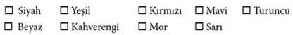

2. Bölüm
1990
Laszlo ile Darian
1
Jill Willoughby, iç çamaşırında ilk kez koyu kırmızı lekeleri gördükten bir hafta sonra aslında var olmayan renkleri görmeye başladı. Güneşe baktıktan sonra gözlerinin önünde oluşan benekler gibiydiler. Jill kendini bunların yalnızca hayal gücünün bir sonucu olduğuna inandırmaya çalıştı, ama içgüdüsel olarak gerçek olduklarını anlamıştı.
Ve bir anlam taşıdıklarını.
Örneğin turuncu... Turuncu her zaman bir çeşit mutluluktu. Günbatımı turuncusu saf sevinçti; kör edici, parlak turuncu ise hüzünlü neşeydi. Renklerin anlamlarını nasıl ve nereden çıkarttığını bilmiyordu. Sadece biliyordu. Ve onları uzun zamandır görüyor olmasa bile, hep orada, yüzeyin hemen altında durduklarına dair içinde tuhaf bir his vardı.
İkinci regl dönemi geldiğinde doğrudan önünde olmasalar bile renkleri görebilmeye başlamıştı. Sanki başının etrafında gözlerden oluşan bir halka vardı. Duvarların ötesini görebilen gözler. Başlangıçta gizli yeteneği hoşuna gitmişti. Tanrı’nın ona bir hediyesi olarak düşünmüştü bunu; tıpkı Yusuf’a firavunun rüyalarını yorumlaması için izin vermesi gibi.
Ve sonra Sarah Marks derste, Levililer’den 19. Bölüm’ü okumuştu. Bu da diğer tüm can sıkıcı okumalar gibi başlamıştı. Tanrı, Musa’ya emirlerini sıralıyordu: Şabat’a itibar edin, putlara tapmayın, fakirlere yardım edin, çalmayın, yalan söylemeyin, Tanrı’nın adını boş yere ağzınıza almayın...
Sonra Sarah 26. Beyiti okumuştu.
“Kanlı et yemeyeceksiniz. Kehanette bulunmayacak, falcılık yapmayacaksınız.”
Tanrı’nın o soluk benizli sarışın kız vasıtasıyla doğrudan kendiyle konuştuğu hissine kapılmıştı Jill. Sonraki dört beyit fuhuş, hayvanların nasıl kesileceği ve sakalın nasıl bırakılması gerektiği hakkındaydı. Ama sonra Sarah devam etti:
“Kim cincilere, büyücülere, ruh çağıranlara danışır, bana ihanet ederse, ona öfkeyle bakacak, halkımın arasından atacağım.”
Jill’in içini buz gibi bir ürperti sardı. Kendisi de öyle birisi miydi? Bir büyücü müydü? Saçma görünüyordu, ama kendini başka nasıl tanımlayabilirdi ki? Daha fazla bilgiye gereksiniyordu. Öte yandan, Rahibe Ellen ya da Peder Sullivan’a gidip, “Benim bir büyücü olduğumu düşünüyor musunuz?” diye soramazdı ya.
Bakışlarını aşağıya indirince yanıtın önünde durduğunu gördü. İncil’in o konuda söyleyecek daha fazla şeyi olduğu kesindi. Tüm kitabı okumak kolay iş değildi, ama imkansız da değildi. Zaten akşam yemeklerinden sonra yapacak fazla şey yoktu. O ve yetimhanedeki diğer kızlar okul ödevlerini bitirdikten sonra genellikle oturup Uno ya da Monopoli oynardı.
Sekiz yılın ardından Jill’in mola vermeye itirazı yoktu.
Böylece, o Eylül ayı boyunca her gece üç saatini yetimhanedeki Eski ve Yeni Ahit’i büyücüler ve büyücülük, cadılık üzerine söylenenleri bulmak için taramakla geçirdi. Öteki kızlar her ne kadar Jill’in bu anti-sosyal davranışından şikâyetçi olsalar da, yaydıkları turkuaz renk Jill’e sitemlerin ardında kızgınlıktan çok merakın yattığını söylüyordu.
Jill toplam on bir kitapta büyücülüğe ait atıflar buldu. Çoğu dolaylıydı, ama dört tanesindeki beyitler oldukça suçlayıcıydı.
Yasanın Tekrarı:
Aranızda oğlunu ya da kızını ateşte kurban eden, falcı, büyücü, muskacı, medyum, ruh çağıran ya da ölülerin ruhlarına danışan kimse olmasın. Çünkü Rab bunları yapanlardan tiksinir.
Vahiy:
Ama korkaklar ve inançsızlar ve menfurlar ve katiller ve sefahat düşkünleri ve büyücüler ve putperestler ve tüm yalancılar alevler içinde yanan o kükürtten göldeki yerlerini alacaklar: ve bu onlar için ikinci ölüm olacak.
Levililer:
Cincilik yapan, ruh çağıran ya da büyücülük yapan ister erkek olsun, ister kadın olsun kesinlikle öldürülecektir. Onları taşlayacaksınız. Ölümlerinden kendileri sorumlu olacaklardır.
Çıkış:
Bir cadıyı yaşatmayacaksınız.
Jill o son satıra uzun uzun baktı. Bir İncil akademisyeni değildi, ama beyit de çok fazla yoruma yer bırakmıyordu. Eğer gerçekten bir cadıysa, bu hafife alınacak bir konu ya da Peder Sullivan ile konuşabileceği bir şey değildi.
Böylece yeteneğini gizli tutmaya karar verdi.
Ve fırsat buldukça –ki renkler ona her zaman, uyuduğunda bile geliyordu– uygulamaktan kendini alamasa da günah çıkartma sırasında bahsetmediği tek günahıydı. O nedenle kefaret için diz çöktüğünde hep fazladan yirmi dua daha okuyordu. Yine de, günahlarının tümünü itiraf etmedikçe, bir otobüs falan çarparsa sonsuza kadar lanetleneceğinin bilincindeydi.
Onun için yapabileceği tek şeye başvurdu. Duaya. O muhteşem renklerin dansını seyretmek keyif verse de, her gece yeteneğinin ortaya çıktığı gibi birden kaybolması için dua etti.
Ama her sabah, Rahibe Kate onları uyandırdığında bitkin maviler ve öfkeli yeşillerin saldırısına gark oluyor ve günahlarla dolu bir günün daha başladığını anlıyordu. Ölümle biterse onu doğrudan Cehennem’e gönderecek bir günün.
Onun için de elinden geldiğince iyi bir insan olmaya çalıştı. Ve sokakta karşıdan karşıya geçerken de hem sağına, hem soluna–olur da bir otobüs falan gelirse diye– bakmayı hiç ihmal etmedi.
2
Elijah Cohen adını iki numara kalemiyle sınav kâğıdının kapalı bölümüne özenle yazdı. Sınıf arkadaşlarının artan gerilimine aldırış etmemeye çalışarak taze kalem talaşının rahatlatıcı kokusuna odaklandı. Standardize edilmiş sınavların kokusu.
Gülümsedi. Çoğu on iki yaşındaki çocuğun aksine, sınavlar Elijah’ın hoşuna giderdi.
Mazoşist falan değildi, sadece meydan okunmayı seviyordu. Aslında iş derslere geldiği zaman Elijah’a meydan okuyabilecek çok fazla bir şey de kalmıyordu. Ezber ona her zaman kolay gelmişti. Sosyal faaliyetler de olmasa ortaokulu aslında bayağı sevecekti.
Ve kurbağaların da kanatları olsaydı, zıpladıklarında kıçları yere vurmazdı.
En azından Stevie öyle derdi.
Ama Elijah kuzeni gibi değildi. Farklıydı o. Ergenlik çağındaki tipik bir oğlan çocuğunun birebir zıttı. Öteki çocuklar teneffüslere, öğle yemeğine ve jimnastik dersine bayılırken, Elijah bunların hepsinden nefret ederdi. Önceden haber verilmeden yapılan sınavlar başka herkes için istenmeyen bir şeyken, onun için birer sürpriz parti gibiydi.
Sınavların en iyi tarafı kimsenin ondan konuşmasını beklememesiydi. Söyleyecek bir şeyi olmadığından değil; tam tersine, tüm yanıtları bilirdi ve ders sonrası ona yanaşan okul kabadayılarına verilecek hazır bir cevabı da her zaman olurdu.
Ama Elijah ne zaman konuşsa sinirlerine yenik düşerdi. Ağzı yüz yıllık bir sünger gibi kupkuru olur, sonra da kekelemeye başlardı. İlginin merkezinde olmaktan nefret ederdi; arka plana düşmeyi, yani dünyanın bir parçası olmaktansa onu gözlemlemeyi tercih ediyordu.
YVD –Yetenekli ve Dâhi– programına seçilmiş olmak onu diğerlerinin gözünde daha da büyük bir hedef haline getirmişti. Neyse ki Stevie de seçilmiş olduğundan, en azından bir tane dostu vardı. Oraya geldiğinden beri bazı şeyler gerçekten de daha iyiydi. Örneğin Bay Kuehl’in dersi. Kendini onun yanında her zamanki kadar gergin hissetmiyordu. Ve Bay Kuehl ona bir şey sorduğunda (ki neredeyse her gün soruyordu) Elijah eskiden olduğu gibi donup kalmıyordu.
Tüm bunlardan ötürü, Bay Kuehl zorunlu eyalet sınavını duyurduğunda rahatlamıştı Elijah. Ama, sınav kitapçığının mührünü yırtıp ilk soruyu okur okumaz midesine bir ağrı saplandı.
Aşağıdaki duygularla en çok benzeşen rengi seçin:
- Öfke

Terli parmakları arasından kayan kalem yere düştü.
Kalemini almak için eğilirken, başkalarının da benzer bir tepki verip vermediğini görmek için etrafına bakındı. Kafa kaşımalar ve sıkıntılı silgi döndürmelerle belirginleşen genel bir şaşkınlık hissi dışında bir şey yoktu. Başka kimse onun gibi hissetmiyordu. Başka kimse dehşete kapılmış değildi.
Sınav kâğıdına tekrar baktı. Öyle bir soruyu insan neden sorardı ki?
Çünkü biliyorlar da ondan. Ve eğer biliyorlarsa, o zaman belki de…
“Yalnız değilim,” diye mırıldandı Elijah.
“Bir şey mi dediniz, Bay Cohen?” diye sordu Kuehl oturduğu masadan başını kaldırarak. Sınıftaki tüm gözler Elijah’a çevrildi.
Elijah gözlerini önündeki sınav kâğıdına çevirerek, “H-h-hayır,” dedi. “Ö-ö-özür dilerim.”
“Zararı yok,” dedi bay Kuehl. “Evet, gözler kâğıtlara.”
Herkes kâğıdına yoğunlaşınca sınıf arkadaşlarının ilgi odağı olmaktan kurtulan Elijah rahat bir nefes aldı. Sonra soruyu bir kez daha okudu ve fikrini değiştirmeden doğru yanıtın yanındaki küçük daireyi karaladı.
Mor.

Winter Zhi sınavın ikinci bölümüne geçmeden Elijah’ın ne demek istediğini anlamamıştı. Renkler hakkındaki ilk bölüm çok saçma gelmişti. Omuz silkip, aklına estiği gibi yanıtlamıştı.
Okuduğu her duygu için kafasında bir imge canlandırmaya çalıştı. Öfke için siyah bir bulut. Mutluluk için gülen sarı bir surat. Sevgi için kırmızı bir kalp. Neyi sınadıklarını merak ederek uygun daireleri karaladı.
Ama 2. Bölüm’e geçildiğinde birden buz gibi oldu. Beyni allak bullak halde başını kaldırıp gözlerini Elijah Cohen’in ensesine dikti. Gür ve dalgalı kızıl saçları yüzünden ötekiler ona Akıllı Bozo lakabını takmıştı. Çocuklar onunla dalga geçerken Winter onlara hiçbir zaman katılmamıştı, ama neden dalga geçtiklerini de anlayabiliyordu. Narin yapısına rağmen Elijah sürekli terliyor gibiydi ve kekemeliği de hep alay konusu oluyordu.
Yine de ve hiç konuşmamış olmalarına rağmen, ona karşı hep bir sahiplenme hissi duymuştu Winter; yaralı bir köpek yavrusuna duyacağı cinsten. Ama asla yakınlık hissetmemişti. Ta ki, yedinci sayfaya geçip de Elijah’ın mırıldandığı cümleyi düşünene kadar.
Yalnız değilim.
İlk duyduğunda o sözleri başka bir Elijah Cohen tuhaflığı olarak almıştı. Ama şimdi, 25. soruya bakarken kendisi de benzer bir duyguya kapılıyordu. Aslında kimse, okulun en popüler kızının kendini yalnız hissettiğine inanmazdı. Gerçekten öyle olsa bile.

“Bu sonuçlar doğru mu?”
“Hepsini tek tek kendim kontrol ettim. Her iki potansiyel de aynı sınıfta. New York’taki bir üstün yetenekli çocuklar programı.”
“Nasıl seçilmişler?”
“Programın öğretmenlerinden biri IQ’su 145 ve üzerinde olan iki yüz on sekiz çocukla görüşme yapmış. On beşini kendi sınıfı için seçmiş.”
“Öğretmenin adı ne?”
“Laszlo Kuehl.”
“Darian’ı buraya getir. Şimdi.”
3
Hemşire Christina olmasaydı, Jill dini bütün birisi olarak kalabilirdi. Christina’da onun sahip olmadığı her şey vardı: Sarı saçlar, güzel ve yuvarlak hatları olan bir vücut, iri, yusyuvarlak göğüsler ve siyah cüppenin altından bile belli olan harikulade bir kalça. St. John’s okulunda ders vermeye başladığı andan itibaren Jill kadına vurulmuştu.
Makyajsız ve saçlarının çoğu örtülü halde bile Hemşire Christina, o güne dek karşılaştığı en dişi kadındı. Ama Jill’in dikkatini çeken sadece onun görünüşü değil, hissettikleriydi; parlak kırmızı neşe ve kadife gibi deniz mavisi heyecan.
Jill arzularını frenlemeye çalıştı, ama nerede olursa olsun Hemşire Christina zihnine sızıyor, düşüncelerine egemen oluyordu. En kötüsü de gecelerdi. Yatağında yatarken ellerini Hemşire Christina’nın pürüzsüz, güzel kokulu bedeninde gezdirdiğini hayal ediyordu. Sonunda uykuya dalabildiğindeyse Christina rüyalarına giriyordu.
İşte böyle bir gece Jill, ter içinde ve parmakları geceliğinin altında uyandı. Sonrasında olanlar öleceği güne kadar ruhunda iz bırakacak kadar dehşet verici renklerle boyanmış bir dizi olayın başlangıcı oldu.

Jill başını üst ranzanın altına çarpmamaya dikkat ederek yatağından çıktı. Eski döşeme tahtaları ince bedeninin altında gıcırdarken usulca koridorda yürüdü. Banyoya girip yüzünü soğuk suyla yıkadı.
Zihnini açmak için derin bir soluk aldı. Etraf çok sakindi ve gördüğü tek renk bulanık bir mavi pustu. O ender sakinlik anının keyfini çıkartarak soluğunu bıraktı. Her anını –yemek, dua, okul, uyku zamanlarını– on iki kız ile geçirmek, bir renk karmaşasının sürekli olarak beynini meşgul etmesi anlamına geliyordu. Sadece öyle çalınmış anlarda kendisini kendi gibi hissedebiliyordu.
Ansızın belirgin ve parlak bir yeşilimsi-siyah dalgası hissetti. Düşünmeden kendini koridora atınca, neredeyse Hemşire Christina ile çarpışıyordu.
“Ah, sensin,” dedi yüzündeki şaşkınlık belirtisi eriyen rahibe. “Bu katta ne yapıyorsun?”
“Ben… Ben tuvalete gitmek zorundaydım.”
“Mantıklı görünüyor,” dedi Hemşire Christina gülerek. “Ben de bir şeyler atıştırmak için mutfağa gidiyordum.”
“Sizinle gelebilir miyim?” dedi Jill birden.
“Geç oldu, tatlım. Yatağına geri dönsen iyi olur.”
“Lütfen,” diye yalvardı Jill. “Bu ikimizin arasında kalacak.”
Hemşire Christina duraksayınca, Jill arzuyla yanarak baktı ona.
Sonunda rahibe, “Benimle gel,” dedi fısıltıyla.
Merdivenlerden inip kilisenin mutfağı olarak kullanılan uzun ve dar odaya ulaştılar. Christina ışığı açınca tertemiz paslanmaz çelik tezgâhlar aydınlandı. Jill’e muzip bir bakış atarak muşamba kaplı zeminde büyük sanayi tipi dondurucuya doğru yürüdü.
Dolabın kapısını açınca buz gibi ferahlatıcı hava yüzlerine çarptı. Dondurucunun içinde bir süre bir şeyler arayan rahibe, sonunda kocaman bir kap çikolatalı dondurma çıkarttı.
“Tek zaafım bu,” dedi. “Biliyorum, günahkârlara yaraşır türden. Peder Sullivan’a söyleme sakın.”
“Söylemem,” dedi Jill gülümsemekten kendini alamayarak.
Christina bir çekmeceden iki kaşık çıkarttı ve Jill’e kendini izlemesini işaret ederek mutfağın dibindeki bir kapıya yöneldi. Yetimhanede on dört yılını geçirdikten sonra her tarafı karış karış bildiğini zanneden Jill, o odayı daha önce hiç görmediğini farketti.
Zemin eski, sarı bir halıyla kaplıydı. Köşedeki yüzü solmuş iki yeşil kanepenin arasında küçük kare bir oyun masası vardı. Hemşire Christina kendini kanepelerden birinin üzerine bıraktı, Jill de çekinerek yanına oturdu; yaşanan anın büyüsünü bozmaktan korktuğundan konuşmaya cesaret edemiyordu.
Christina ona da bir kaşık vererek, “Hadi,” dedi. “Sen ne kadar çok yersen, ben o kadar az atıştırırım ki, bu da iyi olur. Rahibe olabilirim, ama formumu korumaya hâlâ özen gösteriyorum.”
“Teşekkür ederim.” Jill bir kaşık dondurma aldı. Sonra fikrini değiştirmeye fırsat bulamadan ekledi: “Öylesiniz zaten.”
“Anlamadım?”
“Formunuzdasınız yani.” Kendini aptal gibi hissediyordu.
“Teşekkür ederim.”
Bir süre sessizce yemeye devam ettiler. Jill dondurmanın keyfini çıkarmaya çalışıyordu, ama fazlasıyla gergindi. O güne dek Hemşire Christina ile ders dışında hiç konuşmamıştı; onunla diğer kızlardan uzak bir yerde, öyle tek başına oturuyor olmak rüya gibiydi.
“Rahibe? Bir rahibe olmadan önce hiç… Yani… Siz hiç…”
Christina kaşığını bıraktı. “Hiç ne?”
“Hiç… Âşık oldunuz mu?”
Genç kadının yanakları kızardı. “Doğruyu söylemek gerekirse, lisede kalbimi hoplatan bir oğlan vardı.”
“Peki hiç… Yani, anlıyorsunuz...”
“Ah, hayır,” dedi Christina başını iki yana sallayarak. “Varlığımdan haberi bile yoktu. Hem o zamanlar bile kaderimde Billy Cardellini ile yaşayacağım bir ilişkiden çok daha fazlasının olduğunu biliyordum.”
“Gerçekten mi?” diye sordu Jill. “Kiminle?”
“Tanrı ile.”
“Ah! Doğru,” dedi Jill. Kendini bir kez daha budala gibi hissetmişti.
“Neden sordun bunları? Âşık olduğun birisi mi var?”
Şimdi kızarma sırası Jill’de idi. Gözlerini elindeki kaşığa dikti.
“St. Matthews’daki oğlanlardan biri mi?” diye üsteledi Christina ve elini onunkinin üstüne koydu. “Bana güvenebilirsin, Jill. Kimseye söylemem.”
Christina’nın eli eline değince Jill’in nefesi kesilmişti. Dokunuşu o kadar sıcak ve yumuşaktı ki... Tam hayal ettiği gibi. Alt dudağını ısırdı; kalbi öylesine hızlı atıyordu ki, Hemşire Christina’nın duyacağından emindi.
Rahibe onun elini sıkarak, “Ne oldu, Jill?” diye sordu. “Titriyorsun.”
Jill kendine hakim olmaya çalıştı, ama bu sadece titremesini artırdı. Dönüp ona baktı. Gözleri buluşunca ağlayacak gibi oldu. Garip bir duygu selinde boğulduğunu hissetti; neşe, utanç, hüzün ve çılgınca, önüne geçilmez bir arzu hep bir aradaydı.
Ama hepsini gölgede bırakan şey, teninin altında davul gibi zonklayan, arzuydu. Christina’ya bakarken düşünebildiği tek şey ince dudaklarını karşısında duran muhteşem ağza yapıştırmanın nasıl bir şey olacağıydı. Dilini uzatıp onunkine dokundurmanın... Bluzunu yırtarak açıp...
Sonra inanılmaz bir şey oldu.
Christina dudaklarını yaladı, ona doğru eğildi, ateşli ve sert bir şekilde öpmeye başladı. Dilini ağzının içine itti. Serin ve çikolata tadındaydı. Ama altında bir sıcaklık vardı ve Jill o sıcaklığın tadına vardı; ıslak ve karanlıktı.
Jill elini yavaşça onun yanağında gezdirdi sonra boynunu okşadı. Christina da onu kendine doğru çekti, bir eliyle belini kavrarken, diğerini saçlarının arasında dolaştırdı. Sonra eli bacağı boyunca kayıp dizine, oradan da geceliğinin altına gitti.
Okşamalar yavaşça bacaklarından kasıklarına doğru çıkarken Jill, zevkten patlayacağını zannetti. Tüm bedeni ürperiyordu. Kemikleri jöle gibi olmuştu; her gözeneğinden ter fışkırıyordu. Zihni tüm düşüncelerden arındı ve Christina’nın ihtirasla titreyen mavi arzusu onunkine karıştı.
Tüm korkuları yok olan Jill kendini bıraktı. Elleri Christina’nın yüzünde ve saçlarında çılgınca dolaştıktan sonra bedenine kaydı. Geceliğinin düğmelerini çözdü ve kasıklarındaki dokunuş daha derinlere giderken elini geceliğin açılan yakasından içeriye sokup kadının ılık, dolgun göğüslerine dokundu.
Bedenleri birbirine kenetlenirken derin bir soluk alıp Christina’yı yeni bir hevesle kucakladı. Artık kendinin nerede bitip, onun nerede başladığını bilemiyordu; tek bildiği dokundukları her noktada birlikte olduklarıydı. Birden çıplak kalmak için yoğun bir arzu duydu; tenlerinin arasında hiçbir şey olmamalıydı.
Ayağa kalktı, geceliğini başından geçirip çıkarttı. Serin hava tenine değince hissettiği ürperti, Christina’nın soyunmasını izlerken terli bir heyecana dönüştü.
Kadının dolgun göğüsleri üstlerini örten ince pamuklu kumaştan kurtulup serbest kalınca Jill onlara doğru çekildiğini hissetti. Onu kucaklamak, bedeninin her parçasının kendininkine değdiğini duymak için ayağa kalktı. Christina onu hemen kendine çekip tırnaklarını sırtında dolaştırdı.
Jill ağzını açıp mermersi boynu hafifçe ısırırken, bir yandan da diliyle tuzlu tenini yalıyordu.
Tam o sırada arkalarında bir gürültü, sonra da bir erkek sesi duyuldu. “Aman Tanrım!”
Jill’in gözlerinin önünde öfkeli bir yeşile karışmış, dehşeti ifade eden bir pembe parladı. Bu renkler bir an için buz mavisi arzuyla karıştı, sonra Hemşire Christina silkinerek kendini geriye attı. Jill çıplak ve yalnız, öylece kalakalmıştı.
Gözlerini açtı. Christina geceliğini önünde tutarken, Peder Sullivan da onun kolunu sımsıkı kavramıştı. Jill’in yaşamındaki en mutlu an bir saniye içinde en kötüsüne dönüşüverdi.
Midesi buruldu, az önceki o sıcak, ürpertici hazzın son kırıntısı yerini mide bulandıran bir acıya bıraktı. Peder Sullivan’ın öfkesinin çok yakında kendisine yöneleceğinin bilincinde, paylaşılacak son bir an için Christina’nın gözlerini bulmaya çalıştı, ama rahibe ona bakmayı reddetti.
Rahip ile rahibe arasında kısa bir konuşma geçti. Sonra Peder Sullivan kadına odayı terk etmesini emretti. Christina geri çekilirken Jill billur beyazı bir nefret içinde boğulur gibi oldu.
Christina dişlerinin arasından, “Bana ne yaptığını bilmiyorum,” dedi ona. “Ama Tanrı yardımcın olsun, Jill.”
Sonra sevdiği kadın onu ne yapacağı belli olmayan rahiple yalnız bırakarak çıktı ve gitti. Jill siyahlar içindeki adama baktığında tüm renklerinin karanlık olduğunu farketti. O zaman kendisi için artık kurtuluş olmadığını anladı.
Gücü onu terk etmişti.
4
“Radyo dalgaları.” dedi Laszlo Kuehl muzaffer bir edayla. Aynı sözcükleri bir yandan da tahtaya yazıyordu. “Hadi bakalım, bana bilmediğim bir şeyler söyleyin.”
Winter Zhi genç yüzünde hafif bir tebessümle, “Roger Waters’in Radyo K.A.O.S.’unda çalınan ilk parça,” diye yanıtladı.
Laszlo güldü. Üstün yetenekli öğrencilerle uğraşmanın bir yönü de buydu. Herkes ayrı bir bilgiçti. Aldırış ettiği yoktu buna. Aslında öyle olmaları için yüreklendiriyordu bile onları. Sınıfının hiçbir şeyin yasak olmadığı bir emniyetli bölge olması hoşuna gidiyordu. YVD çocuklarının çoğunun zeki olmalarından ötürü dışlandığını bilirdi. Onların entelektüel kelime oyunlarına el uzatmaya hiç niyeti yoktu.
“Ve Roger Waters hakkında ne biliyorsunuz, Bayan Zhi?”
Winter favori konusunu –yani müzikle ilgili herhangi bir şeyi– tartışmaktan memnun halde yerinde doğruldu. Hafifçe öksürerek boğazını temizledi.
“1964’de Syd Barrett ile birlikte Pink Floyd’u kurdular. İlk albümleri Piper at the Gates of Dawn idi, ama asıl Dark Side of the Moon ile tanındılar. Sonra Barrett çıldırdı ve Waters ona övgü olarak Wish You Were Here adlı parçayı besteledi. Ondan sonra Animals, The Wall ve The Final Cut albümlerini çıkardılar. Sonra da Waters grubu terketti. Kalanlar A Momentary Lapse of Reason adında bir albüm daha çıkardı, ama güfteler Waters’in olmayınca, biraz yavan kaçtı. Bana göre o son albüm ancak bir C+ alır.”
Laszlo topuklarının üzerinde salındı; sınıf canlanmıştı. O fazladan dikkati %30 konunun özüne, %70 ise Winter’e bağlıyordu. Kusursuz beyaz teni, bir şekilde onu hantal göstermeyen uzun kol ve bacaklarıyla doğal bir güzelliğe sahip olan Winter Zhi, insanların özellikle dikkatini çeken tipte bir kızdı.
“Ve sizin favori Floyd albümünüz hangisidir, Bayan Zhi?”
“Animals,” dedi Winter hiç duraksamadan.
“Ve bu albüm hangi klasik romandan esinlenmiştir?”
Müzik konusunda bilmediği bir detaya rastlamış olmaktan ötürü şaşıran Winter gözlerini kırpıştırdı.
“Bilen var mı? Kimse yok mu? Bay Bueller?”
Bu film referansından 1 dolayı birkaç kıkırdama alan Laszlo, bilgi kıvılcımı arayarak sınıfa baktı. Karşısında bir sürü boş boş bakan yüz vardı; bakışları her zamanki yedek oyuncusuna gelene kadar elbette.
1 Ferris Bueller: Ferris Bueller’in İzin Günü adlı komedi filminin ve TV dizisinin haylaz kahramanı (ç.n.)
“Bay Cohen. Bayan Zhi’yi aydınlatmak ister misiniz?”
Elijah Cohen sandalyesine biraz daha gömüldü. Onun aşırı utangaçlığı Laszlo’ya acı veriyordu, ama çocuğun kabuğundan çıkartılması gerekiyordu. Tüm öğrencileri içinde Elijah en etkileyici olandı. O sıkıntılı çocuk bir gün –kendi inanmasa da- milyoner olacaktı.
“G-G-George Orwell’in Hayvanlar Çiftliği’nden esinlenmişti.”
“Çok iyi. Lütfen açıklar mısınız?”
Kızaran Elijah bakışlarını önüne indirdi ve tahta sırasının üzerine kazınmış şekillere bakarak hızlı hızlı konuştu.
“Yani kitapta olduğu g-g-gibi, insanlık da hayvanlarla simgeleniyor. Albümde geçen üç tip hayvan var: Köpekler, domuzlar ve koyunlar. Köpekler açgözlü işadamlarını, domuzlar yozlaşmış politikacıları ve koyunlar da kalan herkesi, geriden gelenleri simgeliyor.”
Laszlo ellerini arkasında kavuşturarak, “Mükemmel,” dedi. “Böylece hepimiz Bayan Zhi’nin küçük sapmasından bir şeyler öğrenmiş olduk. Hatta Bayan Zhi’nin kendisi bile.” Sonra, tahtaya geri döndü. “Ama ne yazık ki, artık fiziğe geri dönme zamanı.”
Sınıftan hafif bir homurtu yükseldi, ama Laszlo onların merakının kokusunu alabiliyordu. Öğrencilerinin çoğu sıkıntısını da çekecek derecede aşırı zekiydi, ama hepsi de son derece araştırıcı bir zihne sahipti. Laszlo’nun her sabah yataktan şevkle kalkmasını sağlayan da, bunu bilmesiydi.
“Biraz tarihçeyle başlayalım. Radyoyu kimin bulduğunu bileniniz var mı?”
“Nicola Tesla,” dedi sınıfın bilgici Jonah Hulse gururla.
“Rock grubu Tesla gibi mi yani?” diye sordu Winter.
“Aynen. Sanırım grup adını ondan almış,” dedi Laszlo. Konu yine dağılmadan Winter’in gevezeliğini çabucak kesmişti. “Tesla, 10 Temmuz 1856 yılının tam gece yarısında Hırvatistan’da doğdu.”
Bir tarih geçince defter sayfaları üstünde dolaşan kalemlerin hışırtısı duyuldu.
“Beş yaşındayken bir fırıldağa yapıştırdığı on yedi böcek tarafından döndürülen ilk motorunu tasarladı. Garip fikirlerinin sadece başlangıcıydı bu; diğerleri arasında küresel yolculuğu kolaylaştırmak için dünyayı çevreleyen sabit bir halka ve posta ulaşımını hızlandırmak için Atlantik Okyanusu’nu geçecek hidrolik güçlü devasa bir tüp de vardı.”
İlginin artık tamamen söylediklerine yoğunlaştığını gören Laszlo dudaklarında hafif bir gülümsemeyle devam etti:
“Tesla üniversite yıllarında gecede sadece bir ya da iki saat uyuyarak yaşıyor, günde yirmi saat çalışıyordu. İlk yılının sonunda dokuz dili akıcı şekilde konuşmaya başlamıştı. Ne yazık ki, babası vefat edince hayatını kazanmak için üniversiteden ayrılmak zorunda kaldı. Böylece Paris’deki Continental Edison Company’de mühendislik yapmaya başladı. Patronu ondan öylesine etkilenmişti ki, Thomas Edison ile tanışması için Amerika’ya gönderdi.”
Sınıfta, “Bizim Edison bu,” türünden mırıldanmalar oldu.
“Edison Tesla’yı derhal işe aldı ve kendi icadı olan doğru akım dinamolarını yeni baştan tasarlayabilirse 50.000 dolar ödemeye söz verdi. Tesla her ne kadar alternatif akımla çok daha fazla ilgileniyor idiyse de, kendi araştırma laboratuarını kurmak için paraya ihtiyacı olduğundan projeyi kabul etti. Bir yıl içinde yeni tasarımı başarıyla tamamladı, ama parasını isteyince Edison sözünden döndü.”
“Çüş!” diye bağırdı Stephen Grimes. Sivilceleri neredeyse gözeneklerinden fırlayacaktı. “Yani Thomas Edison’un puştun teki olduğunu mu söylüyorsunuz?”
Laszlo sınıftakilerin gülüşmelerine katılarak, “Tarihe bakarsak, evet demek zorundayım,” dedi.
Grimes yağlı eliyle burnunu silerek, “Harika!” dedi. “Devam edebilirsiniz.”
“Teşekkür ederim, Bay Grimes.”
Bay Grimes sınıftaki en görgülü öğrenci değildi, ama iyi bir espri anlayışı ve onu sınıfın gözünde kahraman yapan bir dokunulmazlık havası vardı. Taşkınlıklarına hoşgörü gösteren tek öğretmen Laszlo olduğu için de, fen derslerinde özellikle cesurdu. Ayrıca Laszlo iki seçeneği olduğunu düşünüyordu: Ya espriye katıl ya da esprinin konusu ol. Birincisini yeğlemişti.
“Edison’dan ayrılan Tesla, birkaç yıl hendek kazıp, yol inşaatlarında amelelik yaptı. Ama neredeyse hiç uyumadığı için icatları üzerinde çalışmayı da sürdürdü. Genellikle kağıda dökmeden önce onları kafasında tümden tasarlıyordu. George Westinghouse 1888’de Tesla’ya alternatif akım konusundaki patentleri için 60.000 dolar ödedi. Ülkeye elektrik dağıtımı için kullanılacak sistemin akım türünü belirlemek için birlikte Thomas Edison’a karşı bir ‘Akımlar Savaşı’ başlattılar.”
Birkaç saniye duralayıp notların alınmasına izin verdi.
“Doğru akım her zaman tek bir yönde akan sürekli bir elektriksel şarjdır. Alternatif akımsa, hem genliği, hem de yönü periyodik olarak değişen dalga şeklinde bir akımdır. Edison’un doğru akımı Tesla’nın alternatif akımından önce ortaya çıkmış olsa da, bir sorunu vardı. Doğru akım uzun mesafelerde aktarıldığında telleri eritiyordu. Dolayısıyla Edison kısa aralıklarla elektrik santralleri kurmak zorunda kalmıştı. Başka bir sorunsa daha alçak ya da yüksek bir voltaja kolaylıkla dönüştürülememesiydi, yani değişik voltajlarda çalışan aygıtlar için ayrı elektrik hatları kurmak gerekiyordu.”
Öğrencilerden biri, “Ama alternatif akımda böyle bir sorun yoktu,” dedi.
“Doğru. Alternatif akım telleri eritmeden elektriği çok uzun mesafelere taşıyabildiği gibi, 5 voltluk bir ampulden, 100 voltluk bir fabrika motoruna kadar her şeyi çalıştıracak şekilde ve kolaylıkla dönüştürülebiliyordu. Tesla’nın sisteminin daha üstün nitelikli olduğunu bilen Edison, alternatif akımı karalamak için propagandaya başvurdu. Şirketindeki mühendisler dünyanın –elbette ki alternatif akımla çalışan– ilk elektrikli sandalyesini tasarladı. Sonra da alternatif akımın ne kadar tehlikeli olduğunu göstermek amacıyla o düzeneği sokaktan topladıkları başıboş kedi ve köpekleri medyanın önünde öldürmek için kullanmaya başladılar. En görkemli gösteriyse, bir filin Coney Adası’nda elektrikle öldürülmesiydi. Hatta Edison elektrikle ölmek anlamında yeni bir deyim bile yaratmıştı: ‘Westinghouse’lanmak.’”
Grimes gözleri heyecanla parlayarak, “Bunları uyduruyorsunuz,” diye atıldı.
“Korkarım ki hayır,” dedi Laszlo. “Sizin de az önce incelikle buyurduğunuz gibi, Edison puştun tekiydi.”
“Hadi ya!”
“Edison’un tüm karalama çabalarına karşın alternatif akımın avantajları o kadar belirgindi ki, hükümet Niyagara Şelaleleri’nin gücünden yararlanmaya karar verince Tesla’nın sistemini Edison’unkine tercih etti. Ve gerisi zaten bilinen tarih. Bugün sadece pille çalışan cihazlar doğru akım kullanırken, elektrik bütün dünyada alternatif akım olarak aktarılır. Ve pil kullanan, ama prize de takılabilen cihazlar, aynı zamanda bir rock grubunun da adı olan hangi tip adaptörü kullanır… Bayan Zhi?”
“AC/DC,” dedi Winter gülümseyerek.
“Doğru.”
“İyi de bu arada radyo dalgalarına ne oldu?” diye sordu James Ulrich.
“Ah, evet! Korkarım Bay Grimes’in, ‘Edison puştun tekiydi,’ lafından sonra konuyu biraz dağıttım. Neyse... Tesla 1897’de iki patent başvurusunda bulundu: ‘Elektriksel Enerjinin İletimi İçin Bir Sistem’ ve ‘Elektriksel Enerjinin İletimi İçin Bir Cihaz.’ Ve radyo böylece resmen doğmuş oldu. Radyo dalgaları aslında ondan birkaç yıl önce Heinrich Hertz adında bir Alman fizikçi tarafından bulunmuştu. Hertz radyo dalgalarının, dalga boyları insan gözüyle görülemeyecek kadar uzun olan bir tür elektromanyetik radyasyon olduğunu gösterdi.”
Birden ilgisi artan Elijah Cohen oturduğu yerde öne doğru eğildi. “Ama ben elektromanyetik radyasyonun ışık olduğunu sanıyordum.”
“Görüyorum ki konumuzu önceden okumuşsunuz, Bay Cohen,” dedi Laszlo. “Aslında yarı yarıya haklısınız. Görünür ışık bir tür elektromanyetik radyasyondur, ama tayfın sadece küçük bir kısmıdır. Açıklayayım: Elektromanyetik radyasyon yalnızca evrenin temel yapı taşlarından biri olan fotonlardan oluşur. Fotonlar özde saf enerjidir. Kütleleri yoktur ve her zaman ışık hızında hareket ederler: Saniyede 300,000 kilometre. Elektromanyetik radyasyonun insanlar ve makineler tarafından nasıl algılandığıysa, işin içinde kaç tane foton olduğuna ve bunların nasıl hareket ettiğine bağlıdır. Fotonların genellikle dalga olarak hareket ettikleri düşünülür, yani şöyle:

“Dalga ne kadar hızlı hareket ederse, bir saniyede oluşan doruk ve vadilerin sayısı da o kadar fazla olur. Bu sayı frekans olarak bilinir ve Hertz cinsinden ölçülür. Dalga ne kadar güçlüyse, genliği –yani dorukla vadi arasındaki fark– o ölçüde artar.
“Sıfır Hertz’de piller veya doğru akım üreteçleri tarafından üretilen elektrik vardır, çünkü doğru akımda dalga değil, sadece sürekli elektrik akımı vardır. 3 ile 30 Hz arasındaki frekanslar ELF 2 ya da Aşırı Düşük Frekans olarak bilinirler ve alternatif akımı iletmek için kullanılırlar. İnsan kulağı Aşırı Düşük Frekans’ın üst kısımlarını ve 20 Hz ile 20,000 Hz arasındaki Süper Düşük, Ultra Düşük ve Çok Düşük Frekansları duyabilir. Frekans arttıkça, ses de incelir. Erişkin erkek sesi genellikle 85 ile 155 Hz arasında, erişkin kadın sesi ise genellikle 165 ile 255 Hz arasındadır.”
2 Extremely Low Frequency (ç.n.)
“Bir dakika,” dedi Winter. Başı ilgiyle yana eğilmişti. “Yani, biz radyasyonu duyabiliyor muyuz?”
“Tam olarak değil,” diye yanıtladı Laszlo. “Hava moleküllerine çarpan fotonlar onların titreşimine neden olur. Duyduğumuz işte o hava moleküllerinin tepkisidir.”
“Yani ışık havaya çarpıyor ve biz de havayı duyuyoruz, öyle mi?”
“Temelde öyle.”
Stephen Grimes parmaklarını bir büyücü gibi oynatarak, “Tüyler ürpertici,” dedi.
“Şimdi, elektromanyetik tayfın geri kalanının üzerinden bir geçelim,” diye devam etti Laszlo. “30 ile 300 kHz arasındaki frekanslar LF ya da Düşük Frekans’lardır. Hükümet bunları navigasyon uydularında kullanır. Bunun üzerinde, 300 ile 3,000 kHz arasındaki AM3 ve MF ya da Orta Frekans gelir. Dostumuz Nikola Tesla işin içine işte tam burada giriyor. Aldığı o iki patentle ses dalgalarını havada ışık hızıyla giden elektromanyetik radyasyona dönüştüren bir aygıt tasarladı. Sinyalin yayınlandığı frekansa ayarlanmış bir radyo da o elektromanyetik radyasyonu yeniden ses dalgalarına dönüştürecekti.”
3 AM (Amplitude Modulation): Genlik Modülasyonu (ç.n.)
“Nasıl?” diye sordu Winter.
“Radyo elektromanyetik dalgaların yüksekliğini, yani genliğini ses dalgalarına dönüştürür. Zaten AM radyonun adı da buradan geliyor: Genlik Modülasyonu. Yani, siz radyonuzu 1010 WINS istasyonuna ayarladığınız zaman aslında 1010 kHz frekansındaki bir elektromanyetik radyasyona ayarlıyorsunuz, cihaz da genlik modülasyonlarını duyulabilir sese çeviriyor. Ve ışık hızı saniyede 300.000 kilometre olduğuna göre, herkesin radyosu yayını pratik olarak aynı anda alıyor. Anlaşıldı mı?”
Sınıfın yaklaşık yarısı Laszlo’nun açıklamasını takip edebilmişti, ama tümü anlatılanları okuyarak öğrenebilecek kadar zeki olduğundan, bu kabul edilebilir bir kayıptı. Ayrıca biraz kafa karışıklığı onlara iyi gelirdi. Burunlarını azıcık sürtmekte yarar vardı.
“Devam edelim. 3 ile 30 megahertz arasında kısa dalga radyo yayınlarının yer aldığı Yüksek Frekans vardır. Ardından 30 ile 300 MHz arasında FM, yani Frekans Modülasyonu kullanan radyo yayınlarının ve bazı televizyon kanallarının yer aldığı VHF ya da Çok Yüksek Frekans gelir. Sonra 300 ile 3.000 MHz arasında diğer televizyon kanallarının yer aldığı UHF -Ultra Yüksek Frekans- vardır. 3 ile 30 gigahertz4 arasında Süper Yüksek Frekans, yani mikrodalgalar yer alır. Ve son olarak da, 30 ile 300 GHz arasındaki radyo astronomi sinyalleri bulunur. Ve bu da radyo frekanslarının sonu demektir.”
4 gigahertz (GHz): 1,000,000,000 Hertz (ç.n.)
Sınıf tam bir nefes alacaktı ki, Laszlo devam etti: “Ama elektromanyetik tayfın sonu demek değildir. Ancak sabrınızın tükenmekte olduğunu gördüğümden, sonraki frekansları hızlıca sıralayacağım:
“300 gigahertz ile 400 terahertz5 arasında çıplak gözle görülemeyen kızılötesi ışık vardır. 400 THz ile 800 THz arasında ise hepimizin bilip sevdiği görünür ışık yer alır. Işığın rengini frekansı belirler. Mesela kırmızı 405 ile 480 THz arasında, mor ise 700 ile 790 THz arasındadır. Ondan sonra da, sırasıyla morötesi ışık, X-ışınları ve son olarak da Gamma-ışınları gelir.”
5 terahertz (GHz): 1,000,000,000,000 Hertz (ç.n.)
“Hani şu Bruce Banner’i Hulk’a çevirenler mi?” diye sordu Grimes.
“Aynen,” dedi Laszlo. “Peki, kim özetlemek ister? Ah, Bay Cohen! Gönüllü olduğunuz için teşekkürler.”
Elijah, Laszlo’nun her zaman elini kaldırmamış bir öğrenciyi seçmek için yaptığı espriyi duyunca başını kaldırıp baktı, sonra özetledi:
“Elektromanyetik r-r-radyasyon, ‘dalga halinde hareket eden fotonlar’ demenin daha süslü bir yolu. Foton dalgasının frekansına bağlı olarak radyasyon değişik şekiller alıyor. Çok düşük frekanslarda elektrik oluyor. Sonra, hava moleküllerini t-t-titreştirerek ses haline geliyor. Frekans yükseldikçe ses de inceliyor.”
Hocasının başını sallayarak onayladığını görünce devam etti:
“Gerçekten yüksek frekanslar AM ve FM radyo ile televizyon yayınlarında kullanılıyor. Sonra ışık oluyor: Önce kızılötesi, sonra görünür, sonra da mor ötesi. Frekansla birlikte renk de değişiyor. En yüksek frekanslardaysa elektromanyetik radyasyon, X-ışınları ve G-G-Gamma-ışınları haline geliyor. Ve radyo frekansı tayfında elektromanyetik radyasyon yayan ve alan bir aygıtı tasarlayan ilk insan Tesla idi.”
“Hepsinin bu kadar olduğuna emin misiniz?” diye üsteledi Laszlo.
Elijah dersin başından beri ilk defa gülerek, “Ha, bir de...” dedi; “Edison puştun tekiydi.”

Zil çalınca yerinden ilk fırlayan Stevie oldu. “Hadi gidelim.”
“Bana bir saniye izin ver,” dedi Elijah. “Bay Kuehl’e bir şey sormak istiyorum.”
“Seni yağcı,” diye takıldı Stevie. “Dolapların orada buluşuruz.”
Herkes çıkarken geride kalan Elijah çekinerek en sevdiği öğretmenine yaklaştı. “Efendim? Merak e-e-ediyorum… Nikola Tesla’ya ne oldu? Demek istediğim, neden Edison kadar ünlü değil?”
Kuehl masasındaki kâğıtları toplarken, “Güzel bir soru,” dedi. “Bir sonraki derste sor. İyi bir tartışma konusu olur.”
“P-P-Peki.” Elijah sırt çantasını omuzladı. “Ve bu ilginç ders için teşekkürler.”
“O kadar da ilginç değildi,” dedi Kuehl gülerek. “Anlaşılan öteki derslerin çok sıkıcı. Şimdi, izin verirsen, okumam gereken elli civarında kâğıt var ve... Ve sen her zaman olduğu gibi sayfa limitini aşmışsın. Kendini sözlü ifade ederken, yazarkenki kadar üretken olmayışın kötü.”
“Yazmayı seviyorum.”
“Neyse ki, ben de okumayı severim. Şimdi acele et. Bay Grimes uzun süre yalnız başına bırakılırsa, olasılıkla okulu yakar.”
“Evet, efendim. Yarın görüşürüz.”
“İyi günler, Bay Cohen.”
Elijah kapıya yöneldi, sonra durup döndü. “Öğrencilerinize neden ‘bay’ ve ‘bayan’ diye hitap ediyorsunuz?’”
“Sen neden bana ‘Bay Kuehl’ diyorsun?”
Elijah omuz silkti. “Bu sosyal bir norm.”
Kuehl güldü. “Evet, sanırım öyle. Ama sosyal normlar neden vardır? Birisine ‘bay’ dediğin zaman iletmek istediğin mesaj nedir?”
“Saygı...”
“Bu soru mu, yoksa soruma yanıt mı?”
“Yanıt,” dedi Elijah üstüne basarak.
“Doğru. Öğrencilerim bana saygı duyduğuna göre, benim de onlara saygı duymam gerekir.”
“Yani diğer öğretmenlerin öğrencilere saygı duymadığını mı düşünüyorsunuz?”
“Öyle bir şey söylemedim,” dedi Laszlo. “Ama ilginç bir çıkarım.”
5
Kilide giren anahtarın sesini duyan Jill o yana döndü. Gözyaşları çoktan kurumuştu, ama gözleri hâlâ yanıyordu. Bodrumun nemli, küf kokan havasını içine çekip yüzünü buruşturdu; boğazı bağırmaktan tahriş olmuştu.
Ağır ahşap kapı eski menteşeleri gıcırdayarak açıldı. Jill’in gözleri koridordan ansızın gelen ışıkla kamaştı, sonra Peder Sullivan elektrik düğmesini çevirdi. Jill içgüdüsel olarak elleriyle gözlerini kapatmaya çalışınca, bileklerindeki ip etine batıp canını yaktı.
Odaya giren rahip düğümleri kontrol ederek ipi biraz daha sıkılaştırdı. İrkilen Jill acı içinde inledi.
“Bu canını yakabilir,” dedi Peder Sullivan. “Ama sonra… Sonra yaptıklarımdan dolayı bana minnettar kalacaksın.”
Bir süre Jill’e baktı, sonra döndü ve dua okuyarak mor bir pelerini omuzlarına attı. Tekrar yüzünü döndüğünde, elinde bir kupa tutuyordu. Bardak kanla dolu gibiydi.
“Vakit geldi.”
Kapı bir kez daha açıldı ve içeriye Jill’in daha önce hiç görmediği bir adam girdi. Kalın, güçlü kolları olan kısa boylu, tıknaz biriydi bu. Gözlerinde bir hayret ve kararlılık ifadesiyle eğilip ona baktı. Karşısındaki kız gibi o da titriyordu. Aradaki fark, korkudan değil, heyecandan titremesindeydi.
Jill ağlamaya başladı.

Peder Sullivan hıçkıran çocuğa baktı. Kalbi çatlayacak gibiydi. Hayatında hiç o kadar korkmamıştı. Parmaklarıyla şarap bardağını sıkıca kavrayıp bakışlarını duvardaki tek dekoratif elemana çevirdi: Bronzdan yapılmış küçük bir çarmıha gerilmiş İsa heykeli. Görüntü içini kararlılık duygusuyla doldurdu.
Peder McKinney’in orada olmasından her şeye rağmen memnundu. Onun gücüne ihtiyacı olacağını düşünüyordu. Genç rahip yalnızca 1.65 boyunda olsa da, bir defans oyuncusunun geniş vücut yapısına sahipti; sanki 1.85 olarak doğmuş da, Tanrı kafasına bir çekiç indirip cüssesine dokunmadan boyunu kısaltmıştı.
Sullivan bir gece önce Rituale Ronanum’dan okuduğu bölümleri anımsamaya çalışarak gözlerini kapadı. Ama tek düşünebildiği, artık ezberlediği metnin başındaki o uğursuz sözcüktü.
Yunancadaki ek edatı ile horkizo fiilinden türetilen sözcük, ‘bir ruhu yeminle bağlama’ anlamına geliyordu. Tam anlamı bir varlığı daha üstün bir gücün yardımıyla bağlayıp, verilen emirlere itaat etmesini sağlamak demekti.
Ama emir hep aynıydı: Defol!
Peder Sullivan o ana kadar sözcüğe fazla dikkat etmemişti ama şimdi tüm benliğini sarmıştı.
Egzorsizma. Yani şeytan çıkartma.
6
“Winter’e kesinlikle arkadaşlık teklif etmelisin, ahbap.”
Elijah dolabının kapağını çarparak kapatırken, “Biraz daha bağır,” diye homurdandı. “Çin’de seni duyamayan yaşlı bir keşiş var.”
“Sakinleş,” dedi Stevie. Başıyla kalabalık koridoru gösterdi. “Kimse senin aşk hayatınla ilgilenmiyor.”
“Sen hariç.”
“Birisinin ilgilenmesi gerek ama. Böyle giderse bekâretini asla kaybedemeyeceksin.”
Elijah ıslık gibi bir sesle, “Stevie!” dedi ve kuzeninin omzuna sert bir darbe indirdi.
“Hey! Bu acıttı.”
“Amaç da buydu zaten,” Elijah uzaklaşmaya yeltendi, ama Stevie peşindeydi.
“Bekâretinin bir sır olduğunu mu sanıyorsun?”
“En azından orta malı bir tartışma konusu olduğunu sanmıyorum.”
“Belki de öyle olmalı.”
“Yakınlarda seni de bir kızla gördüğümü anımsamıyorum.”
Stevie güldü. “Tedbirli davranıyorum da ondan görmüyorsun.”
“Evet, ishal olmuş bir fil kadar tedbirli.”
“Öyle mi? Peki, şuna ne dersin!” Sırt çantasının yan gözünü açıp bir Polaroid fotoğraf çıkarttı ve Elijah’ın yüzüne tuttu.
Kuzeninin Michelle Kaplan’ın bluzundan içeriye girmiş elini gören Elijah’ın gözleri yuvalarından fırladı. “Tel Surat ile işi mi pişirdin?”
“Ona öyle deme!”
“Dişlerindeki teller yüzünden ona bu adı takan sensin!”
“Bu başka konu.”
“Ne kadar zamandır…”
“Beş gün,” dedi Stevie. Muzaffer bir edayla gülerek fotoğrafı geri kaptı. “Nasıl? Tedbirliymişim, değil mi?”
“Hem de çok!” dedi Elijah kuzeninin ironiyi kavramasını beklemeyerek. Stevie aslında zeki biriydi, ama söz konusu göğüsler olunca, IQ’su otuz puan civarına düşüyordu. “Resmi nasıl çektin?”
“Katıksız deha yardımıyla. Dün gece kızı bizim dama çıkardım ve ona yıldız yağmuru olacağını söyledim. O kadar saf ki... Her neyse, işi pişirmeye başladık. Polaroid’i önceden video kayıt cihazının uzaktan kumandasına bağlamıştım. Tam kritik anda düğmeye basıp resmi çektim.”
“Kızdı mı?”
“İşin en komik tarafı da bu: Flaşın kayan bir yıldızın ışığı olabileceğini söyledim, o da yuttu!”
“Harika! Sınırlı zekânı böyle şeytani işler yerine iyi şeyler için kullanmayı becerebilsen...”
“İşte sen bu nedenle bekâretini kaybedemiyorsun. Kızları kandırmanın kötü bir şey olduğunu düşünüyorsun.”
“Hayır, sadece onlara yalan söylemek kötü.”
“Kandırmak, yalan söylemek... Hepsi aynı. Rodney Dangerfield’in Back to School’da dediği gibi: ‘Bana yalan söyleme! Kızlara söyle!’ İyi laf.”
“Sen ümitsiz vakasın.”
“Winter işi ne olacak?”
“Varlığımdan haberi bile yok.”
“Elbette ki var. Bugün Bay Kuehl’in dersi boyunca sana baktı durdu.”
“Arkamda oturduğu için, geri zekâlı.”
“Bu da bir başlangıç.”
“Pek de iyi bir başlangıç sayılmaz.”
“Neyse, ona arkadaşlık teklif edecek misin, yoksa…”
“Yoksa ne?”

“Stevie seni kesiyor,” dedi Liz sırıtarak. “O kadar iğrenç ki.”
Winter omzunun üstünden göz atarken, “Bilemiyorum,” dedi. Kafeteryanın öbür ucundan ona bakan Stevie ile göz göze gelince hemen önüne döndü. “Ben komik biri olduğunu düşünüyorum.”
“Aman Tanrım! Ondan hoşlanmıyorsun, değil mi?”
“Hayır!”
“Ufff! Beni korkuttun. Beyin takımıyla çok fazla vakit geçirdiğini düşünüyorum.”
“Ne demek oluyor bu şimdi?”
“Biliyorsun.”
“Beni aydınlat!”
“Yapma Winter! Senin kadar akıllı bir kız için bazen fazla salakça davranıyorsun. Şu YVD’lilerle takılmaya devam edersen sonunda kendini Sosyal Sibirya’da bulacaksın. Bunların tümü ebleh.”
“Ben de mi bir eblehim?”
“Hadi be! Ne demek istediğimi anladın. Sen sadece eblehlerin sınıfındasın. Geri kalan zamanda bizden birisin.”
“Ve bu biz dediğin tam olarak kimler? Basmakalıp ukala çocuklar mı?”
“Kalıpların bu işle ne ilgisi var?”
“Boş ver,” dedi Winter gofretini ısırırken.
Yeni okuluna gelirken yeni bir başlangıç yapmak istemişti. Kendi entelektüel seviyesine daha yakın arkadaşlar edinmekti niyeti. Ama ister istemez güzel kızlar grubuna çekilmişti. Aslında kızlar onu seçmişti. İlk gün öğle yemeğinde masalarına davet etmişlerdi ve gerisi gelmişti. Sosyal zarlar artık atılmıştı.
Winter oğlanlar ve giysiler hakkında konuşmaktan hoşlanmasına rağmen, hiç kendi gibi olamamıştı. Yani tam olarak değil. Hep rol yapıyordu. Anne ve babası için masum kız. Yeni arkadaşları için esaslı biri. Öğretmenleri için, örnek öğrenci.
Kendini rahat hissettiği yalnızca iki yer vardı.
Birincisi orkestra provalarıydı. Gelişigüzel olayları ezberlemekle değil, sanat ve duygularla ilgili olan tek dersti. Çalarken kendini canlı hissediyordu.
Kendisi olduğu ikinci yerse, Bay Kuehl’in dersiydi. Adam öteki öğretmenlerin aksine, öğretmekten gerçekten zevk alır gibiydi. Ve akıllıydı. Yanıtlayamayacağı soru yok gibiydi. Bir öğrenci ender de olsa onu çuvallatmayı başarabilirse, çoğu diğer öğretmen gibi rol yapmak ya da sinirlenmek yerine yanıtı bilmediğini söylerdi.
En iyisi de, dersini demirden bir yumrukla yönetmemesiydi. El kaldırmadan konuşmaya ses çıkartmaz, öğrencilerine birer yetişkin gibi davranırdı. Ve her zaman kendisini konu dışına çekmelerine izin verirdi. Bunlar en azından konudan sapma gibi görünürdü. Ama Tesla gibi uçuk konular hakkında konuştuğu zamanlarda bile Winter bir şeyler öğrenirdi.
Fen dersinden hoşlandığını Marcy, Tina ya da Liz’e elbette ki itiraf edecek değildi. Başka birçok şey gibi onu da anlamazlardı.
7
Peder Sullivan titreyen kıza baktı, yutkundu ve kendisine güç vermesi için Tanrı’ya dua etti.
İsa’nın kanını temsil eden kutsanmış şaraptan bir yudum içince içini sıcak bir rahatlama duygusu kapladı. Sağ eliyle haç çıkardı, sonra masaya bağlanmış olan kıza döndü. Jill gözlerinden yaşlar süzülerek ve titreyen ağzı dehşet dolu bir sırıtışla çarpılmış halde ona bakıyordu.
Rahip parmağını olabildiğince hızlı bir şekilde kızın ateşten yanan tenine dokundurup çabucak geri çekti. Ama beyni o kadar kısa bir süre içinde bile kör edici bir renk cümbüşüyle dolmuş, kalbi deli gibi atmaya başlamıştı.
Kızın üzerinde de bir haç işareti yaptıktan sonra elini içi su dolu küçük bir tasa batırdı. Kutsal su parmaklarından serinlik vererek kaydı. Suyu kendisinin ve Peder McKinney’in üzerine serpti. Sonra tası kaldırarak kızın başının üzerinde tuttu.
Eli o kadar titriyordu ki, tasın kenarından sıçrayan su kızın yüzüne döküldü. Peder Sullivan bir an için Jill’in derisinin tütmeye başlayacağını sandı, ama o dilini çıkartıp dudaklarına sıçrayan suyu yaladı.
Susamış.
Elbette susar. On iki saattir burada bağırıyor.
Sullivan soluğunu koyuverdi. McKinney ise yüksek sesle yutkundu ve fısıldayarak, “Bir hardal tanesi kadar imanınız olsa ve şu dağa, ‘Buradan şuraya göç’ deseniz göçer,”dedi.
Peder Sullivan, İncil’den yapılan alıntıyı hemen tanıdı: Matta 17:20. İçine şeytan girmiş bir oğlanın öyküsünü anlatıyordu. Kasaba halkı şeytanı kovmaya çalışmış, ama başarılı olamamıştı. Şeytanın karşısında inançlarını yitirmelerinden ötürü onları azarlayan İsa, çok az –hardal tanesi kadar– bir inançla bile büyük işlerin başarılabileceğini söylemişti.
McKinney haklıydı. Karşılarındaki görevin altından ancak kararlı ve sarsılmaz bir inanç sayesinde kalkabilirlerdi.
“Teşekkür ederim,” diye fısıldadı Peder Sullivan. Kızın terli alnına kutsal sudan serpti ve soğuk, sert taş zemine diz çöktü.
Önce Tanrı’dan merhamet diledi. Sonra birer birer, ermişlerin hayır dualarını istedi. Kutsal Meryem. Tanrı’nın Kutsal Annesi. Bakirelerin Kutsal Bakiresi. Aziz Mikail. Aziz Cebrail. Aziz Rafael. Tüm melekler, baş melekler ve ruhlar.
Sonra Tanrı’ya onları günahlarından kurtarması için yalvardı. Gazabından. Şeytanın tuzaklarından. Nefretten. Yıldırımdan. Depremden. Salgın hastalıklardan. Kıtlıktan. Savaştan. Ve sonsuz ölümden esirgemesi için.
“Tanrım, bizi şeytana uymaktan koru.”
“Ve kötülüklerden de,” diye tamamladı McKinney.
Sullivan ayağa kalktı ve İsa’nın görüntüsünü zihninde tutarak gözlerini yumdu. Sesi utkuyla yükseldi:
“Tanrım, senin bağlarını parçalayan o canavarın kalbine dehşet sal. O sefil yaratıkla erkekçe savaşmaları için kullarına cesaret ver. Kudretli elin o yaratığı kulun Jill Willoughby’den çıkartsın ve Kutsal Ruhun birliği içinde seninle yaşayan ve senin bir parçan olan bu kızı artık azat etsin, Tanrım; sonsuza dek.”
Kendini güçlü ve inançlı hisseden Peder Sullivan gözlerini açtı ve kendisine o zavallı çocuğun gözleriyle bakan yaratığa meydan okudu.
“Tüm yardakçılarına ve sana emrediyorum, Tanrı’nın bu kuluna saldıran murdar ruh: Tanrımız İsa Mesih’in vücut buluşu, tutkuları, yeniden dirilişi ve Tanrı katına çıkışının gizleri adına, bana adını söyle.”
“Ve Tanrı’nın naçiz bir kulu olan ben yine sana emrediyorum ki, dediklerime harfiyen uyacak ve Tanrı’nın karşında duran bu kuluna hiçbir şekilde zarar vermeye cesaret etmeyeceksin!”
Gürleyen sesi küçük odada yankılanıyor, aradaki kısa sessizlikleri daha da güçlü bir hale getiriyordu. Peder Sullivan soluğunu tuttu. Kız ona baktı; kan çanağına dönmüş gözleri yaşlarla parlıyordu.
“Ne… Ne… Ne söylememi istediğini bilmiyorum.”
“Bana adını söyle,” diye emretti rahip.
Kızın alnı şaşkınlıkla kırıştı. “B-b-benim adım Jill.”
Peder Sullivan başını salladı. “İçine girdiğin bedenin adı değil. Gerçek adın, iblis!”
Gözleri dolan kız hıçkırıklarını zor tutuyordu. “Yaptıklarım için üzgünüm! Lütfen… Lütfen bırakın gideyim. Bir daha asla yapmayacağıma söz veriyorum.”
Rahip karşısındaki yaratığa baktı. Ama içindeki canavarı göremiyordu. Tek görebildiği, dehşete kapılmış küçük bir kızdı. Ve çocuğun dudaklarından çıkan sesin belki –ama sadece küçük bir olasılıkla– kendi sesi olabileceğini düşünmeden yapamadı.
“Yaşadığın bu şey yaptıklarının cezası değil,” dedi Sullivan yumuşayarak. “Sen sıkıntı içindesin, Jill. İçinde sana istediklerini yaptıran kötü bir ruh var. Onu hissedebiliyor musun?”
Jill burnunu çekti. Başını iki yana sallamaya başladı, ama sonra durdu. “B-b-bazen bir şeyler hissediyorum… Bir şeyler görüyorum… Garip renkler, duygular gibi.”
“Evet!” diye bağırdı peder. “İşte böyle Jill! Bu duygularını açığa çıkart. Bırak onlarla konuşayım.”
Jill gözlerini yumup titremeye başladı. Bir dakika kadar sonra başını bu kez olumlu anlamda salladı.
“Dua etmelisin, Jill. İsa Mesih’e dua et.”
“Korkuyorum.”
“Korkunun seni yenmesine izin veremezsin. İnancın seni iblisin pençelerinden kurtaracak. Şimdi dua et!”
Jill yutkundu, gözlerini sıkıca kapadı ve fısıldamaya başladı: “Selam sana Meryem, Tanrı’nın lutfu üstüne olsun. O seninledir. Sen...”
“Daha yüksek sesle!”
Jill’in sesi odanın içinde çınladı: “Selam sana Meryem, Tanrı’nın lutfu üstüne olsun! O seninledir!”
“Hissetmen gerek,” diye cesaret verdi Peder Sullivan. “Sözcükleri sadece bağırma. Onlara inan.”
“Sen kadınların en kutsanmışısın!” Jill hıçkırdı, sonra kendini topladı. “Ve rahminin meyvesi olan İsa da kutsanmıştır. Aziz Meryem, Tanrı’nın Annesi, biz günahkârlar için dua et; şimdi ve ölüm saatimizde. Amin.”
“Şimdi iblisin bana adını söylemesini sağla,” dedi peder.
Jill başını salladı. “Yapamam!”
Sabrı tükenen Sullivan kızın yüzüne sert bir tokat attı. Jill’in tenine dokunduğu o çok kısa an içinde beyni yine hayalet gibi renklerle doldu. Kızın hızla geriye savrulan başı masanın kenarına çarptı.
“Lütfen! Canımı acıtıyorsunuz!”
“Bana adını söyle!”
Rahip onu bir kez daha tokatladı ve bir kez daha derin dehşete kapıldı.
“Yapamam!”
“Söyle!” Şaak.
Jill’in yanağında kanlı bir çizgi belirdi; adamın yüzüğü yanağını kesmişti.
“Söyle!” Şaak.
“Hayır!” diye feryat etti Jill. “Lütfen! Durun!”
Peder Sullivan bir tokat daha atmak için elini geriye çekti. Birden vücudunun yan tarafında hissettiği keskin acıyla yere kapaklandı. Alnı taş zemine çarpınca, dişleri birbirine vurdu. Dönmeye çalıştı, ama ezici bir ağırlığın altında kalmış gibi kıpırdayamıyordu.
Bir güç başını geriye çekti ve hızla taş zemine çarptı. Büyük bir çatırtı duyuldu ve rahip burnunda inanılmaz bir acı hissetti. Kafası yeniden kaldırıldı. Tekrar taşa çarpılmadan, elini yüzünün altına koyacak zamanı ancak buldu.
Kırılmış burnundan akan ılık ve yapışkan kan avucuna doldu. Başı üçüncü kez geriye çekilirken, bağırarak arkasına doğru uzandı. Eli başka bir elin üstüne kapandı. Parlak, ışıltılı ve mosmor bir şiddetin benliğini sardığı hissetti ve sonra… Sonra hiçbir şey. Zonklayan yüzünün ortasındaki yoğun acı dışında hiçbir şey.
“Aman Tanrım!” dedi soluk soluğa bir ses. “Peder Sullivan!”
Üzerindeki ağırlık kalktı ve bir çift el onu sırtüstü çevirdi. Akan kan burnuna ve ağzına dolunca boğulacak gibi oldu. Öksürerek doğruldu. Gözlerini açıp saldırganına ve kurtarıcısına baktı. Adamın yüzünde kan lekeleri vardı.
“John,” dedi gözlerinin içine bakarak. “Neden?”
“Bana ne olduğunu bilmiyor…” diye kekeledi titreyen rahip. “Kıza vururken… Sizi izliyordum… Ve birden yoğun bir öfke hissettim. Ben… Ben… Çok üzgünüm.”
“Senin suçun değildi, John. Kalkmama yardım et.”
Yerden öylesine hızlı kaldırıldı ki, yaşlı adam başının döndüğünü hissetti. Kızın içinde saklanan iblise sert bir bakış gönderdi. “Gerçek kimliğini ele vermen hataydı.” Sonra McKinney’e döndü. “Bu akşamlık işimiz bitti.”
McKinney ona yürümesi için yardım ederken iblis bağırdı.
“Peder! Bağışlayın beni! O şeyi yapmak istemedim… Lütfen beni bırakmayın! Beni bırakma...”
İki rahibin arkasından kapanan ağır kapı iblisin sesini kıstı.
Sullivan zonklayan burnunu tutarak ve sendeleyerek koridorda ilerledi. İblis o sırada korkunç bir çığlık attı. McKinney’in vücudu gerildi, yaşlı rahip yürümeye devam etti.
Arkasına bakmadı bile.
8
Kadın dumana boğulmuş öğretmen odasına girdiği an Laszlo ona doğru çekildiğini hissetmişti. Çikolata rengi teni parlıyor, odadaki ışık bir heykeltıraşın elinden çıkma hatlarını aydınlatıyordu. Özellikle yürüyüş biçimiyle –güçlü ve vakur adımlarıyla– mekânın ve içindeki herkesin sahibi gibiydi.
İki eski kanepenin arasından kendine bir yol bulmaya çalışırken, neredeyse odadaki herkesin gözü onun üstündeydi. Erkeklerin arzuladığı, kadınlarınsa nefret ettiği bir tipti. Ve ona doğru yürüyordu.
Yanına gelince, “Laszlo Kuehl mi?” diye sordu.
“Ta kendisi.”
“Size katılabilir miyim?”
Laszlo karşısındaki boş sandalyeye işaret etti. “Lütfen.”
Kadın kıvrak bedenini sert plastiğe sanki dünyadaki en rahat sandalyeymiş gibi yerleştirerek oturdu. Yedi çift kulak pek de zarif olmayan bir şekilde onlara yönelince odadaki mırıltı da azalmıştı.
“Adım Darian Washington,” dedi kadın elini uzatarak.
Laszlo’nun dokunduğu ten ılık ve pürüzsüzdü. Darian elini çekmeden önce onunkini hafifçe sıktı. Aralarındaki temas kesilince hissettiği hayal kırıklığı Laszlo’yu şaşırttı.
“Eğitim Müdürlüğü’nden geliyorum. Eyaletteki yetenekli çocuk programlarını inceliyoruz ve sizin derslerinizden birini takip etmek istiyorum. İzin verir misiniz?”
“Tam olarak neyi inceliyorsunuz?”
“Eğitim teknikleri, sınıf dinamikleri, öğrenci performansı… Ve başka kimi faktörler.”
“Neden asıl ilgi alanınızın ‘başka faktörler’ olduğu hissine kapılıyorum acaba?”
“Çünkü sezileri güçlü bir insansınız.”
“Bu ‘faktörlerin’ neler olduğunu benimle paylaşmak istemezsiniz herhalde?”
Darian gülümsedi ve Laszlo onun koyu kahverengi gözlerinin içine baktı. O gözlerde sanki kedilerinkini anımsatan bir şey vardı. Muziplik dolu, ama ölümüne ciddi.
“Sınıfınızda oturmama izin verin, sonra akşam yemeğinde bu konuyu tartışalım.”
“Siz mi ısmarlıyorsunuz?”
“Daha da iyisi: New York eyaleti ısmarlıyor.”
“Vergi mükelleflerinin davetini reddedemem.”
“Harika.” Darian sandalyesini sessizce itip zarif bir hareketle kalktı. “Öyleyse beşinci derste görüşürüz.”
Beyaz saçlı matematik öğretmeni Bradford Pierce kadın kapıdan çıkar çıkmaz Laszlo’ya döndü. “Neydi bu böyle?”
“Emin değilim,” dedi Laszlo. “Ama öğrenmek için can atıyorum.”

Her zamanki gibi yerine oturan son kişi Grimes idi. Laszlo, sakin bir şekilde sınıfın en arkasında oturan Darian’ı işaret etti.
“Başlamadan önce size Bayan Washington’u tanıtmak istiyorum. Kendisi bugün burada gözetmen olarak bulunuyor. O nedenle lütfen beni akıllı biri gibi göstermek için elinizden geleni yapın.”
Öğrenciler dönüp Darian’ı alıcı gözle süzdü. Erkekler onun ısmarlama olduğu hemen anlaşılan siyah tayyörünün altındaki düzgün bedenini aç gözlerle sindirirken, kızlar da beğeni ve kıskançlıkla karışık bir güvensizlik duygusuyla baktı. Birisi bir ıslık çalınca oğlanların bazısı gülüştü.
Gözlerini Darian’ınkilerden ayırmamasına rağmen suçluyu belirleyen Laszlo, “Bay Grimes,” dedi.
“Ne?” diye sordu Stevie. Yüzünde kanarya kapmış kedi gülümsemesi vardı.
“Size bir öğüt: Şansınızı pokerde denemeyin. Şimdi eğer hepiniz Bayan Washington’u kesmeyi bitirdiyse, dersimize başlayalım. Dün nerede kalmıştık?”
“Tesla,” dedi Winter Zhi. Sesi yumuşak ve güvenliydi.
“Teşekkür ederim, Bayan Zhi. Dersten sonra Bay Cohen onun hakkında bana çok güzel bir soru sordu. Bay Cohen, sorunuzu lütfen sınıfla paylaşır mısınız?”
“Elijah rahatsız bir tavırla bakışlarını önüne indirirken, “Onun n-n-neden Edison gibi ünlü olmadığını merak etmiştim.”
“Evet,” dedi Laszlo. “Birincil neden şu ki, Tesla oyunu kurallarına göre oynamadı. Bir bilim adamı olarak daha yetenekli olmasına rağmen, işadamı olarak Edison ondan daha iyiydi. Tesla’nın sorunu hiçbir zaman pes etmeyişiydi; pes etmenin kendisi için daha yararlı olacağı durumlarda bile direndi. Örneğin Akımlar Savaşı’nı alternatif akımın kazanmasından sonra bile elektrik dağıtımını iyileştirmek için yeni yollar aramaya devam etti. Elektriği vericilerle argon gazı doldurulmuş alıcı küreler arasında havadan iletecek bir sistem geliştirdi. Bu yeni teknolojiyi birçok yatırımcıya gösterdiği halde J.P. Morgan dışında kimse ilgilenmedi.”
Winter, “Morgan ilgilendiyse bu teknolojiyi neden bilmiyoruz?” diye sordu.
“Morgan daha önce Edison’un doğru akım teknolojisine yapmış olduğu yatırımdan ötürü bir servet kaybetmişti ve o nedenden ötürü Tesla’dan pek hazzetmiyordu. Yine de çok düşük bir teklifte bulundu. Tesla bunu reddetti. Ve o gece çıkan yangında laboratuarı tümüyle yandı. Tesla o olayda her şeyini kaybetti; tüm araştırmaları, tasarımları, icatları yok oldu. Laboratuarı kimin yaktığı hiçbir zaman anlaşılmadı. Ama Tesla mesajı almıştı; elektriksel bir dağıtım sistemi geliştirmekten vazgeçti.”
“Yani b-b-boyun mu eğdi?” diye sordu Elijah Cohen. Sesinde sanki korku vardı.
“Yanıt ortada,” dedi Laszlo. “Bugün şehirde içleri gaz dolu küreler görüyor musunuz? Ne yazık ki, bilim bile kapitalizme karşı gelemez.”
“Betamax ve VHS gibi,” diye söze karıştı Stevie Grimes.
“Aynen öyle,” dedi Laszlo. “Hazır bu konu üzerindeyken, size Tesla’nın bir icadından daha söz edeyim. İddiaya göre Tesla, 1915 yılında havadan güç üreten elektromanyetik bir makine geliştirdi ve elde ettiği enerjiye ‘eterik güç’ adını verdi. 1931’de havadan ürettiği güçle çalışan eterik-güdümlü arabanın çalışan bir modelini bitirdi. Tesla yeğenlerinin şahitliğinde bu arabayı saatte 145 kilometreye varan bir hızla ve 80 kilometre kadar kullandı.”
“Bu da günümüzde yollarda görmediğimiz bir şey işte.”
“Doğru. Enerjinin kaynağını soran yeğenine Tesla, bunun ‘gizemli bir radyasyon’ olduğunu ve ‘kaynağını bilmese de, insanlığın onun varlığından son derece memnun olması gerektiğini’ söyledi. Tesla artık gizliliği bir saplantı haline getirmiş ve paranoyak olup çıkmıştı. O nedenle de makinenin tasarımını kimseyle paylaşmadı. Hayatının kalan on iki yılı boyunca ‘telegüç’ adını verdiği ve küresel yıldırımlarla plazma üzerindeki araştırmalarına dayanarak tasarladığı bir sistemi geliştirmeye çalıştı. Tesla aygıta ‘Ölüm Işını’ adını takmıştı.”
“Vay be!”
“Evet Bay Grimes; gerçekten de ‘vay be’. Ne yazık ki, bu ışının neden olduğu tek ölüm büyük olasılıkla kendininki oldu. Silahı 5 Ocak 1943’de ABD. Savaş Bakanlığı’na teklif etti. Üç gün sonra kaldığı otel odasında ölü bulundu. Hemen ardından da FBI tüm araştırma notlarına el koydu.”
“Sonra ne oldu?” diye sordu Stevie heyecanla.
Laszlo başını iki yana salladı. “Hiçbir şey.”
“Ya araba?” dedi Winter.
“Ölüm Işını?” diye atıldı Stevie.
“Tesla’nın notlarına ne olduğunu kimse bilmiyor. Çoğu insan onun Ölüm Işını’nın Ronald Reagan’ın Yıldız Savaşları savunma sisteminin ilham kaynağı olduğuna inanır, ama bunların hepsi sadece birer varsayımdan öteye gitmez. Bu öyküden çıkartmamız gereken ders ne? Bay Cohen, bir tahminde bulunmak istemez misiniz?”
Elijah biraz kuşkulu bir tavırla, “Devletle s-s-savaşamazsınız olabilir mi?” diye önermede bulundu
“Evet, bu bir yorum. Benimkisiyse biraz daha karanlık: Devletle savaşabilirsiniz, ama buna kalkışırsanız büyük olasılıkla kaybedersiniz. Hatta sizi öldürebilirler bile. Elbette ki bu, denememeniz gerektiği anlamına gelmiyor. Şimdi... Kitaplarınızı 154. sayfaya açarsanız…”
Dersin ‘eğlenceli’ kısmının sona erdiğini ve ‘sınavda gelecek konular’ ile ilgili kısmının başladığını anlayan sınıftan homurtular yükseldi. Laszlo öyleyken bile onları oyalamayı başardı. Aslında her zaman öğrencilerini eğlendirmeye çalışırdı, ama o gün özel bir nedeni vardı: Darian Washington.
Kadın orada yokmuş gibi davranmaya çalışsa da, sürekli göz göze geliyorlardı. Bir mikroskobun altında gibiydi; Yılın Öğretmeni ödülünü üç yıl peş peşe kazanmış olmasına rağmen, kendini yine de yetersiz hissediyordu.
Sonunda çalan zil Laszlo’yu hem rahatlattı, hem de hayal kırıklığına uğrattı. Öğrenciler çıktıktan sonra Darian geriye yaslanıp sandalyesini duvara dayadı ve dizlerine kadar çıkan deri çizmelerini önündeki sıranın üstüne koydu. Dudaklarında muzip bir gülümsemeyle Laszlo’ya dönmeden önce bir süre tavana baktı.
“Oldukça başarılı bir oyuncusunuz, Bay Kuehl.”
“Teşekkürler,” dedi Laszlo. “Gösterimi herkese açmayı düşünüyorum: Nikola Tesla ve Diğer Az Tanınmış Bilim Adamlarının Komiklikleri.”
“Sizi gerçekten dinliyorlar. Yetenekli çocuklarınızın diğer tüm öğretmenleri oldukça uğraştırdığını duydum. Ama size gelince mum gibi oluyorlar anlaşılan. Sırrınız nedir?”
“Çocuklar yetişkinlerden çok daha duyarlıdır. Hafife alındıklarını derhal anlarlar. Hele yetenekli olanlar için bu daha da zor, çünkü onları eğitmekle görevli olan insanlar önüne fazladan bir engel daha çıkartıyorlar.”
“Nedir o?”
“Kıskançlık. Bu çocuklar sadece zeki değil. Onlar birer dâhi. Biz öğretmenler onları sadece koruyan, temel sağlayan abartılmış bebek bakıcılarıyız. Bu çocukların hepsinin de kaderinde bizimkilerden daha önemli birer yaşam yazılı. Ümit edebileceğimizin en iyisi, bir gün bizleri sevgi ve şükranla anmaları.”
Darian ayaklarını indirip sandalyesinden kalkarken, “Sizin kendinizi bebek bakıcısı olarak gördüğünüze inanmıyorum,” dedi. “Öyle düşünseydiniz bu kadar çaba göstermezdiniz.”
Laszlo eliyle arkasındaki yazı dolu tahtayı işaret ederek, “O mu?” dedi hafife alan bir ifadeyle. “Onları ayaküstü uyduruyordum.”
“Kendinizi gerçekten nasıl görüyorsunuz?” diye sordu Darian ve yavaşça ona doğru yürüdü.
Laszlo yırtık yeşil deri kaplı döner sandalyesine çöktü. Arkaya yaslanınca sandalye gıcırdadı. “Soran kim? Beni yemeğe davet eden güzel kadın mı? Yoksa Eğitim Müdürlüğü’nden gelen kadın mı?”
Darian gülümsedi. “Birincisi.”
“Kendimi bir koruyucu olarak görmek isterim. Bu çocukların hepsini tek tek seçtim, normal okullarından alıp buraya getirdim. Gerçi eski okullarında, çoğu zaten diğer çocukların sataştıkları tiplerdi, ama yine de… Onların mutluluğundan kendimi bir yere kadar sorumlu hissediyorum.”
“Ya Winter Zhi? Bana daha çok sınıf başkanı olacak bir tip gibi geldi.”
“Kuralı ispatlayan istisna. Winter oldukça sıra dışı biri. Zeki, olağanüstü karizmatik, zarif… Ve giderek gerçek bir afete dönüşüyor. Ayrıca harika bir müzisyen. Okul orkestrasının bir sonraki konserine gelmelisiniz. İnanın alıştığınız tarz bir 8. sınıf gösterisi olmayacak.”
“İnanırım,” dedi Darian boş sıralardan birinin üstüne otururken. “Yani hepsi bu mu? Siz onların sadece koruyucu meleği misiniz? Sonsuza dek koruyamazsınız o çocukları.”
“Koruyamam,” dedi Laszlo. “Ama onlara normal olarak sınıfta öğretilmeyen şeyleri öğretebilirim.”
“Ne gibi?”
“Kendine güven örneğin. Elijah Cohen’i ele alalım.”
“Şu kızıl saçlı gergin çocuk mu?”
“Evet. Önceki okulunda elini hiçbir zaman kaldırmadığı gibi, dünyada kuzeni dışında tek bir arkadaşı da yoktu.” Laszlo konuşurken bir yandan da öfkelenmekten kendini alamıyordu. Elijah da öteki çocuklarının çoğu gibiydi: Yanlış anlaşılmış. Eğer daha önce ulaşmayı başarabilmiş olsa, çocuk belki de kendi gölgesinden korkan birisi olmazdı.
“Bana sorarsanız, hâlâ oldukça utangaç görünüyor.”
“Doğru, ama kabuğundan çıkmaya başladı. Artık sınıf tartışmalarına katılıyor. Baksanıza, dün dersten sonra yanıma yaklaşıp bana bir soru sordu. Buraya ilk geldiğinde gözlerime bile bakamıyordu. Ama üzerinde çalışmaya devam ediyorum. Her derste ona bir şeyler soruyorum. Ve o da cevap veriyor. Buraya en azından herkes kadar ait olduğunu öğrenmeye başladı. Aslında herkesten fazla layık buna, ama asla itiraf etmez. Özellikle de kendine.”
“Siz bunlara gerçekten inanıyorsunuz,” dedi Darian başını sallayarak.
Laszlo ellerini kaldırdı. “Suçluyum. Peki, ya siz? Siz inanmıyor musunuz?”
Darian yerinden kalkarken, “Ben de inanıyorum,” dedi. “Ancak inandıklarım biraz daha farklı şeyler. Bu akşam konuşuruz bunları. Köşe Kahve’de. Nerede olduğunu...”
“Batı Dördüncü Cadde. Orayı biliyorum. Harika burger yaparlar.”
“Sizin için uygun mu yani?”
“Elbette. Oraya sık sık giderim. Sadece sizin daha ziyade kumaş peçete kullanan bir tip olduğunuzu düşünmüştüm; biradan yapış yapış olmamış zeminleri tercih eden birisi yani.”
“Öyleyim zaten,” dedi Darian. “Ama bu gece değil. Size sahanızda oynama avantajını tanımak istemiştim.”
“Bir oyun oynadığımızı bilmiyordum.”
“Hayatın kendi bir oyundur. Sekizde görüşürüz.”
Sınıftan çıkan kadının arkasından bakan Laszlo, nasıl bir şeye bulaştığını düşündü. Aslında önemli de değildi bu. Bilmiş olsaydı bile onun cazibesine karşı koymaya gücü yetmezdi.
9
O günün aslında Peder Sullivan’ın hayatının en mutlu günü olması gerekirdi. Beklediği haber sonunda sabah saatlerinde gelmişti. Papalığın Birleşik Devletler elçisi Başpiskopos Jean Jadot arayarak Piskoposlar Konseyi’nin kendisini Boston bölgesi piskopos yardımcılığı için önerdiğini ve Vatikan’ın da bunu uygun gördüğünü bildirmişti.
Yaşlı din adamı o görev için yıllardır uğraş veriyordu. Ve şimdi rüyalarının sonunda gerçekleşiyor olmasına rağmen, ruhu bodrumdaki iblis yüzünden karanlıklar içindeydi.
İşin ironik yanı başpiskoposun konuşmanın sonunda söylediği sözlerde yatıyordu: “Papa hazretlerini en çok etkileyen şey sizin yetimlere yönelik çalışmalarınız oldu. Bununla gurur duymalısınız.”
“Teşekkür ederim,” demişti Peder Sullivan ve aklı Jill’e ve içindeki iblise kaymıştı. “Ama daha yapılması gereken çok şey var.”
“Her zaman öyledir.”
O gece merdivenlerden bodruma inerken aynı sözler sürekli kulaklarında yankılanıyordu. İblisin hücresine girince soluğunu tuttu. Oda pislik ve idrar kokuyordu. Kızın bacaklarının arasında koyu bir leke vardı.
Ne bekliyordun ki? Sonsuza dek tutmasını mı?
Beynindeki azarlayan sesi duymazdan gelerek elindeki zinciri tavandan inen pis su borusunun etrafına sardı ve Jill’in hareketsiz yatan bedeninin yanına döndü.
Bir kese kâğıdının içinden iki çift kelepçe çıkarttı. Zinciri birinin etrafına sardıktan sonra gümüşten yapılma kalın bir asma kilitle bağladı. Sonra da tenine dokunmamaya özen göstererek kelepçeleri Jill’in bileklerine geçirdi.
İkinci kelepçeyiyse ayak bileklerine taktı. Ancak ondan sonra kızı bağlayan ipi kesti. Tüm ipler kesilince hızla geri çekildi. İblis hafifçe inledi. Kollarını kaldırmaya çalıştı ve acıyla bağırdı.
“Uzun süre aynı pozisyonda kaldıkları için uyuşmuşlardır,” dedi peder. “Kımıldatırsan kan dolaşımı yeniden başlar. Bir daha dene.”
Jill dişlerini sıkıp ince, titreyen kollarını tekrar kaldırdı. Dirsekleri kulak seviyesini geçince onları V şeklinde kıvırdı ve yanına çekti. Kelepçelenmiş bilekleri tok bir sesle göğsüne düştü. Hızla soluyarak bir süre dinlendi. Sonra doğruldu ve yavaşça bacaklarını masadan indirdi. Ama öne eğilince dengesini kaybederek taş zemine kapaklandı.
Peder Sullivan koşup ona yardım etmemek için kendini zor tuttu. Yerde kıvrılmış, hıçkırarak yatan kıza bakarak öylece durdu yerinde. Uzun, ince saçları yüzünün çoğunu kaplasa da, titreyen dudaklarını seçebiliyordu. Koyu kırmızı kanla kaplıydılar ve çıplak ampulün altında parlıyorlardı.
Kızın düştüğü yerin hemen ilerisinde minik beyaz bir üçgen vardı. Kırık bir diş parçası. Peder Sullivan’ın kalbi birden yaptıklarından dolayı dehşetle doldu.
Bu bir numara. Seni yanına çekmeye çalışıyor. Peder McKinney’e olanları anımsa. Ona neler yaptırdığını anımsa. Güçlü ol. Ve inancından vazgeçme.
Peder Sullivan kabuğunu hırpalamanın iblisi zayıflatmış olabileceğini ve o fırsattan yararlanması gerektiğini biliyordu. Ama onu –yani kızı– sorulara boğma fikri midesini bulandırdı. Masanın üstüne plastik bir bardak bıraktı ve hızla geri çekildi.
Başıyla kabı göstererek, “Sana biraz su getirdim,” dedi. Kız hâlâ yüzükoyun yerde yatıyordu. “Yarın konuşacağız.”

Ertesi gece bodruma inerken Peder Sullivan’ın yanında bir elbise torbasıyla biri boş, diğeri su dolu olan iki kova vardı. Yere dökülen sulara aldırış etmeden yavaşça ilerledi ve kulağını kapıya dayadı.
Ahşap kapının teması tenini ürpertiyordu. Neredeyse bir dakika boyunca orada öylece durdu, ama tek duyabildiği kalorifer kazanının tıslamasıyla kendi kalbinin atışıydı. Aklına kızın kendini zincirlerinden kurtarmış olabileceği geldi. Sahip oldukları bedenlere olağanüstü güç veren iblisler olduğunu okumuştu.
Ya zincirlerini kopartmışsa ve üzerine atlayıp onu boğmak için kapıyı açmasını bekliyorsa?
Ya da daha kötüsü...
Başını iki yana salladı. Saçmalıyordu.
Küçük bir kızı bodruma zincirlemekten daha mı saçma? Bundan da mı saçma?
Korkusuna yenik düşmeyi reddederek kapının kilidini açtı. Kapı açılır açılmaz gördü iblisi. Ve yapmakta olduğu şey nefesini kesti.
Kız dizlerinin üstüne çökmüştü. Başı öne eğikti, kirli saçları ensesinde sıkı bir topuz şeklinde bağlanmıştı ve kelepçelenmiş elleri yüzünün önünde kavuşturulmuştu. Dua ediyordu.

Çökmüş yanakları kir ve kurumuş kanla kaplıydı, vücuduysa kirli geceliğini iki beden büyük gösterecek kadar zayıf duruyordu. Ama o görünüşüne rağmen, gözlerinde Peder Sullivan’ın donup kalmasına neden olan bir samimiyet ifadesi vardı.
Bir öfke, galeyan, hatta hüzünden eser yoktu. Sadece pişmanlık ve kabullenmişlik. Bu duygu o kadar güçlüydü ki, yaşlı rahip önceki geceye kıyasla on kat artmış gibi hissedilen kokuyu farketmedi bile.
“Merhaba, Peder.”
“Merhaba… Jill.”
Peder Sullivan kelepçeleri ve pis su borusuna giden zinciri bakışlarıyla kontrol etti. Tatmin olunca torbayı ve kovaları odaya taşıdı, kapıyı kapattı.
“Seni rahatlatacak bazı şeyler getirdim.”
Torbadaki eşyaları birer birer çıkartıp masanın üzerine koydu: Bir rulo tuvalet kâğıdı, bir çift beyaz el havlusu, şeffaf plastikten küçük bir sürahi, bir düzine kâğıt bardak ve İncil. Sürahiyi kovaya daldırıp suyla doldurdu. Jill onu aç gözlerle izlerken bardaklardan birine su koydu. Ve geri çekilip kıza ilerlemesini işaret etti.
Jill sadece çok küçük adımlar atmasına izin veren kelepçeli ayaklarıyla sendeleyerek birkaç adım attı. Masanın yanına gelince bardağı kapıp dudaklarına götürdü ve bir dikişte bitirdi. Boşalan bardağı yere attı, sürahiyi aldı, iki eliyle tutarak son damlasına kadar içti.
Ardından havlunun birini kovaya daldırıp ıslattı ve yüzüne bastırdı. Alnını, gözlerini, burnunu, yanaklarını, ağzını ve çenesini silerken sular yere damlıyordu. İşini bitirdiğinde havlu kahverengiye dönüşmüş, yüzü ise solgun beyaz bir renk almıştı. Sadece buz gibi bakan gözleri aynıydı.
Bir süre rahibi süzdü, sonra utanarak gözlerini yere indirdi.
“Biraz… Yiyecek alabilir miyim?”
Peder Sullivan yavaşça başını iki yana salladı. “Üzgünüm, ama dikkatini toplayabilmen için oruç tutmalısın. Şimdi dua edelim.”
Jill masaya dayanarak yavaşça dizlerinin üzerine çöktü. Yerleştikten sonra başını eğdi ve dua etmeye başladı.
“Cennetteki Babamız, adın kutsal kılınsın…”
O dua ederken, Peder Sullivan iblisin geçici de olsa kontrolü bırakıp bırakmadığını düşündü. Kız kuşkusuz ki o gece farklı davranıyordu. Ya da rol yapıyordu.
“Seni neden burada tutmam gerektiğini anlıyorsun, değil mi Jill?”
Jill başını kaldırmadan ve gözlerini açmadan cevap verdi. “Şeytanın beni eline geçirdiğini düşünüyorsunuz.”
Rahip duraksadı. “Peki, sen de öyle olduğunu düşünüyor musun?”
Jill başını kaldırıp ona döndü, ama bakışları hâlâ yerdeydi. “Bilmiyorum. O diğer rahiple olanlar… Size saldırdığı zaman sanırım… Sanırım o şeye ben neden oldum. Çıldırmış gibiydim. Sizin… Sizin ölmenizi istedim.” Burnunu çekti. “Çok üzgünüm, Peder.”
“Önemli değil. Bana kötülük yapmak isteyen sen değildin; içindeki iblisti.”
Jill düzgün beyaz yanaklarından yaşlar süzülürken bakışlarını ona çevirdi.
“Onu… O şeyi… İçimden nasıl atabilirim?”
“İnanç,” dedi Sullivan. “Ve dua.”
“Neden ben, Peder?”
“Bilmiyorum,” dedi peder başını sallayarak. “Ama İncil bize Tanrı’nın bir planı olduğunu öğretir. Her şey bir nedenden dolayı olur.” Duraladı. “Anımsa: Şeytana karşı savaş zaman kadar eskidir. Bu sadece senin mücadelen değil. Bizim mücadelemiz, tüm insanlığın mücadelesi. Ve ben senin o iblisi içinden atabileceğine inanıyorum; yeter ki bunu iste.”
“İstiyorum, Peder,” diye atıldı Jill. “Hem de her şeyden fazla istiyorum.”
Peder Sullivan başını salladı ve sonra İncil’ini Efesliler, 6. Bölüme açtı.
“Kötü günde dayanabilmek, gerekli her şeyi yaptıktan sonra yerinizde durabilmek için Tanrı’nın bütün silahlarını kuşanın.”
Kısa bir dua mırıldanıp birkaç ayet ileriden devam etti:
“Bunların hepsine ek olarak, Şeytan’ın bütün ateşli oklarını söndürebileceğiniz iman kalkanını alın.”
“Bunun ne demek olduğunu anlıyor musun?”
“Bana sadece Tanrı’nın yardımcı olabileceği anlamına geliyor. Tanrı… Ve iman.”
“Doğru, Jill. O’na inanırsan, O da sana inanır.”
Sonraki üç saat boyunca ikisi de sert taş zemine diz çökmüş şekilde dua etti. Ama Peder Sullivan daima Jill’in uzanamayacağı bir mesafede durmaya özen gösterdi.
10
“Cheeseburger, orta pişmiş.”
“İki olsun,” dedi Laszlo. Sonra da Darian’a ayak uydurmak için birasını bitirdi. “Ve birer bira daha.”
“Tabii ki,” dedi garson kız, sonra hızla yan masaya geçti.
“Anladığım kadarıyla vejetaryen değilsin.”
Darian köpekdişlerini göstererek, “Bir etobura benzemiyor muyum?” diye sordu.
“Gerçekçi olmak gerekirse benziyorsun.”
Garson kız getirdiği iki birayı biraz da dökerek masaya koydu. Darian bardağını zarif bir hareketle kaldırdı, uzun bir yudum aldı, sonra da dudaklarındaki köpüğü yaladı. Bardağı masaya bıraktıktan sonra çantasından bir Parliament paketi çıkarttı, sigarayı dudaklarının arasına koyduktan sonra paketi Laszlo’ya uzattı.
“Hayır, teşekkürler. Bırakmaya çalışıyorum.”
“Sen bilirsin.”
Darian bir kibrit yakıp sigarasını aleve tuttu. Sonra uzun bir nefes çekti; Laszlo gözlerini yanan sigaradan alamadan onu seyrediyordu. Bir fen öğretmeni olarak kadının bedeninde o anda başlayan kimyasal tepkimeleri gayet iyi biliyordu. Ciğer zarının emdiği nikotin saniyeler içinde beynine ulaşıp, kalp atışlarını ve kan basıncını artıracak adrenalinin, ona keyif verecek dopaminin ve acı algılayıcılarını bloke edecek olan endorfinin salgılanmasını tetikleyecekti. Bu deneyimi hayalinde yaşayarak birasını yudumladı.
Son sigarasının üzerinden 73 gün geçmiş olmasına rağmen, o şeyi aramadığı tek bir gün bile olmamıştı. Hafızasına kazınmış olan dopamin bunu garanti ediyordu.
Darian sonunda sigarasını tablada söndürürken, “Pekâlâ,” dedi. “Şu yetenekliler sınıfını nasıl seçtin?”
Laszlo kaşlarını kaldırdı. “Hiç zaman kaybetmiyorsun, değil mi?”
“Gevezelik eden tiplerden değilim.” Darian omuz silkti. “Senin de olmadığını varsaydım.”
“Değilim doğrusu,” dedi Laszlo. “Sadece düşündüm ki...”
“Tamam. Favori albüm: Patti Smith’den Horses. Favori kitap: Stephen King’in Carrie’si. Favori film: Alien. Politikayla ilgilenmem. Doğma büyüme New Orleans’lıyım. Sıra sende.”
“Tamam,” dedi Laszlo tavana bakarak. “Dur bakalım… Favori albüm: The Who’dan Quadrophenia. Favori kitap: Harper Lee’nin Bülbülü Öldürmek’i. Favori film… Hmm, bu biraz zor işte. Ama Bir Avuç Dolar demek zorundayım. Bana göre Clint o filmde harikalar yarattı. Kayıtlı Demokrat. Doğma büyüme Brooklynli.”
“Demek ki yalnızlık çeken iyimser bir idealistsin.”
“Ve sen de karanlık bir kötümser,” diye cevapladı Laszlo. “Biraz yalnızlık çeken.”
“Hepimiz öyle değil miyiz?” Darian gülümsedi ve birasından bir yudum aldı. “Artık birbirimizi tanıdığımıza göre konumuza dönelim: On beş kontenjan için iki yüzden fazla öğrenciyle konuştun. Kararları nasıl verdin?”
“Özel bir ölçüt listesi geliştirmiş olduğumu söylemeyi isterdim, ama gerçek şu ki, sadece sezilerimi kullandım. Her başvuran kişiye yönelik kararımı neredeyse kapıdan içeriye adımını attığı an biliyordum.”
“Hiç hata yaptın mı?”
Bir an düşünen Laszlo, sonra başını salladı. “Hayır. Stevie Grimes sınırdaydı, ama paketin bir parçasıydı.”
“Ne demek bu?”
“Elijah Cohen’in kuzeni ve yegâne arkadaşı olma sıfatını taşıyor, Grimes. Bayan Cohen, yani annesi Elijah’ın olduğundan daha fazla soyutlanmasını istemedi, o nedenle Grimes’i de almak zorunda kaldım.”
“Ve Stevie’yi o sınıfa getirmek seni tedirgin etmedi, öyle mi?”
“Aslında o da oldukça zeki birisi, ama benim aradığım türden değil. Yine de sınıfa ilginç bir eklenti oldu.”
“Elijah Cohen’i getirebilmek bu kadar önemli miydi?”
“Evet,” dedi Laszlo hiç duraksamadan. “Öyleydi.”
“Neden..?”
Laszlo duraladı. Darian’ın sorularını ilk başta masumane bulmuştu. Ama şimdi o kadar emin değildi.
“Elijah ile neden bu kadar ilgileniyorsun?”
Darian umursamaz bir tavırla omuz silkti. “Mesleki merak diyelim.”
“Yalan söylüyorsun.”
Darian şaşkınlığını saklamayı başarsa da, Laszlo korkunun keskin ve kekremsi kokusunu algılamıştı.
Karşılıklı bir şey söylemeden geçen on saniyeden sonra Darian gülümsedi: “Neden bu kadar kaçamak oynuyorsun?”
Bu kez Laszlo omuz silkti. “Mesleki ketumluk diyelim.”
“Şimdi ikimiz de yalan söylüyoruz işte.”
Laszlo gözlerini ona dikti. “Sen Eğitim Müdürlüğü’nden gelmiyorsun, değil mi?”
“Hayır,” dedi Darian. Sesinde en ufak bir özür dileme belirtisi yoktu. “Oradan gelmiyorum.”
Şaşırma sırası şimdi Laszlo’daydı. Suçlamayı bir önseziyle yapmış, ama hedefi 12’den vuracağını tahmin etmemişti.
Darian gözlerinin içine bakıyordu. “Sen bana seninkini gösterirsen, ben de sana benimkini gösteririm.”
Tavrı gerçek gibiydi, ama Laszlo sözlerinin gerisinde yağmur sonrası yeni biçilmiş çim gibi kaygan bir aldatmaca hissediyordu. Yine de meraklanmıştı.
Darian parmağını kışkırtıcı bir şekilde bardağının kenarında gezdirirken, “Bir önerim var,” dedi. “Konuyu burada uyutalım. Gerisini bana kahvaltıda anlatırsın. Ya da her neyse işte.”
Laszlo da onun gözlerine baktı. “Başlangıç gevezeliğimizi yaptık bile,” dedi. “Mesele Elijah Cohen değilse, ne hakkında konuşacağız?”
“Sinema. Felsefe. Havadan sudan konular. Fark etmez. Ya da sadece sarhoş olabiliriz.”
Laszlo güldü. “İşte bu destekleyebileceğim bir plan gibi geldi kulağıma.”
“İyi.” Darian birasını bitirdi, sonra garson kıza işaret etti. “Birer tane daha.”

Olanca güzelliğine rağmen Laszlo’nun Darian’da asıl çekici bulduğu yan tavrıydı: Karşı konulması olanaksız, neredeyse küstahça bir oyunbazlık. Barmen son içkilerin servis yapılacağını duyurduğunda, Laszlo zamanın o kadar çabuk geçmiş olduğuna inanmadı. Evine kadar eşlik ederken, Darian lakayt bir şekilde onun elini tuttu. Kapıya geldikleri zaman da eşikten içeriye çekip, üst kata götürdü.
Dairesine girdiklerinde ne konuştu, ne de ışıkları açtı. Bu davranışında hiçbir yapmacıklık yoktu. Onu yatak odasına yöneltti. İlk defa orada öpüştüler.
Laszlo için son derece heyecan vericiydi. Dudakları birbiriyle buluştuğunda her şey durdu sanki. O anda sadece Darian vardı. Başkaları önemli değildi. Başkaları zaten hiçbir zaman önemli olmamıştı.
Sadece Darian.
Saçı çilek gibi kokuyordu. Yumuşak ve düzgün teninin verdiği coşku ve onun içine girme arzusu dışında tüm düşünceleri kafasından uzaklaştırmıştı Laszlo. Ama direndi ve kendini acele etmemeye zorlayarak onu yavaşça soydu. Giysilerin altından ortaya çıkan o mükemmel vücut pencereden giren soluk ışığın altında parlıyordu.
Ve sonra Darian’ın bacakları onun bedenine sıkıca dolandı, tek vücut haline geldiler. Sevişmeleri aynı zamanda hem sevecen, hem de sertti; Darian bazen onun yüzünü yumuşak öpücüklere boğuyor, bazen de bıçak gibi keskin tırnaklarla sırtını çiziyordu. Laszlo da kendini onun derinliklerine doğru iterken hafifçe boynunu ısırdı.
Darian inleyerek onun omuzlarını kavradı; önceleri yavaş, sonra hızlanan bir tempoyla onu kendine çekip uzaklaştırıyordu. Sonunda Laszlo’nun o güne kadar tatmadığı kadar güçlü bir haz dalgası içinde birlikte orgazma ulaştılar. Birbirinin kolları arasında kendilerinden geçmeden önce, bedenlerini birbirine bastırıp, doğanın önerilerini izleyerek gece boyunca iki defa daha seviştiler.
Ertesi sabah Laszlo jaluzilerin arasından sızan gün ışığında Darian’ı seyrederken birdenbire o güne kadar dinlemiş olduğu o boktan aşk şarkılarının tümünün anlamını kavradı. Darian zekiydi. Güzeldi. Gizemliydi.
Ve onundu.
11
Peder Sullivan günler ilerledikçe Jill’in uzun boylu güzel bir kızdan, derisi kemiklerine yapışmış bir yaratığa dönüşmesini izledi. Kızın avurtları çöktü, yüz derisi öylesine gerildi ki, gözleri yuvalarından fırladı. Parmakları yaşayan bir iskeletinki gibi incecik oldu. Uzun kolları ve bacakları incelip, geceliğinin eteğinden ve yenlerinden çıkan birer sopaya döndü.
Sadece ona bakmak bile midesinin açlıkla burulmasına neden oluyordu yaşlı rahibin. Sonunda o kadarının yettiğine karar verdi. Yirminci gece ona bir dilim ekmekle bir elma getirdi. Odadan içeri girdiği anda Jill gözlerini onun elindeki tabağa dikti.
Gözlerini elmadan alamadan, “İblisi çıkartmak için oruç tutmam gerektiğini sanıyordum,” dedi.
“Oruç tutmak amaca ulaşmaya yönelik bir araçtır, amacın kendisi değildir. Az bir şeyler yemenin inancını etkileyeceğini sanmıyorum. Belki de önündeki mücadele için sana güç verir.”
Jill soran bakışlarla onu süzdü. “Emin misiniz?”
“Ye bunları, Jill. Seni ayakta tutacak bir şeylere ihtiyacın var.”
Başını sallayan Jill elini elmaya uzattı. Tüm bedeni suyun altındaymış gibi yavaş hareket ediyordu. Elmayı tuttu ve dudaklarına götürdü. Isırınca birden acıyla irkildi; elinden düşen elma yuvarlanarak odanın köşesine gitti.
“Ahh!” diye bağırdı ve eliyle ağzını kapattı.
Peder Sullivan utançla bakışlarını aşağı indirdi. Kızın kırık dişini unutmuştu. Elmayı yerden aldı, arka cebinden çakısını çıkarttı ve elmayı çabucak ince dilimlere böldü.
Jill bir dilim aldı. Isırdı, temkinli bir şekilde çiğnedi ve yuttu. Sonra ekmekten bir lokma aldı. Yedikçe hızlandı. Beş dakika içinde ne bir ekmek kırıntısı kalmıştı, ne de elmanın koçanı.
Bir süre ikisi de konuşmadı.
Sonra Jill sordu. “Ne istiyor dersiniz? İblis yani. Benden ne istiyor?”
“Şeytan’ın hepimizden istediğini: Bizi yolumuzdan saptırmak.”
“Neden?”
“Vahiy bize Şeytan’ın Tanrı’ya savaş ilan ettiğini, ama Mikail ve meleklerinin onu Cennetin Krallığı’ndan kovduğunu söyler: “Büyük ejderha –İblis ya da Şeytan denen ve bütün dünyayı kandıran o yılan– yeryüzüne atıldı.”
“Şeytan’ın Cehennem’de yaşadığını sanıyordum.”
“Hayır,” dedi Peder Sullivan. “Şeytan bizim aramızdadır. Dünyayı dolaşıp, Eyüp’ü sınadığı gibi diğer insanları da sınar, Tanrı’nın çocuklarının O’nun sevgisine layık olmadıklarını kanıtlamaya çalışır.”
“O zaman ben Hemşire Christina’ya dokunduğum zaman…”
“İşte seni o günaha sokmaya çalışan Şeytan idi.”
“Eğer bu bir günahsa…” dedi Jill yere bakarak, “Neden o kadar güzeldi?”

Jill uyanınca duvara bir çizik daha attı. Her biri cehennemde geçen bir günü daha simgeleyen toplam 38 işaret olmuştu duvarda. Kemikli, cılız kollarına baktı. Peder Sullivan kelepçeleri ilk taktığı zaman metal halkalar canını acıtacak kadar sıkıydı. Şimdiyse o kadar gevşek duruyorlardı ki, onları dirseğine kadar çıkartabiliyordu. Sürekli kaymaları derisini tahriş etmiş, değdikleri yerde yaraların açılmasına neden olmuştu.
Duvardaki gevşek taşlardan birini oynatıp yerinden çıkartınca küçük bir oyuk ortaya çıktı. İçinde yumuşamış iki kereviz sapı vardı. İkisini de ağzına atma dürtüsünü bastırıp küçük bir parça kopardı. Üstündeki pisliği temizleyebildiği kadar temizleyip ucunu çiğnemeye başladı. Leş gibi bir tadı vardı, ama umurunda değildi. Hiç yoktan iyiydi.
Peder Sullivan’ın son getirdiği yemeğin –sekiz kereviz sapı, iki kraker ve bir kaşık fıstık ezmesinin– üzerinden altı gün geçmişti ve bir daha ne zaman getireceğini de...
getirirse
...bilmiyordu.
Kereviz sapını yapışkan bir macuna dönüşene kadar çiğnedi, özünü son damlasına kadar emdikten sonra yuttu. Minik lokma kurumuş boğazından aşağıya pekmez gibi kaydı, ama Jill bir şeyler yerken su içmemeye alışmıştı.
Onu asıl korkutan şey suyunun bitmesiydi. Yiyeceğin aksine su biriktirmesi olanaksızdı, çünkü saklayabileceği bir yer yoktu. Peder Sullivan ona su dolu kovayı bıraktığından beri dörtte üçün altına inmemesine özen göstermişti. Ama rahip o hafta kovayı hiç doldurmamıştı. Jill daha fazla su istemek –hayır bunun için yalvarmak– istiyordu, ama kalanın da elinden almasına neden olmaktan korkuyordu.
Her gece birlikte dua ederlerken ikisinin aklında da birer şey oluyordu: Jill yavaş yavaş ölmediğine ve peder de onu yavaş yavaş öldürmediğine inanmak istiyordu.
Kova neredeyse tamamen boşalmaya yaklaşınca Jill, sorunla yüzleşmeye karar verdi. Üç saatlik bir dua seansının ardından, “İblis hiç gitmezse ne olacak?” diye sordu usulca.
“İnancın varsa gider,” dedi Peder Sullivan.
“Ama ya...”
“Jill! İnancın sarsılırsa asla gitmez.”
“Gitmezse ne olacak?”
Peder sinirlerine hakim olmaya çalışarak derin bir soluk aldı. Ayağa kalktı ve yüzünü buruşturup dizlerini ovuşturdu.
“İyi geceler, Jill.” Sendeleyerek kapıya gitti ve çıktı.
Jill kovaya göz attı. Bir insanın beş günden uzun süre susuz yaşayabileceğini sanmıyordu, bu da altı gününün kaldığı anlamına gelirdi.
İblisten kurtulmak için altı gün… Ya da ölecekti.
Bir gün kaçmaya çalışması gerekeceğini düşünerek, zinciri yerde olduğundan daha kısa görünecek şekilde dolamıştı. Yani Peder Sullivan yanında diz çöktüğünde onun ulaşamayacağı değil, ulaşabileceği bir yerde oluyordu.
Bu yanıltmacanın gerçekte kendi fikri mi olduğunu, yoksa... Bir başkasından mı geldiğini düşündü.
İçindeki iblis.
Eğer öyle bir şey başından beri varsa.
Hayır. Peder Sullivan haklı. Senin içinde iblis var. O renkleri başka nasıl izah edebilirsin?
Edemezdi. Tek açıklama içine bir iblisin girmiş olmasıydı. İnanmaktan başka seçeneği yoktu.
Ama ya Peder Sullivan yanılıyorsa? O zaman ne olacak?
Çıkılması olanaksız bir tuzaktı bu. Eğer inanmazsa ve bir iblis gerçekten varsa, ondan asla kurtulamayacaktı. Ama inanırsa ve iblis diye bir şey yoksa, o zaman da kendi güçleri hakkındaki gerçeği öğrenemeden ölecekti.
Gözlerini kapayıp dua etmeye başladı. Ama Tanrı’ya geçmişini affetmesini yerine, yapmak üzere olduğu şeyi affetmesi için yakarıyordu.

Günleri sayan sadece Jill değildi; Peder Sullivan da yapıyordu aynı şeyi. Ama onun kafasındaki sürenin Jill’in kalan suyuyla ilgisi yoktu. Onun süresi 9 Aralık’ta, yani sadece dokuz gün sonra bitecekti. Çünkü o gün Vatikan’ın yeni görevine atandığını açıklayacağı gündü.
Bu gerçekleştikten sonra da okulun günlük etkinlikleri üzerindeki kontrolünü daha ne kadar sürdürebileceğini bilmiyordu. Başpiskoposun aklında görevlerini devralacak genç bir rahip varsa, yeni atama bir hafta içinde bile yapılabilirdi.
Bu da Jill Willoughby’nin içindeki iblis konusunu çok kısa bir sürede öyle ya da böyle sonuçlandırması gerektiği anlamına geliyordu. Her ne kadar sadece Tanrı’nın buyruğunu yerine getirmiş olsa da, ABD adalet sisteminin laik bakış açısının olaylara onun gözüyle yaklaşacağından pek emin değildi. Kızın içindeki iblisi çıkartmayı başaramazsa, onun serbest kalıp kilisenin bodrumunda olanları herkese açıklamasına izin veremezdi.
Bu, kilise için çok büyük bir utanç kaynağı olurdu. Dahası, yaşamı boyunca uğrunda mücadele verdiği her şeyi kaybederdi – hem de, kariyerinin doruk noktasında. Birden bir şeyin farkına vardı.
Jill Willoughby’nin iblis tarafından ele geçirilmesi bir rastlantı değildi. Yalanın Babası,6 iblisi onun kilise içindeki yükselişini engellemek için göndermişti. Bu şer ruhun amacı onu mahvetmekti, kızı değil.
6 Şeytanın İncil’deki adlarından birisi (ç.n.)
Peder Sullivan başını eğdi. Seçeneği yoktu. Ya Jill önündeki hafta içinde o bodrumdan ruhu kurtulmuş biri olarak çıkacaktı, ya da kendi, iblisi bildiği tek şekilde engelleyecekti.
İçine girdiği bedeni öldürerek.
12
Saatin kadranındaki sayısal rakamlar karanlıkta neon gibi parlıyordu. Laszlo’nun derin uykuya dalmasını bekleyen Darian boş gözlerle tavana baktı. Aslında, odadan çıkarken Laszlo’nun uyanacağından kuşkuluydu; neredeyse beş hafta birlikte yattıktan sonra, ağır bir uykusu olduğunu artık öğrenmişti.
Saat 12:52’yi gösterirken, battaniyeyi çekti, sessizce giyindi ve daireden dışarı çıktı. Merdivenleri ikişer ikişer inerek, hızla apartmanın girişine indi. 92. sokaktaki ankesörlü telefona ulaşmak için sadece iki dakikası vardı. Eğer bu çağrıyı kaçırırsa, 110. sokaktaki telefon kabinine kadar yürüyüp, saat 1:30’a kadar beklemesi gerekecekti – böyle nemli ve yağmurlu bir gecede yapmak istediği son şey.
Araması için ona bir telefon numarası vermiş olsalar, her şey çok daha kolay olacaktı. Ama örgütün çalışma şekli böyle değildi. Onlar hakkında, sınırsız para harcayabildikleri ve esrarlı çalışma yöntemlerine meraklı oldukları dışında, pek fazla bir şey bilmiyordu. Normal olarak, sadece Zinser ile muhatap oluyordu ama bu gece kurul doğrudan bir rapor istemişti.
Köşeyi döndüğünde, telefon çalmaya başlamıştı bile. Son birkaç metreyi koşarak geçti, ahizeyi kaldırdı ve kulağına götürdü.
“Darian,” dedi nefes nefese.
“Yalnız mısın?” diye sordu Zinser.
“Evet,” diyen Darian duyduğu bıkkınlığı sesine yansıtmamaya çalışıyordu. Adamların paranoyasının artık saçma boyutlara ulaştığını düşünüyordu. Yine de, boş sokağa bir göz atmaktan kendini alamadı.
“İyi,” dedi Zinser. “Beyler, söz sizin.”
“Bize Bay Kuehl’den bahsedin,” dedi kaba bir ses.
“Bizlerden biri,” dedi Darian biz sözcüğünün anlamını kavramak için kısa bir süre duraksayarak. “Ve çocukları da biliyor.”
“Onları yeteneklerinden dolayı mı seçmiş?” diye sordu kibar sesli bir adam.
“Çok emin değilim,” dedi Darian. “Ama sanırım öyle.”
“Ne zaman bileceksiniz?” diye sordu güneyli aksanıyla konuşan biri.
“Bir hafta. Belki iki.”
“Bay Kuehl de örgüte katılır mı, dersiniz?”
Darian bir an düşündü. Her ne kadar Laszlo’nun onun için neredeyse her şeyi göze alacağından emin olsa da, bu teklife evet diyeceğinden kuşkuluydu. Ne kadar para öderlerse ödesinler.
“Evet, Bayan Washington?” diye sordu yine Güneyli. “Katılır mı?”
“Gerçeği öğrenirse, hayır.”
Rahatsız bir sessizlik olunca, Darian yanlış bir şey söyleyip söylemediğini düşündü. Eğer odada onlarla birlikte olsaydı, merak etmesine gerek kalmazdı. Zaten, herhalde bunun için telefonu kullanıyorlardı. Böylesi daha emniyetliydi. En azından, onlar için. Sonunda, kaba-sesli konuştu.
“Bilmesi gerekmiyor.”
“Ondan bir şeyler saklayamazsınız,” dedi Darian. “En azından, uzun vadede.”
“O da bizim sorunumuz olsun.”
“Bu arada, bir çocuk daha bulduk,” dedi Zinser. Darian, kadının kedi gibi gülümsediğini neredeyse görebiliyordu. “Yarın sana tüm bilgileri gönderirim. Onu almak için Perşembe günü uçuyorsun.”
“O kadar erken mi?”
“Çocuğun ailesi yok.”
“Anlaşıldı.”
13
Bir sonraki gece dua seansından sonra, Jill gözünün ucuyla Peder Sullivan’ın İncil’ini kapatıp, onu yavaşça yere bırakmasını izledi. Rahip sonra, sağ avucunu kitabın üzerine koydu, ağırlığını dengeledi ve doğrulmaya başladı.
Jill’in beklediği an buydu. Kendini bile şaşırtan bir hızla ayağa fırladı, Peder Sullivan’ı yakasından yakaladı ve öne doğru çekti. Dengesini kaybeden yaşlı adam devrildi ve başını yere çarptı. Jill, bir an içinde onun üstüne çıkmış ve göğsüne oturmuştu.
Peder Sullivan tepki gösterecek zaman bulamadan Jill zinciri onun boynuna doladı ve çekerek sıktı. Zincirin halkaları rahibin boğazını sıkınca, nefesi kesilen adam parmaklarını zincirin altına sokmaya çalıştı.
“Sana zarar vermek istemiyorum!” diye bağırdı Jill. “Sadece konuşmak istiyorum!”
Zinciri, Peder Sullivan’ın nefes almasına izin verecek kadar gevşetti. Her ikisi de hızla soluyorlardı, Jill’in incecik kalmış bedeni bu birkaç saniyelik fiziki çabadan sonra yorgun düşmüştü.
“Ne…” diyebildi Peder Sullivan sonunda, “Ne istiyorsun?”
“Bana anahtarı ver, Peder.”
“Yapamam.”
“Evet, yapabilirsin!” dedi Jill hıçkırarak. “Lütfen! Söz veriyorum, bir daha asla geri gelmeyeceğim. Sadece kelepçelerimi çöz ve gideyim.”
“Yapamam,” dedi Peder Sullivan başını yine sallayarak. “Anahtar… Yukarıda.”
Jill ona bakakaldı. Adam yalan söylemiyordu. Omuzları çöktü. Nasıl bu kadar aptal olabilmişti ki? Bütün planı, anahtarın adamın üzerinde olacağı varsayımına dayalıydı.
“Buradan çıkmalıyım,” diye yineledi başka ne diyeceğini bilemeden. “Neden beni bırakmıyorsun?”
“Nedenini biliyorsun, Jill.”
“Bu adil değil!”
“Biliyorum,” dedi Peder Sullivan ona bakarak. “Ama yapabileceğin bir şey yok.”
“Seni burada tutabilirim. Seni aramaya geleceklerdir.”
“Hayır. Gelmeyecekler. Bodruma kimsenin girmemesine dair çok kesin talimat verdim.”
“Ama sonunda birileri—”
“Suyun tükenmeden önce değil.”
Jill dönüp pis yeşil kovaya baktı. Peder doğruyu söylüyordu. Eğer onu burada tutarsa ve bir hafta kimse gelmezse…
“Beni bırakmalısın, Jill.”
Jill başını salladı. “Hayır.”
“O zaman ikimiz de ölürüz.”
“Tek başıma ölmekten daha iyidir.”
“Hayır, değil,” dedi Peder Sullivan. “Senin kalbini biliyorum, Jill. Bunu yapmak istemiyorsun.”
Jill dudağını ısırarak, bu sözleri kafasında tarttı. Bir zamanlar, haklı olabilirdi. Bir insanı, hele Peder Sullivan’ı öldürmeyi aklının ucundan bile geçiremezdi. Onu sevmişti.
Ama şimdi, bir tarafı rahibe gerçekten zarar vermek istiyordu. Ve tüm tereddütlerine rağmen, Peder Sullivan’a vurduğu an içini bir sevinç dalgası kaplamıştı. Bunun yanlış olduğunu biliyordu, ama onu acı içinde o kirli zeminde görünce kendini çok iyi hissetmişti.
Olayın sıcaklığı geçip de, ölüm ve yaşam gücünü elinde tuttuğunu hissedince, Jill kusacak gibi oldu. Onu öldüremezdi. Rahibin yapmış olduğu yanlış olabilirdi, ama ona yardım amacıyla yapmıştı. Onu öldürmek, intikamdan başka bir şey olamazdı.
Ve intikam, haklı gerekçelere de dayansa, yine de bir günahtı.
Tek söz etmeden adamın boynundaki zinciri gevşetti ve çözmeye başladı. Rahibin üzerinden kalkmak üzere bir bacağını kaldırmıştı ki, birden şakağında keskin bir acı duydu. Ellerini başına götürmek için kaldırınca, bu defa da çenesine gelen bir darbeyle yana devrildi.
Çenesi taş zemine çarpınca, acıyla haykırdı. Ön dişleri yere çarptı ve dört keskin diş parçası dilinin üzerine düştü. Ağzına dolan ılık ve tuzlu kanla birlikte istemeden kırık diş parçalarını da yuttu.
Sendeleyerek ayağa kalkan Peder Sullivan, geriye çekildi. Kısa bir an kapıya yaslanıp, derin derin soluyarak boynunu çevreleyen kırmızı lekeleri ovuşturdu. Bir eliyle de İncil’ini sıkıca kavramıştı. Kalın kitabın aşınmış deri kabında küçük bir kan lekesi görünüyordu.
Sana işte bununla vurdu. Suratına kahrolası bir İncil indirdi. Gerçekten harika. Tam bir aziz, ha?
Jill duyduğu acıyı unutmaya çalışarak yavaşça doğrulup oturdu. Başı yorgunluk ve acıdan dönüyordu ama gözlerini Peder Sullivan’ın bakışlarına çevirdi.
“Sizi bırakacaktım,” dedi fısıldayarak. “Neden…”
Yüzü morarmış olan Peder Sullivan gözlerini ona dikmişti. Sesi, zorlukla kontrol ettiği belli olan bir öfkeyle titreyerek, alçak bir sesle konuştu.
“Sen şeytanın tohumusun ve babanın ihtiraslarını gerçekleştireceksin. O, başından beri bir katildi ve gerçekle hiç işi olmadı, çünkü onun içinde gerçeğe yer yok.”
“Hayır,” dedi Jill hıçkırıklar içinde. “Çok üzgünüm, Peder. Ben… ben sadece buradan çıkmak istiyorum… lütfen…”
Peder Sullivan derin bir soluk alıp, bıraktı. Sanki tüm öfkesini de bu solukla vermişti; yüzündeki nefret ifadesi, sempatiye dönüştü.
“Ben de üzgünüm. Sana yardım edemediğim için üzgünüm. Meryem’in Oğlu, dünyamızın Rab’bı ve Kurtarıcısı olan İsa sana merhamet etsin.” Durdu ve sanki yüzünün tüm ayrıntılarını ezberlemek istercesine baktı kıza. “Elveda, Jill.”
Sonra, tek bir söz daha söylemeden döndü ve çıktı. Jill o zaman anladı: Bir daha asla geri gelmeyecekti.
14
Kilisenin çan kulesi barut rengi gökyüzünde gerçeküstü bir görüntü veriyordu. Darian geniş taş merdivenden çıkarken ürpermekten kendini alamadı. Kiliseler hep kendini değersiz hissetmesine neden olmuştu.
Loş ve serin hole girince biraz suratsız bir rahibe onu karşıladı.
“Ben Hemşire Christina,” dedi kendini tanıtarak. “Peder Sullivan sizi bekliyor. Lütfen benimle gelin.”
Darian rahibeyi takip ederek tahta oturma sıralarını geçti ve mihrabın arkasındaki ufak bir kapıdan girdi. Sonra ayak sesleri taş zeminde yankılanarak dar bir dönel merdivenden çıktılar. Üst sahanlıkta büyük, masif bir kapı vardı. Hemşire Christina kapıyı öbür tarafındakini uyandırmaktan korkarcasına hafifçe vurdu.
“Girin,” dedi misafirperver olmaktan epey uzak ve yorgun bir ses.
Rahibe kapıyı açıp geri çekildi. Darian’ın beklediğinden büyük olan odada masif meşeden yapılma kocaman bir masa, birkaç rahat görünüşlü sandalye ve küçük bir kanepe vardı. Penceredeki vitraydan sızan gün ışığı ortama ruhani bir hava veriyordu.
Rahip elini havada sabırsızlık yansıtan bir tavırla salladı; Darian o hareketi ‘oturun’ olarak yorumladı, ama odadan çıkıp kapıyı arkasından sessizce kapatan Hemşire Christina’ya bakılırsa, ona da ‘çıkabilirsin’ mesajı vermişti.
“Bu kadar yol geldiğiniz için üzgünüm, ama telefonda da dediğim gibi, Jill ziyaretçi kabul etmiyor.”
“Nedenini açıklamadınız,” dedi Darian.
“Hayır, açıklamadım.” Rahip oturduğu büyük deri koltukta rahatsızca kımıldandı. “Ayrıca konunun sizi nasıl ve neden ilgilendirdiğini de anlayamadım.”
Darian zihin gözünü iyice açtı ve… Ve hiçbir şey görmedi. Adam sanki orada değildi. Yaşamı boyunca bazı insanların duygularının diğerlerininkinden daha keskin, daha belirgin ve hatta daha bulaşıcı olduğunu farketmişti. Ama o güne kadar tamamen bomboş birisine hiç rastlamamıştı. Tüm dikkatini adama odakladı ve onu koruyan örgüsüz yüzeyi hissetti.
Elini içgüdüsel olarak rahibin elinin üstüne koyunca, adamın zihninin etrafındaki duvar bir anda yıkıldı. Karmakarışık duyguları birden çıplak ve açıkta kalıverdi: Islak, buz gibi bir yorgunluk; yanan, keskin bir sadakat; pürüzlü, keskin bir korku.
Darian tüm o duyguları sadece beyniyle hissettiğinin bilincindeydi, ama bu onları daha dayanılabilir kılmıyordu. Beyninde ateşlenen sinir hücreleri ‘gerçek’ ve ‘empatik’ duygular arasında bir ayrım yapmıyordu. Kollarının buz gibi bir suyla kaplı ya da bedeninin kızgın kor üzerinde ya da bacaklarının 30 santimlik bir bıçakla deşiliyor olmaması fazla bir şey fark ettirmiyordu.
Darian tüm o işkencelerden geçmediğini bildiği halde, haykıran sinirsel algıları farklı sinyaller veriyordu. Ama Dietrich’in deyişiyle, ‘fiziksel duyularının’ tersine empatik duygularını kontrol edebiliyordu. Onların şiddetini en üst derecede acı ya da haz seviyelerine kadar çıkartabiliyor, sonra tersine çevirip, bir kelebeğin omuzuna konmasından daha fazla rahatsızlık vermeyecek seviyeye düşürebiliyordu.
Ama başka birisinin duygularını kontrol etmek, onları kendi içine çekip, döndürerek gerisin geri yollamak istiyorsa, o duyguları tüm ihtişamlarıyla hissetmekten başka çaresi yoktu. Darian da öyle yaptı; kendi özünü bastırıp rahibin özünü içine çekti.
“Lütfen, Peder,” dedi onun korkusunu gevşek, yuvarlanmış bir umursamazlığa döndürerek. “Bana Jill’in öyküsünü anlatırsanız, söylediklerinizin bu duvarların dışına çıkmayacağına dair size yemin ederim.”
Rahibin içini ılık, rahatlatıcı bir güven hissiyle doldurunca adamın yuvarlanmış umursamazlığı ezildi.
“Öyleyse,” dedi Peder Sullivan yüz hatları gevşerken, “Sanırım bunun bir zararı olmaz, ama söyleyeceklerimi duyduktan sonra deli olduğumu düşünmenizden korkuyorum.” Duraksayıp derin bir soluk aldı. “Jill Willoughby’nin içinde… Bir iblis var.”
Darian oraya gelirken ne umması gerektiğinden emin değildi, ama beklediği kesinlikle karşılaştığı şey değildi. İçinden yükselen tiksintiyi bastırarak, yerine serin, ama sert bir dinginlik hissi yaydı. “Deli olduğunuzu düşünmüyorum,” dedi yumuşak ve ölçülü bir ses tonuyla. “Ama söyleyin bana: Neden o kızın içinde bir iblis olduğunu düşünüyorsunuz?”
“İnsanlara bazı… Bazı şeyler yaptırabiliyor.”
“Ne gibi şeyler?”
“Kötü şeyler,” diye fısıldadı rahip. “O kız… Tanrı’nın çocuklarından biri değil o.”
Rahibin zihnini ateşli endişe dalgaları sardı. Kendi tenini saran yanma hissine karşı dişlerini sıkan Darian ise sandalyesinde kımıldamadan oturmaya devam etti. Sonra zihinsel bir silkinişle karşısındaki adama yumuşak ve soğuk bir güven hissi gönderdi.
Huzur bulmuş gibi bir soluk alan Peder Sullivan anlatmaya devam etti. “Yazdan beri Jill’in öğretmenlerinden çoğu bana onun yanındayken kendilerini… Garip hissettiklerini söylediler. Sadece bir tanesi olsa bunu pek ciddiye almazdım, ama beş rahibenin beşi de bana ayrı ayrı geldi. Bir şekilde ona doğru çekim hissettiklerini söylediler. Jill gözden kaçmayacak kadar canlı bir kızdı ve öteki çocuklar arasında her zaman popülerdi. Ama o son durum farklıydı. Ben de onu yakından izlemeye karar verdim.”
“Peki, siz kendiniz Jill’e yönelik değişik bir şeyler hissettiniz mi?”
“Hayır,” dedi Peder Sullivan. “Dikkat edince öteki çocuklar üzerinde tuhaf bir etkisini farkettim. Bilirsiniz, o yaştaki kızlar duygularını saklamayı pek beceremez ve ne yapacakları da belli olmaz. Yani ne zaman biri mutlu olsa, bir diğeri mutsuzdur. Ama Jill yanlarında olduğunda etrafındaki herkesin aynı duygular içinde olduğunu gördüm. Ya hepsi mutluydu ya da hep birlikte hüzünlü.
“Onları bir şekilde kontrol ediyormuş gibi mi?”
Ya da onları büküyormuş gibi.
“Sonra bir gece…” Sesi fısıltıya dönüşen rahip sıkıntıyla başını öne eğdi. Sonra o rahatsız edici sözcükleri ağzından olabildiğince çabuk çıkartıp atmak istercesine hızlı hızlı konuşarak devam etti. “Jill ile rahibelerden birini romantik bir ilişki içinde yakaladım.”
Duyduğu şaşkınlığı bastıran Darian kaşlarını kaldırdı.
“Hemşire Chris… Yani suçlu rahibeyi kolundan tuttuğum zaman, bir an için içimi bir şehvet dalgası sardı. Bu duygu zihnimde o kadar güçlü bir şekilde parlıyordu ki, çeşitli renkler görebiliyordum. Ama rahibeyi kızdan çekip aldığım anda o duygular –ve renkler– yok oldu.” Rahip mendiliyle alnında biriken minik ter damlalarını sildi ve devam etti. “Kızın onun kontrolü altında olduğunu işte o zaman anladım.”
“Kimin?”
“Şeytan’ın!” Yaşlı din adamı sonunda o sözcüğü söylemiş olmakla rahatlamış gibiydi. “Hissettiğim saf, katıksız bir günaha çağrıydı. Şeytan’ın cisme bürünmüş hali! Ne yapmam gerektiğini biliyordum.”
Darian’ın da onun için bir yük haline gelmiş olduğunu hissettiği korkunç sırdan kurtulmak için artık öncekinden de hızlı konuşuyordu Peder Sullivan.
“Başka bir rahiple birlikte kızın içindeki şeytanı çıkartmaya çalıştık, ama başaramadık. İblis beni kontrolü altına alamasa da arkadaşımı ele geçirdi. Neyse ki, canavarın onun üstündeki kontrolünü kırmayı başarabildim.”
Sadece kuruyan boğazını rahatlatmak için duraksayıp devam etti. “Hepsi neredeyse iki ay önce oldu. O zamandan beri kızla birlikte defalarca dua edip ona İsa’yı kucaklamasını, iblisi ruhundan atmasını telkin ettim, ama başarılı olamadım.”
“Sizi de diğerleri gibi etkileyemedi mi?”
“Hayır,” dedi rahip sinirli bir şekilde boynuna asılı gümüş haça dokunarak. “Görünen o ki, bir şekilde bağışıklığım var.”
“Sizce neden, Peder?”
“İnancım,” diye yanıtladı rahip hiç duraksamadan. “Kilisemin tüm üyeleri dini bütün kişilerdir, ama yine de… Yani kendimi onlarla karşılaştırmak istemiyorum ama… Anladınız herhalde…”
“Anlamaz olur muyum!” dedi rahibin örtülü üstünlük taslamasına içten içe gülen Darian.
Sonra… Kısa bir an için düşünmekten kendini alamadı: Ya adamın dediklerinde gerçeklik payı varsa? İnancı gerçekten de onu korumuş olabilir miydi? Eğer öyleyse, bu Jill’in gücünün –ve elbette kendisininkinin de– şeytani olduğu anlamına gelirdi. Ve bu çok saçmaydı… Yoksa değil miydi?
Düşünceleri bir kenara iten Darian devam etti. “Jill şimdi nerede, Peder?”
“Bodrumda, bir depo odasında kilitli. Doğruyu söylemek gerekirse, ne yapacağımı bilemez haldeyim. Denediğim hiçbir şey işe yaramadı ve iblisin kontrolü tekrar ele geçirmesine engel olamayacağım korkusuyla başka birini daha oraya götürmeye cesaret edemiyorum.”
Darian rahibi jelatinimsi bir umutla karışık ve yumuşak, ipeksi bir kabullenişle sarmaladı. “Sanırım ben size yardım edebilirim.”

Peder Sullivan çelik kuşaklarla güçlendirilmiş kapıyı açar açmaz, Darian zihnine çarpan kızgın, zımpara kâğıdı kadar keskin pürüzleri olan bir duygu dalgasıyla sendeledi. Izdırapla burukluk birbirine karışmıştı. Mahzenin nemli havası ciğerlerine dolunca öksürmeye başladı.
“İyi misiniz?” diye sordu rahip.
Gözlerini kapatan Darian bulantının geçmesini bekledi. Zorlukla yutkunup başını sertçe silkeledi. Önündeki korkuluğu sıkıca kavrayarak, “İyiyim,” diye fısıldadı.
“Onu siz de hissediyorsunuz, değil mi?”
“Evet.” Darian’ın sesi neredeyse duyulamayacak kadar hafif çıkıyordu.
“İblisi buraya hapsettiğimden beri yakınlara gelen insanların garip bir duygudan söz ettiğini duydum. Ona dayanabilen tek kişi benim, ama buradaki kötülüğü ben bile hissedebiliyorum.” Başını çevirdi. “Devam etmek istediğinizden emin misiniz?”
“Evet,” dedi Darian. Sesi sakin ve kararlıydı ama bunun için çaba sarf ettiği belliydi.
İsteksiz bir şekilde iç geçiren Peder Sullivan merdivenlerden inmeye başladı. Darian’ın ayakkabıları sert zeminde tok bir ses çıkartıyordu. Attığı her adımda algıladığı buz gibi nefret de güçleniyordu. Merdivenlerin sonuna gelince başka duygular da hissetmeye başladı: Dikenli, törpü gibi dişli bir umutla karışık pürüzsüz, kaygan bir hüzün. Ama umut iyimser olmaktan ziyade tehditkârdı.
Darian duraladı. “Bana bir dakika izin verebilir misiniz, Peder?”
“Elbette,” dedi Peder Sullivan, sonra ona biraz mahremiyet sağlamak için bakışlarını yere indirdi.
Darian gözlerini yumup ne yapacağına karar vermeye çalıştı.
Bu kötü bir fikir. Kız tehlikeli. Laszlo’yu zaten parmağında oynatıyorsun ve yakında Elijah ve Winter’e de sahip olacaksın. Ona ihtiyacın yok. Arkanı dön ve çık git.
- Ama ona yardım edebilirim. Yeteneklerini nasıl kontrol edebileceğini gösterebilirim.
Haydi oradan! Senin tek düşündüğün para.
- Bu o kadar yanlış bir şey mi?
Onu harcamak için hayatta olmayacaksan, evet.
Darian, açgözlülüğü ve korkusu arasında bir an sıkışıp kaldı. Bir tarafta 1.000.000 dolarlık ödül vardı, diğer taraftaysa o küçük canavarın buna değmeyebileceği hakkında giderek güçlenen kanı. Belki de Jill’in içine gerçekten de şeytan girmişti. Belki onun için –ve herkes için– en iyisi bir kilise bodrumunda kilit altında olmasıydı.
Darian mantıksız davrandığının bilincindeydi, ama hayatının en kötü hatasını yapmak üzere olduğu düşüncesini de üzerinden atamıyordu. Çok sonra, yattığı yerde kan kaybından ölmekteyken o ana geri baktığında, içgüdülerini önemsemediğinden ötürü kendini lanetleyecekti. Olacakları önceden kestirebilmiş olsaydı, kızı orada ölmeye terk ederdi.
Ama o bodruma inerken kafasını kurcalayan düşünce, çekip giderse büyük ödülü kaçırıyor olacağıydı. Ve bu da nedensiz bir çekince yüzünden yapmaya hazır olduğu bir şey değildi.
Darian gözlerini açtı ve zihnini şimdi sadece on metre uzağında olan kızdan yayılan kokuşmuş dalgalara karşı perdeledi. “Prensesi kurtarma zamanı.”
15
Kalın kapının önüne gelen rahip durdu. Darian kızın içinde olduğu dalgın nefret halinden çıkıp, psişik dokunaçlarını bastonuyla önünü hisseden bir kör gibi onlara doğru uzattığını hissetti.
“Kim var orada?” diye sordu kalın kapının ardından gelen boğuk ama beklemediği kadar tiz bir ses. “Lütfen bana yardım edin. Lütfen…”
Kız hıçkırmaya başladı. Ama Darian onun hüznü ve ihtiyaçlarının gerisinde umutsuzluk seziyordu. Kapının ardındaki yaratık küçük ve masum bir kız değildi. Kapana kısılmış bir hayvandı o.
Çok geç değil. Hâlâ geri dönebilirsin ve...
İçsel itirazlarını bir kenara iten Darian rahibe döndü. “Kapıyı açın.”
Peder Sullivan’ın omuzları çöktü, cebinden çıkardığı büyük gümüş halkaya dizili anahtarlardan birini eski ahşap kapıya yeni takıldığı belli olan parlak modern kilide sokup çevirdi. Sürgü yumuşak bir sesle kaydı ve kapı onlara doğru açıldı.
İçerideki kız rahibi gördüğü anda katıksız bir nefret duygusu odadan dışarıya taştı, ama kapı tamamen açılıp kız Darian ile göz göze gelince, o duygu bir anda kabaran bir umuda bıraktı yerini.
Darian kızın görüntüsünün duygularıyla bağdaşmayacağını önceden biliyordu, ama yine de sade, açık görüntüsünden etkilenmekten kendini alamadı. Lekeli ve kirli yüzünde, kocaman gri-yeşil gözlerinde gerçekten bir sadelik vardı.
Açlıktan ölmek üzere olmasa, güzel sayılabilirdi de. Koyu kahverengi saçları pis ve dağınıktı. Geceliğinin yağ içinde kollarından sivri dirsekler çıkıyor, lime lime olmuş eteğinden kemikli dizleri görünüyordu.
En acıklısı, Darian’ın gözlerinin içine bakan kızdan boğucu bir beklenti seli fışkırıyordu. Kırık dişlerini ortaya seren bir gülümsemeyle, “Merhaba,” dedi. Sinirli bir şekilde kirli saçlarıyla oynuyordu. Bileğinden sarkan kalın ve ağır zincir şangırdayarak yerde sürüklendi.
Darian korkusunu ve açgözlülüğünü aslında hiç de hissetmediği bir yakınlık duygusu altında gizleyerek, “Merhaba,” dedi. “Benim adım Darian.”
“Benimki de Jill,” diyerek burnunu çekti kız. Şiddetli bir özlemle dolup taştığı belliydi. “Beni buradan çıkartmaya mı geldiniz?”
“Çıkmak ister misin?”
“Evet, efendim,” dedi Jill tümüyle masumiyet ve keder saçarak.
“Birkaç dakika Peder Sullivan ile konuşmama izin ver, olur mu?”
“Tamam.” Jill son bir acındırma çabasıyla alt dudağını ısırıp, bakışlarını kir içindeki çıplak ayaklarına indirdi.
Kapıyı iterek kapatan rahip hemen anahtarı kilitte çevirdi. Sessizce merdivenleri işaret etti ve hücreden uzaklaştılar. Merdivenlere doğru giderken Darian o kadar güçlü bir öfke ve hayal kırıklığı hissetti ki, ellerini yumruk yapıp sıktığını farketti.
Jill delinin biri. Rahibin onun buradan çıkma şansını berbat etmesini istemiyor.
Yutkundu ve yenilenmiş bir saygıyla rahibe döndü. Adamın o kızın saldırılarına karşı koyabilmiş olması inanılır gibi değildi.
İnanç, anımsadın mı?
- Kes sesini.
“Peder, size ilk konuşmamız sırasında da söylediğim gibi, sorunlu çocuklarla ilgili bir yer çalıştırıyorum.” Durdu ve mücadeleye hazırlandı. “Kadromuzda birçok psikiyatrın yanı sıra, son derece deneyimli fizik terapi ve meslek hastalıkları uzmanları bulunuyor. Ayrıca...”
“Hayır,” dedi rahip sesinde bir kararlılık ifadesiyle. “Gitmesine izin veremem. Fazlasıyla tehlikeli.”
“Ne yapacaksınız? Onu sonsuza dek burada mı tutacaksınız?”
“Gerekirse… Evet.”
“Bu pek de gerçekçi olmayan bir çözüm.”
“Sizinki de öyle,” dedi Peder Sullivan. “Doktorlar şeytan çıkartamaz.”
“Görünüşe bakılırsa, siz de çıkartamamışsınız.”
“İşte o nedenle de burada kalması gerek. Onu iyileştiremeyebilirim, ama en azından kontrol altında.”
Çok geç. Kızı rahibe bırak. Bırak...
Darian rahibin elini tuttu. Ve adamın duyguları bir anda kendi beyninde patladı. “Onu burada tutamayacağınızı biliyorsunuz, Peder.” Pürüzsüz, buz gibi bir kesinlik hissi yaydı, sonra gerçeğin iyice kabullenilmesi için duraksadı. “Eğer bunu deneyecek olursanız Jill her şeyi mahveder; özellikle de piskoposlukla ilgili her türlü emelinizi.”
Her ne kadar bu son laf körlemesine atış olsa da, Peder Sullivan’dan bir anda fışkıran dehşet hissine bakılırsa hedefi bulmuş olmalıydı. Belli ki adam güç ve prestij peşindeydi. Darian bastırdı.
“Gerçek ortaya çıkacak ve skandal bir veba gibi bu kilisenin üzerine çökecek. Çocuk Müdürlüğü gelip tüm çocukları götürecek. Gazeteler size canavar diyecek. Jill’i zincirli tuttuğunuz odanın resimlerini basacaklar. Hatta belki sübyancılıkla suçlanacaksınız.”
“Ona asla dokunmadım,” dedi rahip. “Asla! Hiçbirine dokunmadım.”
“Size inanmayacaklardır.” Adamın elini sıkan Darian sözlerini kan dondurucu bir korku göndererek destekledi. “Jill o bodrumda bulunduğu anda tüm inanılırlığınızı yitireceksiniz. Aforoz edileceksiniz. Yargılanacaksınız. Mahkum olacaksınız. Ve hayatınızın geri kalanını hapishanede tecavüze uğrayarak geçireceksiniz.
Yapma! Bu çok...
“Ve tüm bunlar ne için? Jill’in kaçmasına engel olmak için mi? Görmüyor musunuz? Polis onu bulduktan sonra –ve inanın bulacaklar– hapse giren siz olacaksınız. Aslında o kendisini burada tutmanızı istiyor. Çünkü sizi ancak öyle mahvedebilir.”
Rahip şimdi hızla soluyor, gözleri çılgın gibi Darian ile Jill’in hücresi arasında gidip geliyordu. “Ama ona sadece ben dayanabiliyorum,” dedi yalvarır gibi. “Eğer size verirsem o… Neler yapabileceğini bilmiyorsunuz.”
“Onu kontrol edebilirim.”
“Nasıl?”
“Güvenin bana, Peder.” Darian korku hissini geri çekip, onun yerine ılık ve tatlı bir güven aşıladı. Rahibin solukları yavaşladı, bakışları sakinleşti. “İnanın. Tanrı hem sizi, hem de kızı kurtarmamı istemeseydi şimdi burada olmazdım. Bu O’nun isteği.”
Rahip sessizce sözcükleri özümsedi.
Darian onun beyninin çalıştığını, yüzeyin hemen altındaki duygu karmaşasını hissedebiliyordu; sadece o içini kemiren şüphe duygusuna müdahale ederek, adamın düşüncelerini kendi akışlarına bıraktı.
Sonunda derin bir soluk alan rahip başını eğdi. “Benimle dua eder misiniz?”
“Tabii ki, Peder.”
Hâlâ Darian’ın elini sıkı sıkıya tutan Peder Sullivan diz çöktü; Darian da aynısını yaptı. Rahip gözlerini yumdu, başını birbirine kenetlenmiş ellerine dayanacak şekilde eğdi ve Latince fısıldamaya başladı. Din adamı kendini Tanrı’ya açınca Darian, bedeninde parmağını elektrik prizine sokmuşçasına bir şok hissetti.
Rahibin duyguları içinden aktıkça boğazı ve gözleri yanıyordu. Adamın dualarında hiçbir kaçamak yoktu. Duyguları zengin ve güçlüydü. Peder Sullivan duasını bitirene kadar kendini onun duygu –şükran, azim, umut, kabullenme- dalgalarında sürüklenmeye bıraktı.
Rahibin dinginliğine bir süre tutunan Darian, sonunda onun elini bıraktı. Adamın zihni tekrar karanlığa gömülürken, o da Jill’in umutsuz öfkesiyle baş başa kalmıştı.
Peder Sullivan anahtarların üzerinde dizili olduğu gümüş halkayı ona uzattı, ama o tutamadan geri çekti. “Burada olanları kimsenin öğrenmeyeceğine dair söz vermenizi istiyorum,” dedi endişeyle. “İnsanlar… İnsanlar bunu anlayamaz.”
“Size söz veriyorum.”
“Alın,” dedi gümüş halkayı uzatarak. “Siz onu götürürken burada olmak istemiyorum.” Darian’ın parmakları anahtarların üzerine kapandı. “İşiniz bitince anahtarları bırakın ve arka çıkışı kullanın. Tanrı sizinle olsun.”
Peder Sullivan başka bir şey söylemeden haç çıkarttı ve basamakları hızla tırmandı. Darian dönüp Jill’in hücresine baktı. Kendini yatağın altına eğilmiş, orada bir canavar arayan bir çocuk gibi hissediyordu. Ama bu sefer canavarın gerçek olduğunu biliyordu.
Kızı bayıltmanın bir yolunu bulsa iyi olacağını düşündü. En azından, laboratuvara varana kadar baygın olması işine gelirdi. Başka bir empattan korkacağını hiç düşünmemişti; hele o kadar genç birinden.
Başını sallayarak korkusunu bastırıp, Jill’in bir nabız gibi atan zihnine doğru yürüdü. Kapının önünde anahtar destesini kaldırınca hücredeki kızın neşeye boğulduğunu hissetti. O anahtarları birbiri ardına denedikçe Jill’in heyecanı da artıyordu. Sonunda doğru anahtarı buldu. Kilide sokunca içeriden muazzam bir duygu dalgası geldi. Darian kapının ardında çömelmiş, atlamaya hazır bir kaplan olduğunu düşündü.
Kendini hazırlayıp kapıyı açtı. Kız boynunu uzatıp onun arkasında kimsenin olup olmadığına baktı.
“Gitti o,” dedi Darian.
Jill’den yayılan rahatlama dalgası bir an sonra yerini şüpheye bıraktı. “Kimsiniz siz?”
“Senin gibi biri.”
Jill bir adım geriledi. Kir tabakasının altındaki solgun yüzü daha da soluklaştı. “Yani Şeytan sizin vücudunuza da mı girdi?”
Darian gülmekten kendini alamadı. Boğazından kurtulan asabi kıkırdamayı hemen engelledi, ama kız alınmıştı; birden yüzü karardı ve çenesini meydan okurcasına kaldırdı.
Elini ağzına götüren Darian gülümsemeyi de kesti. “Özür dilerim. Gülmek istemedim.”
“O zaman niye güldünüz?”
“Çünkü söylediğin şey komik geldi,” dedi Darian. Şimdi kendini bodruma ilk geldiği andan daha rahat hissediyordu. Evet, Jill gerçekten güçlüydü ama, hâlâ bir çocuktu. Darian hücreye girdi. Burnuna çarpan leş gibi koku nedeniyle yüzünü buruşturarak kıza biraz daha yaklaştı.
“Benden ne istiyorsunuz?” diye sordu Jill.
“Öncelikle seni buradan çıkartmak.”
Bir an sessiz kalan Jill hıçkırıklara boğuldu. İlk damla gözyaşı yanaklarından aşağıya süzülmeden Darian, kendini dev bir çekiç kafasına inmiş gibi hissetti. Gözleri yandı, boğazı düğümlendi. Derin bir soluk alıp zihnini kapatmaya çalıştı, ama kızın yoğun ve dokunaklı ferahlaması çatlaklardan girip onu da aşağı çekti.
Kendi zihninin derinliklerine bakan Darian mutlu anılarını gözünün önüne getirdi. Altıncı yaş günü; babası gitmeden önce sonuncusu… Emerald gece kulübündeki ilk striptiz gösterisinden sonra kazandığı parayı sayışı… İlk erkek arkadaşıyla sevişmeleri… Dietrich’in deneklerinden birini büküp altına işetmesi...
Neşeli görüntüler birbiri ardına zihninden geçiyordu. Her birinden emdiği duyguları ağlayan kıza yöneltti. Onun üzüntüsünü bastırdıkça kendi zihnindeki ağırlık da azaldı.
Tüm psişik iletişim bir dakikadan az sürdü, ama Darian ter içinde kalmıştı. Yavaşça soluğunu bıraktı. Kızın ezici üzüntüsü geçmişti.
Jill karşısında sarhoş gibi hafifçe yalpalayarak dikiliyordu. Dudaklarının kenarında bir gülümseme vardı. Onun ürkütücü neşesinden tedirgin olan Darian, korkusunu daha yapay mutluluk duygularıyla bastırmadan önce ürperdiğini hissetti.
Yapay değil. Duygular yapay olamaz. Eğer onları hissediyorsan, gerçektirler.
- Kimin umurunda? Sen sadece tongaya basma, yeter.
“Sadece sana yardım etmek istiyorum,” dedi yavaşça. “Birlikte çalıştığım insanlar senin gibi… Yetenekli çocuklara yardım etmekte uzmandırlar.”
“Korkmuyorlar mı?”
“Hayır.”
“Anlamıyorum.”
“Her şeyi anlatacağım, ama burada değil.” Kıza doğru bir adım daha attı. Artık aralarında bir metreden az mesafe kalmıştı. Ona kokan nefesini duyacak kadar yakındı. “Seni serbest bırakırsam benimle gelecek misin?”
“Evet,” dedi Jill hiç duraksamadan.
Darian son bir adım daha attı. Aralarında şimdi sadece birkaç karış kalmıştı. Jill yavaşça, hiç konuşmadan kelepçeli bileklerini ona uzattı; kelepçelere bağlı ağır zincir hafifçe sallanıyordu. Darian anahtarı sokup çevirince kilit metalik bir sesle açıldı. Jill kollarını indirdi, gümüş kelepçeler yere düştü.
Darian yüzünü buruşturdu. Kızın bileklerini kaplayan kirin gerisinde kan içinde kalmış derisini görebiliyordu. Ona gönderdiği neşe hissine rağmen kızdan hâlâ dalgalar halinde ızdırap ve şaşkınlık yayılıyordu.
Aslında Jill’in her şeyden çok kucaklanmaya ihtiyacı vardı, ama kollarını onun cılız bedenine dolama fikri bile Darian’ın midesini kaldırmıştı. Tek yapabildiği omzunu hafifçe okşamak oldu. “Her şey yoluna girecek.”
Jill soru dolu gözlerini ona çevirdi. “Söz mü?”
“Söz,” dedi Darian.
Bunun bir yalan olduğunu biliyordu. Ama ne kadar büyük bir yalan olduğunun kendisi de farkında değildi.
16
Bilgilendirme toplantısından önce Darian’ın sadece bir bardak kahve ve bir sigara içmesine izin verdiler. Dietrich her zamanki gibi başına altı, göğsüne de dört elektrot bağlamıştı. Kimse rol yapmıyordu. O sadece bir kiralık silahtı. O kadar.
Jill onun laboratuara getirdiği ilk empatik çocuk olduğundan, Zinser her şeyi bilmek istiyordu. Darian rahibin duygularını ona dokunmadan hissedemediğini söyleyene kadar sözünü hiç kesmeden dikkatle dinledi. Ama o noktada Samantha Zinser de heyecanını gizlemeye gerek duymadı. Aralarındaki mesafeyi azaltırsa gerçeği daha iyi anlayacakmış gibi öne doğru eğilerek, “Onun gibi birine daha önce hiç rastlamadın mı?” diye sordu.
“Hayır. Asla.”
“Ve onun da Jill’e karşı bağışıklığı vardı, öyle mi?”
“Öyle olduğunu iddia etti.”
Elliot Dietrich yüksek sesle düşünür gibi ve toplantı başladığından beri ilk kez konuştu. “Yani bu durum sana özgü bir şey değildi.”
“Hayır,” dedi Darian bilim adamına doğru dönerek.
İri yarı, solgun tenli adam aşırı terliyordu. Boncuk gibi gözlerini ablak ve pembe yüzünün kıvrımları arasından kırpıştırarak ona baktı. “Sence onu neden hissedemedin?”
“Ben… Bilmiyorum.”
Odadaki bir dizi ekrana göz atan Dietrich onun kararsızlığını farketti. “Bir şeyler saklama bizden, Darian.”
“Önemli bir şey değil,” dedi Darian.
“Bence söylemeyi dene,” diye üsteledi Zinser.
“Onu…” Kendini bir aptal gibi hisseden Darian duraksadı. “Kendisini inancının koruduğunu söyledi.”
“İnancı mı?” dedi Zinser dudaklarını bükerek.
“Size saçma olduğunu söylemiştim.”
Dietrich ciddi bir ses tonuyla, “Gerçekten saçma geliyor mu sana bu?” diye sordu.
Zinser bilim adamına çıldırmış gibi baktı, ama yüzündeki ifadeyi görünce dikkatini yeniden Darian’a yöneltti.
“Tanrı’ya inanmam,” dedi Darian yavaşça. “Ama Peder Sullivan’a gelince… O noktada neye inanacağımı gerçekten bilmiyorum.”
Dietrich karşısındaki ekranlara göz attı, başını salladı ve devam etmesini işaret etti. Toplantı iki saat daha sürdü. Zinser ince ayrıntılar üzerine sorular soruyordu, ama Darian direktörün endişeli ve aklının başka yerde olduğunu görebiliyordu. Başka bir şeyle ilgilenmek için toplantının olabildiğince çabuk bitmesini bekler gibiydi.
Darian o başka şeyin ne olduğunu bilmiyordu. Zinser’in aklını kurcalayamayacak kadar yorgundu. Ne yazık ki öyleydi.

Samantha Zinser siyah-beyaz güvenlik ekranlarından Darian’ın koridorda yavaşça yürüyüşünü izledi. Asansöre giren kadın duvara yaslandı, gülümsedi ve kameraya el salladı. Yaşadığı onca şeyden sonra bile hâlâ ukalalık edebiliyordu.
Zinser umursamadı. İnatçı küstahlığı devam ettiği sürece Darian Organizasyon’u küçümsemeye devam edecekti. Ve bu da tam kendisinin istediği şeydi.
Dietrich’e döndü. “Rahip hakkında ne düşünüyorsun?”
“Darian algıladığı kadarıyla gerçeği söylüyordu. Onun ötesinde hiçbir fikrim yok.”
“Varsayımda bulun.”
“Veri yok. Her şey olabilir.”
“Varsayımda bulun,” diye yineledi Zinser sertçe.
Dietrich ilham bekler gibi tavana baktı, sonra bakışlarını Zinser’e çevirdi. “İki olasılık var. Birincisi, rahibin kendine özgü, Darian’ın onu okumasını zorlaştıran bir beyin kimyası olabilir. Beslenme alışkanlıklarından kaynaklanabilir bu. Belki de bir hastalığı var ya da bir ilaç alıyor. Kapsamlı tıbbi araştırma yapmadan söylemek olanaksız.”
“Ya ikinci olasılık?”
“Binada beyin dalgalarının iletimini engelleyen bir şeyler olabilir. Belki de kilisenin olduğu yerdeki manyetik alanda bir bozukluk vardır.”
“Öyle olsa Darian’ın kızı da okuyamaması gerekmez miydi?”
Dietrich omuz silkti. “Kim bilir? Onun zihninin nasıl çalıştığını ancak anlıyoruz; açıkçası, elimizde yeterli bilgi yok.”
“Beni dinle Doktor,” dedi Zinser bıkkınlıkla. “Bana ne düşündüğünü söyle. Farzet ki… Kafana dayalı bir silah var.”
Dietrich dudağını ısırdı; Zinser bir an için onun ağlayacağını düşündü. Onu daha önce de ağlatmıştı. En son, eski bir meslektaşıyla ortak çalışma yapmak için bir süreliğine izin istediği zaman olmuştu bu. Zinser reddedince, ayrılmakla tehdit etmişti. Ayrılmak diye bir seçeneği olmadığını açıkça belirtince de, kendini tutamayıp ağlamaya başlamıştı.
O zamandan beri hep ağlamanın eşiğinde gibi görünüyordu. Ama işini etkilemediği için Zinser onun bu duygusallığını ve sinir krizlerini kabullenmişti. Biraz istim bırakması daha uçuk bir şey yapmasından iyiydi. Adamın psişik profilini görmüştü ve intihar kesinlikle düşünülemez bir şey değildi.
Zinser dişlerini sıkıp bekledi. Dietrich’in ona yanıt vereceğini biliyordu. Hep verirdi. Söylediği tahminden öte olmasa bile genellikle gerçeğe epey yaklaşırdı.
Sonunda Dietrich iç geçirdi. “Bunun makro-ortam olduğunu sanmıyorum. Darian bir rahibeyle karşılaştığından söz etmişti. Coğrafi konumla ilgili bir şeyse, rahibe de okunamaz olurdu. Ve rahibi ne ofisinde, ne de bodrumda algılayamadığına göre, binanın da etken olduğunu sanmıyorum. Dolayısıyla geriye bir tek adamın kendisi kalıyor.”
“Yani fizyolojisi demek istiyorsun.”
“Büyük olasılıkla...” Dietrich duraksadı. “Tabii, eğer inancı değilse.”
“Ciddi olamazsın,” dedi Zinser. “Onu Tanrı’nın koruduğunu mu düşünüyorsun?”
“Tabii ki hayır,” dedi Dietrich alınmış gibi. “Ama eğer buna inandıysa, Jill’i savuşturmasına o inanç yardım etmiş olabilir.”
“Bunu anlamanın tek yolu var,” dedi Zinser. “Peder Sullivan’a bir ziyarette daha bulunma zamanı geldi.”
“Yine Darian’ı göndermiyorsun, değil mi?”
“Hayır,” dedi Zinser. “Bunun için ona ihtiyacımız yok.”
“Ya Peder Sullivan deneylerimize katılmayı reddederse?”
“Öyle bir şey olmayacak.”
“Ama… Adam bir rahip.”
Zinser omuz silkti. “Benim dinimin rahibi değil.”

Sıçrayarak uyanan Peder Sullivan birden kör edici bir ışıkla karşı karşıya kaldı. Nerede olduğunu anlamak için başını çevirmeye çalıştı. Çıplak kolları çarmıha gerilmiş gibi bedeninden ileriye doğru uzatılmıştı. İkisi de deri bilekliklerle sıkıca bağlıydı. Çıplak bacakları da bağlanmıştı. Belinde ve boynunda da benzer deri bağlar vardı.
Göz ucuyla beyaz bir şekil farketti. O tarafa dönünce doktor önlüğü giymiş bir adamın elindeki not panosuna bir şeyler yazdığını gördü. Arada sırada duruyor ve önündeki monitöre göz atıyordu. Adam da onun hareketlendiğini gördü, ama farketmemiş gibi davrandı.
“Neredeyim?”
Doktor yazmaya devam etti.
“Benim neyim var?”
Adam not panosuna bakmaya devam ediyordu, ama yazan eli durmuştu. Rahip, vicdan azabı çeker gibi görünen adama baktı. O bakışı daha önce de görmüştü.
“Lütfen, benimle konuşun,” derken sesi son birkaç saat –ya da gün– içinde olanların etkisiyle çatlak çıkıyordu. Bir arabanın bagajına atıldığını hayal meyal hatırlıyordu.
“Sana yalvarıyorum, oğlum.”
Not panosunu indiren doktor, onun gözlerine baktı. Yüzünün alt kısmı bir ameliyat maskesinin altında gizlenmişti, ama nemli gözleri Sullivan’a bilmesi gereken her şeyi anlatıyordu. Korkuyordu.
“Bazı testler yapmamız gerekiyor, Peder,” dedi. “İşimiz bitince serbest kalacaksınız. Şimdi biraz rahatlayın.”
“Neyi bulmayı umuyorsunuz bende?”
Soruyu duymazdan gelen doktor masaya yaklaştı, rahibin başını yavaşça kaldırarak boynunun altına bir şey koydu. Sonra rahibin başını yüzünün iki yanında yükselip, kıpırdamasına imkân tanımayan bir yastığın içine yerleştirdi, alnından deri bir kayış geçirip iyice sıktı.
“Ne yapıyorsunuz?”
“Lütfen ağzınızı açın.”
Rahip korkuyla söyleneni yaptı. Doktor kalın ve süngerimsi bir plastik parçasını sertçe dişlerinin arasında itti.
“Bu şey dilinizi ısırıp kopartmanızı engelleyecek,” dedi olağan bir ses tonuyla.
Bir kayış da çenesine bağlandı.
“Şimdi kafatasınızda bir delik açmak zorundayım. Vücut kimyanızı değiştirmek istemediğimden, anestezi kullanmayacağım. Bir saatten fazla sürmemesi lazım. Hareket etmemeye çalışın, çünkü bu sadece ameliyat süresini uzatır.” Duraladı. “Ne yazık ki, canınız yanacak.”
Peder Sullivan bir vınlama sesi duydu. Sonra matkabı gördü. Bağırmaya çalıştı, ama ağzındaki parça nedeniyle dişlerinin arasından sadece boğuk bir inleme çıktı. Doktor matkabı kafa derisine yaklaştırdı. İşte o zaman Peder Sullivan’ın bağırmak için gerçekten bir nedeni oldu.
17
Sonraki iki ay Laszlo için bir rüya gibiydi. O ve Darian birbirinin yaşamına da yatağa olduğu kadar rahatça girmişti.
İkisi de diğerini gayet iyi okuyabiliyordu. Kimi zaman karşılıklı olarak ne söyleyeceklerini tahmin ettiklerinden, aslında rahatsızlık vermesi gereken, ama büyüleyici olan sessizlik anları yaşıyorlardı.
Ancak Darian onun kişisel yaşamına girdikçe, profesyonel yaşamından çıkmıştı. Artık derslerini izlemiyordu. Hiçbir açıklama yapmadan ortadan kayboluyordu. Aslında ilişkilerinin yoğunluğuna rağmen sık sık iş nedeniyle uzakta olduğundan, Laszlo onu hafta boyunca çok seyrek görebiliyordu. Hafta içinde eve döndüğü ender akşamlarda da, final sınavları haftasındaki bir öğrenci gibi manen göçmüş oluyordu. Ne zaman ona işini soracak olsa, Darian kedimsi bakışlarını üstüne dikip aynı yanıtı veriyordu:
“Sen seninkini gösterirsen, ben de benimkini gösteririm.”
Bu sözler konuşmayı anında sonlandırıyordu. Aslında Laszlo sorularını yanıtlarsa Darian’ın da ona her şeyi söyleyeceğini biliyordu. Ama bu yapmaya hazır olduğu bir şey değildi. Bu nedenle her ikisinin de dile getirilmemiş sırları havada asılı kalmıştı.
Darian’ın yerinde başka herhangi biri olsa Laszlo endişelenirdi. Ama onun yanında kendini güvende hissediyordu. Aldatmacasını ortaya çıkarmakla, yapay da olsa, kendini rahatlamış hissediyordu. İkisi de aynı baskı kendine yönelmeden diğerine baskı yapamazdı.
Zaman içinde garip bir şekilde ilişkileri neredeyse normal görünmeye başlamıştı Laszlo’ya. Kendisinin tüm yaşamı boyunca gizlediği bir sırrı varken Darian’ın neden olmayacaktı ki? Hem anahtar kendisindeydi. Eğer o paylaşmaya karar verirse, Darian da paylaşacaktı. Öyleyse şikâyet edecek ne vardı?
Tüm bunlardan ötürü sorularını bir yana koyup, o kadar şaşırtıcı bir kadını bulmuş olmaktan dolayı ne kadar şanslı olduğuna odaklandı. Paylaşılmayan sırları tuhaf bir şekilde kendini Darian’a daha da yakın hissetmesine neden oluyordu. Darian’dan önce hep yalnızlık çekmişti. Ama onunla…
Onunla bir bütündü.

Jill ile geçen ilk birkaç hafta Darian’ın yaşamındaki en kötü dönemdi. Sonradan, hapsedildiği zaman bile, o günleri hatırladığında üzerine bir ürperti geliyordu. Çünkü kızla geçirdiği her an büyük acı çekmişti.
Ne zaman onun üç metre yakınına gelse, kendini suyun altında kapana kısılmış ve etrafı boğuk, anlaşılmaz seslerle haykıran bir kalabalıkla çevrilmiş gibi hissediyordu. Duygular çarpılmıştı; Jill dışındaki herkesin duyguları ve ruhsal dokuları, bedenine acı veren kakofonik yapılar yaratacak şekilde birbirine giriyordu. Ve tüm o gürültü içinde öne çıkan, Jill’in bir ambulans filosu gibi bağıran duygularıydı.
Bunlar o kadar yoğundu ki, Darian akıl sağlığını koruyabilmek için zihnini kısmen kapatmak, diğer herkesin ruhsal dokusunu parmak uçlarındaki birer karıncalanmaya indirgemek zorunda kalmıştı. Daha da kötüsü, Jill’in duyguları o kadar karmaşık ve gelişigüzeldi ki –bir an ateş gibi sıcak bir metalik neşe, bir sonraki an intihar eğilimli, buz gibi ve yumuşak hüzün– Darian kendi duygusal kimliğinin nehre atılmış bir mantar gibi savrulduğunu farkediyordu.
Kendi karakteri de Jill’inkine bağlı olarak bocalıyordu. Kızın ruhsal değişikliklerinin ardındaki kavramsal içeriğe vakıf olamamak onu şaşkın ve zihinsel olarak bitkin bırakıyordu. Ama Jill hakkındaki en delirtici şey, onun duygusal açıdan ne kadar kayıp ve dengesiz olduğunu sadece Darian’ın algılayabilmesiydi.
Darian etrafındakileri anlama ve meleklerle şeytanları ayırt etme yeteneğinde yalnız olmaya alışkındı. Yine de, daha önce bir insanın o kadar aykırı olup da, başka kimsenin bunun farkına varmadığı bir durumla karşılaşmamıştı. İnsanların çoğu bir deliyle karşılaşınca bunun farkına varırdı.
Ama konu Jill Willoughby olunca, herkes duygusal olarak uyuşuyordu. Aslında herkes onu seviyordu. Bu Jill’in etrafına ustalıkla yaydığı duygulardan biriydi. Zinser ile diğerlerinin çocuğu fiziksel olarak kucaklamasını engellemek için iğneleyici bir dehşet hissi yaymak Darian’ın tüm enerjisini alıyordu. Zinser her ne kadar dikkatli olsa da, Jill’i elinden geldiğince tecrit etse de, bunaldığı anda Darian’ın bir toplantıyı sonlandırmasına izin verse de, Darian yine de aklını kaybetmekten korkuyordu.
Her akşam saat 18:00’da Darian’ın kendini toparlamasına yardım etmek için Jill’e yatıştırıcı veriyorlardı. Ancak o zaman psişik kalkanlarını indirebiliyordu. Bazen eve, Laszlo’ya gidiyordu. Onun rahat, sakin zihni sığınabileceği tek limandı.
Ama çoğu akşam, bir gün daha hayatta kalabildiğine memnun halde laboratuarda sızıp kalıyordu.
18
Peder Sullivan serin, beyaz odanın ortasında çırılçıplak duruyordu. Uzunca metal bir masanın üzerindeki küçük karton kutu dışında oda boştu. Çıplaklığından utanan rahip eliyle cinsel organını örtmüştü. Vücudu karşısındaki ayna kaplı duvarda solgun ve gevşek görünüyordu.
“Beni duyabiliyor musunuz, Peder?”
Rahip irkildi. Bakışları odanın içinde dolaştı ve tavandaki hoparlörde durdu. Konuşan adam sadece dört kelime söylemiş, ama peder sesi hemen tanımıştı. Kafatasını kesip açan doktora aitti. Günler önce olmuştu o şey. Belki de haftalar önce. Zaman kavramını kaybetmişti artık.
Hoparlöre bakarak soruyu yanıtladı. “Evet, sizi duyabiliyorum.”
“Lütfen kutuyu açın ve içindekileri çıkartın.”
Rahip yavaşça bir adım attı. Elini kutunun düzgün plastik yüzeyinde içinde olabilecek şeylerden korkarcasına gezdirdi. Yutkunarak tırnaklarını kapağın altındaki ince yarığa soktu. Gözlerini yumdu ve kapağı kaldırdı. Bir patlama ya da ona benzer bir şey bekliyordu, ama olmadı.
Gözlerini açınca kendini aptal gibi hissetti. Kutuda, her birinde birer parça giyecek eşyası olan kapalı plastik torbalar vardı. Rahip yakalığını görünce onların kaçırıldığı gün üzerindeki giysiler olduğunu anladı. Paketleri çıkartıp masanın üzerine koyduktan sonra, kalan son birkaç parçayı da aldı.
Bir çift ayakkabı. Ucunda haç olan gümüş bir kolye. Monsenyörün ona vermiş olduğu, üzerinde İsa’nın resmi kazılı büyük bir yüzük. İşte o en kıymetli eşyasıydı ve görünce gülümsemişti. Onu bir daha göreceğini düşünmüyordu.
“Lütfen her parçayı tıpkı her gün giyinirken yaptığınız gibi giyin. Her parçadan sonra ben size devam etmenizi söyleyene kadar bekleyin. Anlaşıldı mı?”
Peder Sullivan yine hoparlöre bakarak, “Evet,” dedi
“Başlayın.”
Hiç zaman kaybetmeyen rahip beyaz donunun içinde olduğu torbayı yırtarak açtı. Bacaklarını çamaşıra birer birer soktu. Sonra beklenti içinde bakışlarını hoparlöre dikti.
“Devam edin,” dedi ses birkaç saniye sonra.
Peder Sullivan çorabının sol tekini giydi ve bekledi. Ses yine devam etmesini söyledi. Çorabının sağ teki. Bekle. Devam et. Atleti. Pantolonu. Böylece, parça parça, giysilerini giydi. Ürkmüş ve çıplak bir laboratuar faresinden bir zamanlar olduğu adamı andıran birine dönüşmesini aynada izledi. Bir daha hiç o adam olup olamayacağını düşündü.
Masanın üstünde kalan son parçaya uzandı. Yüzüğü kavradı ve onu parmağına geçirdi. Soğuk metal tenine değince ürperdi, ama tanıdık ağırlığında bir rahatlık vardı. Bir sonraki talimatı bekleyerek hoparlöre baktı. Neredeyse bir dakika kadar hiç ses çıkmadı. Geri geldiğinde, ses heyecanlı gibiydi.
“Yüzüğü yavaşça çıkartın ve masanın üzerine koyun.”
Rahip, söyleneni yaptı. Sesin ona yeniden çıplak kalana kadar soyunmasını söyleyip söylemeyeceğini merak ediyordu. O da sadece başka bir test miydi? Cesaretini kırmak için bir yol mu? Kendini yeniden insan gibi hissetmesi için kandırıp, sonra onurunu parça parça yitirtmek mi? Ne istiyorlardı ondan? Ne...?
“Yüzüğe dokunun, ama masadan almayın.”
Peder Sullivan işaret parmağını yüzüğün üstüne koydu. Haça bakarak dua etti. Duası serbest kalmak için değildi. Bunun seçenekler arasında olmadığını biliyordu. Günahlarının bağışlanması için dua etti.
Bir günah vicdanında diğer hepsinden daha parlak şekilde yanıyordu: Jill’e karşı işlediği günah. O beyaz odada tek başına dikilirken, ona yaptıklarından ötürü cezalandırıldığını biliyordu.
Jill gibi o da bir tutsaktı artık. İşkence görüyordu. Kontrol elinden alınmıştı. Ve dua etmekten başka yapabileceği bir şey yoktu. Kızın da onun kadar korkup korkmadığını düşündü.
Belki büyük bir hata yapmıştı.
“Elinizi geri çekin.”
Sesteki heyecan Peder Sullivan’ı düşüncelerinden uzaklaştırdı. Elini yüzükten çekti ve içi inanılmaz bir öfkeyle doldu. Nabzı hızlandı, yüzü buruştu. Dişlerini sıktı ve burnundan soluk almaya başladı; her soluğu boğanınkini andırıyordu.
Ona öyle davranmaya nasıl cüret edebiliyorlardı? Bir Tanrı adamıydı o. Buna hakları yoktu. Hem de...
“Şimdi yüzüğü alın.”
Duyuyor musun? Sana bir köpeğe emreder gibi emir veriyorlar. Dediklerini gerçekten yapacak mısın? Orada durup onlara yalvaracak mısın?
“Alacağım,” diye mırıldandı Peder Sullivan dişlerinin arasından. Parmaklarını ağır metal parçanın etrafına doladı. Bunu yaptığı anda da kendini boşlukta, kopuk –ama neden kopuk?– hissetti, yine de durmadı. Kolunu geriye çekip yüzüğü var gücüyle fırlattı.
Yüzük havada uçarak giderken, Peder Sullivan kendini –utkulu bir öfkeyle, birden gelen pırıltılı, masmavi bir korku arasında– bölünmüş hissetti, sonra yüzük çarptı. Keskin bir çatırtı geldi ve yüzlerce kırık çizgi çarpma noktasından her yöne yayılırken yüzük de aynaya gömüldü. Rahip bir an kendi paramparça görüntüsüne bakakaldı. Yüzündeki acımasız sırıtış ona insanlıktan uzak bir görüntü veriyordu.
Arkasındaki kapı hızla açıldı ve koyu renk üniformalar giymiş irikıyım iki adam içeriye daldı. Bir anda üzerine çullandılar, kollarını sırtında kavuşturup vücudunu aynalı duvara yapıştırdılar. Çatlamış cam Sullivan’ın yanağını kesti ama o acıyı duymadı bile.
Tek hissedebildiği şoktu. Çünkü aynanın gerisinden iki yüz ona bakıyordu. Biri kafatasını kesip açan doktora aitti. Diğeriyse çok daha yakından tanıdığı birine. O gri-yeşil gözleri yaşadığı sürece unutmasına imkân yoktu.
Jill Willoughby gözlerinde nefret ve gurur karışımı bir ifadeyle ona bakıyordu. Ve sonra Peder Sullivan nerede olduğunu anladı. Korkması –hatta, dehşete düşmüş olması– gerektiğini bildiği halde kendini rahatlamış hissetti. Artık anladığına göre, tüm kaçış umutlarını unutabilirdi.
Olduğu yerde daha çok uzun bir süre kalacaktı. Belki de sonsuza kadar.
Çünkü Cehennem’de idi.
19
Darian kapısına vurulduğunu duyduğunda boş gözlerle tavana bakıyordu.
“Girin.”
Bitkin haldeydi; başını çevirmeye gerek bile duymadı. Zinser’in sıvımsı varlığını bir kilometre öteden tanıyabilirdi.
“İyi haberlerim var,” dedi Zinser neşeli bir sesle. “Jill’e bebek bakıcılığı yapmana artık ihtiyacımız kalmadı.”
Gözleri büyüyen Darian oturduğu yerde dikildi. “Onu bırakıyor musunuz?”
Zinser sinirlenerek, “Hayır,” dedi. “Kendimizi ondan korumak için bir yol geliştirdik.”
O konuşurken Darian da dokusunu dikkatle inceliyordu. Doğruyu söylüyor gibiydi. Ama ondan derken direktörün zihninden bir aldatmaca parıltısı geçmişti.
Darian öylesine tükenmiş olmasa neler olduğunu anlayabilirdi. Ama mantık yürütmek için fazlasıyla yorgundu. “Bu benim için ne anlama geliyor?” diye sordu.
“Kendini Bay Kuehl’e adayabileceğin anlamına.”
“Onu ve öğrencilerini ayarlama zamanı geldi mi?”
“Henüz değil. Şimdilik sadece keyfine bak. Fazla sürmeyecek.”

Zinser haklı çıktı. O konuşmanın üzerinden az zaman –aslında tam olarak sadece iki hafta- geçmişti. Ve vakit gelmişti. Darian konuyu Laszlo’ya açmak için bir sevişme sonrasını bekledi. Zinser bir yalan –Organizasyon’u açıklamak için bir yol- uydurmuştu. Ama Darian tam konuşmaya başlamak üzereyken bir suçluluk duygusu hissetti.
Bunu yapma.
- Tüm yaşamın boyunca erkekleri kullandın. Bir tane daha olsa ne farkeder ki?
Doğruydu. Üstelik her defasında amacı çok daha basit olmuştu: Güzel bir gerdanlık, Tiffany’s’de gözüne çarpan başka bir parça. Ama o gece farklıydı. O gece Laszlo’yu çok daha…
uğursuz
...bir şeye inandırmak zorundaydı. Bu adil miydi? Organizasyon, öğrencilerini küçük Gandi’ler olacak şekilde yetiştiriyordu belki.
Elbette! Ve sen de Rahibe Theresa’sın!
Kimin umurundaydı ki? Laszlo artık büyük bir çocuktu. Önceki aşıklarının aksine, kendi başının çaresine bakabilirdi. Ötekilerin çoğu zengin ya da güçlü kişiler –aktörler, işadamları, hatta kongre üyesi– olsalar da, hepsi zayıf ve kolaylıkla yoğrulabilen insanlardı. Çoğu yetenekliydi (oldukları yere gelmelerinde karizmalarının da rolü vardı) ama hiçbiri yeteneklerinin farkında değildi. İkna gücü yüksek, çekici kişiler olduklarını düşünüyorlardı. Taraftarlarının o kadar sadık ve tutkulu olma nedeninin kendi dahiyane fikirleri ya da dayanılmaz kişilikleri olduğunu sanıyorlardı.
Darian ise elbette ki gerçeği, meselenin aslında ne olduğunu biliyordu. Organizasyon’a katılırken yaptığı anlaşmanın bir parçası da oydu: Tüm bilimsel bulgular paylaşılırdı. Her ne kadar Dietrich’in raporları sokaktaki adam için yazılmış olmasa da, keskin bir zekâya sahip olan Darian’ın onları anlaması sorun olmuyordu.
Bazı raporların kendisinden gizlendiğini biliyordu. Yine de, umduğundan çok daha fazlasını öğrenmişti. Ne var ki, derlediği bilgiler kendisine daha fazla güç sağlamamıştı. Doğru, Zinser ona üzerinde çalışabileceği birçok denek sağlamıştı, ama Darian zaman içinde sınırlarını öğrendikten sonra en sıradışı deneyler bile can sıkıcı hal almıştı.
O nedenle de, çift taraflı aynanın yanlış tarafına geçmeden önce sistemden ayrılmaya karar vermişti. Organizasyon Laszlo’yu öğrendiğinde, tam o noktadaydı. Zamanlama mükemmeldi. Laszlo ve onun iki dahi çocuğunu onlara verecek, ödülünü alacak ve kayıplara karışacaktı. Mahzenlerinde üç yeni denek olduğu sürece, Darian’ı kaybetmek onları fazla üzmezdi.
Laszlo’yu kendine bağımlı olacak şekilde bükmesinin nedeni buydu. Ama duygularını hesaba katmamıştı. Başlangıçta kendini onun duygularından korumayı başarmıştı. Ama birlikte geçirdikleri zaman arttıkça ondan gelen duygusal etkiye karşı koymak olanaksız hal almıştı. Ve şimdi, bir yalan olarak başlamasından üç ay sonra ilişki çok daha değişik bir şekle girmişti.
Sonunda tüm bunlar Darian’ın verdiği kararı değiştirmedi; sadece nedeni üzerinde etkili oldu.

“Bunu yapmaya daha ne kadar devam edeceğiz?”
“Kendimi biraz toplamama izin verirsen söylerim,” dedi Laszlo gülerek. Çıplak göğsüne yayılmış saçlarının, yumuşak pamuklu örtünün altından onunkine değen baldırlarının içinde yarattığı duyguyu seviyordu.
Darian tırnaklarını onun göğsünde gezdirirken, “Ondan bahsetmiyorum,” dedi. “Şunu kastediyorum. Evcilik oyununu. Birbirimizin sırlarını görmezden gelmemizi.”
Laszlo’nun gülümsemesi bir anda dudaklarında dondu. İkisinden birinin sonunda kırılma noktasına geleceğini biliyordu, ama o kişinin Darian olacağını hiç düşünmemişti.
“Sınıfımı neden gözetlediğini bana ne zaman söyleyeceksin?” diye karşı atağa geçti.
“Sadece sınıfını izlemiyordum,” dedi Darian ölçülü bir ses tonuyla. “Seni de izliyordum.”
Laszlo birden buz gibi oldu. Kadının doğruyu söylediğini sezebiliyordu. Ama birileri neden Darian’ı onu gözetlemesi için göndersindi ki? Eğer...
Biliyorlar!
Laszlo yataktan fırladı.
“Kimsin sen?”
“Sakin ol.” Darian doğrulup ellerini kaldırdı. “Silahsızım.”
Laszlo gözleriyle onun çıplak bedenini süzdü, ama yatağındaki o yabancıya karşı artık hiçbir cinsel arzu hissetmiyordu.
“Ciddiyim, Darian. Kimsin sen?”
Darian yavaşça kalkıp ona doğru yürüdü. “Aynen dediğim kişiyim. Darian Washington.”
“Şirin olmaya çalışma.”
“Sınıfını ziyaret ettim, çünkü senin özel biri olduğunu biliyordum. Tıpkı Elijah gibi. Tıpkı Winter gibi.” Darian bir adım daha attı. “Ama neden burada, yatak odanda olduğumu bilmek istiyorsan, yanıt çok daha basit.”
Son bir adım daha... Yüzü şimdi onunkinden yalnız birkaç santim uzaktaydı. “Seni seviyorum.”
Eğildi, pürüzsüz yanağını onun göğsüne yasladı ve kollarını omuzlarına doladı. Laszlo düşünmeden karşılık verdi; karanlık yatak odasında, birbirlerine sarılmış halde öylece durdular.
“Bana söyleyebilirsin…” diye fısıldadı Darian. “Çünkü zaten biliyorum.”

Darian’ın vücudu açık pencereden giren serin havaya rağmen terden parlıyordu. Birisini bükmek için hiç o kadar zorlanmamıştı. Laszlo’nun iradesi son derece güçlü, duygularıysa yoğundu.
Her ne kadar, Laszlo’nun duygularının ardındaki düşünceleri tanımlamak onun yeteneklerini aşıyor olsa da, en azından mantık yürütebiliyordu. Son bir yılı Organizasyon’un laboratuarında denekleri bükerek geçirdikten sonra ‘beyin okuma’ konusunda oldukça beceri kazanmıştı.
Laszlo’yu da aynı şekilde okudu. Yoğun bir arzu… Darian’a açılmak için duyduğu. Şiddetli bir koruma hissi… Öğrencileri için. Her şeyi bastıran bir korku… Darian’ın ona ihanet edeceğine yönelik. Bunların tümünü içine çeken Darian, iradesini nasıl kıracağını anlayana kadar Laszlo’yu analiz etti.
Kollarının arasındaki erkekle saniyeler içinde psişik olarak bütünleşmişti. Sonra tüm engelleri kaldırdı. Laszlo’nun anında tepki veren beyni sunulan yeni duyguları emerken, Darian da bir an için duygusal bir boşlukta kaldı. Sonra onun duyguları bir medcezir gibi kendisine geri yansıdı.
Laszlo’nun duygularının yoğunluğunu azaltan Darian hızlıca derin bir soluk alıp, havayı yanan boğazından aşağıya zorladı. Yavaş yavaş, kendi algı yoğunluğunu düşürdü. Laszlo’un psişik yankısı azaldıkça, Darian da gergin kaslarındaki gücün boşalmasına izin verip, vücudunu onunkine yasladı.
Delici bir duygu dalgası beyninde yankılanırken, Laszlo onu tuttu.
Birçok erkeği kendine aşık etmek için bükmüştü, ama bunu asla Laszlo kadar güçlü biri karşısında denememişti. Birden büyük bir hata yapıp yapmadığını düşündü. Artık Laszlo aşık olduğuna göre kendisini ondan uzakta tutabilecek miydi…? Yoksa adamın duyguları yavaş yavaş onunkileri de mi ele geçirecekti?

Laszlo kendini hiç öylesine bunalmış hissetmemişti. Söylemek istediği o kadar çok şey vardı ki. Ve sormak istediği binlerce soru. Ama tek düşünebildiği Darian’ın sözleriydi: Seni seviyorum.
Boğazında bir şeyler düğümlendi. Bir damla gözyaşı yanağından aşağıya süzülürken hıçkırığını tuttu. Darian’ın çıplak bedenini kendininkine bastırdı; ılık, ipeksi tenini kendisininkinin üstünde hissetmek için ona daha sıkı sarıldı. Ne kadar bir süre o halde kaldıklarını bilmiyordu. Tek bildiği kavrayışını neden sonra gevşettiğinde ona güvenmeye karar vermiş olduğuydu.
Yaşamının geri kalanında derin pişmanlık duyacağı bir karardı bu.
20
Laszlo başkalarından farklı olduğunu öğrendiğinden beri sırrını açıklamayı düşlemişti. Ama şimdi, gerçekle karşı karşıya kalınca sanki donup kalmıştı.
“Sandığın kadar yalnız değilsin,” diyen Darian durdu ve onun ellerini tuttu. “Ben de başkalarının duygularını algılayabiliyorum.”
Laszlo gözlerini kırpıştırdı. Darian zaten girdiği anda dünyasını altüst etmişti, ama bu son söylediği bambaşka bir şeydi.
“Nasıl… Nasıl bildin?”
“Bilmiyorduk. En azından emin değildik… Şüpheleniyorduk.”
Laszlo doğru sözcükleri bulmaya çabaladı, ama beceremedi.
Onun şaşkınlığını gören –ya da algılayan– Darian devam etti. “Amacı, özel çocukları inceleyerek insan zihninin yeteneklerini araştırmak olan bir organizasyon için çalışıyorum.” Bir an duraladı. “O tür çocukları belirlemek için bir sınav tasarladık. Organizasyon sınavı bugüne kadar yaklaşık 200.000 öğrenciye uyguladı. Sadece yüz tanesi geçti. Bunlardan da ikisi hariç hepsi elendi. Sözünü ettiğim iki çocuk Winter ile Elijah.”
“Yetenekli Çoçuklar İçin Geliştirme Sınavı,” dedi Laszlo. Bulmacanın son parçası da yerine oturmuştu.
“Evet.”
Laszlo’nun düşünceleri sınava kaydı. Her biri duyulardan birini kapsayan beş bölümden oluşuyordu. İlk başta soruların tamamıyla saçma sapan olduğunu düşünmüş, ama üçüncü bölümü görünce kanısı değişmişti. Çünkü o kokuyla ilgili bölümdü.
“Tüm duyular ile ilgili hisleri kapsayan sorular sordunuz,” dedi. “Bu… Bu bizim gibi insanların koku duyusu dışında başka duyularla da diğer insanların ruhsal durumunu algılayabildiği anlamına mı geliyor?”
“Sen duyguları koku yoluyla mı algılıyorsun?” diye sordu Darian. Gerçekten şaşırmıştı.
“Sen de öyle değil misin?”
“Hayır,” dedi Darian başını iki yana sallayarak. “Benim empatik yeteneğim dokunma duyum yoluyla çalışıyor. Duyguları tenimde fiziksel his olarak algılıyorum. Winter onları duyuyor. Ve Elijah da görüyor. Hepimiz dünyayı değişik bir yoldan algılıyoruz, ama yeteneklerimizin temelindeki olay aynı: Sinestezi.”
“Sinesteziyi biliyorum ama…”
“Sinestezi duyuların bir şekilde karışması olarak tanımlanıyor. Dietrich buna beynimizin harici uyarıları yorumlayan sektöründe oluşmuş bir çeşit bağlantı hatasının yol açtığını savunuyor. Görsel sinestetler müziği değişik renkler ve şekiller olarak ‘görüyor’. Oysa ben tenimde hissediyorum.”
“Müziği nasıl hissediyorsun?” diye sordu Laszlo. Hâlâ beynini Darian’ın yeteneğinin fiziksel dışavurumunu anlamak için zorluyordu.
“Duruma bağlı,” dedi Darian gözlerini kapatarak. “Bir aşk şarkısı ağır ve sert geliyor; tuğladan bir duvar gibi. Rock sanki tenimin üzerinde dolaşan bir tüy gibi; neredeyse gıdıklıyor. Pop müzikse bir avuç dolusu iğne gibi; sivri geliyor.” Darian daldığı bir hayalden uyanır gibi gözlerini kırpıştırdı. “Senin için de böyle mi? Farklı melodiler için farklı kokular mı?”
“Evet,” dedi Laszlo. “Bir hissi tetikleyen her şeyin – bir şarkının, bir resmin, hatta başka kokuların bile– kendine özgü bir kokusu var. Ama hepsi hisler arasında tutarlılık gösteriyor. Tüm mutluluk türleri –neşe, sevinç, coşku, haz– benzer şekilde kokuyor.”
“Neşe nasıl kokuyor örneğin?”
“Yanık soğan.” Laszlo hüzünlü bir ifadeyle gülümsedi. “Beklediğin gibi olmadığını biliyorum. Duygusal kokuların hiçbiri beklentilerinle uyuşmaz. Öfke esaslı bir yağmur ertesindeki sokak gibi kokar. Hüzünse tatlıdır; ılık bal gibidir. Herhalde tüm bunları benim duyguları fiziksel olarak hissetmeyi garipsediğim kadar yadırgıyorsundur.”
Laszlo birden duraladı; aklına bir şey takılmıştı. “Sen duyguları o şekilde algılamadığın halde görme ve işitmeyle ilgili sınavı tasarlamayı nasıl başarabildin?”
“Dietrich her sinestetin dünyayı kendine özgü şekilde algıladığından yola çıkarak her empatın da aynı eğilimde olacağını öne sürdü. Yani biz öfkenin yağmur gibi koktuğunu kimlerin ‘bildiğini’ bulmaya çalışmıyorduk. Yanıtlar arasındaki içsel tutarlığı sınıyorduk. Sınavda duygulara yönelik yaklaşık yüz elli soru vardı. Sadece öfke hakkında sormadık. Sıkıntı, sinirlenme, hiddet ve galeyan gibi ruh hallerini de yokladık. Görsel bölümde öfkeyle ilintili her soru için herkesin yanıtları değişkenlik gösterirken, Elijah hep moru seçti.”
“Bu nasıl bir matematiksel yüzde oluşturdu?”
“Elijah’ın öteki duyusal bölümlerdeki yanıtlarının içsel tutarlılığı ortalama %16 iken, bu oran görsel bölümdeki yanıtlarda %93 idi. Aynısı Winter için de geçerliydi, ama onun sonuçları görsel değil, işitsel bölümde tavana vurmuştu. Onları işte o zaman birer sinestet ve olası empat olarak belirledik.”
“Bir dakika! ‘Olası’ dedin. Emin değil miydiniz?”
“Ben senin sınıfına girene kadar değildik. İçeriye girdiğim anda anladım. Ama aslına bakarsan, sen de anlamıştın. O görüşmeleri bu nedenle yaptın. Onları arıyordun. Senin gibi olanları yani.”
Laszlo gözlerini kırpıştırdı. Her ne kadar başka empatları aramak konusunda bilinçli bir karar vermiş olmasa da, Darian’ın dedikleri doğruydu. Gerçekten de aramıştı. O dünyada yalnız olup olmadığını tüm yaşamı boyunca merak etmişti. Ve Elijah Cohen ile tanıştığında her şey değişmişti. Oğlan ürkek bir tavırla sınıfına girdiği anda onun değişik olduğunu anlamıştı. Ve her ne kadar emin olmasa da, Elijah’ın kendisi gibi bir empat olduğunu düşünmüştü.
“Elijah ile Winter’in de… Bizler gibi olduklarından emin misin?” Yalnızlıkla geçen koca bir yaşamın ardından bir grubun parçası olmanın ne kadar gerçeküstü olduğuna hayret eden Laszlo bocalıyordu.
“Evet.”
“Bundan nasıl emin olabiliyorsun?”
“Duyguların yoğunluğu aracılığıyla. Onların zihninden birer hançer gibi, inanılmaz bir şiddetle fırlıyorlar. Eminim bunu sen de farketmişsindir.”
“Bana göre bir hançer gibi değil ama evet; yoğunlukları tartışılmaz.”
“Elijah’ın öteki çocukları nasıl etkilediğini gördün mü?”
“Bir takım şeylerin farkına vardım… Elijah yanlarındayken oluşan belli belirsiz kimi değişiklikler. Özellikle de oyun parkında.”
Darian başıyla onayladı. “O bir alıcı; hem de çok hassas. Öteki çocukların duygularını algılıyor; öncelikle de negatif olanları.” Yüzünü buruşturdu. “Nefret ve korku çok derine işler. Elijah onları içselleştirip, sonra da geri yansıtıyor.”
“O nedenle çocukla bu kadar uğraşıyorlar, değil mi? Güvensizliklerinin kendilerine yansıtıldığını hissediyorlar.”
“Evet. Elijah bir kısır döngü içinde sıkışmış vaziyette. Olumsuz duyguları emip, onları tekrar yayıyor. Diğerleri sırf bu nedenle üzerine çullanınca, kendine olan güvensizliği ve memnuniyetsizliği artıyor; nihayet bunları dışarı yansıtıyor.”
Elijah’ın neden her zaman suskun ve sinik olduğunu artık daha iyi anlayan Laszlo başını salladı. O çocuğa karşı içinde hep bir şeyler hissetmişti. “Ona yardım edebilir misin?”
“Birlikte edebiliriz sanırım.”
“Ya Winter? O neden Elijah gibi değil?”
“Onun yeteneği tam tersine çalışıyor; kendi kendini yücelten bir döngüye neden oluyor. Alıcı olmaktan çok daha güçlü bir verici o. Daha da önemlisi, doğal olarak mutlu bir çocuk. Neşesi etrafındakilere de bulaşıyor. Onun için de algıladığı duygular tipik olarak…”
“Mutlu olanlar,” dedi Laszlo onun cümlesini tamamlayarak.
“Evet. O kendini hep mutlu, kendiyle barışık ve güvenli hissediyor; bu duygularını etrafına yayıyor. Bunu sezen diğer çocuklar onun yakınlarında olmak ve saçtığı mutluluktan nasibini almak istiyor. İsteklerine erince de kendilerini daha iyi hissediyorlar. Bu döngü böylece devam ediyor.”
“Zıt sonuçlar yaratan, neredeyse birbirinin aynı yetenekler,” dedi Laszlo başını sallayarak. “Bunun ne kadarı onların alma ve verme güçlerine olduğu kadar doğal kişilik yapılarına da bağlı?”
“Gerçekten bilmiyorum.”
“Peki onlar… Yani çocuklar yeteneklerinin farkında mı?”
“Onların yaşındayken sen biliyor muydun?”
Laszlo hayır anlamında başını salladı. “Geriye dönüp baktığım zaman, başkalarından nasıl etkilendiğimi görebiliyorum. Ama on dört yaşıma gelene kadar duygularımla kokular arasındaki bağlantıyı kuramamıştım.”
“Ben anladığımda on üç yaşımdaydım,” dedi Darian. “Ergenlik zor bir dönem.”
“Yani tam şu sıralarda olup bitenin farkına varmaya başladıklarını mı düşünüyorsun?”
“Belki de,” diyerek omuz silkti Darian. “Emin olmanın bir tek yolu var.”
“Nedir o?”
“Onlara sormak.”
21
“Bugün birkaç hafta önce yarıda kalan Edison tartışmamıza geri dönelim.”
“Puşttan Yeni Öyküler mi?” diye sordu Stevie sırıtarak.
“Hayır, Bay Grimes. Bugün elektrik üzerine odaklanacağız. Ama önce birkaç yeni terim tanımlamak istiyorum: Elektrik yükü, alan, akım ve elektromanyetizma. Ne yazık ki, fizikteki birçok kavram gibi, kimyaya biraz bulaşmadan elektrikten bahsetmek kolay değil. Atomun ne olduğunu kim anımsıyor?”
Her zamanki eller havaya kalktı. Konu biraz derin olduğu için Laszlo güvenli bir seçim yapmak istedi. “Bayan Zhi.”
“Atom, bir elemanın tüm kimyasal özelliklerine sahip en küçük parçasıdır.”
“Doğru. Atomlar üç atomaltı parçacığa bölünebilir: Elektronlar, protonlar ve nötronlar. Protonlar ve nötronlar atomun merkezinde, ya da çekirdeğinde çok yoğun halde sıkıştırılmış olarak bulunurken, elektronlar da aynı çekirdeğin etrafında bir bulut halinde döner. Bu parçacıkların yüklerini anımsıyor musunuz, Bayan Zhi?”
“Elektronlar negatif yüke, protonlar pozitif yüke sahiptir; nötronlar yüksüzdür.”
“Yine doğru. Aynı sayıda proton ve elektrona sahip olan atomlar elektriksel olarak yüksüzdür. Ama proton sayısından fazla elektrona ya da tersine, elektron sayısından fazla protona sahip olan atomların elektriksel yükleri vardır. Bu tür yüklü parçacıklara iyon diyoruz. Buraya kadar herkes benimle mi?”
Yirmi iki baş olumlu anlamda sallandı.
“Harika! Şimdi… Hepimizin de gayet iyi bildiği gibi, karşıtlar birbirlerini çeker. Pozitif yüklü iyonlar negatif yüklü iyonları çeker. Benzer şekilde, iki pozitif yüklü iyon birbirini iter; aynı şey iki negatif yüklü iyon için de geçerlidir. Her durumda iyonların birbirine değmeden, diğeri üzerinde güç uygulayabildiğini görüyoruz.”
Elijah ürkek bir şekilde elini kaldırdı.
“Bay Cohen.”
“Nasıl? Yani aralarında temas yoksa, o zaman birbirlerini nasıl etkileyebiliyorlar?”
Laszlo gülümsedi. Elijah Cohen hakkındaki en olağan dışı şey işte buydu. Diğer öğrencilerin düşünmeden kabul ettiklerini Elijah sorguluyordu.
“Birbirlerini yüklü parçacıklar arasında var olan elektriksel alanlar yoluyla etkiliyorlar. Bu alanlar evrendeki tüm yüklü parçacıklar arasında var olduğundan, bütün uzaya yayılmıştır.”
“Tamam… Ama elektriksel alan nedir?”
Laszlo duraksadı. Fizik öğretmekle ilgili sorun şuydu: Bilim adamları da tüm yanıtları henüz bilmiyordu ve bu en temel konular için bile geçerliydi. Bilinmeze girmenin aydınlatmaktan çok, kafa karıştıracağının farkındaydı, ama tam bir eğitmen olduğundan karşı koyamadı.
“Fizikçiler bundan çok emin değil. Elektriksel alanların olduğuna inanmakla birlikte, bunu kanıtlayamıyorlar. Kesinlikle bildikleri tek şey, iyonların birbirlerini çekip ittiği. ‘Elektriksel alan’ bu etkileşimin ardındaki nedeni betimlemek için kullandıkları isim.”
“Fizikçiler nasıl oluyor da, her tarafta olduğunu düşündükleri bir şey hakkında bilgiye sahip değil?” diye sordu Stevie Grimes.
“Aslında birçok şey hakkında bilgiye sahip değiller. Çoğu durumda tek yapabildikleri, olanlar hakkında tahmin yürütüp ileriyi öngören denklemler yazmak. Elektriksel alan ise sadece iyonlar arasındaki çekim ya da itme gücünü tahmin etmek için oluşturulmuş matematiksel bir denklem. Bu durumda, alanı etkileyen iki etmen var: Elektrik yükü ve uzaklık. Yük arttıkça alan şiddeti de artar. Ama uzaklık arttıkça alan şiddeti azalır. Ve kesin olarak bildiğimiz tek şey de bu. Gerçekte, iyonları minik cinler bile itiyor olabilir. Gerçi öyle olduğunu pek sanmıyorum ama...”
Elijah, “F-f-fizikçiler neden bir iyonu izole edip alan özelliklerini incelemiyor?” diye sordu.
“Bu mümkün değil, çünkü bir alan kendi başına var olamaz; sadece iki parçacık arasında oluşabilir. Dolayısıyla da parçacıkların yüklerine ve aralarındaki uzaklığa bağlı olarak sürekli değişim gösterir.”
“Ama…” dedi Elijah Cohen. Yavaşça sanki yüksek sesle düşünür gibi konuşuyordu. “Nasıl o-o-olur da iki şey arasında var olan bir şey kendi başına var olamaz?”
Laszlo omuz silkti. “Kim bilir?”
“Cinlerin gücü!” diye bağırdı Stevie Grimes muzaffer bir edayla.
Laszlo sınıfla birlikte gülerek, “Öyle görünüyor,” dedi. “Şimdi hepinizin aklı iyice karışmadan devam edeyim. Şu ana kadar elektrik yükünü ve elektrik alanını tanımladım. Sırada elektrik akımı var.”
Her zamanki gibi notların alınması için duralayıp devam etti.
“Elektrik akımı, basit olarak hareket halindeki bir iyon, elektron ya da protonu betimler. İnsanların çoğunun bildiği elektrik akımı buradan gelir.” Duvardaki prizi işaret etti. “Bunun içinde serbest elektronlarla dolu teller var. Prize bir fiş soktuğunuzda elektronlar fişin bir bacağından girer, telden gidip bir aletin içinden geçer ve sonra da ikinci bir telden akarak, fişin öteki bacağından çıkıp gider.
Stevie düşünceli bir tavırla, “Demek bunun için her fişin en az iki bacağı var,” dedi.
“Öyle: Bir ‘giriş’ için, bir de ‘çıkış’ için. Sadece bir tane olsa elektronlar akamaz, elektrik akımı da olmazdı. İşte ampulden radyoya kadar her şeyde kullandığımız enerjiyi içeren ve bizim elektromanyetik radyasyon olarak bildiğimiz fotonları yayan ve aslında hareket halindeki elektronlardan oluşan bu elektrik akımıdır.”
Elijah titrek elini kaldırdı.
“Evet, Bay Cohen.”
“Elektromanyetik radyasyonun ‘elektro’ tarafını anlıyorum, a-a-ama bunun neresi manyetik?”
“Güzel bir soru. Elektrik konusunda hiçbir tartışma, manyetik alanlardan da bahsetmeden tam olamaz. Elektriksel alanlar gibi manyetik alanlar da tüm evreni kaplar. Ama elektriksel alanlar yüklü parçacıklar arasındaki gücü temsil ederken, manyetik alanlar elektrik akımları arasındaki gücü temsil eder. Benzer yükteki akımlar birbirlerini iter, farklı yükteki akımlar birbirlerini çekerler. Dolayısıyla, nerede bir elektriksel alan varsa orada bir de manyetik alan vardır. Onun içindir ki, buna elektromanyetizma diyoruz; çünkü bu iki alan her zaman birlikte bulunur.”
Laszlo öğrencilerin çoğunda bir kavrama pırıltısı algıladı, ama Elijah hâlâ düşünceli görünüyordu. “Aklınızdan neler geçiyor, Bay Cohen?”
“Sadece… Bilimin daima deneysel olgulara dayalı olduğunu s-s-sanırdım. Özellikle de, denklemlerle ilgili olduğundan fiziğin. Ama şimdi siz, her yerde olan ve her şeyi etkileyen elektromanyetik alanların sadece bir teori olduğunu söylüyorsunuz. Bu bana doğru gelmiyor.”
“Denklemin hayati bir elemanını unutuyorsunuz da ondan.”
“Nedir o?”
“İnanç.”
Tam o sırada, sanki işaret beklermiş gibi son zil çaldı. Öğrencilerin hepsi ayağa fırlayıp bir ağızdan konuşmaya başladı.
Laszlo sınıfın şamatasını bastırmaya çalışarak, “Bay Cohen, Bayan Zhi!” diye seslendi. “Lütfen biraz daha kalır mısınız?”
Bir an için herkes susup Elijah ile Winter’e baktı, sonra dikkatler başka tarafa çevrildi, konuşmalar kaldığı yerden devam etti. Adları söylenen iki öğrenci yavaşça eşyalarını toplayıp Laszlo’nun masasına yaklaştı. Kendilerini neyin beklediği hakkında en ufak bir fikirleri yoktu.

Sınıf boşaldıktan sonra Darian dersin başından beri oturduğu arka sıradan kalktı ve yavaşça sınıfın ön tarafına yürüdü. Tüm ders boyunca çocukların ikisini de içine çekip duygusal kişiliklerini özümsemişti.
Winter –en azından, duygularını yaymak açısından– kesinlikle daha güçlü olandı. Onun arkasında oturmak bir kamp ateşinin dibinde olmaktan farksızdı. Kızın tözü, sivri kristal zerreleri haline gelene kadar öğütülmüş keskin cam parçaları gibiydi.
Elijah da çok farklı olamazdı. Güçlü havasına rağmen duygularını onu çevreleyen diğer bireylerinkinden ayrımsamak insanı deli edecek kadar zordu, çünkü çocuk onları emip, sonra da karmakarışık bir şekilde geri pompalıyordu. Tüm bu yansıtılmış duygularının altında Darian’a ıslak zamk gibi bulaşan, koyu ve yapışkan bir şey vardı. Elijah’ın zihninden kaçmak, bir bataklıkta yürümek gibiydi.
Darian çocuklara yaklaşırken bir yandan da sevecenlik yayıyordu. Bunun genç empatlara nasıl yansıdığını merak etti. Elijah’ın gözlerinde nasıl bir şekle ve renge bürünüyordu? Kör edici bir parlaklıkta mıydı, yoksa gölgeler içinde ve karanlık mı? Yumuşak hatlara mı sahipti, yoksa keskin çizgilere mi? Ve acaba Winter’in zihninde nasıl bir ses çıkartıyordu? Çanların çalışı mı? Metal bir yüzeye sürtülen camın sesi mi?
Nasıl algılanırsa algılansın, Darian’ın ilgilendiği tek şey çocukların da, Laszlo’nun da onun gerçek niyetini –hırsını– farketmemesiydi. Ve elbette ki, Laszlo herhangi bir aşamada gerçeği keşfederse olabileceklere yönelik korkusu.
Ama Laszlo’nun zihninin yüzeyini tarayınca korkularını bir kenara itti. Hiçbir kuşku belirtisi yoktu. Sadece öğrencilerini bekleyenler konusunda neşeli bir endişe ve kendisine yönelik sevgi. İyice rahatlayan Darian, çocuklara yaklaşırken duyduğu yoğun neşe ve huzur hissinin etrafına yayılmasına izin verdi.
Ve sonra gülümsedi.

Darian bir sandalye çekerken Laszlo da ona gülümsedi. Winter yavaşça pembe etekliğini düzeltip Laszlo’nun karşısına oturdu, Elijah da sessizce onun yanına çöküp, omuzlarını dayak yemeyi beklercesine büzdü.
“İkiniz de Bayan Washington’u anımsıyorsunuz, değil mi?”
“Evet,” dedi Winter ve yüzünde kocaman bir gülümsemeyle Darian’a döndü. “Merhaba.”
“Selam,” diye mırıldandı Elijah.
“Sana da selam,” dedi Darian onun ses tonunu taklit ederek ve yıllardır tanışıyor gibi arkadaşça ve alaycı bir tavırla.
Onun bu samimiyetine hem şaşıran, hem de rahatlayan Elijah başını kaldırınca göz göze geldiler. Laszlo dikkatle izliyordu, çünkü Darian’ın öğrencilerle doğrudan iletişime geçmesine ilk defa tanık oluyordu. Kadın o şeyi de diğer her şey gibi yapıyordu: Zarafet ve kolaylıkla.
“Buraya Yetenekli Çocuklar İçin Geliştirme Sınavı ile ilgili olarak geldim.”
Laszlo şekerimsi gerilimi çocukların gözlerinde belirmeden bir saniye önce algıladı.
“Rahat olun,” dedi Darian. “Sadece konuşmak istiyorum. Bu odada söylediklerim burada kalacak, tamam mı?”
“Tabii,” dedi Winter.
“T-t-tamam,” dedi Elijah. Her şeyin yolunda olduğu konusunda kendi kendini ikna etmeye çalışır gibi başını salladı.
Darian sözcükleri dikkatle seçerek, “Sanırım ikiniz de neyi aradığımızın farkındasınız,” dedi. “Dolayısıyla her ikiniz de sınavı geçmiş olduğunuzu biliyor olmalısınız.”
Gözleri büyüyen Elijah inanamaz bir ifadeyle kendisine bakan Winter’e döndü. Bir saniye sonra dudaklarını ısırıp Darian’a baktı. “S-s-sadece deli olmadığımı anlamam için… Siz neyi aradığınızı düşünüyorsunuz?”
“Başkalarının duygularını okuyabilen insanları.”
Kimse bir şey demedi.
“Her ikiniz de son derece zekisiniz,” diye devam etti Darian. “Ortaya çıkmak istemeseniz, sınavda bilerek başarısız olurdunuz. Ama öyle yapmadınız. Bu iki anlama gelir. Bir: İkiniz de çok cesursunuz. Ve iki: Farkında olsanız da, olmasanız da böyle bir şeyin günün birinde karşınıza çıkacağını umuyordunuz. Onun için, sizi tebrik ediyorum. Ve evinize hoş geldiniz diyorum.”

Darian çocukların duygularını yoklayarak bekledi.
Elijah dehşet içindeydi. Zorlukla yutkundu; dizleriyle bir aşağı, bir yukarı durmaksızın tempo tutuyordu. Gözleri yaşla dolan Winter de korkmuştu, ama korkunun yanında heyecan da duyuyordu.
Darian onların korkularını içine çekince vücudu hemen tepki verdi; kalp atışları hızlandı ve bir anda ter içinde kaldı. Sonra dehşeti belli belirsiz bir neşeye çevirdi. Bu duygunun tam kıvamında olduğuna emin olunca da geriye yansıttı.
Elijah’ın dizleri neredeyse anında tempo tutmayı bıraktı; Winter’in yüzündeki korku dolu ifade de eriyip kayboldu. Darian rahat bir soluk aldı. Artık söyleyeceklerini dinlemeye hazırlardı.
“Kendini olağanüstü yeteneklere sahip çocuklara yardım etmeye adamış, kâr amacı gütmeyen bir organizasyon için çalışıyorum. Burada sözünü ettiğimiz, sizin gibi çocuklar.”
“Bize nasıl yardım edeceksiniz?” diye sordu Winter.
“Sizi yeteneklerinizi tam olarak kullanabileceğiniz, onları araştırıp geliştirebileceğiniz bir ortama yerleştirerek.”
Winter hayal kırıklığını gizleyemeden, “Yani yine okul mu değiştireceğiz?” diye sordu.
“Evet.”
“Neden?” diye sordu Elijah.
“Çünkü o zaman siz de...”
“Hayır,” dedi Elijah başını sallayarak. “Bundan organizasyonun çıkarı ne?”
Darian bir an için şaşırsa da bunu kolaylıkla maskeledi. Benzer soruları Laszlo’dan bekliyordu aslında, o kadar genç birinden değil.
“Organizasyonun amacı bilimsel araştırma ve ileri eğitim,” dedi. “İnsan beynini daha iyi anlamayı hedefleyen birçok zengin hayırsever tarafından finanse ediliyor.”
“Amaçlarına bizleri inceleyerek mi ulaşmayı hedefliyorlar?” diye sordu Elijah.
Darian başını yana eğdi. “Bunu çok alçakça bir şeymiş gibi vurguladın.”
“Firestarter’de hükümet anneyi ö-ö-öldürdükten sonra babayla küçük kızını kaçırmış, sonra da kızı öldürmeye çalışmıştı.”
“Bu bir Stephen King romanı değil, Elijah. Kimse seni kaçırmaya çalışmayacak. Eğer teklifimle ilgilenmiyorsan, konu hemen şimdi ve burada kapanır. Tek bir soru bile sorulmaz.”
“Teklifiniz nedir?” diye sordu Winter.
“Sizler gibi çocukların olduğu özel bir okula gitmeniz.”
“Yani X-Men’deki gibi mi?” diye atıldı Elijah heyecanla.
Darian soruyu anlamamış gibi alnını kırıştırdı.
“Bir resimli roman. Tüm mutantları Westchester’deki özel bir okula getirip, onları süper kahraman olacak şekilde eğitiyorlar.”
Darian düşünceli bir ifadeyle, “Sanırım bu benzetmende doğruluk payı var,” dedi. “Yeteneklerinizi gerçekten de daha iyi kullanmayı öğreneceksiniz. Ancak yakın bir gelecekte suçlularla savaşmaya başlayacağınızı pek sanmıyorum.”
Elijah gülümsedi. Kararını vermişti bile. Ama Winter hâlâ kararsız gibiydi.
“Sen ne düşünüyorsun, Winter?”
“Bilmiyorum. Sadece… Yani demek istediğim, eski okulumdan buraya gelmek zaten oldukça zor olmuştu. Hem gelecek ay vereceğimiz konserde solom var…” Başını önüne eğip, sonra tekrar kaldırdı. “Biliyorum, kulağa aptalca geliyor.”
“Hiç değil,” dedi Darian. “Bir yılda ikinci defa okul değiştirmenin beni de çok heyecanlandıracağını iddia ederek yalan söyleyecek değilim. Evet, birtakım fedakârlıklar yapmak zorunda kalacaksın, ama kimseyi tanımadığın bir yerde de olmayacaksın. Birlikte olacaksınız. Daha da önemlisi, artık gizlenmek, olmadığınız bir şeymiş gibi davranmak zorunda kalmayacaksınız. Ben de aynı yollardan geçtim ve inanın, yeteneklerinizi sakladığınız sürece ne kadar dostunuz olursa olsun hep yalnız kalıyorsunuz.”
“Ne demek istiyorsunuz?” diye sordu Winter umutla.
“Çünkü,” dedi Darian, “Ben de sizler gibiyim. Tıpkı Bay Kuehl gibi.”
“Biliyordum!” diye bağırdı Elijah. Sesi ondan beklenmeyecek bir güvenle doluydu. “D-d-daha ilk günden farklı olduğunuzu anlamıştım, Bay Kuehl! Birkaç defa aklıma sizin de belki… Biliyorsunuz işte, ama… Hey, buna inanamıyorum!”
Elijah’ın duyduğu yoğun coşku ve rahatlama hissi Darian’ı da etkilemişti. Soluğunu tuttu ve oğlanın mutluluğunu Winter’e gönderdi. Ama buna gerek yoktu aslında. Elijah da farkında olmadan aynı şeyi yapıyordu ve mutluluğu bulaşıcıydı.
Winter gülümsedi, gözleri parlayarak Laszlo ile Darian’a baktı. “Artık gerçekten yalnız değilim,” dedi ancak duyulabilir bir sesle.
“Değilsin.” Darian uzanıp onun elini tuttu. Winter’in coşkusu kendi benliğine işleyince, içinden akıp geçmesine izin verdi. Derin bir soluk alıp Elijah’a döndü: “Ve sen de değilsin.”
Eline dokununca Elijah hafifçe kızardı, ama elini çekmedi. Oğlanın cinsel arzularının uyandığını parmaklarıyla hisseden Darian, onu cesaretlendirmek için muzipçe gülümsedi.
“Bana güvenirseniz, ikiniz de bir daha asla yalnız olmazsınız. Güveniyorsunuz, değil mi?”
İkisi bir ağızdan ve duraksamadan yanıtladı: “Evet.”
22
Elliot Dietrich kanlı eldivenlerini çıkartıp tıbbi atık sepetine fırlattı. Duş almak için sabırsızlanıyordu. Üstüne de birkaç Valium. Artık onlar olmadan hiç uyuyamıyordu. Ne zaman gözlerini kapasa, beyni durmadan çalışıyor, kendini nasıl bir belaya bulaştırdığını ve tüm bunların nerede biteceğini düşünüyordu.
Senin ölümünle elbette.
Dietrich buna inanmak istemiyordu, ama kendini Organizasyon’un öyle bir şey yapmayacağına her ikna edişinde Zinser korkunç bir atakla karşılık veriyordu. Örneğin bir rahibi kaçırmak gibi.
Ama Dietrich ne bekliyordu ki? Nasıl bir ‘organizasyon’ ile işbirliği içinde olduğunu unutmak o kadar kolay mıydı?
MK-ULTRA programından çıkartıldığında ilk kez yanaştıkları zaman onları kişisel kurtarıcısı olarak görmüştü. Özel bir şirket. Sınırsız finansman. Dolgun bir maaş. Bilimsel özgürlük.
İşaretli yerleri imzalamış, bir daha da asla ardına bakmamıştı.
En azından başlarda öyleydi. Yeni laboratuarını kurmak onun için son derece heyecan verici olmuştu. Devlet için çalıştığı zamanın aksine, denetleme komisyonları yoktu, sayfalar dolusu raporlar yoktu, sonu gelmeyen açıklamalar yoktu. Ne istese veriliyordu.
CIA’da çalışırken toplamış olduğu verilere erişebilmeyi ne kadar çok istediğini yüksek sesle söyleyinceye kadar da bir şeyden şüphelenmedi. Ama bir hafta sonra on iki kalın klasör dolusu not ve bilgisayar çıktıları düzgün bir şekilde masasının üzerinde dizilmiş, onu bekliyordu.
Zinser’e sorduğunda kadın gözünü bile kırpmadı.
“Eksik olan bir şey var mı?”
“Hayır,” dedi Dietrich. “Her şey burada, sadece… Tüm bu veriler gizliydi. Onları nasıl ele geçirdiniz?”
Zinser birkaç saniye boş boş baktı ona. Sonunda, “Başka bir ihtiyacınız var mı, Doktor?” diye sordu.
Dietrich sorusunu yinelemek üzereydi ki, kadının gözlerinde gördüğü bir şey fikrini değiştirmesine neden oldu. “Yok.” Sonra tam arkasını dönerken onu durdurdu. “Aslında, bir isteğim daha var. Belki çılgınca gelecek ama…”
“Nedir?”
“Söylentiye göre, Nicola Tesla öldüğünde tüm notlarına hükümet tarafından el koyulmuştu. Onları görmek isterdim.”
Zinser duraksadı ve kendi kendine konuşur gibi, “O dosyaları ele geçirmek oldukça zor olacak,” dedi. Sonra silkinip otoriter bir tavırla Dietrich’e baktı. “Bu isteğinizi açıklamanız için Kurul’u toplantıya çağıracağım. Akşam saat on birde, benim ofisimde. İnandırıcı olmanızı tavsiye ederim.”

Zinser onu ofisinin dışında saat 23:07’ye kadar bekletti. Dietrich tam kulak kabartmak için yaklaşıyordu ki, kapı birden açıldı.
“Doktor,” dedi Zinser. “Beş dakikanız var.”
Dietrich kadının peşi sıra geniş ofise girdi. Duvarda beş büyük monitör vardı. İkisi kapalı, üçü açıktı. Her birinde karanlık bir siluet görülebiliyordu, ama mekânlardaki ışık Dietrich’in yüz hatlarını seçmesini olanaksız kılıyordu.
Orta ekrandaki siluet Güneyli aksanıyla konuşarak, “Bayan Zinser bize isteğinizden bahsetti, Dr. Dietrich,” dedi. “Lütfen gerekçelerinizi açıklayın.”
Dietrich’in sesini bulması için birkaç saniye geçmesi gerekti. Bulduğu zaman da çatlak ve zayıf çıkıyordu. “Elektromanyetizmayı kimse Tesla kadar iyi anlayamamıştı. Notlarının aradığım şeyi bulmamda bana yardımcı olacağını sanıyorum.”
Başka bir siluet sert ve boğuk bir sesle, “Elektromanyetik radyasyonun aradığınız anahtar olduğuna nasıl karar verdiniz?” diye sordu
“Libet Deneyleri ve o deneylerden özgür iradeye dair yapılan çıkarımlar...”
“Kurul’un Dr. Libet’in çalışmalarına aşina olduğunu sanmıyorum,” dedi Zinser onun omuzu üzerinden.
“Ah, elbette!” dedi Dietrich biraz bozularak. Bilim adamlarıyla çalışmaya o kadar alışmıştı ki, çoğu insanın bilimsel öğretiden tamamıyla habersiz olduğunu hep unutuyordu. “1970’lerin ortalarında Benjamin Libet adında bir fizyoloji araştırma görevlisi bioelektromanyetizmanın insan bilinciyle ilintili olarak nasıl çalıştığını inceledi.”
Konunun teknik yanına ne kadar girmesi gerektiğini kestirmek için bir an duraksadı, sonra devam etti:
“Deneylerinde serebral korteksdeki ileri kavrama yetisiyle ilişkili sinirsel faaliyetleri ölçmek için bir elektroansefalogram kullandı. Denekleri önce milisaniye mertebesinde hassas ve dönen noktasal ışık kaynağı kullanacak bir zamanlayıcının önünde oturttu. Sonra da her denekten belli zaman dilimleri içinde bir düğmeye basmasını istedi. Denekten istenilen şey eylemde bulunma arzusunun ilk farkına vardığında ışığın konumunu saptamasıydı. Düğmeye basmak ışığın gerçek konumunu kaydediyordu. Deneğin eylemde bulunmaya karar verdiği anla düğmeye bastığı anı karşılaştıran Libet, deneğin istemiyle bu istemin sonucu olan eylem arasında 200 milisaniye geçtiğini hesapladı.”
“Yanılma payı ne kadardı?” diye sordu Güneyli.
“Artı eksi 50 milisaniye.”
Silüet başını salladı. “Devam edin.”
Dietrich boğazını temizleyip tekrar anlatmaya başladı:
“Ama EEG kayıtlarını inceleyen Libet, motor korteksteki beyin faaliyetinin düğmeye basılmadan 500 milisaniye önce oluştuğunu buldu.”
Dietrich heyecanlı tepkiler bekleyerek durdu. Ama sessizliğe bakılırsa, dinleyenler deneyin ima ettiklerini pek anlamamıştı.
“Buradaki önemli noktayı görmüyor musunuz? Deneğin eylemini tetikleyen beyin faaliyeti, denek eyleme geçme isteğinin farkına varmadan 300 milisaniye önce, yani 50 milisaniyelik yanılma payının oldukça dışında gerçekleşiyor. Sonraki deneyler de tüm bilinçli kararların öncesinde bilinçdışı bir elektriksel yük artışı, ya da Hazırlık Gerilimi –HG- oluştuğunu gösterdi.”
Monitörlerde şimdi ufak tefek kıpırdanmalar olmuştu.
“HG biz daha kendi isteklerimizin farkına varmadan önce oluşuyor. Yani gerçekte bir karar, biz daha onu almadan yürürlüğe girmiş oluyor, bu da özgür irade kavramının temelden sorgulanmasına yol açıyor.”
“Yani Libet özgür iradeye inanmıyor muydu?” diye sordu boğuk sesli silüet.
“Tam olarak öyle değil. Libet özgür iradenin sadece, bilincin HG’nin eyleme dönüşmesine izin vermek ya da bunu engellemek için karar verirken kullandığı bir çeşit veto gücü halinde var olduğu kuramını ortaya attı.”
“Yani bilincin eylemleri başlatmadığına, ama onları engelleyebildiğine inanıyordu,” dedi aynı kişi.
“Evet. Ama bilincin bir engelleme eylemi için 300 milisaniyeden az bir süresi var. Genellikle olaylara tepkilerimizi ‘kontrol’ edemeyişimizin nedeni de bu, çünkü yeteri kadar hızlı düşünemiyoruz.”
En sağdaki siluet konuşmaya başladı. Dietrich o ana dek onun kadın olduğunun farkına varmamıştı.
“Libet’in bilincin ne olduğu hakkında bir görüşü var mıydı?”
“Bir yan etki.”
“Pardon?” dedi kadın. “Neyin yan etkisi?”
“Nörolojik fonksiyonların. Eylemlerimizi bilinçli olarak kendimizin başlattığına yönelik inancımız, gerçekte olanların bir yanlış yorumlanmasından ibarettir. Ama bu son kısım sadece bir teori.”
Boğuk sesli siluet başını salladı. “Tüm bunlar Tesla’nın notlarıyla nasıl bağlanıyor?”
“Nörolojik fonksiyonlar bioelektromanyetik faaliyetlerin ötesinde bir şey değil. Ölmeden önce Tesla’nın en önem verdiği iki proje eterik güçle çalışan araba ve bir telegüç ışınıydı. Bunların ikisi de elektromanyetik radyasyonun iletimini ve dönüşümünü içeriyordu. Yani Libet haklıysa, bilinçli düşünce aslında bioelektromanyetizmanın bir yan etkisinden başka bir şey değildir. Ve Tesla da elektromanyetik radyasyonu kontrol altına almanın bir yolunu bulduğuna göre...”
Dietrich duraladı, ama yine tepki gelmeyince sözünü tamamladı. “O zaman, elektromanyetik radyasyonu beynin bioelektromanyetik faaliyetlerine müdahale etmek ve dolayısıyla, insan zihnini kontrol etmek için kullanabilirsiniz.”
Dietrich alnında biriken terleri sildi. Omzuna dokunan ince bir elle irkildi.
“Teşekkürler, Doktor,” dedi Zinser. “Sanırım Kurul ihtiyacı olan her şeyi duydu.”
Dietrich ofisten çıkıp koridorda yürürken heyecanı azalmaya başlamıştı bile. Tesla’nın efsanevi notları bir paranoyağın anlaşılmaz karalamalarından öte bir şey içermiyor olabilirdi. O notlar aslında bilim dünyasının perileri gibiydi. Birkaç inatçının hâlâ inanmasına rağmen henüz tek sayfasını gören olmamıştı.
Ama dört gün sonra kendisi görecekti.

Tozla kaplı beş kutuyu ofisine yığılmış halde bulan Dietrich şaşırmıştı. Kutulardaki mührün üzerindeki tanıdık FBI damgasını ve yanındaki Savunma Bakanlığı logosunu görene kadar da ne olduklarını anlamamıştı.
Tüm heyecanına rağmen Noel sabahındaki bir çocuk gibi kutuları yırtarak açma dürtüsüne karşı koydu. Onun yerine bir mektup açacağı aldı ve hepsini birer birer, dikkatle açtı. Titreyen ellerle ilk dosyayı aldı. Kalbi o kadar hızlı atıyordu ki, dosyayı açmadan önce neredeyse bir dakika boyunca kapağına boş boş baktı.
Sonunda kapağı kaldırdığında karşısına çıkan sayfa öylesine kargacık burgacık el yazısıyla doluydu ki, ilk başta yazılanların hepsinin saçma sapan şeyler olduğunu düşündü. Ama daha yakından bakınca, kocaman oval ve dikdörtgenlerle çevrili metin blokları arasında sıkışmış formülleri ayırt edebildi.
Sonraki sayfa da benzer şekilde bunaltıcıydı, ama baktıkça çılgınlığın içindeki yöntemi görmeye başladı. Tüm bilgilerin üzerinden geçmek aylarını alacaktı, ama Organizasyon sayesinde bunun için hem zamanı hem de kaynakları vardı. Bir önsezi aradığı sırrın –yani kendi araştırmalarıyla Tesla’nın çalışmaları arasındaki köprünün– Tesla’nın notlarına gömülü olduğunu söylüyordu.
Ve haklı çıktı.
Beş ay sonra, araştırmaları nihayet klinik aşamaya ulaştığında, Zinser düşünülemez olanı teklif etti. Aslında Dietrich’in öneriye şaşırmaması gerekirdi; çalınan o kadar gizli belgeden sonra Organizasyon’un çizgiyi nerede çekeceğini hep merak etmişti.
Zinser o gece laboratuarına geldiğinde, çizginin –herhangi bir sınır varsa- sandığından da ötelerde olduğunu öğrendi.

Zinser elini pürüzsüz laboratuar masasının üzerinde gezdirerek, “Raporlarınızı okuyordum,” dedi. “Ve bir duvara çarptığınızı düşünüyorum.”
Dietrich kaşlarını çattı. “Demek istediğinizi anladığımdan emin değilim.”
“Maymunlar üzerinde deney yaparak ancak bir yere kadar gidebilirsiniz.” Kadın doğrudan onun gözlerinin içine baktı. “İnsan denekleriniz olsa işler daha hızlı ilerlemez miydi?”
“Kadavra mı yani? Hayır, şu aşamada yaşayan dokuya ihtiyacım var.”
“Kadavradan bahsetmiyordum.”
“Hâlâ uzun vadeli etki hızlarını analiz ediyorum, bunun için de örneklere ihtiyacım var.” Cam kapılı bir buzdolabına doğru salladı elini. Dolapta üstüne beyin dokusu örnekleri konulmuş yaklaşık elli tane mikroskop lamı vardı.
“Ve?”
“Ve...” Dietrich duraksadı. “Haftalar sürecek gözlemleri ve ardından da beyin cerrahisini kabul edecek gönüllüler bulabileceğinizden ciddi olarak şüpheliyim. FDA’nın 7 isteyeceği belgeleri saymaya da gerek yok herhalde. O bile tek başına birkaç yıl alır.”
7 FDA (Food and Drug Administraiton - Gıda ve İlaç Kurumu): ABD’De piyasaya çıkacak gıda maddelerine ve ilaçlara onay veren devlet kuruluşu (ç.n.)
“FDA’yı unutun. Genel kullanım için bir ilaç hazırlıyor değilsiniz ki.”
“Lisansımı kaybedebilirim.”
“Elinizde gizlilik derecesi yüksek belgeler olduğunu bilen biri çıkarsa hapse de girebilirsiniz.”
Dietrich birden midesinin burulduğunu hissetti. “Ne söylemeye çalışıyorsunuz?”
“Bir şey söylemeye çalışmıyorum. Söylüyorum. Sonuç almak için her ne gerekiyorsa yapmanızı istiyorum. Bu, kestirmeden gitmeyi gerektiriyorsa, o zaman öyle yapın. FDA kurallarını göz ardı etmek anlamına geliyorsa, hiç itirazım yok. Ve eğer insan denekler kullanmak zaman kazandıracaksa, neye ihtiyacınız olduğunu söyleyin, ben de temin edeyim.”
“Ama nasıl...”
“Orası benim sorunum, sizin değil.”
“Bu konu hakkında kendimi pek rahat hissettiğimi...”
“Bakın... Sizinle açık konuşayım, Doktor. Kendinizi hangi konuda rahat hissedip hissetmediğiniz umurumda bile değil. Siz bir çalışansınız, ben de patron. Gerçek bilimsel atılımlar gerçek özveriler olmadan elde edilemez.”
“Bu işi yapmaya zorlanmış hiçbir denekle çalışmam. Hepsi gönüllü olmalı.”
Zinser gülümsedi. “Elbette öyle olacaklar.”
Dietrich karşısındaki kadından ziyade kendisiyle konuşur gibi, “Tamam,” dedi. “Oldu öyleyse.”
“Kaç deneğe ihtiyacınız var?”
Dietrich duraksamadan yanıtladı. “25 ile 35 yaş arasında altı erkek.”
“Gereken düzenlemeleri yapacağım.”
“Teşekkür ederim,” dedi Dietrich başka ne diyeceğini bilemeden.
Zinser, “Hayır,” diye karşılık verdi. “Ben teşekkür ederim.”

Üç hafta sonra Dietrich denekleriyle tanıştı. İnce yapılarına ve dişlerinin durumuna bakılırsa, hepsinin de evsiz barksız kişiler olduğu belliydi. İlk adamı muayene ederken, deneye katılmak için ona ne kadar para ödendiğini sordu.
“On bin kayme.”
“Ne üzerinde deney yapacağımı biliyor musunuz?”
“Bilmiyorum, umurumda da değil. On bin için beynimi bile bağışlarım.” Adam, çürük dişlerini göstererek sırıttı.
Dietrich bir şey demedi.
23
Dietrich hapı ağzına attı, toz haline gelene kadar çiğnedi ve bir yudum diyet kolayla yuttu. Soyunmaya gerek duymadan laboratuarın bir köşesindeki kanepeye uzanarak üstüne bir battaniye çekti. Uzun zamandır odasında uyumuyordu. Zihni orada rahatlayamıyordu çünkü.
Laboratuardaysa, vızıldayan cihazlarının ve sürekli parıldayan ekranların arasında kendini emniyette hissediyordu. Aklına ansızın bir fikir gelirse hemen not alabilmek için masasına yeterince yakındı. Zaten gideceği bir eşi ve çocukları da yoktu. Bir evi bile yoktu. Organizasyon’a katılmaya karar verdiğinde evinden de vazgeçmişti.
Ondan önce ne kadar yalnız olduğunu hiç farketmemişti. Ama oraya dış dünyayla neredeyse tüm ilişkilerini kesecek şekilde kapanınca, yalnızlığı göz ardı edilemeyecek boyutlara gelmişti. İşin garip tarafı, ilk şokunu atlattıktan sonra o hapislik durumu artık onu pek de rahatsız etmiyordu.
Aslında Organizasyon tarafından ‘hapsedilmiş olmanın’ rahatlatıcı bir yönü de vardı. Uyanık olduğu her anı çalışarak geçirmesinden ötürü suçluluk duymak zorunda değildi. Mutfağında mikrodalgaya girebilecek hazır yemeklerle dolu bir derin dondurucudan başka bir şey olmayan boş ve yalnızlık çağrıştıran bir eve gitmek zorunda değildi. O zamana dek karşılığını parayla ödemeden bir kadınla birlikte olmadığından ötürü kendini kahretmek zorunda da değildi.
Organizasyon onu o tür tüm suçluluk ve kendinden nefret duygularından arındırmıştı. Seçenekleri elinden almışlar ve başarılı olduğu tek şeyle baş başa bırakmışlardı: İş.
Gözlerini yumdu. Zihninden rahibin cama geçmiş kanlı yüzünün görüntüsü geçti. Ne kadar mide bulandırıcı olsa da, büyük bir rahatlama hissiyle karşıladığı bir görüntüydü. Çünkü empatik yetenekleri nasıl kontrol edebileceğini o an keşfetmişti. Ve böylece, Organizasyon için işe yararlığını garantiye almış oluyordu ki, bu da çok uzun bir süre daha orada çalışabileceği anlamına geliyordu.
Gelecekteki keşiflerini hayal ederek bir süre tavana baktı. Artık Zinser’in istediği hedefe eriştiğine göre, belki kendi çalışmalarını da genişletebilirdi. MK-ULTRA’yı ve tüm alt programlarını orada yeniden hayata geçirebilirdi. Kendinden öncekilerin aksine, Kongre denetimiyle uğraşmak zorunda da kalmayacaktı. Sonuçta orada sınır kendi hayal gücüydü.
Ya da OFTEN Operasyonu’nda çalışanların da inandığı gibi, sınır falan yoktu.
Hem de hiç.
24
Darian ertesi gün erkenden uyandı. Önceki gece son engeli de aşmıştı: Elijah ve Winter’in ebeveynlerini bükmek. Hepsini aynı anda halletmek, özellikle de ele geçirmesi gerçekten zor olan Bay Zhi’nin varlığı nedeniyle onun için çok yorucu olmuştu. Ama yemeğin sonunda her iki çift de çocuklarını hayali Oppenheimer Yetenekli Çocuklar Okulu’na göndermeye razı olmuştu.
Onların da kervana katılmasıyla kendini üzerinden ağır bir yük kalkmış gibi hissediyordu. Yataktan fırlayıp üzerine çabucak bir eşofman geçirdi.
Gözlerini açan Laszlo gülümsedi. “Nereye gidiyorsun?”
“Gölün etrafında bir tur atmaya.”
“Önce bana olacağına sana olsun,” dedi Laszlo arkasını dönerek. “Sonra işe yarayıp yaramadığını söylersin.”
Darian avucunun içiyle ona bir öpücük yollayıp, basamakları ikişer ikişer atlayarak hızla alt kata indi. Ayağı döşemeye bastığında koşmaya başlamıştı bile. Giriş holünü koşarak geçip kendini yan kapıdan dışarıya attı ve serin kış havasını ciğerlerine çekti.
Şehri günün o zamanında seviyordu. Hava güneşliydi, ama Pazar sabahının bu erken saatlerinde yollar henüz ıssızdı. Dışarıda olup duygulara boğulmadığı ender zamanlardan biriydi. Sadece milyonlarca uyuyan zihnin tembel, gevşek dinginliği vardı.
Otobüs durağında bekleyen bir adamın yanından geçerken başıyla selam verdi. Adam da karşılığında gülümsemesine rağmen sanki her tarafından sert, yapış yapış bir korku ve ılık, ıslak bir şaşkınlık fışkırıyordu. Darian önce evin kapısından koşarak fırlayınca adamı ürküttüğünü sandı. Ama öyle olsa, ancak anlık bir şaşkınlık duymuş olması gerekirdi. Öte yandan, Darian koşarak uzaklaştıkça adamın endişesi de daha elle tutulur hale dönüşüyordu.
Darian omzunun üzerinden arkasına göz attı, adam başını öte yana çevirmişti. Sanki...
Tanınmaktan korkar gibi.
Korkusunu içgüdüsel olarak kamufle edip koşmaya devam etti. Kimdi o? Yüzünü gözünün önüne getirip onu nereden anımsadığını bulmaya çalıştı. Alelade biri: Seyrek saçlar, geniş bir alın, iri bir burun. Tümüyle unutulabilir özelliklerdi bunlar. Önceki akşam gittikleri restorandaki adamların yarısı o tarife uyuyordu.
Birden kalbi duracak gibi oldu. Adam gerçekten de restorandaydı. Sağındaki üçüncü masada. Bir rastlantı olamazdı. Doğu Yakası’nda bir yerde yemişlerdi yemeği. Aynı adamın Batı Yakası’nda, sabahın yedisinde, evinin hemen dışında otobüs bekliyor olması –eğer onu takip etmiyorsa- mümkün değildi. Ama neden...
Darian o kadar ani bir şekilde durdu ki, neredeyse öne kapaklanıp düşecekti. ‘Neden’i çok açık değildi, ama ‘kim’i belliydi: Organizasyon. Nasıl o kadar saf olabilmişti ki? Bir oyun oynamadığını salak gibi ilk defa şimdi farkediyordu. Piyango falan vurmamıştı. Ters düşecek olursa (daha da önemlisi, ayrılmaya karar verirse) olumsuz tepki verebilecek, ne oldukları anlaşılmamış insanlar için çalışıyordu.
Başını sallayıp kendini koşmaya devam etmeye zorladı. Paranoyakça davranıyordu. Ayrılmasını istemeseler bile ne yapabilirlerdi ki? Ölüsünün onlara hiçbir yararı olmazdı.
Emin misin? Belki de Dietrich kafanı yarıp içinde neler olduğuna iyice yakından bakmak ister.
Darian o dehşet verici düşünceyi kafasından atmak isteyerek yutkundu.
Evet doğru! At kafandan. Yakında beynin de kafatasından...
HAYIR. Öyle olmayacaktı. Ayrıca kendisine yönelik bir şeyler planlanıyor olsa, onlar daha harekete geçemeden oyunun farkına varırdı. Ve eğer onu gerçekten gardı düşükken yakalamayı başarabilseler bile, özgürlüğüne yeniden kavuşmak için birkaç büküş yeterli olurdu. Onu durduramazlardı…
Durdurabilirler miydi?
Sanmıyordu, ama yine de şansını zorlamamaya karar verdi. Laszlo ve çocukları onlara teslim edip parasını alacak, sonra hemen ortadan kaybolacaktı. Önündeki birkaç günü atlatması yeterliydi. Sonra da özgürdü.
O kadar basit.

Hayatının en mutlu sabahı olması gereken günde Darian kendini çok kötü hissediyordu. Dönüp eve doğru koşmaya başladı.
Sadece paraya odaklan. Üç milyon dolar. O parayla yapabileceklerini düşün. İstediğin yere gidebilirsin. İstediğin her şeyi yapabilirsin.
- Laszlo ile birlikte olmak hariç, her şeyi.
Mesele de oradaydı zaten, değil mi? Darian hiçbir zaman nereye gittiği hakkında fazla kafa yormamıştı. O güne kadar yani. Ama şimdi yaşamında neredeyse kendinden fazla değer verdiği biri vardı.
Neredeyse.
Yanından geçtiği durak şimdi boştu. Eve girip üst kata çıktı ve yatak odasına girdi.
“Günaydın sevgilim.” Laszlo yorganı üstünden atmadan önce ona sıkıca sarıldı. “Heyecandan dün gece çok zor uyudum.” Sonra uzanıp onu öptü.
Darian duyduğu suçluluk hissini hemen perdeledi.
“Bu harika bir şeyin başlangıcı. Hissedebiliyorum. Ve bunun için sana minnettarım.” Laszlo duralayıp gülümsedi. “Seni seviyorum.”
“Ben… Ben de seni seviyorum,” diye yanıtladı Darian. Daha önce defalarca içtenlikten uzak bir şekilde söylemiş olduğu sözcüklerdeki gerçekliğe şaşırmıştı.
Neredeyse kendinden bile daha çok, ha?
- Evet. Neredeyse.

“İyi ol, tatlım.” Bayan Cohen oğluna sıkıca sarıldı.
Elijah utanarak, “Aman, an-neee!” dedi. Keşke Bay Kuehl onu Winter’den sonra değil de önce almış olsaydı.
Babası Elijah’ın ayaklarının dibindeki kocaman çantayı gösterdi. “Bunun için yardıma ihtiyacın var mı, koca adam?”
“Hayır baba. Ben hallederim.”
Elijah çantanın saplarına asıldı. O kadar ağırdı ki, neredeyse kapaklanıyordu. Annesi sahip olduğu her giyecek parçasını içine tıkmış olmalıydı. Dişlerini sıkıp dizlerini büktü ve çantanın atkısını kemikli omzuna geçirdi. Kuşak etine canını acıtacak şekilde batıyordu. Gök mavisi minibüsün arkasına doğru yalpalayarak yürüdü.
Laszlo minibüsün arka kapısını açıp, eşyasını kendi koyması için kenara çekildi. Elijah gücünün son kırıntısını kullanarak elindeki çantayı aracın içine savurdu, bir an için kenarda asılı kalınca düşeceğini sandı. Ama atik davranan Laszlo onu içeriye itti.
Elijah başını kaldırıp Winter’in olanları görüp görmediğine baktı, ama o da Bayan Washington ile konuşmakla meşguldü. Sırt çantasını çıkarttı; o da ağırdı, ama giyecek torbasının yanında hiç kalırdı. Elindekini büyük çantanın üstüne koyunca öğretmenine başıyla işaret etti, o da minibüsün kapısını kapattı.
“Gitmeden önce bir kucaklaşma daha,” dedi annesi ve onu kocaman göğüslerine bastırdı. Boş bulunan Elijah kendini ancak birkaç saniye sonra kurtardı ve tekrar minibüse baktı. Bu kez Winter onları izliyordu.
Babası elini resmi bir tavırla uzatarak, “İyi şanslar oğlum,” dedi.
Elijah gururla karışık bir mahcubiyet içinde uzatılan eli sıktı. “Teşekkürler.”
“Ve oraya vardığında bizi aramayı unutma,” dedi babası. “Annen merak eder.”
“Ararım.”
Elijah minibüse binip kapıyı kapattı. Ebeveynlerine belli belirsiz bir el salladı, sonra Winter’e döndü. Kayıtsız görünmeye çalışarak, “S-s-selam,” diye mırıldandı.
“Sen bir de benimkileri görseydin,” dedi Winter. “Annem ağlamaya başladı.”
“Gerçekten mi?” Elijah ebeveynlerinin performansları hakkında kendini biraz daha iyi hissetmeye başlamıştı.
“Tabii ya. Dehşete kapıldım.”
Darian motoru çalıştırırken, “Hazır mıyız, Elijah?” diye sordu.
“Evet,” dedi Elijah. Bir taraftan da pencereden göz ucuyla birkaç metre ileride deli gibi el sallayan annesine bakıyordu.
Darian arabayı hareket ettirdi. Evin önünden ayrılırken Elijah, birden ebeveynlerini bir daha asla göremeyeceğine dair garip bir duyguya kapıldı.
25
“Nasıl o?”
“Hâlâ bir Valium bağımlısı; eğer asıl sormak istediğin buysa.”
“Rahip üzerinde deney yapma konusunda sorun çıkarmadı, değil mi?”
“Başlangıçta biraz isteksizdi, ama sonra uyum gösterdi.”
“İşte sana gerçek bir PAPERCLIP elemanı. Yine de gözünü üzerinden ayırma. Kuralları olmayan erkekler bazen kendini aşmaya eğilimli olur.”

Samantha Zinser telefonu kapattı. PAPERCLIP. Sözcüğü zihninde kurcaladı. Kurul üyesi haklıydı. O programı fiilen tekrar hayata geçirmişlerdi. Yani sonuçta, Kongre’deki tartışmalar bir idam hükmü yerine geçmemişti. Sadece bir duraklama yaşanmıştı.
Zinser kendisine en büyük mirasının Nazi’lerden kalacağını hiç düşünmemişti, ama gerçekler tartışılmazdı. Bir suçluluk hissi duydu, sonra Başkan Truman’ın zamanında yaptığından farklı bir şey yapmadığının bilinciyle rahatladı.
26
Karayolundan ayrılan Darian aracı dar bir asfalt yola soktu. Arada sırada yol bilgisayarına göz atarak yarım saat kadar daha sürdü. Sonunda daha çok amatör havacılık meraklıları tarafından kullanılan küçük bir havaalanına ulaştılar.
Darian inip kapıdaki görevliyle bir şeyler konuştu, sonra geri döndü ve direksiyona geçti. Birkaç dakika sonra minibüs havaalanının tek pistinde duran özel jetin yanında durdu.
“Geldik,” dedi kapıyı açıp inerken.
Aracın önünde onunla buluşan Laszlo şaşkındı. “Dün gece havayoluyla gideceğimizi söylediğinde...”
“Hey! Şuna bakın!” Winter de minibüsten atlayıp onların yanına gelmişti. “Bu gerçekten bizim için mi?”
Pilot kokpitten onlara el salladı.
“Hı-hııı,” dedi Darian. “Oppenheimer gösterişli yolculuklara bayılır.”
“Vay be,” dedi Elijah soluk soluğa. “Öyle görünüyor.”
Dördü orada durup birkaç saniye etkileyici jeti seyretti. Sonra, “Hazır mısınız?” diye sordu Darian.
Winter ile Elijah birbirine baktı, her ikisinin yüzüne de geniş birer gülümseme yayıldı. Tek söz etmeden uçağa doğru bir koşu koparttılar.
“Durun!” diye bağırdı Laszlo. “Çantalarınız!”
Çocuklar kayarak durup minibüse doğru geri koştu. Laszlo çantaları indirdi, ellerine birer parça verdi ve onları iki sefer yapmak zahmetinden kurtararak kalan ikisini de kendi sırtladı. Elijah dudaklarının hareketiyle sessiz bir ‘Teşekkürler!’ gönderince, mor boya kalemlerini anımsatan bir koku halinde gelen rahatlama benliğini sardı.
Hep birlikte uçağa yürürken pilot da kapıdan aşağıya bir merdiven indirdi.
Darian, “Sanırım ‘şimdilik hoşça kal’ deme vakti geldi,” dedi Laszlo’nun arkasından.
“Sen gelmiyor musun?” diye sordu Laszlo. Günün ikinci şokuydu bu. “Ama sanmıştım ki…”
Darian başını salladı. “Laboratuarda beni bekleyen işler var.” Duralayıp gülümsedi. “O kadar üzgün durma. Sadece bir haftalığına gidiyorsun. Çocukların yerleşmelerine odaklan, gerisini bana bırak.”
“Haklısın,” dedi Laszlo. Yine de hayal kırıklığını gizleyememişti. Ona öylesine alışmıştı ki, bir hafta gözüne sonsuzluk gibi geliyordu.
Darian uzanıp onun yanağına bir öpücük kondurdu ve “Seni özleyeceğim,” diye fısıldadı.
“Ben de seni.”
Winter anın büyüsünü bozarak, “Bay Kuehl!” diye seslendi. “İçeriye girebilir miyiz?”
Laszlo dönüp Darian’a baktı, o da çocuklara başını sallayarak onay verdi. Winter hiç vakit kaybetmedi; Darian hareketini tamamlamadan o basamakları çıkmaya başlamıştı bile. Elijah da peşindeydi. Laszlo da Darian’ı bir kez daha öpüp merdivene yöneldi.
Dışarıdaki serin esintinin aksine, kabindeki hava sıcak ve bayattı. Laszlo içeriye adım atar atmaz kendini klostrofobiye kapılmış gibi hissetti. Çantaları yere bırakıp gömleğinin yakasını açtı, ama kendini daha iyi hissetmek yerine, daha da fenalaştı. Alnındaki teri sildi, derin bir soluk almaya çalıştı; tek yapabildiği ıslık gibi bir hırıltı çıkarmak oldu.
Elijah öğretmenine kaygıyla bakarak, “Bay Kuehl,” dedi. “İyi misiniz?”
Laszlo başını salladı, ama o kadar basit bir hareket bile midesinin bulanmasına neden olmuştu. Rahatlamaya çalıştı; zihni, üzerine yıkılan duvar görüntüleriyle doldu.
Terli elini Elijah’ın omzuna koydu. “Özür dilerim, Bay Cohen,” diyebildi fısıltıyla, “Ama biraz temiz havaya ihtiyacım var.”
Sonra dönüp kendini kabinden dışarı attı. Merdivenden koşarak inerken tökezledi; Darian son anda kolundan yakalamasa yüz üstü yere kapaklanacaktı.
“Laszlo! Neyin var?”
Temiz ve serin havayı içine çeken Laszlo kendini anında daha iyi hissetti. Tüm vücudunu basmış olan ter soğuyunca iç ısısı ateşten buza dönüştü, titremeye başladı. Darian bluzunun koluyla onun alnındaki teri sildi, kollarını bedenine doladı. Titreyerek ona sarılan Laszlo soluk temposuna odaklandı. Yarım dakika kadar öyle kalıp sonra yavaşça geri çekildi.
“Bana ne olduğunu bilmiyorum. İçeriye girene kadar bir şeyim yoktu.” Omzunun üzerinden uçağa bakınca, midesi yine ayağa kalktı. “Bunu yapabileceğime emin değilim,” diye fısıldadı Darian’a.
“Neyi yapabileceğine?”
“Tüm ülkeyi o şeyin…” Başıyla uçağı işaret etti. Onun içinde uçabileceğimi sanmıyorum. Beş saniye bile dayanamadım. Beş saat dayanmama imkan yok.”
“Emin misin? Yeniden denemek ister misin?”
Laszlo evet demek, o mantıksız korkuyu yenmek istiyordu, ama orada kapalı kalacağını düşününce soluk alması yine zorlaştı.
Onun düştüğü dehşetin büyüklüğünü sezen Darian omuzlarını kavradı. “Bana bak,” dedi sertçe. “Soluk al. İyi olacaksın. Uçağı düşünmeyi bırak, sadece sesime odaklan.”
Laszlo’nun kalp atışları tekrar yavaşladı ve üzerine bir dinginlik geldi.
“Tanrım,” dedi soluklanarak. “Bana neler olduğunu bilmiyorum.”
“Sorun değil,” dedi Darian. “Böyle şeyler olur. Üzülmen için neden yok.”
Laszlo gözlerini kapatıp öne doğru eğildi, alnını yavaşça onunkine yasladı. Tenleri kısa bir an için birbirine değince, çok hafif bir portakal kabuğu kokusu sezdi, ama aldatmanın kokusu o daha emin olamadan gitmişti bile.
“Her şey yolunda mı?”
İkisi birden yabancı sese doğru döndü. Konuşan kişi kapıda çocukların arkasında duran pilottu.
“Önümüzdeki on dakika içinde kalkmak zorundayız. Buraya doğru gelen bir fırtına var ve tehlikeli hal almadan uçuş yüksekliğine çıkmak istiyorum.”
Laszlo kararsızlık içinde önce pilota, sonra Darian’a baktı.
Darian, “Lütfen bize bir saniye izin verin,” dedikten sonra Laszlo’ya baktı. “Bana sorarsan burada kalmalısın, tatlım. Benimle laboratuara dön.”
“Yapamam. Demek istediğim... Bu çocuklar benim sorumluluğumda.”
“Onlar bizim sorumluluğumuzda,” dedi Darian azarlarcasına. “Ve iyi olacaklar. Okulun müdürü Roger onları havaalanında karşılayacak. Harika bir adamdır.” Laszlo’nun isteksizliğini sezerek, “Ayrıca Elijah’ın Winter ile baş başa birkaç saat geçirmekten son derece mutlu olacağına inanıyorum,” diye fısıldadı. “Sen ne dersin?”
Laszlo gülümsemekten kendini alamadı. “İşte o konuda haklısın.”
Tekrar çocuklara baktı. O kadar hevesli olmasalar, gitmelerine izin vermezdi. Ama yüzlerindeki heyecanı –özellikle de Elijah’ınkini– görünce kararını verdi. Jete doğru yürüdü. Artık içeriye girmeye niyeti olmadığından, önceki gerginlikten eser yoktu.
Hafifçe öksürerek boğazını temizledi. “Bayan Zhi, Bay Cohen. Küçük bir itirafta bulunmam gerekiyor: Anlaşıldığı kadarıyla şiddetli bir klostrofobi nöbeti geçiriyorum. Gideceğiniz yere bensiz gitmenizde bir sakınca var mı?”
Winter kayıtsız bir tavırla omuz silkerken, Elijah’ın yüzünde geniş bir gülümseme belirdi.
“Bunu bir ‘evet’ olarak alıyorum.” Laszlo ilk basamağı çıkarak her iki öğrencisinin de elini sıktı. “İkinizle de gerçekten gurur duyuyorum. İyi yolculuklar.”
“T-t-teşekkürler,” dedi Elijah. Sonra duraksamadan pilota döndü. “Uçuş sırasında film olacak mı?”
Elijah’ın sorusunu duyan Laszlo dudaklarına kadar yükselen gülümsemeyi bastırdı. Birkaç dakika sonra o ve Darian jetin pistte hızlanıp kalkışını kol kola izliyordu. Ve Darian yorgun bir şekilde soluğunu koyuverdi. Laszlo’nun burnuna nane kokusu geldi. Bu kez kokuyu hayal etmediğinden emindi, ama Darian’ın neden o kadar rahatladığını anlaması için haftalar geçmesi gerekecekti.
Kadının ona ne kadar kötü bir şekilde ihanet etmiş olduğunu da ancak o zaman anlayacaktı.

Uçak kalktıktan bir saat sonra pilot telsize uzanıp frekans değiştirdi.
“İkisi de baygın.”
“İyi,” dedi karşıdaki ses. “Varış zamanınız nedir?”
“Yirmi dakika.”
“Tam doz aldılar, değil mi? Uçak inmeden uyanmalarını istemiyorum.”
“Öyle bir sorun olmayacak.”
“Saatlerini ayarlamayı unutma.”
Pilot mikrofonu yerine koydu, sonra yardımcısına döndü. “Kadını duydun.”
Yardımcı pilot yavaşça yerinden kalkıp kabine yöneldi. Duyduğu aşırı korkuya rağmen sakin davranmaya çalışıyordu. Çocuklara, özellikle de kıza dokunmak hoşuna gitmiyordu. Daha önce nabzını kontrol etmek için parmaklarını boynuna bastırdığında kendini… Kendini çok garip, sanki başkasıymış gibi hissetmişti.
Öykülerinin ne olduğunu bilmiyordu, bilmek de istemezdi. Tek istediği, uçağı indirmek, parasını almak ve çekip gitmekti.
27
Laszlo parlak camlı ve yumuşak hatlı güzel bir modern yapı bekliyordu, ama laboratuar daha çok dünyanın en büyük beton kutusunu andırıyordu. Üç katlı binanın dört yanındaki iki dikey pencere bandı dışında kübün yüzeyi tümüyle duvarla kapalıydı. Ve sık ağaçların arasından geçerlerken binanın çevresinde konuşlanmış nöbetçiler olduğunu görmüştü.
Darian minibüsü iki arazi aracının arasına park edip motoru kapattı. Garip şekilde mesafeli bir ses tonuyla, “Hazır mısın?” diye sordu,
Laszlo birden hata yapıp yapmadığını düşündü. Doğu sahilindeki laboratuarlar bir yana, Oregon yerleşkesini bile görmeden Elijah ve Winter’in ebeveynlerini çocukları Oppenheimer’a göndermeye nasıl ikna etmişti ki?
“Neden bu kadar çok nöbetçi var?” diye sordu.
“Oppenheimer Enstitüsü gizliliği sever,” diye yanıtladı Darian. “Sanayi casuslarının araştırmalarını çalmasını istemiyorlar.”
“Kâr amacı gütmeyen bir kuruluşun neden sırları olsun ki?”
“İstersen söyleyebilirim,” dedi Darian, “Ama o zaman seni öldürmek zorunda kalırım.”
Laszlo’nun burnuna ağdalı, çikolatayı andıran bir korku kokusu geldi. Kendi korkusunun kokusuydu bu.
“Hadi, ama!” dedi Darian onun omzunu sıkarak. “Şaka yapıyorum.” Sonra bir saniyelik bir duraksamanın ardından ciddileşti. “Samantha tüm sorularını yanıtlayacak. Söz veriyorum, tamam mı?” Elini tutup sıktı.
Bu hareketteki sıcaklığa rağmen Laszlo onun gerginliğini sezebiliyordu. “Darian… Bana söylemediğin bir şey mi var?”
“İstediğin takdirde öğrenemeyeceğin bir şey değil. Gel. Samantha bekletilmekten hoşlanmaz.”
Arabadan indiler, beton kübün alt köşesindeki çelik kanatlı kapıdan içeriye girdiler. Binanın dışı Laszlo’nun beklediği kadar modern olmasa da, içi farklıydı. Duvarlar açık maviye boyanmıştı ve koyu gri zemin o kadar parlaktı ki, tavandaki spotları yansıtıyordu. Lobide herhangi bir mobilya, ya da onları karşılayacak resepsiyon görevlisi yoktu. Sadece duvara gömülü bir çelik kapı daha vardı ve kulpu yerine de kenarında nümerik bir klavye olduğu görülüyordu. Darian o tarafa yürüyüp altı haneli bir şifre girdi. Kısa bir duraksamanın ardından metalik bir ‘klik’ sesi geldi ve kapı içeriye doğru açıldı.
Laszlo gerginliğini üzerinden atmaya çalışarak, “Çok sofistike,” dedi. “Burasının CIA için bir paravan olmadığına emin misin?”
“Emin sayılırım. Ama hiç belli olmaz, değil mi?”
Darian onu koridorun sonundaki bir asansöre yöneltti. Bir düğmeye bastı ve gümüş rengi kapılar onları bekliyormuş gibi hemen açıldı. Çıktıkları kat bir şirket lobisinden çok apartman girişini andırıyordu.
Zemin ayaklarının altında esneyen kalın ve yine gri bir halıyla kaplıydı. Duvarlarda da ucuz motellerde rastlanacak türden kişiliksiz manzara resimleri vardı.
Laszlo daha bir şey söyleyemeden, “Garip olduğunu biliyorum,” dedi Darian. “Samimi bir ev atmosferi yaratmaya çalışıyorlar ama...”
“Iskalamışlar.”
“Eh, oldukça farklı hem de.”
Kısa bir koridorun sonundaki gösterişsiz, koyu renkli kapının önünde durdular, Darian yavaşça vurdu.
“Girin.”
İçerisi Laszlo’nun kaşlarının kalkmasına neden olacak bir dekorasyona sahipti. Zengin bir oturma odasıyla, bir psikiyatrın ofisi arasında bir yerdi girdikleri; maun bir masa, kahverengi deri kaplı iki kanepe, lambrili duvarlar, zemini tamamen kaplayan şarap rengi kalın halı ve hafif beyaz ışıklar saçan bir çift pirinç ayaklıklı köşe lambası.
Masanın arkasından kalkan ince yapılı kadın, “Seni gördüğüme sevindim, Darian,” dedi. Okuma gözlüklerini çıkarıp onlara doğru iki adım attı. “Ve siz de Laszlo Kuehl olmalısınız. Ben Samantha Zinser. Tanıştığımıza memnun oldum.”
Laszlo uzatılan eli sıkarken, “O şeref bana ait,” dedi.
Elini bırakınca kadının kolunun garip bir şekilde düştüğünü gördü. Zinser’de normal olmayan bir şey vardı. Bu şey… Hafif, çiçeksi bir koku benliğini sararken başını yana eğdi. Daha önce kimse hakkında o kadar iyi duygular hissetmemişti. Neredeyse bir çocuğun zihnine dokunmak gibiydi. Aynı berraklık, aynı içtenlik…
İlk anda duyduğu endişeden dolayı birden kendini bir aptal gibi hissederek gülümsedi. Benzer bir rahatlama hissi görmeyi bekleyerek Darian’a göz attı, ama o bir duvar gibiydi. Kısa bir an için zihninden belli belirsiz geçen ekşi kaygı hissi de gevşek bir rahatlama duygusu tarafından çabucak kenara itiliverdi.
Samantha Zinser’de kendisini… Güvende olduğunu hissetmesini sağlayan bir şeyler vardı kadında.
Konuşma, yani Zinser’in saçmalıkları –o yarım gerçekler ve gülücükler– ve Laszlo’nun da hepsini yüzünde salak bir gülümsemeyle yutup hazmetmesi neredeyse sonsuzluk kadar uzun sürdü. Normalde asla her şeyi o kadar gönülden kabullenmezdi, ama kontrol kendisinde değildi.

Duvarın arkasında duran Jill’in varlığı öylesine habis bir güçle bastırıyordu ki, Darian kızın zihnini kontrol altında tutmak için tüm gücünü kullanmak zorunda kalıyordu. Jill laboratuarı iki ay önce son ziyaret ettiği zamana kıyasla çok daha güçlenmişti.
Ne bekliyordun ki? Onu eğitiyorlar. Tıpkı seni eğittikleri gibi.
Darian dilini ısırıp, hissettiği keskin acıya odaklandı. Asit tadındaki kan ağzının içine yayıldı. Dikkatini dağıtan o oyalamadan memnun halde ağzındaki kanı yuttu.
Ve Jill’in zihninin yavaş yavaş uzaklaştığını hissetti. Kızın Laszlo’yu öyle her söylenene yaltaklanan bir çocuğa dönüştürmek için konsantrasyonunun tamamına ihtiyacı vardı. Darian zihnini bu kez de Zinser’e yöneltti.
Kadında bir gariplik vardı; sanki gerçekte orada değilmiş gibiydi. Laszlo ile el sıkıştıklarını görmüş olmasa, kadının bir tür 3 boyutlu hologram olduğunu düşünebilirdi. Sürekli onun zihnine ulaşmaya çalışıyordu, ama bu havadaki dumanı tutmaya çalışmaktan farsızdı.
Neden dert ediyorsun ki bunu? Paranı al ve çek git.
Darian içgüdülerini dikkate alması gerektiğini biliyordu, ama korkusu onu bırakmıyordu. Konumunun ne olduğunu anlamak zorundaydı. Zaten Zinser’i bükemezse, belki de para falan da olmayacaktı. Ya da iş belli bir noktaya gelirse bırakıp gitmek de söz konusu değildi.
Hayır. Onlar...
- Onlar ne? Söz mü vermişlerdi? Şimdi salakça davranan kim acaba?
S’ktir be!
Darian kesik dilini dişinin üstünde dolaştırıp duyduğu acıyı artırdı. Bunu yaparken Zinser’e odaklanarak zonklayan acıyı keskin, delici bir bıçak dalgası halinde yaydı.
Gel bakalım, sürtük. Ne kadar dayanabileceğini görelim bakalım.
Ama hiçbir şey olmadı. Zinser’in zihninin olmayan-pürüzsüz-yüzeyi durgun, akıcı görünümünü korumaya devam etti.
Tamam. Artık oyun oynamak yok.
Darian’ın solukları hızlandı, beyninden bir dalga daha koptu. Yaydığı şiddet duygusu o kadar güçlüydü ki, kendini Zinser’in ahşap sehpanın üzerinden atlamasına hazırladı.
Ama yine hiçbir tepki gelmedi.
Burada neler dönüyor?
Darian sakinleşmeye çalışarak kendini geriye çekti. Yeteneklerini mi kaybediyordu? Hayır, olası değildi bu. Laszlo’yu hâlâ gün gibi aşikâr hissedebiliyordu; duvarın arkasındaki Jill’i de. Yetenekleri yerindeydi.
Ki bu da, Zinser ile ilgili bir sorun olduğu anlamına geliyordu.
Ya da belki sorun değil sadece… Yeni bir... Darian son birkaç ayı düşündü. Laboratuardan uzak durmanın kendi fikri olduğunu düşünmüştü, ama şimdi bundan emin değildi. Zinser’in ondan geri dönmesini istemiş olmaması da garipti aslında. Her ne kadar Dietrich kendisini bilinen tüm testlerden geçirmiş olsa da, sürekli yeni deneyler icat edip duruyordu.
Yeni bir şey buldular. Kendilerini korumak için bir yol.
Darian’ın midesi bir anda dehşetle buruldu. Hep avantajlı olduğu konu ona hiçbir zaman yalan söyleyemeyecekleriydi. Evet, Zinser genellikle yarı gerçeklerle konuşurdu, ama Darian hiçbir zaman onda gerçek bir kötü niyet belirtisi algılamamıştı. Ama şimdi, oyunda yeni kurallar vardı.
“Darian?”
Zinser ile Laszlo beklentiyle bakıyordu ona. İkisi de ayaktaydı ve Laszlo mutluluktan neredeyse uçmak üzereydi.
“Ben... Ben…” Darian kekeledi; zihninden son birkaç saniyelik işlenmemiş konuşmaları geçirdi. Laszlo’nun yeni empatlar bulması konusunda bir şeyler... Zinser’in bir yıl önce kendisi üzerinde kullandığı taktiğin aynısıydı bu.
“Elbette... Evet, harika...” Darian kendini gülümsemeye zorladı.
“Mükemmel,” dedi Zinser. “Sen Laszlo’yu test odasına götür. Ben az sonra size katılacağım.”
Ne yapması gerektiği konusunda kararsız kalan Darian yerinden kımıldamadı. Zinser’e o umursamaz tavrının sadece bir kandırmaca olduğunu bildiğini söylemek istiyordu. Ama bu hangi amaca hizmet edecekti ki? Kadının blöfünü görmek, hazırlıklı olmadığı bir dizi olayı tetikleyebilirdi.
“Aklından geçen bir şeyler mi var?” diye sordu Zinser anlamlı bir şekilde.
“Hayır, Samantha.”
“Tamam öyleyse,” Yüzünde şimdi donuk ve riyakarca bir gülümseme vardı. “Sonra görüşürüz.”
Darian ayağa kalktı. “Bu taraftan, Laszlo.”
Kapıya yönelirken onu o korkunç yere hiç getirmemiş olmayı diliyordu.
28
Zinser kumandayı alıp duvardaki minik alıcıya doğrultmadan önce bir dakika kadar bekledi. Bir tonnk sesi duyuldu ve arkasından duvarın bir metrelik bir bölümü öne doğru çıktı. Zinser duvarın gerisindeki odaya girdi.
O içeriye girince yanan lambalar mekânı parlak, beyaz bir ışığa boğdu. Küçük siyah-beyaz ekranın önünde kımıldamadan oturan zayıf kızın elleri kucağında kavuşturulmuştu. Gözlerini ışığa alıştırmak için birkaç kere kırpıştırdı ve sonra Zinser’e baktı.
Jill’in yüzünde meleğimsi bir gülümseme vardı, ama Zinser o ifadeyi daha çok nefret ettiği birinin başına çok kötü şeyler gelmiş olduğunu az önce öğrenen birinin tatmin olmuş sırıtışına benzetti. Jill’in etkisinden korunmuş olduğunu bilse de, kızın yakınlarında olmak onu hep rahatsız ediyordu.
Karşısına oturdu.
“Harika bir iş çıkarttın, Jill. Adam son derece uysaldı. Onu çok zorlaman gerekti mi?”
“Hayır. Daha kapıdan girerken hazırdı. Biraz gergin, ama daha çok heyecanlıydı. Size inanmak istiyordu.”
“Ama sen de… Ona bunun için yardım ettin, değil mi?”
Kız başını sallarken gülümsemesi tüm yüzüne yayıldı.
Laszlo’nun coşkusunu kızın acımasızca iteklemesine bağlamıştı Zinser. Onda Darian’ın inceliğinden eser yoktu. Jill’in etkisi altındakiler, ipleri Darian idare ettiği zamanki yumuşak ve rahat değişikliklerle kıyaslandığında, çırpınan kuklalar gibi davranıyordu.
Yine de buna değerdi. Darian’ı sonsuza dek kontrol altında tutamazlardı. Eninde sonunda onlardan ayrılmaya karar verecekti, onun için de yerini alacak birilerini bulmaya çabalıyorlardı. Jill’i idare etmek çok daha kolaydı.
“Ya Darian?”
Jill’in yüzü gölgelendi. “Benden hoşlanmıyor.”
Jill herhangi başka biri olsa, Zinser bu savının doğru olmadığını ileri sürerdi. Ama elbette ki, karşısındaki herhangi biri değildi. O bilirdi.
“O nasıl hissetti, tatlım?” diye yokladı.
“Başlangıçta gergindi. Korkmuş değildi ama… Kendini bir konuda kötü hissediyordu. Suçlu gibi sanki.”
“Başka?”
“Onu bükmeye çalıştım, ama karşı koydu,” Jill başını iki yana salladı. “Ne zaman itsem, o da beni geri itiyordu. Çok güçlüydü.”
“Önemli değil,” dedi Zinser. “Başka neler hissetti?”
Jill yüzünü buruşturarak, “Kırgın ve kızgın,” diye yanıtladı. “Kendi acısını size göndermeye çalıştı.”
“Ne?” Zinser öylesine şaşırmıştı ki, korkusunu gizlemeyi başaramadı.
“Sürekli denedi, ama yapamadı. Sonra da korktu.” Jill duyduğu sevinci saklamaya gerek görmüyordu. “O kadar mordu ki… Sanki kusacak gibiydi.”
Jill ellerini karnına bastırmıştı. Zinser onun bunu Darian’ın duygularını taklit etmek için mi, yoksa istemsiz bir tepki olarak mı yaptığından emin değildi.
“Sonra sinsice hisler... Bir şeyler planlar gibi.” Jill’in sesi alçaldı. “Ne yapacaksınız?”
“Onu durduracağım,” dedi Zinser hemen. Zihni deli gibi çalışıyordu. “Hem de bu gece.”

Samantha Zinser yavaşça kolyesini sıvazladı. Dietrich her ne kadar kolyenin onu koruyacağı konusunda garanti vermiş olsa da, yine de ilk testi başarıyla geçmiş olmaktan ötürü kendini daha iyi hissediyordu. O rahibi bulmak gerçek bir şans olmuştu. Peder Sullivan psişik dokunulmazlığının kaynağının mutlak inancı olduğunu düşünmüştü, ama sonunda onu koruyanın sadece bir inanç nesnesi olduğu anlaşılmıştı.
Dietrich bunu daha önce çözmüş olsa, rahibin kafasını yarıp açmak zorunda kalmazdı. Yine de, fark etmezdi; cehennem diye bir yer varsa, Zinser’in tek yön gidiş bileti çoktan hazırdı. Organizasyon’un yöntemlerini kabulleneli uzun zaman oluyordu.
Ayrıca rahip inançları uğruna ruhu dahil her şeyden vazgeçmeye hazır değilse o zaman bütün bunların ne anlamı kalırdı ki? Hem zaten artık bitmişti. Rahip işlerine yaramıştı; sonra da onu kilisesinin merdivenlerinde bırakmış, yüzüğü hariç her şeyini geri vermişlerdi. Dietrich yüzüğün düşünce dalgalarıyla aynı rezonans frekansında elektromanyetik bir alanı olduğunu keşfedince, hemen gizlemesi kolay kolyeler şeklinde kopyalarını üretmişti.
Kolyeleri deneklere verdikleri zaman Jill, takan kişinin zihinsel gözünden tümüyle kaybolduğunu söylemişti. Bu tam Zinser’in umduğu şeydi, ama Dietrich bunun biraz daha karmaşık bir soruna neden olacağına dikkatlerini çekmekte gecikmeyecekti.

“Kolyeleri hepimiz birden kullanmaya başlayamayız,” dedi Dietrich kesin bir dille.
‘Tam ondan beklenecek klasik bir davranış,’ diye düşündü Zinser. ‘Bir zafer anını bir yenilgiye dönüştürmek!’ Etli, biçimsiz ellerinden silik, kötümser karakterine kadar adam hakkındaki neredeyse her şey ona itici geliyordu. Ama o olmazsa da proje hiçbir yere gidemezdi. Adamın o kadar rahatsız edici olmamasını isterdi.
“Hepimiz birden Jill’in algısal haritasından kaybolursak, nedenini merak edecektir. Bu durumda kendisini engellediğimizi anlaması sadece bir an meselesi olur.”
“Bizi koruması için sonsuza kadar Darian’ı kullanamayız,” dedi Zinser bıkkınlıkla. “Başka seçeneklere ihtiyacımız var.”
Dietrich yanıt vermeden önce biraz düşündü. “Eğer yalancı bir imaj –örneğin bir duygu dalgası– yaratırsak, o zaman onu kandırmayı başarabiliriz.”
“Bunu yapabilir misin?”
“Sanırım,” dedi Dietrich parmaklarıyla sinirli bir şekilde tempo tutarak. “Tesla kutusunu kullanabiliriz.”
Zinser altı aylık çabaları düşündü. “O şeyin çalışmadığını sanıyordum.” Tesla’nın notlarından yararlanan Dietrich, herkesin duygularını yaymak için kullanabileceği bir aygıt tasarlamıştı. Ama düzenek uygulamada başarısız olmuştu.
Dietrich terden parlayan alnını sildi. “Aslında çalıştı, ama sizin istediğiniz şekilde değil. Tesla kutusu duyguları yaymayı başardı; sadece bunu çok zayıf bir şekilde ve çok dar bir frekans bandında yaptı.”
“Bunun bize nasıl yardımı olacak?” diye sordu Zinser.
“Aygıtın çalışmamasının nedeni, yaydığı dalgaların yeteri kadar güçlü olmaması ve onların kişiye özel olma...”
“Sadede gel, Doktor!”
“Bu yansıtmaları özelleştirilmiş hayalet imzalar olarak kullanabiliriz. Yani sizi mutlu bir anınızda kaydedip, sonra da aygıtı bu mutluluğu sonsuz bir döngü içinde yaymak üzere programlayabilirim. Kolyeler gerçek duygularımızı maskeleyeceğinden, Jill sadece bizim önceden kaydedilmiş duygularımızı algılayacaktır.”
“Bunu hemen yap.”
Bir hafta sonra Dietrich bir sedyenin üzerinde yatan Zinser’in kafa derisine sekiz elektrot yerleştiriyordu. Onun duygularını kaydetmeye hazırdı, ama endişeli ya da aldatıcı duygular içinde olmamaya çalışmak, pembe filleri düşünmemek gibi bir şeydi.
Jill ile doğrudan muhatap olmaya da zaten o nedenden ötürü karşı çıkmıştı: Davranışlarını kontrol edemiyordu. Darian ileyken bu önemli değildi, çünkü o bencil bir yırtıcıydı ve Zinser’in gerçek kişiliğinden rahatsızlık duymuyordu. Dahası, Organizasyon’un onun yeteneklerine erişimini sağlayan etken güven değil, paraydı.
Ve Zinser, Jill’den çok daha fazlasını istiyordu. Ona kılavuzluk yapmak, dünyayı kendi gördüğü gibi görmesi için onu şekillendirmek istiyordu. Tüm bunlardan ötürü, gerçek duygularını saklayacak bir yol bulana kadar yanında Darian olmadan Jill ile karşılaşmamaya büyük özen göstermişti.
Kızı eğitmek için başka insanlar tutup, kendisi kapalı devre televizyondan izledi. O arada da ona hediye ettiği özel tasarım saat ve küpeler tarafından ölçülen biyometrikleri gözlemledi. Bunlar Jill’in yaşamsal parametrelerini ölçüp, duygusal durumunun grafiğine dönüştürüyordu. Jill’in yetenekleriyle karşılaştırıldığında ilkel bir aygıttı, ama kızın dini inançlarının yok edilmesi için yapılan çalışmaların işe yaramadığını anlamaya yetecek kadar iyi çalışıyorlardı.
Hayır, Zinser’in bir kilise yetimhanesinde yetişmiş olmanın yarattığı hasarı ortadan kaldırmak için önce onun ruhuna erişmesi gerekecekti. Ve bunu yapabilmek için de, Jill’in ona güvenmesine ihtiyacı vardı ve kendi duyguları rahatlıkla okuyabileceği bir şekilde kızın önüne serilirse bu asla gerçekleşmezdi.
Zinser tüm bunlardan ötürü, Dietrich’in aygıtlarına bağlı olarak soğuk metal masanın üzerinde yatarken olabildiğince derin bir ruhsal sıcaklık duygusu yaymaya çalıştı. Sonuç tatminkâr olmayınca Dietrich, Jill ile karşılaşmalarında kullanabileceği bir dizi ‘duygusunu’ kaydedebilecek kadar rahatlaması için ona bir doz methylenedioxymethamphetamine 8 vermek zorunda kaldı.
8 Bilinen sokak adıyla ecstasy. (ç.n.)
Ertesi gün Zinser kolyeyi boynuna taktı, küçük siyah Tesla kutusunu kemerine yerleştirdi ve ilk defa Jill ile kadın kadına konuştu. Eğer kendisi de bir empat olsaydı, Dietrich’in cihazının yaydığı duyguların sadece dostça değil, aynı zamanda sevgi dolu olduğunu hissederdi.
Böylece Zinser’in ruhunun derinliklerine bakan kız, başka bir kadında görmek için yaşam boyu beklediği şeyi buldu. Ve Jill Willoughby’nin yanlışlıkla baştan çıkartılması böyle başladı.
29
Laszlo’ya laboratuarı gezdirirken Darian her bilim insanının Zinser gibi sahte bir duygusal maskesi olduğunu düşünüyordu. Hepsinin görünümü özgündü, ama hepsi aynı tekdüze, birbirini tekrarlayan niteliğe sahipti. Turun sonuna doğru Darian’ın zihni sürekli algıladığı ve her nasılsa yinelenen duygulardan ötürü karışmıştı. Onları engellemeye çalıştı, ama zihni tıpkı kırık bir dişin üzerinde gezinme eğilimi gösteren dil gibi sürekli olarak o yavaş, değişmeyen ritme doğru çekiliyordu.
Zinser’in ofisine döndüklerinde Darian kararını vermişti. Ertesi sabah kaçacaklardı. Paralı ya da parasız, oradan cehennem olup gidecekti. Ofise girerken inanılmaz bir heyecan dalgasının benliğini sarmaladığını hissetti. Önce kafası karıştı, ama sonra hemen bu duygunun kendisine ait olmadığını farketti. Jill’e aitti.
Korkunç bir önsezi etrafını sardı. Şampanya şişesini işte o zaman gördü. Ve anladı.
Zinser neşe dalgalarından oluşan bir bulutun içinden, “Kutlama zamanıdır diye düşündüm,” dedi. Şampanya şişesini aldı ve masanın üstündeki üç kadehi doldurdu. Birini Darian’a ötekini Laszlo’ya uzattıktan sonra kendisininkini alıp kaldırdı.
“Empatik bir geleceğe,” dedi.
Laszlo kadehini önce Zinser’inkine, sonra da Darian’ınkine dokundurdu. Darian bardağı Laszlo’nun elinden alıp yere çarpmak istiyordu, ama orada öylece durup, hiçbir şey yapamadan sevdiği adamın kadehi dudaklarına götürüşünü seyretti. Zinser de aynısını yapıp kendi içkisinden küçük bir yudum aldı. Laszlo kendisine döndüğünde, Darian ilacın onun zihnini bulandırmaya başladığını sezebiliyordu.
Bakışlarını odaklamaya çalışan Laszlo gözlerini kırpıştırdı. “Kendimi… Ben biraz…” Elinden kayan bardak masaya düşüp paramparça oldu.
Kendi kadehini fırlatıp atan Darian, bayılmadan bir an önce Laszlo’yu koltukaltlarından kavradı. Zinser’in de yardımıyla bedenini yere yatırdılar. Gözleri Laszlo’un baygın vücudunun üzerinden birbiriyle buluştu.
“Keşke daha değişik şekilde olsaydı,” dedi Zinser.
Ve aynı anda iki güvenlik görevlisi odaya girdi. Darian içgüdüsel olarak onların zihinlerine uzandı, ama erişilecek bir şey yoktu. Bilim adamlarınınki gibi sahte maskeler bile takmamışlardı; adamların zihni tümüyle boştu ya da düşüncelerini gizleyen ve her yöne uzayıp giden sonsuz duvarlarla çevriliydi.
Zinser bir adım gerilerken, “Bunu olduğundan daha da zor hale getirme lütfen,” dedi.
Laszlo’nun gevşemiş yüzüne bakan Darian onun yanağını okşadı. “Ona ne yapacaksınız?”
“Mutlu olacak. Bunu bizzat sağlayacağım.”
Darian ayağa kalkarken elini duvara doğru salladı. “Yani o sağlayacak demek istiyorsun.”
Zinser omuz silkti.
Ve Darian bir anda kontrolünü kaybedip yumruğunu sıktı ve kolunu savurdu. Darbe Zinser’in çenesine çarpınca keskin bir acı duydu.
Kadının maskesi çok kısa bir an için eridi ve Darian onun sahte mutluluğunun ardındaki gerçek duygularını gördü. Sonra Zinser’in başı geriye savruldu, o yapış yapış, yapmacık duygular geri geldi. Güvenlik elemanları onu kollarından yakalayıp geriye çekti.
“Seni kullanıyor, Jill!” diye bağırdı Darian. “Bana ne yaptıklarına bak! Sana da aynısı olacak! Onlara izin verme…”
“Sustur onu!” diye bağırdı Zinser. “Şimdi!”
Adamlardan biri bir eliyle ağzını kapatınca yoğun, iğneli bir heyecan sisi Darian’ın zihnini doldurdu. Fırsatı değerlendirerek adama saf, delirtici bir korku dalgası gönderdi. Dehşetle çığlık atan adam elini çekti ve bağırarak kendini odadan dışarıya attı.
Darian öteki görevli tepki göstermeye fırsat bulamadan hızla döndü ve onu ensesinden yakaladı. Adamın şaşkınlığını kavrayınca ergimiş metal kıvamında bir öfke savurdu.
Ardından ezici ve yapışkan bir kesinlik duygusu gönderirken başıyla Zinser’i işaret ederek. “Bu kaltak karını öldürttü,” dedi “Ve şimdi de seni öldürmek istiyor.” Kesinlik duygusunu adamın duyduğu öfkeyle birleştirdi. “Önce sen onu öldürmezsen bittin.”
Adam sözcükler daha ağzından çıkar çıkmaz onu bir kenara iterek Zinser’e hamle etti. Yumruğunu savurmaya hazır halde atılmıştı. Zinser eğilerek ilk darbeyi kıl payıyla geçiştirdi.
“Dur, Tom!” diye bağırdı. “Seni kandırdı! Yapmak istediğin bu değil!”
Adam yavaşladı, yine de Zinser’i boğazından yakaladı. O arada Darian kendini kapıya doğru attı, ama dışarıya çıkamadan felç edici bir keder duygusu birden tüm benliğini sardı. Güvenlik görevlisi Zinser’i yere bırakırken gözleri yaşla dolu halde geriye döndü.
Zinser bir eliyle incinen boynunu tutup, öbür eliyle de Darian’ı göstererek soluk soluğa bağırdı. “Bayılt onu!”
Adam sanki bir rüyadan uyanır gibi önce Zinser’e sonra Darian’a baktı. Tekrar Darian’a yöneldiğinde bakışlarında artık hiçbir kararsızlık ifadesi yoktu. Masanın üzerinden aldığı yarısı boş şampanya şişesini havada geniş bir yay çizerek savurdu. Darian başında hissettiği korkunç acıyla eşzamanlı bir çarpma sesi duydu.
Yere düşmeden önce gördüğü son şey Laszlo’nun masum yüzüydü. Karanlığa gömülürken aklından son bir düşünce geçti.
Bağışla beni.

Tom kendisine doğru bir adım atınca Zinser elinde olmadan irkildi. Her ne kadar iri kıyım görevlinin artık Darian’ın etkisinde olmadığını bilse de, kendine engel olamamıştı.
Adamın yardım için uzattığı eli sert bir şekilde itti. “Ben iyiyim,” dedi boğuk bir sesle ve ayağa kalkmak için kanepenin kenarına tutundu.
Odanın etrafında dönmesinin durmasını bekledi, sonra yavaşça berelenmiş boğazını ovdu; adamın nefes borusunu ezmesine ramak kalmıştı. Onu suçlamak istiyordu, ama asıl suçun kendinde olduğunun farkındaydı; Darian’ın kararlılığını küçümsemişti.
Yerde baygın yatan kadına baktı. Kolları, bacakları savrulmuş, bir kulağı kana bulanmıştı. Büyük olasılıkla bir süre daha da baygın kalacaktı, ama hiçbir şey şansa bırakılamazdı.
“Kelepçele onu,” diye emretti kısık bir sesle.
“Peki efendim.” Tom eğilip Darian’ı sırtüstü çevirdi ve kelepçeyi bileklerine geçirdi.
Zinser ancak o zaman rahat bir nefes aldı. Darian’ın ellerinin bağlı olmasından ötürü memnundu, ama özel olarak tasarlanmış kelepçelerin asıl amacı, onun düşüncelerini etrafa göndermesine engel olmaktı.
“Onu revire götür. Ayılmasını istemiyorum. Dr. Joo’ya da söyle, onu baygın tutsun.”
Tom başını sallayarak Laszlo’yu gösterip, “Bu ne olacak?” diye sordu.
“Aynısı onun için de geçerli.”
Arkasını dönen Zinser saçlarını düzeltti, uzaktan kumandayı aldı ve bir düğmeye bastı. Gizli kapı açıldığı anda Jill dışarıya fırlayıp ona sarıldı. Zinser korkusunu bastırmaya ve tenine dokunmamaya dikkat ederek kızın sırtını sıvazladı.
“İyi misin, Samantha?”
“Şşşş! Sakin ol, tatlım. Ben iyiyim.”
“Darian neden öyle söyledi…”
“O hasta,” dedi Zinser kızın sorusunu yarıda keserek. “Tek istediğimiz yardım etmek, ama o kendisine zarar vereceğimizi sanıyor.” Yavaşça iterek Jill’i bedeninden uzaklaştırdı ve omuzlarından sıkıca tuttu. “Sana asla zarar veremem, Jill. Bunu biliyorsun, değil mi?”
Jill bir an için onun gözlerine baktı, sonra başını salladı. “Biliyorum. Seni seviyorum, Samantha.”
Zinser yüzündeki hüzünlü gülümsemeyi hiç bozmadı. “Ben de seni seviyorum.”
Kız ona tekrar sarılırken, Zinser kızın gerçeği anlaması halinde ne olacağını düşündü. Dietrich’in de beklediği gibi giderek güçlenmeye devam ederse, o zaman Darian’ın patlaması onunkinin yanında bir çocuğun öfke krizi gibi kalacaktı. Ve eğer kolyeler Jill’in yansıtmalarını engelleyecek kadar güçlü değilse…
İşte o zaman Tanrı’ya sığınmaktan başka çareleri kalmayacaktı.
30
Laszlo gözlerini kırpıştırdı. Yutkunmaya çalıştı, ama ağzının içi kupkuruydu.
“İçin şunu.”
Samantha’nın yüzü gözlerinin önünde netleşti. Dudaklarını biraz aralayınca ağzına bir pipet yerleştirildi. Laszlo buz gibi suyu yavaşça içine çekip kurumuş boğazından aşağıya akıttı.
“Bayıldınız,” dedi Samantha. “Benim hatamdı. Doktor Dietrich o kan örneğini aldıktan sonra size alkol vermemeliydim. Son derece üzgünüm.”
“Darian nerede?”
“Gitmesi gerekti. Indiana’da bir empat daha bulduğumuzu düşünüyoruz. Onu kontrol edecek.”
Laszlo tam Darian’ın neden ayılmasını beklemeden ve veda etmeden fırlayıp gitmek zorunda kaldığını düşünürken üzerine bir kesinlik hissi çöktü. Ona gülerek bakan Samantha’ya döndü. O kadın güvenebileceği birisiydi. Öyle olmasa Darian onu asla laboratuara getirmezdi. Ayrıca kendisine neden yalan söyleyecekti ki?
“Burada olmanız beni çok memnun etti,” dedi Zinser.
“Teşekkürler,” diye yanıt verdi Laszlo ve boğazına birden, hiç neden yokken bir düğüm gelip yerleşti.
O son sözleri içtenlikle söylemişti. Gerçek benliğini saklamak zorunda kalmayacağı bir yerde olmak harikaydı. Samantha’nın gözlerinin içine bakıp gülümsedi. Kendini evinde hissediyordu.

Darian gözlerini açıp etrafına bakındı. Odada yalnızdı, ama kapının telli camından dışarıdaki adamın siluetini seçebiliyordu. Zihnini yaydı, ama hiçbir şey -daha önce hissetmiş olduğu o yinelenen sahte maskeleri bile- hissetmedi.
Aman Tanrım!… Ne yaptılar bunlar?
Seni iğdiş ettiler; yaptıkları bu. Çekip gitmene izin vereceklerini mi sanıyordun?
Evet, öyle sanmıştı. Hep ortadan kaybolabileceğini düşünmüştü. Ne büyük aptallık!
Diğerleri için de böyle olmuş olmalı. Yüce Tanrım! Buna nasıl dayanabiliyorlar? Bu soyutlanma, bu yalnızlık…
Bağırmamak için dudaklarını ısırdı. Onu orada öyle tutamazlardı.
Niye tutamasınlar ki? O çocukları sana kaçırtmadan önce evsiz adamları bükmene izin verdiler. Seni burada sonsuza dek kilit altında tutmayacaklarını düşünmeni sağlayan ne ki?
Darian üstündeki deli gömleğine baktı, sonra gözetleme kamerasını bulana kadar bakışlarıyla tavanı taradı.
“Zinser’e konuşmaya hazır olduğumu söyle,” dedi doğrudan kameraya bakarak.
Duvardaki saati seyrederken sonsuzluk gibi gelen dört dakika yavaş yavaş geçti. Sonunda kapı bir klik sesiyle birlikte açıldı.
“Pencereden izle,” dedi Zinser nöbetçiye. Sözlerini Darian’dan saklamaya çalışmamıştı bile. “Tutukluyu serbest bırakır gibi bir hareket yaparsam ikimizi de bayılt ve beni hemen revire götür.”
“Peki efendim.”
Zinser içeriye girince nöbetçi kapıyı kapattı. Darian, içgüdüsel olarak kadının duygularını algılamaya çalıştı. Empire State binasını itmeye çalışsa daha kolay olurdu.
“Bana ne yaptın?” diye sordu inleyerek.
“İşbirliği yaparsan düzeltilemeyecek bir şey değil.”
“Ne istiyorsun?”
“Laszlo’yu.”
“O zaten senin.”
“Evet ama senin birden ortadan kaybolmanı açıklama konusunda sorunumuz da var.”
“Sana yardım etmeyeceğim.”
“Etmezsen burada daha çok, çok uzun süre kalırsın.” Zinser duraksadı. “Ve bir daha da asla bir insanın duygularını hissedemezsin.”
Darian onun ifadesiz yüzünü okumaya çalıştı, ama tüm ömrünü başkalarının zihinlerinin içine bakarak geçirmiş de olsa, kadının duygularını sezmeyi başaramadı.
“Onu bırakırsan sana başka birisini bulman için yardım ederim,” dedi. “Daha güçlü birisini.”
“Bu bir pazarlık değil, Darian. Artık sana güvenemem.”
“Peki, benim sana güvenmem mi gerekiyor?”
“Sana düşünmen için yarına kadar süre veriyorum. Kararını bana sabah söylersin.”
Zinser nöbetçiye kapıyı açmasını işaret etti. Dışarıya çıkınca pencerenin önüne bir panel çekti. İki saniye sonra ışıklar söndü ve Darian karanlığa gömüldü. Birden daha önceden hiç karanlıkta yalnız kalmamış olduğunu fark etti.
Çünkü Darian Washington hiç yalnız olmamıştı.
Gözlerini kapattığı zaman hep ona huzur veren duygularla, başka zihinlerin kıpırtılarıyla sarılı olurdu. Ama şimdi hiçbir şey yoktu. Hiçbir duygu. Huzuru ciğerlerine dolan havanın hışırtısında arayarak derin bir soluk aldı.
Yalnız başınasın. Yalnız. Yal...
- YAPMA. Soluk almana odaklan: Al… Ver… Al… Ver...
Karanlıkta yalnız başına. Bir hiçlik. Canlı canlı gömülmüş gibi. Ya da ölü. Ölüm böyle bir şey olmalı. Sonsuza dek hiçlik. Görüntü yok, ses yok, his yok. Sadece boş bir karanlık. Tek başına...
- Tanrı aşkına, yirmi dokuz yaşındayım! Karanlıkta birkaç saat yalnız başıma kalabilirim.
Ama ya birkaç saat değilse? Ya birkaç günse? Ya da birkaç hafta? Ya da AYLAR boyu? Ya… Ya YILLARSA? Belki de...
- Bunu yapabilirim. Bunu yapabilirim. Bunu...
Kimi kandırıyorsun? Beş dakikadan az oldu ve sen çıldırmanın eşiğine geldin bile! Birkaç günden sonra ne olacağını sanıyorsun? Ya bu senin hayatınsa, karanlıkta tek başına ölmeye mahkumsan? Tüm dünyadan soyutlanmış olarak. Kesinlikle, tamamen yalnız. Sonsuza dek. Ebediyen…
Sesi o zaman duydu. Yaralı bir hayvanın çıkardığı hafif bir inleme gibiydi. O korkunç inlemenin kendi boğazından çıktığını anlaması için birkaç saniye geçmesi gerekti. Ve sonra çığlık çığlığa haykırmaya başladı. Öyle ne kadar bağırdığını bilmiyordu. Tek bildiği, kimsenin gelmediğiydi.
Ve hiçlik sonsuzluğa yayıldı.
31
Roger kahvaltıdan sonra onları sınıfa götürdü. Aslında gidecek fazla bir yol yoktu. Okul tesisleri oldukça büyük bir alan kaplıyor olsa da, Elijah ile Winter’in hayatı 1. Seviye’nin bir köşesinde geçecekti.
Sınıfa giren Elijah ilk anda hayal kırıklığı yaşadı. Son derece sıradan bir yerdi: Karatahta, öğretmen masası, küçük ahşaptan masa ve sandalyeler, duvarlarda haritalar ve tarihi kişiliklerin resimleri.
Odada garip olan tek şey, hiç pencere olmayışıydı. Tesisteki öteki tüm odalar gibi dış dünyaya açılan tek bir pencere dahi yoktu. Onun yerine duvarlardan biri tümüyle yarı şeffaf bir Plexiglas panoyla kaplanmıştı. Elijah ile Winter odanın ortasında yan yana oturdu. Etraflarındaki boş masalar gözaltına alındıkları hissi yaratıyordu.
Yerlerine yeni oturmuşlardı ki, kapı açıldı ve içeriye bir kadın girdi. Uzun boylu ve çekici biriydi; üstünde beyaz bluz, lacivert spor ceket ve bunlara uyan bir etek vardı. Roger gibi o da son derece mutlu ve sevecen biri gibi duruyordu. Rengi parlak kızıl damarlarla bezeli koyu bir maviydi.
“Günaydın,” dedi karatahtanın önüne doğru yürüyerek. “Adım Samantha Zinser ve bu Oppenheimer okulunun yöneticisiyim. Buraya hoş geldiniz demek, ne yapmaya çalıştığımızı anlatmak ve sizlerden beklenenin neler olduğunu anlatmak için geldim.”
Öğretmen masasının etrafında dolaştı ve uzun bacaklarını üst üste atarak oturdu. “Biz burada oldukça serbest davranırız; onun için bir sorunuz varsa, lütfen çekinmeden sorun.”
Elijah ürkek bir şekilde elini kaldırdı. Kendini biraz aptal gibi hissediyordu, ama Bayan Zinser’in sözünü kesmek de istemiyordu.
“El kaldırmaya gerek yok, Elijah. Aklından ne geçiyor?”
“Bay Kuehl de burada ders verecek mi?”
Renkleri değişmese de Zinser’in yüzündeki gülümseme bir an için kaybolmuştu. “Bay Kuehl şu anda başka projeler üzerinde çalışıyor, ama ileride onu göreceğinizi sanıyorum.”
“Ya Bayan Washington?” diye sordu Winter.
Zinser’in gülümsemesi bu kez bocalamaktan ziyade yüzünde dondu. Gözlerindeki cana yakın ifadeden eser kalmadı. Elijah kadının neşeli renklerini o kadar açık olarak görüyor olmasa, onun kızmış olduğunu düşünürdü.
“Bayan Washington da aynı şekilde, şu anda müsait değil.” Bir an duraksayan Zinser devam etti. “Başlamadan önce, size birini tanıştırmak istiyorum. Darian... Bayan Washington’un size söyleyip söylemediğini bilmiyorum, ama Oppenheimer’daki tek öğrenci siz değilsiniz.”
Elijah ile Winter birbirine baktı. Winter’in bakışı iyimserken, Elijah’ınki endişeliydi. Başka öğrenciler demek, gruplaşma demekti. Ve gruplaşma da dışarıda kalanlar anlamına geliyordu. Yani Elijah’ın Winter ile olan arkadaşlığı kısa bir süre sonra apansız sona erecek demekti.
Tam o sırada sınıfın ön tarafındaki kapı açıldı ve içeriye sırık gibi, ince yapılı bir kız girdi. Boyuna bakılırsa onlardan daha büyük olduğu belliydi; bir onuncu sınıf öğrencisi olmalıydı. Kız, Elijah ile Winter’i şüpheci bakışlarla süzdükten sonra gözlerini Zinser’e çevirdi.
“Mükemmel zamanlama,” dedi Zinser. “Ben de tam senden bahsediyordum. Bu Jill Willoughby. Jill, bunlar da Elijah Cohen ile Winter Zhi. Buradaki çalışmalarında sana katılacaklar.”
“Merhaba,” dedi Jill.
Her ne kadar yüzünde kibar bir gülümseme belirse de, Elijah yoğun mor kıskançlığı hemen farketti. Jill gözlerini onunkilere dikti. Elijah fiziksel olarak gözlerini başka tarafa çevirdi, ama onun gösterişli renklerine elinde olmadan zihin gözüyle bakmaya devam etti.
Birden çok yoğun bir baskı hissetti; sanki görünmez bir el sıkarak canını çıkarıyordu. Jill’in renkleri bir anda solgunlaşıp neredeyse görünmez hale geldi. Elijah yutkundu. Jill bir şekilde onun baktığını hissetmiş ve zihnini ona kapatmıştı.
Elbette. Oda bizlerden biri çünkü.
Ama yeteneklerini Winter, Bay Kuehl ve Bayan Washington ile paylaştığını öğrendiği zaman duyduğu yakınlık hissinin aksine, Jill’e baktığı zaman hissettikleri bambaşkaydı. Tamamen farklı bir duyguydu.
Korkuydu bu.

Oda ışığa boğulunca Darian gözlerini açtı. Kapı ağır, metalik bir sesle açıldı. Zinser gözlerinde ödün vermez bir bakışla odaya girdi.
“Kararını verdin mi?”
“Evet,” dedi Darian çatlak bir sesle. Ne kadar süreyle bağırmış olduğunu düşündü. Bir gece mi; yoksa iki mi? Bilmiyordu. Tek bildiği, ona yıllar gibi geldiğiydi. “Sana yardım edeceğim. Sadece… Sadece beni bir daha yalnız bırakma.”
“Bırakmam.”
Darian titrek bir soluk aldı. “Ne yapmamı istiyorsun?”

Dietrich telefonu kaldırdı, birkaç saniye sonra ahizeyi Laszlo’ya uzattı. “Size.”
Laszlo rulo kâğıtla kaplı muayene masasından atlayıp, üzerindeki hastane önlüğünün arkasını kapalı tutmaya gayret ederek adama doğru ilerledi. Soğuk plastik ahizeyi kulağına dayadı.
“Alo?”
“Merhaba tatlım,” dedi Darian. Sesi boğuk ve çatlak çıkıyordu. “Sana veda etmeden gittiğim için özür dilerim, ama Samantha’nın olası vaka olarak belirlediği bir oğlan vardı. Neticede… Akıl hastanesine kaldırıldı.”
Laszlo bir an kendini de bir akıl hastanesine kapatılmış olarak düşündü. Akıl sağlığını kemiren tüm o vahşi, dağınık zihinler… Ürperdi.
“Ne hissettiğini anlıyorum. Ne zaman dönüyorsun?”
“Yarın,” dedi Darian ağlamaklı bir sesle. “Laszlo… Seni seviyorum.”
“Ben de seni seviyorum, canım.”
Laszlo onun bir şey daha söylemek üzere olduğunu düşündü, ama sadece yavaşça kapanan telefonun sesini duydu. Yerine koymadan önce ahizeyi bir an daha kulağında tuttu.
“Her şey yolunda mı?”
Dietrich’e döndü. Doktor terden sırılsıklam olmuştu, ama görünüşe göre bu onun için normaldi; sabah saatlerinin oldukça önemli bir bölümünü alnında biriken terleri silerek, ya da avuçlarını beyaz laboratuar önlüğüyle kurulayarak geçirmişti.
Laszlo ağzından çıkan sözcüğe kendi de pek inanmayarak, “Her şey yolunda,” dedi.
“Devam etmeye hazır mısınız?”
Neşeyle karışık bir heyecan dalgası benliğini sarınca, “Elbette,” dedi ve yeni kazınmış kafa derisini sıvazladı. Sonra tekrar rulo kâğıt kaplı muayene masasına oturdu. “Sırada ne var?”

Laszlo ertesi sabah erkenden uyandı. En azından o erken olduğunu düşünüyordu; penceresiz odasında bunu kesin olarak söylemek zordu. Sol kolunu uzatınca hafifçe inledi. Önceki gün o kadar iğne yedikten sonra canı hâlâ acıyordu. Sırtüstü dönüp bakışlarını beyaz tavana dikti. Hiçbir özelliği olmayan, dümdüz bir tavandı. Darian’ın yatak odasının tavanıysa, üst üste atılan sayısız kat boyadan ötürü çatlaklarla doluydu.
Onu özlüyordu. Garipti bu, çünkü daha iki ay önce yalnızlığından son derece hoşnuttu. Ama şimdi her şey değişmişti. Organizasyon’un bir parçası olmaktan ne kadar mutlu ve heyecanlı olsa da, bu duygular Darian ile birlikteyken hissettiklerinin yanında hiç kalırdı. Tam o sırada kapısına vuruldu.
“Girin.”
Kapı kolunun dönüşünü seyretti. Samantha asık bir yüzle eşikte duruyordu. Kadının derin kederini hissetti: Hain bir bulut gibi çalkalanan ekşimiş süt kokusu.
“Ne oldu?” diye sordu üzerindeki yorganı atıp yatağın içinde oturarak.
“Size göstermem gereken bir şey var.”
Laszlo hemen üstüne bir bornoz alıp Samantha’yı izleyerek odadan çıktı.
“Darian mı? Ona bir şey mi oldu? Ya çocuklar? İyiler mi?”
Samantha yanıt vermedi. Laszlo herhangi bir tepki algılayabilmek için onun zihnini yoklamaya çalıştı, ama kadının derin melankolisi hiç değişmiyordu. Bir kıpırtı bile yoktu. Ofisine girdiler. Daha önce o kadar dostane görünen oda şimdi karanlık ve kasvetliydi sanki.
Samantha hiçbir şey söylemeden televizyonu açtı. Önce gürültülü bir hışırtı duyuldu, ardından ekran aydınlandı. Video cihazına etiketsiz bir kaset soktu.
Birkaç klik sesinden sonra hafif bir vınlama duyuldu ve ekranda ciddi yüzlü, gri saçlı bir sunucunun görüntüsü belirdi.
“Hamilton Merkezi’ndeyiz. Şimdi olay yerindeki Sarah Sanders’e canlı bağlanıyoruz. Sarah?”
Görüntü aşırı makyaj yapmış esmer bir kadına dönüştü. Kadının arkasında yanmakta olan bir bina görünüyordu. Alevler gökyüzünün oluşturduğu gri fonun önünde sarıyla turuncu arasında gidip gelen renklerle parlıyordu.
“Teşekkürler, Jim!”
Muhabir sürekli çalan sirenlerin sesini bastırabilmek için bağırıyordu.
Şu anda Terre Haute’deki Hamilton Merkezi’ndeyim! Gördüğünüz gibi, tüm bina alevler içinde! Güvenlik sistemindeki bir arızadan ötürü 103 hasta ve 57 personelin tamamı içeride kapalı kaldı! Kurtarma işlemleri devam ettiği halde, şu ana kadar gelen bilgilere göre kurtulan olmadı. Bu son dakika haberi hakkında...”
Samantha kumandanın düğmesine bastı ve ekrandaki görüntü nokta haline gelip kayboldu. Sonra Laszlo’ya doğru döndü.
“Çok üzgünüm.”
“Ne demek istiyorsun?” diye sordu Laszlo. Anlamıştı, ama gerçeği kabullenmek istemiyordu.
“Darian da oradaydı. Küçük bir çocuğu kurtarmak için içeriye daldı. İkisi de çıkmayı başaramadı.”
“Hayır,” dedi Laszlo başını sallayarak. “Bundan emin olamazsınız.”
“Hiç kurtulan olmadı.”
“Yapamaz… Yapamaz… Yapamaz…”
“Gerçekten üzgünüm.”
Laszlo’nun zihni kendini yavaş yavaş o ezici gerçeğin etrafına sarmaladı.
Gerçek anlamda âşık olduğu ilk ve tek kadın… Ölmüştü.

Yirmi metre aşağıda, Darian, hücresinin beyaz duvarlarına bakıyordu. Yakıcı bir üzüntü meteor gibi, boşluğu yardı. Ağlamaya başladı.
32
“İnandı mı?”
“Evet. Evine giderken çökmüştü.”
“Gitmesine izin mi verdin?”
“Merak etme. Onu sürekli gözetim altında tutuyoruz. Bir süre sonra geri döner.”
“Nasıl bu kadar emin olabiliyorsun?”
“İşinden istifa etti. En sevgili öğrencilerini yitirdi. Hiçbir şeyi kalmadı.”

“Günaydın,” dedi Elijah neşe içinde.
“Selam.” Winter onun karşısına oturdu. Yaşamları daha ilk haftada rutine dönmüştü. Winter eblehçe bir sevimlilik bulduğu Elijah’dan hoşlanıyordu, ama arkadaşlarını da özlemişti. Ama orada öğrendikleri, Bay Kuehl’in öğrettiklerinden bile kat kat ilginçti.
Kız tam servis görevlisine işaret etmek üzereyken, Elijah, “Ben senin için de ısmarladım,” dedi
Winter şaşkınlıkla gözlerini kırpıştırdı. “Öyle mi?”
“Hep aynı şeyi yiyorsun. Ben de seni z-z-zahmetten kurtarayım dedim.”
“Teşekkürler. Çok naziksin.”
Omuz silken Elijah utangaç bakışlarını yere indirdi. Winter ise içinden kendini azarlıyordu. Sözcüklerini daha dikkatli seçmeliydi. Elijah’ın titrek ve hafif melodik ses tonundan kendisinden hoşlandığını anlamamaya imkan yoktu. Üstelik bu hoşlanma arkadaşlık anlamında değildi. Öteki türlü hoşlanmak idi yani. Onu yüreklendirecek şeyler söylememeliydi; bu sadece onun çocuksu aşkını güçlendirmeye yarardı.
Konuyu değiştirmek için, “Sizinkilerle konuştun mu?” diye sordu.
“Şaka mı yapıyorsun? Anneme kalsa, h-h-her yemekten önce ve sonra konuşurduk. Neyse ki, babam onu günde bir defa ile sınırladı.”
“Biliyorum, benim annem de aynen öyle,” Winter duraksadı. “Ona şeyden bahsetmedin değil mi? Hani…”
“Deli misin? Burası hoşuma gidiyor. Annem gerçeği öğrenecek olsa, b-b-babam beni eve götürmek için ilk uçağa atlayıp gelirdi.”
O sırada servis görevlisi gelip yumurtalarını masaya bıraktı. Winter bir parça kızarmış ekmeği yumurtanın sarısına batırıp ağzına attı. Mükemmel. Evdeyken kahvaltıda mısır gevreğinden başka bir şey olmazdı. Oppenheimer’da olmak bir otelde yaşamaktan farksızdı.
Portakal suyunu yudumlarken mırıldandı: “Jill neden bizimle birlikte yemiyor sence?”
“Bence asıl soru şu: Neden bizimle aynı bölümde kalmıyor?”
Winter omuz silkti.
“Demek istediğim,” diye devam etti Elijah, “Onun öyküsü ne? Bizimle aynı okulda mı, değil mi?”
“Bana sorarsan, değil.”
“Bence de öyle. Ama neden? Bizden daha büyük olduğu için mi?”
“Hayır,” dedi Winter bir lokma yumurtayı mideye indirirken. “Bence bizden farklı olduğu için.”
“Yani daha mı güçlü demek istiyorsun?”
“Bunu sen de duyuyor musun?” diye sordu Winter.
“Görüyorum,” diye düzeltti Elijah.
Elijah’ın ruh hallerini duymaktan ziyade gördüğünü anımsayan Winter başını salladı. O kadar garipti ki. Birine baktığı zaman gözlerinin önünde renk bulutlarının oluşmasını hayal bile edemiyordu. Duyguları gamlarda bir aşağı, bir yukarı gidip gelen insanların kendine özgü tınıdaki şarkılarını duymak çok daha doğaldı.
“Belki onun için değişik planları vardır,” dedi Elijah yüksek sesle düşünür gibi.
Winter gözlerini kıstı. “Ne demek, planlar?”
Elijah ona doğru eğilip sesini alçalttı. “Biliyorsun işte. Dolap. Strateji. Düzen. Akıllarında insanlara y-y-yönelik iyi niyetin ötesinde başka bir şeyler olması lazım. Sana da öyle gelmiyor mu? Yoksa bütün bunları neden yapsınlar ki?”
“Bütün neleri?” diye sordu Winter. Kendini biraz aptal gibi hissetmişti.
Elijah başını belli belirsiz döndürüp etrafını göstererek, “Bunları,” diye fısıldadı. “Bu yemekler. Odalarımız. Bence b-b-biraz fazla. Bir şeyler istiyorlar. Bizden.”
Winter’in içinde birden o mükemmel kahvaltıyı bitirmek için hiçbir istek kalmadı. “Bunu ne kadar zamandır düşünüyorsun?” diye sordu. O da sesini alçaltmıştı.
“B-b-birkaç günden beri. Yani... Beni yanlış anlama... Burayı seviyorum. Ama babam her zaman hayatta hiçbir şeyin bedava olmadığını söyler. Ve bu da bugüne kadar g-g-gördüğüm en iyi hiçbir şey. İşte bu yüzden de içimde Bayan Zinser’in bize olan biteni eksiksiz anlatmadığına dair bir his var.”
“Örneğin Bay Kuehl ile Bayan Washington’un şu sıralar onlar için ne yaptığı konusunda olduğu gibi.”
“Evet.”
Winter göz ucuyla sadece birkaç metre ötelerinde dolaşıp duran servis görevlisini farketti. Kendini buz gibi hissederek hemen zihniyle ona uzandı, ama sadece diğer tüm çalışanlarda hissettiği o yoğun cana yakınlığı algıladı. Ona bakarken gözü adamın başının üzerindeki saate ilişti; dersin başlamasına üç dakika vardı. Adamın orada bulunmasının tek nedeni kahvaltılarını bitirmelerini beklemekti. Elijah sonunda onu da paranoyak yapmıştı.
Tabağını itip kalktı. “Haydi gel. Geç kalacağız.”
Sonra beklemeden döndü ve –haklı olduğunu bildiği halde– Elijah’ın dedikleri üzerinde düşünmemeye çalışarak hızla kapıya doğru yürüdü.

Samantha Zinser video kaydını geri sarıp Elijah ile Winter’in konuşmalarını bir kez daha dinledi.
Bu noktaya gelmeleri çok da uzun sürmedi.
Arkasına yaslanıp gözlerini yumdu. Elijah gerçekten de yetenekliydi; o konuda diyecek bir şey yoktu. Öylesine yetenekliydi ki, Oppenheimer Enstitüsü’nün gerisindeki yalanı tüm çıplaklığıyla görmüştü. İşin garip yanı, onun iki haftada vardığı noktaya gelmek Darian’ın bir yıldan fazla zamanını almıştı.
Aslında bunu önceden kestirmek gerekirdi, çünkü Elijah bilim-kurgu hastasıydı. Büyük olasılıkla her köşenin arkasında bir komplo görüyordu. O seferkinin gerçek olması onun için büyük şanssızlıktı.
Zinser’in bu durumda tek seçeneği vardı: Jill.
Jill’i eline geçirmek için Darian’ı kullanmıştı. Sonra Laszlo’yu kontrol altında tutmak için Jill’i. Şimdi de onu Elijah ile Winter’i elde etmek için kullanacaktı. Kızı elinden geldiğince saf tutmak istemişti, ama bu artık olanaksız görünüyordu.
Önemli değildi. Jill zaten hiçbir zaman istedikleri hale dönüşmeyecekti; fazlasıyla zarar görmüştü. Zinser ilk başlarda Peder Sullivan’ın kıza göstermiş olduğu kötü muamelenin işine yarayacağını düşünmüştü; çektiği o kadar acıdan sonra Jill’i değiştirmek daha kolay olabilirdi. Ama bu kuram tutmamıştı.
İncil’in Tanrı’nın yasası olduğu bir kez ve o şekilde öğretildikten sonra, Jill’e gerçek dünyanın ahlaki belirsizliklerini kabul ettirmek neredeyse olanaksız hale gelmişti. Kızın Organizasyon’a en büyük yararı kısa dönemde, yani yeni gelenlerin davayı benimsemesini garanti etmekte olacaktı. Hiçbir şey davadan önemli değildi. Ve eğer yönetim kurulunun planı çalışırsa, hiçbir şey davaya o iki çocuktan ve onların ardından gelecek olanlardan daha yararlı olamazdı.
Yeteri kadar olumlu duygusal destek verilirse, Organizasyon’un görüşleri çocukların zihinlerine yerleşirdi. Öte yandan Jill, bunu yapmak için çocukları bükerse, olanlardan şüphelenebilirdi. Yine de denemeye değerdi.
Zinser’in yanılma olasılığı da vardı elbette; yani Jill’e o işi yaptırmak kızı Organizasyon’a yaklaştırabilirdi de. Ancak bu fazla iyimser bir yaklaşımdı ve Zinser de bunun farkındaydı. Girişimi büyük olasılıkla geri sayımı başlatacaktı.
Ve alarm zili çalmaya başladığında Jill’in ölüm saati de (ciddi bir zarar vermeden önce) gelmiş olacaktı. Yani Zinser’in artık diğer çocuklarla kişisel ilişkilere girmeye başlaması gerekiyordu. Bunu Elijah ile nasıl yapacağından henüz emin değildi, ama Winter konusunda ne yapması gerektiğini çok iyi biliyordu.
33
Laszlo eşyalarına bakmak için Darian’ın evine gitti, ama alabileceği hiçbir şey yoktu. Sahip oldukları gerçekten güzel şeylerdi, ama hiçbiri kişisel eşya sayılmazdı. Sadece pahalı oyuncaklardı onlar. Darian’ın kişiliğine yönelik hiçbir şey söylemiyorlardı.
Sonraki birkaç günü uyurgezer gibi geçirdi. Darian ve Organizasyon dışında bir şey düşünemiyordu. Geri dönmek istiyordu, ama yapamazdı. Onlara katılmayı, yalnızlığını onlarla paylaşmayı hak etmiyordu. Ve artık Darian da olmadığına göre, geriye sadece yalnızlık kalıyordu.
Tek tesellisi Elijah ile Winter’i yalnızlıkla geçecek bir yaşamdan kurtarmış olduğunu bilmesiydi. Nasıl olduklarını sormak için onları aramayı düşündü, ama kendini tuttu. Darian ile ilgili sorular soracaklardı ve bu da üzerinde konuşmaya hazır olduğu bir konu değildi.
Bir hafta sonra Zinser aradı. Laszlo telesekreterde onun sesini duyduğu anda kalbinin göğsünden fırlayacağını sandı.
“Ben Samantha. Umarım rahatsız etmiyorumdur. Son günlerin senin için ne kadar zor geçmiş olacağını tahmin bile edemiyorum. Sadece nasıl olduğunu sormak istedim. Konuşmak istersen, lütfen...”
Laszlo ahizeyi kapıp, “Buradayım,” dedi.
“Laszlo,” Samantha derin bir soluk aldı. “Sesini duymak çok güzel. Kendini nasıl hissediyorsun?”
“Daha iyi günlerim olmuştu.”
“Seni düşündüğümü bilmeni istedim.”
“Ben de seni ve Organizasyon’u oldukça düşündüm.” Duraksadı. “Ve çocukları. Nasıllar?”
“Harika,” dedi Samantha heyecanla. Laszlo onun gülümsediğini neredeyse görebiliyordu. “Oregon’dan yeni döndüm; oradaki yaşama gerçekten alışmışlar.”
“Ya yetenekleri? Onlar…”
“Olağanüstüler, Laszlo. Onlarla gurur duyardın.”
“Duyuyorum, zaten.”
Samantha devam etmeden önce bir süre sessiz kaldı. “Israrcı olmak istemiyorum, ama buraya dönmek üzerine hiç düşündün mü? Daha büyük bir amacın olursa belki…”
Anlamsızlaşan yaşamının kabuğundan sıyrılıp çıkmak fikri Laszlo’ya cazip geliyordu. Onu engelleyen tek şey bunaltıcı bir suçluluk duygusuydu. Darian yolu gösterdikten sonra –ve nihayet– yerini bulmuş olmak, ama bunu onunla paylaşamamak…
“Bunu biraz düşünebilir miyim?” diye sordu sonunda.
“Elbette.”
“Teşekkür ederim.”
“Ve Laszlo...” Samantha duraksadı. “Yalnız değilsin… Onu ben de özlüyorum.”
Gözleri yaşlarla dolan Laszlo telefonu yavaşça kapattı.

Zinser şahane bir müzik sesi gelen odanın kapısına hafifçe vurdu. Saniyeler sonra Winter kapıda göründü; yüzü kızarmıştı.
“Ah, merhaba Bayan Zinser.”
“İyi akşamlar. Girebilir miyim?”
“Eee... Elbette.”
Odaya giren Zinser kapıyı ardından kapattı. Winter yatağın kenarına Lotus pozisyonunda bağdaş kurarak otururken, o da bir sandalyeye yerleşti. Bakışlarıyla odayı taradı. Genelde Winter’in buraya taşındığı zamanki halini andırıyordu. Kızın kişiliğiyle ilgili tek ipucu, masanın üstündeki kemanı ve odadaki küçük müzik sisteminin etrafına yığılmış kasetler ve plaklardı.
“Sana bir hediye getirdim,” dedi yanında getirdiği büyükçe paketi uzatarak.
Ona kuşku dolu bir bakış gönderen Winter yassı ve uzun nesneyi alıp kucağına koydu, sonra renkli kâğıdı zedelememeye özen göstererek yapışkan bantları çıkardı. Ortaya kalın kartondan yapılma bir kutu çıkmıştı. Kapağını dikkatle kaldırdı.
İçindekini görünce nefesi kesilir gibi oldu. Soğukkanlılığını kaybederek kapağı bir yana fırlattı ve uzun bir çantayı andıran siyah ve parlak başka bir kutu çıkarttı. Her iki elini de kullanarak gümüş mandalları gevşetti, kapağı açtı.
Winter kutunun içindekine bakarken Zinser’in benliğini o denli güçlü bir empatik neşe dalgası kapladı ki, içinden ağlamak geldi. “Beğendin mi?” diye sordu. Bir yandan da farkında olmadan göz pınarlarını kuruluyordu.
Winter kemanı yavaşça kutusundan çıkartırken, “Şaka mı yapıyorsunuz!” dedi. “Hayatımda gördüğüm en güzel şey bu.” Parmaklarını kemanın tellerinde ve pürüzsüz ahşap boynunda dolaştırdı. Enstrümanı çenesinin altına koymak üzereyken duraksadı. “Çalabilir miyim?”
“Elbette.”
Winter kemanı çenesinin altına yerleştirdi, çabucak akort ettikten sonra arşeyi aldı ve çalmaya başladı.
Zinser hiçbir şey düşünmeden gözlerini yumdu ve müziğin kendisini sarmalamasına izin verdi. Kız bir dakikadan az çaldığı halde bitirdiğinde nefessiz kalmıştı. “Çalışın tek kelimeyle dahiyane.”
Winter biraz utanarak gözlerini yere dikti. “Deha konusunda çok emin değilim,” dedi.
“Hayır. Gerçekten bir dahisin. Onun için sana bu kemanı aldım.” Zinser asıl konuya girmeden önce duraksadı. “Hiç Arthur Schopenhauer’den bahsedildiğini duydun mu?”
Winter başını olumsuz anlamda salladı.
“19. Yüzyıl’da yaşamış bir Alman filozofudur. İrade ve Simgeleme Olarak Dünya 9 adında çok ilginç bir yazı yazdı. Schopenhauer gerçekliğin iki biçimde var olduğunu düşünüyordu: İçsel arzularımızı yansıtan İrade ve zihnimizin dışındaki fikir ve imgelerden oluşan İmgelem.”
9 The World as Will and Representation (ç.n.)
Winter başını salladı. Zinser kızın konuşmanın nereye gittiğini tam olarak kavrayamadığını, ama merakının uyandığını farkedebiliyordu.
“Schopenhauer pek mutlu bir kişi değildi,” diye devam etti. “Yaşamı acılarla dolu bir süreç olarak görüyor ve kurtuluşun sadece İrade’nin egemenliğinden kaçarak elde edilebileceğini düşünüyordu.”
“Budizm gibi,” dedi Winter heyecanla. “Acı çekmek, yalnızca arzuların bertaraf edilmesiyle sona erdirilebilir.”
“Aynen.” Zinser etkilenmişti. “Schopenhauer tüm sıkıntı ve üzüntülerin kaynağında İrade’nin arzuları olduğuna inanır; çünkü tatmin edilmemiş bir arzu bizi özlemle dolu olarak bırakır, tatmin edilen bir arzunun yerini bir yenisi alıncaya kadar da can sıkıntısı yaşarız. İrade’nin egemenliğinden kurtulmanın tek yolunun, estetik beğeniye layık bir nesnenin üzerinde derinlemesine yoğunlaşmak olduğunu düşünüyordu. Schopenhauer o tür nesnelerin kendi benliğimizi içlerinde kaybedeceğimiz, kişiliğimizi unutacağımız ve nesnenin aynası haline dönüşeceğimiz özel bir algısal bilinç halini tetiklediğini söylüyordu.”
“Bir ayna mı?”
“Evet. Güneşli bir sonbahar günü çok güzel bir ağaca baktığını düşün. O tek ağacın estetik algısı aracılığıyla tüm ağaçların parıltılı arketiplerini algılayabilirsin. Estetik algı bizleri saf ve İrade’den arınmış bilgiyi deneyimlemeye götürür. Anlıyor musun?”
“Sanırım. Mükemmel algı aracılığıyla mükemmel kavrama gerçekleşir.”
“Doğru. Ne yazık ki, çok az sayıda insan böyle bir estetik algılama halinde birkaç saniyeden fazla kalabilme yetisine sahiptir; dolayısıyla da estetik algının getireceği aşkın dinginliğe erişemezler.”
“Budist meditasyon gibi.”
Zinser başını salladı. “Bugün artık sadece ‘Schopenhauer dehası’ olarak bilinen artistik dehalar öyle estetik nesneler yaratıp, içlerindeki Platonik İdealar’ı anlatan sanat eserlerine dönüştürebilir. Platonik İdealar ile neyi kastettiğimi biliyor musun?”
“Platonik dediğiniz... Hani şu karşı cinsten biriyle sadece arkadaş olduğunuz zamanki gibi değil mi?”
Zinser gülümsedi. “Evet, ama buradaki anlamı o değil. Benim kastettiğim Yunan filozof Plato. Plato dünyanın fiziki nesnelerden değil de, geniş anlamda soyut olarak var olan kavramları oluşturan evrensellerden meydana geldiğine inanıyordu.”
Winter aklı karışmış bir şekilde alnını kırıştırdı.
“Yeşil rengi düşün. Yeşil var olan herhangi bir nesneden bağımsız olarak vardır. Eğer yarın, tüm dünya ve onunla birlikte yeşil olan her şey yok olsa, yeşil rengin varlığı devam edecektir. Çünkü yeşil bir idea’dır.”
“Sanırım anladım,” dedi Winter. “O zaman bir diğer evrensel, mesela büyüklük olabilir. Ya da bir duygu.”
“Kesinlikle. Platonik İdea derken bu evrenselleri kastediyorum işte. Schopenhauer, sanatın tek amacının Platonik İdealar’ı iletmek olduğuna inanıyordu.”
Winter kemanına baktı.
“Schopenhauer’ın hepsinden çok saygı duyduğu sanat hangisiydi, bilir misin?”
Winter başını iki yana salladı.
“Müzik.”
“Neden?”
“Schopenhauer sanatları özne-nesne sürekliliği ekseninde iki grup olarak sınıflandırmıştı.”
“Sürek… Ne?”
Teoriyi anlatacak en uygun sözcükleri bulmaya çalışan Zinser duraksadı. “Pekâlâ. Dünyayı, özneler –yani insanlar– tarafından algılanan nesnelerden –yani şeylerden– oluşmuş olarak düşün. Şimdi de bir taraftaki öznelerle diğer taraftaki nesneler arasında uzayan bir çizgi düşün. İşte bu, özne-nesne sürekliliğidir.”
“Anladım.”
“Şimdi, Schopenhauer birinci gruba giren sanat türlerinin –mimari, heykel, resim ve şiir– nesne kutbuna daha yakın olduklarını söyler; çünkü bunların hepsi kendi özgün ifade ortamlarıyla sınırlıdır.”
Winter başıyla onayladı. “Şiirin dil ile sınırlı olması gibi. Yani bir şair en yeşil yeşili betimlemek isterse, bunu yapacak sözcükleri bulamayabilir.”
“Doğru. Tüm bu sanat türleri kendilerinden farklı olan nesneleri betimlemeye çalışır. Bir ağaç resmi aynen bir ağaca benzeyebilir, ama bir ağaç değildir. Bir bina ne kadar güzel, ya da bir heykel ne kadar kusursuz olursa olsun, bu sanat türleri asla algılananı mükemmel olarak taklit edemez.”
Winter, “Ama müzik edebilir,” dedi.
“Evet,” diye yanıtladı Zinser gülümseyerek. “Müzik daha çok özne kutbuna yakındır; kendi ortamıyla sınırlı değildir, çünkü tümüyle soyuttur. Schopenhauer müziğin yapısının doğal dünyayı kopyaladığına inanır: Bas sesler cansız maddeleri, armoniler hayvanlar dünyasını, melodiler ise insan düşüncesini betimler. Müzik, özde evrensel İrade’nin kopyasıdır. Müziğin öteki sanat türlerinden farkı, kendi kendini içermesidir. Başka şeylerin aksine, soyut duyguları barındırır; böylece dinleyicinin yaşamın duygusal özünü acı çekmeden algılamasına izin vererek, zihni estetik bilince uyandırır.”
Zinser durdu ve elini Winter’inkinin üstüne koydu. “Senin bir Schopenhauer dehası olduğuna inanıyorum, Winter. Müziğin soluk kesici. Ve yeteneklerinle birleşince…”
Sesi giderek alçaldı, ama bakışları hâlâ kızınkine kenetliydi. Winter gözlerini kaçırmadı. İki kadın bir süre, birbirinin gözlerinin içine bakarak hareketsiz durdu.
“Geç oluyor,” dedi Zinser sonunda. “Kemanın hoşuna gideceğini umarım. Ve onu iyi kullan.”
“Öyle yapacağım,” dedi Winter enstrümanı göğsüne bastırarak.
“İyi geceler.”
“İyi geceler, Bayan Zinser.”
Zinser kapıyı ardından yavaşça kapadı ve bekledi. Birkaç saniye sonra Winter’in yürek titreten müziği koridoru doldurdu. Zinser duvara yaslandı ve müziğin tüm benliğini sarmalamasına izin verdi. Konuşmaları beklediği gibi gitmişti. Tehlikeli bir oyun oynadığının farkındaydı; bir yandan çocukların iradesini Organizasyon’un istediği doğrultuda şekillendirmeye çalışırken, diğer yandan da onları yeteneklerini kullanmaları için yüreklendiriyordu.
Ama başka seçeneği yoktu. Yeteneklerini mükemmelleştirmedikçe, zihinlerini kontrol altına almak anlamsızdı. O nedenle de, bıçak sırtında yürümeye devam edecekti. Tek umudu –ölüme– düşmeden karşı tarafa geçebilmekti.

“Üç haftayı geçti.”
“Daha fazla zamana ihtiyacım var.”
“Hayır. Eğer şimdiye kadar kendi başına gelmediyse, bundan sonra artık gelmez. Kızı kullan.”

“Sana bir içki ısmarlayabilir miyim?”
Laszlo duyduğu sesle o kadar şaşırdı ki, neredeyse oturduğu bar sandalyesinden düşecekti.
“Samantha,” dedi dönerek. “Beni nasıl buldun?”
“Sadece bir tahmin.” Zinser mahçup bir ifadeyle bakışlarını kaçırdı. “Darian senin buraya sık geldiğini söylemişti.”
Laszlo, “Hı-hııı!” dedi ve viskisini bitirdi. Buz küpleri bardağın dibinde kayan, kar renkli minik oval şekillere dönüşmüştü. Başıyla barmene işaret etti; bardağı hemen tekrar dolduruldu.
İzleme ekibinin verdiği bilgiye göre, Laszlo eve döndüğünden beri her gece o barda oturup, sessizce sarhoş oluyordu. Zinser de zaten o gece bir saat boyunca onun içmesini izlemişti. Uysallaşması için yeterince uzun, düzgün düşünemeyecek duruma gelmesi için kısa bir süreydi bu.
Bir bardak kırmızı şarap isteyen Zinser sessizce içkisini yudumlamaya koyuldu. Omzunun üzerinden arkalarında oturan üç kişiye bakmamak için kendini zorluyordu. O amaç için Jill’i kullanma fikri hoşuna gitmemişti, ama Kurul haklıydı; Laszlo’nun bir dürtüye ihtiyacı vardı.
Saatine göz attı. Rakamlar belli belirsiz yanıp sönüyordu, bu da vericinin çalıştığını gösteriyordu. Senaryoya sadık kalırsa her şey yolunda gidecekti.
“Nasılsın?” diye sordu sonunda.
Laszlo yanıt vermeden önce viskisinden bir yudum daha aldı; bakışlarını yere dikmişti.
“Her gün kendimi biraz daha iyi hissedeceğimi umarak kalkıyorum. Bazen öyle de oluyor. Sonra gece çöküyor ve o hâlâ yok. Ben de buraya geliyorum.”
Zinser başını salladı. Üzüntüsü sahte değildi. Laszlo için gerçekten üzülüyordu, ama dava fedakârlık gerektiriyordu. Darian kararını vermiş, böylece hepsini o acımasız oyunun içine hapsetmişti.
“Sonunda yaşamına devam etmek zorunda kalacaksın,” dedi.
“Biliyorum.”
“Ne yapacaksın?”
Laszlo başını iki yana salladı. “Emin değilim.”
Zinser bunun gerçek mi olduğunu, yoksa Jill’in adamın kafasını kuşkuyla doldurmuş olmasından mı kaynaklandığını bilmiyordu. Kendine güveni artarak devam etti. “Darian ne yapmanı isterdi?”
Laszlo omuz silkti.
“Eh, en azından sana ne istemeyeceğini söyleyeyim: Burada böylece oturup, üzüntünü bir şişe Dewar’s içinde boğmaya çalışmanı.”
Bu Jill’e adamın kafasını bir suçluluk ve kesinlik karışımı ile doldurması için gönderilmiş bir işaretti. Zinser bir an duraksayıp devam etti. “Darian senin hayatını bir amaç uğruna kullanmanı isterdi. Belki...”
“Belki ne?” dedi Laszlo sesini yükselterek. “Organizasyon’a katılmamı mı isterdi sence?”
Zinser ondaki bu ani mizaç değişimine nasıl bir anlam vermesi gerektiğinden emin değildi, ama senaryoya bağlı kalmayı sürdürerek devam etti. “Evet. Darian da kendi hayatını o yönde değerlendirmeyi seçmişti çünkü. Şu anda burada değil, ama bu senin bir farklılık yaratamayacağın anlamına gelmez. Elijah ile Winter gibi çocukların kendilerine yuva bulmasına yardımcı olabilirsin.”
Zinser soluğunu tuttu. Jill’e monologunu bitirdiğinde bir onur ve kesinlik hissi göndermesini tembihlemişti. Laszlo sanki tüm sorularının yanıtlarını içeriyormuş gibi bardağına bakıyordu. Ardından, neredeyse bir dakika sonra yarı boş bardağı yavaşça önünden itti. Burnundan derin bir soluk aldı ve yerinde doğruldu.
“Haklısın,” dedi. Sesi artık aksi değil, sakin çıkıyordu. Kararlı. Güvenli. Kendinden emin. “Burada ve bu halde hiçbir işe yaramıyorum. Dediğini yapacağım. Sana yardım edeceğim.”
Zinser gülümsedi. Elini kucağında duran çantasına götürdü ve içinde gizlenmiş aletin düğmesini çevirdi. Kendisi farkı göremiyordu, ama eğer aygıt düzgün çalışıyorsa, gurur ve neşe karışımı bir duygu yayıyor olmalıydı.
“Doğru kararı verdin. Pişman olmayacaksın.”
Ve şimdi de en önemli nokta: Jill’in verdiği kararı pekiştirmek için , Laszlo’yu bir neşe ve kesinlik duyguları karışımına boğması. Bu Darian’ın uyguladığı ve denemelerin ilk aylarında Zinser ile paylaşmış olduğu numaralardan biriydi.
“Laboratuara bu geceden gelmeye ne dersin?” diye üsteledi. Laszlo’yu dönülmez yola sokmayı amaçlıyordu. “Birileri yarın eşyalarını alabilir.”
“İyi bir plan gibi geliyor kulağa,” dedi Laszlo. Yüzünde hoş bir gülümseme belirmişti ve bu o akşam ilkti.
Samantha barın üstüne iki yirmilik bıraktıktan sonra onun kalkıp dışarıya çıkmasına yardım etti. Kendilerini bekleyen arabaya binerken bir suçluluk hissi duymaktan kendini alamadı. Laszlo’nun hayatının kalan bölümünü çalmıştı. Bu duyguyu bekliyor olmasına rağmen, öylesine hafif olması kendisini bile şaşırtmıştı.
O işlere iyiden iyiye alışıyordu anlaşılan.

“Aramaya ne zaman başlayacak?”
“Üç gün sonra.”
“Kız da onunla birlikte olacak mı?”
“Sadece uzun yolculuklarda. Birkaç saatten fazla yalnız bırakırsa, adam çok fazla soru sormaya başlıyor.”
“Kaç potansiyel belirlediniz?”
“300’den fazla. Ama %3’ünden azının empatik olmasını bekliyoruz.”
“O zaman yakında ikisinin yerine birilerini bulabileceksiniz demektir.”
“Jill’i elimden geldiğince uzun süre faal tutmak isterim.”
“Kız hakkındaki psikiyatrik rapor çok kesin. Yetenekleri olmadan bile tehlikeli biri. Ve Laszlo’yu da sonsuza dek tasmanın ucunda tutamazsın. Elimizde beş inanan olduğunda, hem Laszlo’nun hem de kızın icabına bakılmasını istiyorum.”
“Anlaşıldı.”
34
Hava sakin, çocuk bahçesi boştu. Hiçbir şey kıpırdamıyordu. Salıncaklar birer heykeli andırıyordu; bir kenara atılmış basket topu o kadar hareketsizdi ki, kaldırıma yapışık olabilirdi. Ağaçlardaki yapraklar bile sanki bir film setindeki elle çizilmiş panolar gibi öylece duruyordu.
Bir zil sesi havadaki sessizliği çığlık gibi yırttı. Ve sonra, tıpkı başladığı gibi aniden sustu. Ama gürültü onunla birlikte durmadı. Zille birlikte başlayan bağırış çağırış sesleri hâlâ uzakta olsalar da, yaklaşan bir fırtınanın habercisi gibiydi.
Birden beş çift kapı çarpılarak açıldı, altı ila on bir yaş arasındaki iki yüz çocuk dışarıya fırlarken gürültünün düzeyi dört misli arttı. Hepsi koşuyordu; birkaçı sendelese de, mucize eseri kimse ezilmedi. Oyun parkı bir dakika içinde çocuklarla dolup taşmış, az önceki durağan ortam yaşamla dolmuştu.
Salıncaklar hareketlendi. Toplar atıldı. Çimler koşuşturan onlarca ayağın altında ezildi. Rüzgâr bile hızlanıp, oradaki inanılmaz enerjiye yanıt verir gibi yaprakları sallamaya başladı.
Ağaçların hemen yanında duran Laszlo zihnini açmaya hazırlandı. Hepsi de çocuk olduğundan, bıkkın nefret duyguları ya da zonklayan cinsel arzular altında boğulmak gibi bir kaygısı yoktu. En üzgün, en küskün çocukta bile yetişkinlerle kıyaslanamayacak bir dinginlik vardı. Yine de dikkatli olmak zorundaydı. Çocukların duyguları saf oldukları ölçüde güçlü de olurdu.
Laszlo tüm fiziki algılarını aklının karanlık bir köşesine itti ve zihinsel kalkanını indirdi. Hazırlıklı olmasına rağmen, bir anda hücum eden duygular nedeniyle sendeleyerek geriye doğru iki adım atmak zorunda kaldı.
Çocuk olmanın ne kadar keyifli, ne kadar şaşırtıcı şekilde basit olduğunu unutmuştu. Mutlu olanlar saf bir sevinç içindeydi. Ruhlarını sayısız sıkıntı tarafından sürekli kemirilen yetişkinlerin aksine, çocuklar basit, berrak, yuvarlak ve muhteşem doğal kokulardı: Sonbahar yaprakları, sedir, taze kar.
Ama o bıçağın her iki tarafı da keskindi. Mutsuz olanlar şaşırtıcı derecede bedbahttı. Yalnızlık ve umutsuzluk duyguları son derece şiddetliydi ve Laszlo’nun zihnini terebentin, çürük yumurta gibi kokularla dolduruyorlardı.
Bu iki uç noktanın arasındaki geniş yelpazedeyse, aynı derecede mutlak başka duygular vardı: Acı (dökülmüş benzin kokusu), şaşkınlık (bal tadıyla karışık çürük et), öfke (rüzgârın savurduğu tuzlu deniz havası). Tüm kokular Laszlo’nun zihnini bir duygu ve aroma kütlesi halinde ve birbirine karışarak ve bıçak gibi delip geçiyordu.
Sonra farklılıklar yavaş yavaş ortaya çıkmaya başladı. Kakofonik psişik uğultu, belirgin seslere ayrışmaya başladı. Laszlo farklı zihinleri çözümleyerek birer birer eledi. Saman yığınını eşeledi ve...
Ve işte! Aradığı iğne oradaydı.
Charlie Hammond.

“Tamam! Beni dinleyin!”
Çocuklar itişip kakışmaya devam ediyordu. Zaten kimse yedek öğretmenleri adam yerine koymazdı. Özellikle de jimnastik dersinde. Sonra kel kafalı adam düdüğü dudaklarına götürüp öttürdü. Ses o kadar delici, o kadar yüksekti ki, Charlie kafatasının içinden geldiğini sandı.
“Bu daha iyi,” dedi yedek öğretmen gülerek. “Sizin de olasılıkla tahmin ettiğiniz gibi, Bay Griffin hasta. Bu hafta jimnastik dersinize ben gireceğim. Adım Bay Kuehl.”
Yedek öğretmen elindeki voleybol topunu salonun ahşap zemininde birkaç kez zıplattıktan sonra sadece dizlerini ve ayaklarının yanlarını kullanarak havada sektirmeye devam etti. Yaklaşık on beş saniye –yani sınıftaki sporcu geçinenlerin saygısını kazanmak için yeterli zaman– sonra topu havadayken kaptı.
“Tamam. Kim yakantop oynamak ister?”
Çocukların yaşça ve cüssece daha iri olanları sevinçle haykırdı, eziklerse içinden sövdü. Charlie her ne kadar yeterince popüler olsa da, eziklerle aynı fikirdeydi: O aptal oyunu kim icat ettiyse, kesinlikle kabadayının tekiydi.
“İki takım kaptanına ihtiyacım olacak.”
Sınıfın yarısı elini kaldırarak öne çıktı. Charlie ise öneriyle ilgilenmedi bile. Yapmak istediği son şey dostlarını sıralamaktı. Takım oluşturma süreci neredeyse oyunun kendinden bile berbattı, çünkü her iki tarafta da biri en son seçilen olacaktı.
Öğretmen elindeki not panosunu tarayarak, “Bir bakalım…” dedi. “Mesela, Bay McGee’ye ne dersiniz?”
“EVET!” Benny McGee başparmağıyla arkadaşlarına ‘tamamdır’ işareti yaptı. Sonra sallanarak öne çıktı, o arada yanından geçerken Timmy Brewster’in midesine bir dirsek çakmayı da ihmal etmedi.
Öğretmenin seçebileceği tüm çocuklar arasında Benny en kötüsüydü. Takım kaptanı seçilmiş olmasa bile dayılanmanın bir yolunu bulacaktı. Öteki çocuklardan bir yaş büyük olduğundan, cüsse avantajı da vardı.
“Ve…” Öğretmen yine önündeki isim listesine baktı. “Bay Hammond.”
Kuehl denen adamın adını söylememesini dileyen Charlie yutkundu. Öne çıkarken çocukların birkaçı dostça sırtına vurdu.
“El sıkışın ve takım seçimleri başlasın.”
Koca Benny elini uzattı. Charlie de ona doğru uzandı, ama Benny son anda elini geri çekince etraftan gülüşmeler geldi. Ve birden Charlie’nin parmaklarını yakalayıp, canını acıtacak kadar sıktı.
“Sen öldün, Charlie.”
Olanları görmezden gelen öğretmen elini Koca Benny’nin omzuna koydu. “Siz başlayın, Bay McGee.”
Benny altıncı sınıfın en edepsiz çocuğunu işaret ederek “Jake,” dedi.
Küçüklerin bir kısmı Jake takım kaptanına doğru yürürken kendilerine bindirmesin diye hemen kenara çekildi, ama oğlan yine de, anlaşıldığı kadarıyla o gün herkesin şamar oğlanı olan Timmy Brewster’e ‘yanlışlıkla’ çarpmayı başardı.
“Sizin sıranız, Bay Hammond.”
Sınıfa göz gezdiren Charlie dudağını ısırdı. Arkadaşlarından çoğu yarı gülümseyerek, yarı yalvararak bakıyordu. Akıllı seçimin Ian Polenski olduğunu biliyordu. Ian doğuştan sporcuydu; son derece hızlı ve oldukça da güçlüydü. Ama Charlie kimseyi gücendirmek de istemiyordu. Hem öylesi adil de olmazdı, çünkü neredeyse her zaman takımda kendine ilk yer bulan Ian oluyordu. Çocuk ona sanki ‘İkimiz de beni seçeceğini biliyoruz, onun için bu işi uzatma,’ der gibi bakıp hafifçe başını eğdi.
Ama Charlie onu seçmek istemiyordu. Ya da onun arkadaşlarından birini. Hatta onları birbirlerine düşürmek için Koca Benny’nin tayfasından birini bile seçmeyecekti. Sonunda ağzını açtığı zaman çıkan isim kendisini bile şaşırttı.
“Timmy.”
Herkesten fazla şaşıran çelimsiz, kırmızı burunlu çocuk başını kaldırıp ona baktı. “Ben mi?”
“Takım kaptanınız sizi çağırıyor, Bay Brewster,” dedi öğretmen.
Timmy sersemlemiş bir halde öne çıktı. Arkasına geçerken omzuna vurarak, “Teşekkürler Charlie,” diye fısıldadı.
“Nesin sen?” diye fısıldadı Benny. “Geri zekâlı falan mı?”
“Bizimle paylaşmak istediğiniz bir şey mi var, Bay McGee?” diye sordu Kuehl.
“Sadece kazıklandığımı söylüyordum; Timmy’i ben alacaktım da.”
Herkes güldü.
“Eh, o zaman bir dahaki sefere ilk onu seçersiniz. Sizin sıranız.”
“Ian.”
Adı söylenen çocuk hafifçe başını eğdi ve Benny’ye doğru yürüdü; Charlie’nin yanından geçerken de karşı takıma seçilmiş olmaktan dolayı özür diler gibi yavaşça omuz silkti.
Sıra ikinci seçimine gelince, Charlie’nin ilkinden sonra duyduğu rahatlama hissi tamamıyla kaybolmuştu. Arkadaşlarına baktı, ama yine bir başka beklenmeyen isme yöneldi.
“Alan.”
Alan gözlerini şaşkınlıkla kırpıştırdı ve koca göbeğini hoplatarak öne çıktı.
Benny, “BUM, BUM! BUM, BUM!” diyerek her adımında onunla alay etti. Kendisi de şişman olmasına rağmen Alan’ın kilosuna takılmakta herhangi bir gariplik görmüyordu. “Ne oynadığını sanıyorsun sen? Salakların İntikamı mı?”
“O filmde salaklar kazandı ama, ahmak,” dedi Charlie.
“Kes sesini.”
Ve böylece sürüp gitti. Benny en iri ve hızlı olanları alırken, Charlie de zayıfları ve kendine sürekli sataşılanları seçmişti. Kaybedeceklerini biliyordu. Kaybetmek ne kelime... Dümdüz edileceklerdi, ama isimlerin ağzından çıkmasına engel olamamıştı. Genelde en sona bırakılan çocukları seçtiği için kendini çok iyi hissediyordu. Seçim işi bitince takımına baktı.
Eh, en azından mutlular.
Gerçekten de öyleydiler; yarısından çoğu bir jimnastik dersinde ilk defa gülümsüyordu. Ama sahanın kendi taraflarında toplanıp da hayatlarının dersini almak üzere oldukları gerçeğine uyanınca, gülümsemeler birer birer kayboldu.
“Pekâlâ,” dedi Charlie kollarını takım arkadaşlarının omuzlarına atarak. “Canımıza okunmadan önce bir şey yapalım.”
Sözlerini bitirince hep birlikte “Yaşasın bizim takım!” diye bağırıp, sıraya dizildiler.
“Ben düdük çalınca,” dedi Kuehl. “Bir… İki… Üç…” Çınlayan düdük sesiyle birlikte oyun başladı. Yirmi dört çift lastik ayakkabı parke zemini döverek ortada dizili toplara koştu.
Charlie’nin takımının yedi oyuncusu ilk on saniye içinde vuruldu, ama kalanlar havada uçuşan topların altında geriye çekilmeyi başardı. Ve hepsinin elinde birer top olmasına rağmen, hiçbiri vuruş yapmaya yeltenmedi. Beşi de Benny’nin takımının tüm topları atmasını bekledi.
Son top da kendi sahalarına geçince Charlie, “ŞİMDİ!” diye bağırdı.
Timmy, Alan, Sam, Jeremy ve Charlie hep birlikte çizgiye koşup topları hedeflere attı. Koca Benny ilk topu yakaladı, bir şekilde ikinci ve üçüncüden sıyrıldı, ama sonrakinden kaçamadı. Timmy’nin topu alnının ortasına çarpıp sıçradı.
Muzaffer bir edayla, “EVET!” diye bağıran Timmy kaptanıyla tokalaştı. “Vuruldun!”
Charlie’nin takımının geri kalanı Benny’nin sahayı süklüm püklüm terk etmesinden sonra bir dakikadan az bir süre içinde elendi, ama bu hiçbirinin umurunda değildi. Aslında kazanan onlardı.
35
Sonraki birkaç hafta Laszlo için sakin geçti. Sabahlar hariç. Korku o zaman aklına giriyordu. Zihnini en çok sabahları uyandığında berrak hissediyordu, ama en fazla da o dakikalarda şüpheye kapılıyor, bu da onu rahatsız ediyordu.
Sonra beyni çalışmaya başlayıp, ‘Darian neden bana kendi veda etmedi?’ ya da ‘Oppenheimer Enstitüsü’nde gerçekten neler oluyor?’ türünden sorular sormaya girişince, üzerine dingin bir kesinlik hissi çöküyordu. Sanki kafasının içinde bir düğme çevriliyor ve tüm kaygıları uçuveriyordu. Gözlerini açıyor, ayaklarını yataktan sallandırıyor ve...
hücresine
...odasına bakıp, halinden memnun bir şekilde gülümsüyordu.
Sonra da keyifle gününe başlıyordu. Evet, aklında sorular vardı, ama yanıtlar ona gerçekten ne getirebilirdi ki? İş o zamana dek yaptıklarının tümünden daha önemliydi. Üzerine düşen görevi yerine getirmekten mutluluk duyuyordu.
Hafta sonları araştırma günleriydi. Dr. Dietrich’in laboratuarına gidiyor ve genellikle tüm günü kazınmış kafasına bağlı elektrotlarla deney yaparak geçiriyordu. Ancak dört gözle beklediği günler, keşfedilecek yeni bir parti genç beyinle karşılaşacağı pazartesilerdi.
Eğer bir gece önceden uçakla gitmemişse, Pazartesi sabahı erken (bazen saat üçte) kalkıyordu. Kendini ister Tallahassee bulsun, ister Bismarck’da, yolculuğunun son noktası hep aynıydı: Bir ilkokul.
Genelde bir yedek öğretmen rolünü oynuyordu, ama bazen geçici ofis görevlisi rolü üstlendiği de oluyordu. Hatta birkaç defa hademe üniforması bile giymişti. O görevler hep asıl amacını maskeliyordu: Gözlemlemek.
Hangi konumda olursa olsun, zihni tamamen açık bir halde çocuklara bakıyordu. Özel olanları neredeyse anında ayırt ediyordu, çünkü onların zihinleri sanki sürekli, ‘Bana bak!’ diye bağırıyordu. Öyle olmasa bile, öteki çocukların özel olanlarla kurduğu iletişimde onları ön plana çıkartan farklı bir şeyler vardı.
Charlie Hammond gibi.
Girişken ve son derece karizmatik olan Charlie, her zaman sosyal etkinliklerin merkezindeydi. Ama en popülerinden en çekingenine kadar herkesle arkadaş olduğundan tipik popüler çocuk kalıbını aşıyordu. Akranlarını içgüdüsel olarak diğer sınıf arkadaşlarının hiç birisinin anlayamadığı bir şekilde anlayabiliyordu. Ve birkaç kabadayı haricinde onlar da bu anlayışına yakınlık ve tapınma derecesinde hayranlıkla karşılık veriyordu.
Charlie yemekte herkesin yanına oturmak istediği, kızların adını defterlerine karaladığı, oğlanların adını arkadaşları arasında saymak istediği birisiydi. Ama Laszlo’nun onda en takdir ettiği taraf, tüm bunları şımarmadan, olgunlukla karşılamasıydı.
Kibirli ya da küstah değildi. Akranları birine sataştığında onlara katılmıyordu. Birçok yönden Laszlo’ya Winter Zhi’yi anımsatıyordu. Onları Oppenheimer’de birlikte düşününce gülümsedi.
Laszlo iyi haberi verince, Charlie’nin ailesi Zhi’lerden ve Cohen’lerden bile daha çok sevinmişti. Yine de, yetenekli bir çocuğun ailesiyle birlikte yediği son yemekte Darian’ın da yanında olduğunu anımsayan Laszlo düşüncelere dalmaktan kendini alamamıştı.
Charlie hariç tutulursa, o zamana dek ziyaret ettiği okullarda özel birisine rastlamamıştı. Bazen bir yetenek parıltısı bulsa da, hiçbirisi Elijah, Winter ya da Charlie’nin yakınına bile yaklaşacak türden değildi. Aslında öğrenimlerini daha fazla kabul görecekleri ve empatik bir ortamda sürdürebilmeleri için o duyarlı çocukların hepsini programa dahil edebilmiş olmayı isterdi. Ama Samantha çok kesin konuşmuştu: Aradığı bir yetenek kıvılcımından çok daha fazlasıydı. O bir kamp ateşi istiyordu.
Ve böylece her okul günü Laszlo, sadece başka bir empatla paylaşabileceği o inanılmaz birlik hissini aramaya devam etti. Ve her gece, en azından Elijah, Winter ve Charlie’ye yardım etmiş olabilmenin bilinciyle gülümseyerek uykuya daldı. Sadece sabahları –o mahmur, berrak sabahlarda– yapmakta olduğu şeyin gerçekten iyi bir fikir olup olmadığını düşünüyordu.

Elijah her ne kadar başlangıçta yeni çocuk hakkında biraz şüpheci davranmış olsa da, biraz tanıdıktan sonra Charlie’ye hemen ısınıvermişti. Charlie sadece on birinde olmasına rağmen yaşına göre gerçekten olgundu. Elijah onunla filmler üzerine sohbeti koyulaştırmış, Winter ise klasik rock müziği hakkındaki ansiklopedik bilgisine hayran kalmıştı.
Charlie bir anlamda Elijah’ın hiç sahip olmadığı küçük kardeşiydi. Daha önce kimse onu kendine örnek almamıştı. Güzel bir duyguydu bu. Ayrıca o etraflarındayken Winter ile baş başa kaldıkları zamana göre daha az gergin oluyordu. Yemekler sıkıntılı, adı konmamış ve nereye varacağı belli olmayan randevulardan uzun ve eğlenceli sohbetlere dönüşmüştü. En eski çocukluk anılarından, başkalarından farklı olmanın nasıl bir duygu olduğuna kadar her şeyi konuşuyorlardı; üzerinde en fazla durdukları konuysa gelecekti.
Charlie bir akşam sandviçlerini yerlerken, “Büyüdüğün zaman ne olmak istiyorsun?” diye sordu.
“Herhangi bir şey olabileceksem müzisyen olmak isterdim,” dedi Winter. “Ama yeterince iyi olduğumu sanmıyorum.”
“Şaka mı yapıyorsun?” dedi Elijah. Şaşkınlığı içtendi. “Sonbahar konserindeki solon tek kelimeyle muhteşemdi!”
Winter kızardı. “Teşekkür ederim.” İltifat karşısında aydınlanan yüzü sonra birden tekrar karardı. “Sen o konsere neden geldin ki? Dinleyicilerin hepsi ebeveynlerdi.”
Kızarma sırası şimdi Elijah’a gelmişti. Üstelik Winter’in utancını hissedebileceğini bilmesi işleri daha da kötüleştiriyordu. Yutkunup bakışlarını tabağına çevirdi. “S-s-sanırım… Sanırım bir hayranın olduğumu söyleyebiliriz.”
Başını kaldırınca bakışları buluştu. Kızın kendi hakkındaki duygularının onun hissettikleriyle aynı olmadığını bilmesine rağmen, Winter yine de ona sıcak bir gülüşle karşılık vermişti. “İlk hayranım.”
Charlie konuşmayı tam zamanında sıkıntılı bölgeden uzaklaştırarak, “Ya sen, Elijah?” diye sordu. “Sen ne olmak istiyorsun?”
“Annem fen derslerinde iyi olduğum için doktor olmam gerektiğini söylüyor.”
“İyi ama sen doktor olmak istiyor musun?” dedi Winter.
“Pek sayılmaz.”
Charlie, “Neden Hollywood’a gitmiyorsun?” diyerek araya girdi. “Ünlü bir yönetmen falan olursun. Filmler hakkında her şeyi biliyorsun nasılsa.”
“Bilmem,” dedi Elijah. “Orada aşırı rekabetçi bir ortam var.”
“Ben ünlü bir müzisyen olabiliyorsam,” dedi Winter, “Sen de ünlü bir yönetmen olabilirsin.”
“Gerçekten böyle mi düşünüyorsun?”
Winter omuz silkti. “Neden olmasın ki?”
Elijah düşünceli bir şekilde başını salladı; Hollywood’a gitmeyi neden daha önce düşünmemişti ki? Annesi asla onaylamazdı da ondan. Ve o da annesinin istediğini daima elde ettiğini çok uzun zaman önce öğrenmişti. Ama evden uzakta olduğu süre içinde kendine olan güveni de artmaya başlamıştı. Yani belki de doktor olmazdı.
“Eh,” dedi Charlie. “Ben itfaiyeci olacağım.”
Kendi çocukluk günlerindeki itfaiyeci olma hayallerini anımsayan Elijah gülümsedi.
Onun kuşkucu tavrını sezen Charlie, “Hayır, ben ciddiyim,” diye direndi. “İnsanlara yardım etmenin harika bir şey olacağını düşünüyorum.”
Winter eğilip Charlie’nin yanağına bir öpücük kondurdu. “Gerçekten çok tatlısın, biliyor musun?”
Charlie bu sanki çok önemli bir şey değilmiş gibi omuz silkti, ama içten içe bir süpernova gibi parlıyordu. Ve Elijah biraz kıskançlık duysa da, genelde diğer ikisiyle birlikte olmaktan mutluydu. Birliktelikleri sadece birkaç haftalık da olsa, ortak yetenekleri onları birbirine sıradan arkadaşlıkta olabileceğinden çok daha fazla yaklaştırmıştı.
Birlikte bir aileydiler.
36
Samantha Zinser tek kelime etmeden sınıfa girdi ve tahtaya yazmaya başladı. Çocukların eğitimini büyük ölçüde profesyonellere bıraksa da, birkaç konuyu kendilerinden olmayan birine teslim edilemeyecek kadar önemli görüyordu. Felsefe de bunlardan birisiydi.
Yazması bitince geriye çekildi. Elijah, Winter, Charlie ve Jill tahtadaki garip soruyu defterlerine geçmişti bile.
“Sen ne düşünüyorsun, Charlie?”
Charlie Hammond tahtaya baktı. ‘Kuzey Dakota var mıdır?’ Bir süre, sanki bunun aldatmaca bir soru olup olmadığını anlamak istercesine öğretmenini süzdü. Birkaç saniye sonra da başını salladı. “Elbette vardır. Birleşik Devletlerin elli eyaletinden birisi.”
“Nereden biliyorsun?”
Çocuk omuz silkti. “Geçen yıl coğrafya dersinde öğrendim.”
Zinser yavaşça masasının etrafında yürürken, “Öğrenmişsindir,” dedi. “Ama gerçekten var olduğunu nereden biliyorsun? Oraya hiç gittin mi?”
“Hayır.”
“Gitmiş birini tanıyor musun?”
“Hayır.”
“Bir Kuzey Dakota plakası gördün mü hiç?”
Charlie hayır anlamında başını salladı.
“O zaman nasıl bu kadar emin olabiliyorsun?”
“Çünkü bir kitapta okudum.”
“Şu kitaba neden inanıyorsun?”
Charlie yine omuz silkti. “Bilmem. Ama inanıyorum.”
“Yani coğrafya kitabında yazan her şeyin doğru olduğuna gözün kapalı inanıyor musun?”
“Hı-hııı! Evet.”
“Biliyor musun?” dedi Zinser. “Ben de Kuzey Dakota’nın var olduğuna –oraya hiç gitmediğim ve gitmiş birini de tanımadığım halde- inanıyorum. Ama bir deneyci olsaydım inanmazdım.”
Durdu ve tahtaya ‘DENEYCİ’ yazdı.
“Deneyciler, bilgi edinmenin tek yolunun kişisel deneyimler olduğuna inanır. Bu nedenle de, bir deneyci asla bir kitaba, saat altı haberlerine, hatta öğretmenine bile güvenmez. Onlar ilk kuşkuculardır.”
“İncil’e inanırlar mı?” diye sordu Jill tereddüt ederek.
“Hayır.”
Kız başını anladığını ifade edecek şekilde sallamış, ama yüzünde beliren tedirginliği de gizleyememişti. Zinser gülümsemesini bastırdı. Felsefenin düşünmeyi öğretmenin yanı sıra, bağnaz bir rahibin beyin yıkamasını etkisiz kılmak gibi ek yararı da vardı. Devam etti.
“Deneyciliğin geçmişi eski Yunana kadar gider. Ancak deneyciliğin babası olarak kabul edilen kişi İngiliz filozof John Locke’dir. 1689 yılında yazdığı İnsan Anlayışı Üzerine Bir Deneme’de 10 bilginin sadece a posteriori, yani deneyim sonrası elde edilebileceğini söylemiştir. İnsan zihninin bir tabula rasa, yani ‘boş sayfa’ olarak başladığını ve kişisel deneyimlerle doldurulduğunu iddia eder.”
10 An Essay Concerning Human Understanding
Duralayıp söylediği deyimlerin not alınmasını bekledi.
“Locke’nin sadece felsefe değil, devlet ve ekonomi üzerine de olan teorileri ülkemizin oluşumunda rol oynamıştır. Örneğin Locke, devlet ve vatandaş arasındaki ima edilmiş sosyal sözleşme üzerinde oldukça fazla yapıt üretmiştir. Her insanın ‘yaşam, özgürlük ve mülkiyet’ hakkı olduğunu özellikle vurgular. Bu size tanıdık geliyor mu?”
“Anayasamızdaki ‘yaşam, özgürlük ve mutluluğu arama hakkı’ gibi,” dedi Winter.
“Aynen öyle. Kurucu atalarımızın yaptığı tek değişiklik siyasi nedenlerden kaynaklandı ve kölelere mülk edinme hakkını tanımamak için ‘mülkiyet’ yerini ‘mutluluğu arama’ kavramına bıraktı.”
Çocukların söyledikleri hakkında düşünmesine zaman tanımak için bir kez daha duraladı.
“Locke’nin bir başka önemli düşüncesi de şuydu: Eğer devlet, çoğunluğun onaylamadığı bir yönetim şeklini benimseyerek vatandaşlarla arasındaki sosyal sözleşmeyi ihlal ederse, o zaman isyan etmek vatandaşların hakkı, hatta görevi olur. Amerikan tarihinde bu fikrin uygulandığı önemli bir an düşünebilir misiniz?”
“Amerikan D-d-devrimi,” dedi Elijah.
“Doğru. Kişisel olarak deneyden geçirmediği hiçbir şeye güvenmeyen bir adam için hiç de fena bir sosyal miras sayılmaz.”
“Yani Locke hiç kimseye mi güvenmiyordu?” diye sordu Winter.
“Locke kendine bile güvenebileceğine inanmıyordu. Hatta beş duyunun bilgi edinmenin tek gerçek yolu olduğunu yazmasına rağmen, duyulara bile her zaman tümüyle inanılamayacağını iddia etti.”
“Neden?” diye sordu Elijah öne doğru eğilerek.
“Çünkü duyular görecelidir. Bir örnek vereyim.” Zinser gözlüklerini çıkarttı. “Herkesin, elimde tuttuğum nesnenin farklı özelliklerini söylemesini istiyorum.”
Çocuklar birer birer, isimler ve sıfatlar saydılar. Onlar söylerken Zinser de bunları iki sıra halinde tahtaya yazdı. Başka tanımlayıcı sözcük kalmayınca geri çekildi.
BİRİNCİL ÖZELLİKLER
1. Çerçeve ve iki mercek
2. Burun köprüsü
3. Kulak parçaları
İKİNCİL ÖZELLİKLER
1. Siyah
2. İnce
3. Bükümlü
4. Parlak
5. Hafif
6. Kokusuz
7. Menteşeli
8. Plastik
9. Pürüzsüz
“Gördüğünüz gibi, gözlüğümün tüm özelliklerini Locke’nin tanımlamasına göre iki gruba ayırdım. Büyüklük ve şekilsel niteliklerden oluşan ilk gruba birincil özellikler denir. Bunlar gözlüğümün özüne ilişkin tanımlayıcılardır, yani nesneyi tam olarak tanımlarlar. Herhangi bir gözlük bu birincil özelliklere sahip değilse, o zaman başka bir şey olurdu: Monokl, büyüteç, hatta belki dürbün. Ama gözlük olmazdı. Locke diğer tüm nitelikleri –renk, tat, ısı, doku, ses– ikincil özellikler olarak sınıflandırdı. Bu özellikler bir nesneyi belirlemek için gerekli değildir; hepsi onları algılayan kişiye göre görecelidirler.”
“Göreceli derken neyi kastediyorsunuz?” diye sordu Jill. “Demek istediğim, renk renktir, tat da tat. Değişmezler ki.”
“Elbette değişirler,” dedi Zinser. “Hiç üzerine şurup dökülmüş krep yedikten sonra bir bardak portakal suyu içtin mi? Ekşi gelir. Ama aynı portakal suyunu bir dilim limon ısırdıktan sonra içersen tatlıdır. Renkler için de aynı şey geçerli. Krem rengi bir gömleği siyah bir ceketin altına giyersen canlı durur. Aynı gömlek bir spor ceketin altında kirli görünür. “Bu ‘algı perdesi’ ya da ‘peçesi’ olarak bilinir ve anlamı şudur: Hepimiz dünyayı gerçekte olduğu gibi değil, kendi önyargılı algılarımız vasıtasıyla gözlemleriz. Dolayısıyla, gerçekten bilebileceğiniz tek şey kendinizsinizdir.”
“Yani Locke sadece kendine mi inanıyordu?” diye sordu Charlie. “Başka hiçbir şeye inanmadı mı?”
“Kendisiyle başladı, ama iki şeye daha inandı: Tanrı ve harici dünya.”
Tanrı’nın adı geçince Jill canlandı.
Ve şimdi tedirgin olma sırası Elijah’daydı. “Sadece d-d-deneyimlerden gelen bilgiye inanıyorsa Tanrı’ya nasıl inanabilirdi ki?”
“Çünkü deneyimlere dayalı fikir üretme yeteneğine inanıyordu. Bu yolla Tanrı’nın var olduğunu kendine kanıtladı.”
“Nasıl?” diye sordu Jill aklı karışmış bir şekilde.
“Benliğin var olduğuna dair sezgisel inancıyla başladı. Sonra ‘gerçek varlık’ dediği benlik fikriyle, her şeyin bir şeyden gelmiş olması gerektiği fikrini birleştirdi.”
Zinser önündeki notlardan yüksek sesle okumaya başladı.
“Eğer, o zaman, gerçek bir varlığın olduğunu ve yokluğun hiçbir gerçek varlığı üretemeyeceğini biliyorsak, bu ezelden beri bir şeyin olduğunun bariz bir gösterimidir; ezelden beri olmayanın bir başlangıcı olduğuna ve başlangıcı olanın da başka bir şey tarafından üretilmiş olması gerektiğine göre, mantığımız bizi bu kesin ve bariz gerçeğin bilgisine götürür: Ebedi, her şeye gücü yeten ve her şeyi bilen bir Varlık olduğuna.
“Başka deyişle, hepimiz bir şeyden gelmiş olmalıyız ve o şey de Tanrı olmalıdır.”
“Bu p-p-pek de deneysel görünmüyor,” dedi Elijah.
“Haklısın. Locke’nin deneyciliğine yönelik başlıca eleştiri de budur. Tarihçiler dindar biri olduğundan Locke’nin Tanrı’nın varlığından şüphe duymayı kendine yakıştıramadığına inanıyor. Ancak, ölümünün üzerinden otuz yılı aşkın bir süre geçtikten sonra ortaya yeni bir düşünür çıktı. Kendisi de deneyci olan bu kişi, her şeye gücü yeten bir Tanrı’ya inanmayı temelden reddetti. Düşünürün adı David Hume idi ve yirmi altı yaşındayken İnsan Doğası Üzerine Bir Tez’i11 yazdı. Bu yazısında algıları izlenimler ve fikirler olarak iki gruba ayırarak dünyayı nasıl gördüğünü anlattı. İzlenimlerin ya üşümek gibi dışsal duyular ya da acıkmak gibi içsel yansımalar olduğunu söyledi. Fikirleri de kaynaklarına göre sınıflandırdı: Bellek ve imgelem.”
11 A Treatise on Human Nature
“Bir şeyi ya anımsarsın ya da uydurursun,” dedi Charlie.
“Yarı yarıya doğru. Hume tüm imgelemler izlenimlerden kaynaklandığı için, ‘bir şeyi uydurmanın’ olanaksız olduğunu savunur. Örneğin, size farklı iki tonda mavi renk gösterirsem, renkler hakkında bilginiz olduğu için bunların arasında yer alacak farklı bir tondaki maviyi hayalinizde canlandırabilirsiniz. Ama bu iki farklı tondaki maviyi kör bir insana anlatırsam, renklerle ilgili hiçbir deneyimi olmadığından üçüncü tonu imgelemekten tümüyle aciz kalacaktır. Bu da imgelemenin deneyimlerden kaynaklandığını gösterir.”
Zinser ışıkları kararttı ve tepegözü açarak tahtanın yanındaki ekranı aydınlattı.
_________________________________________________________________
GERÇEKLİK = ALGI
ALGI
-
İZLENİMLER
- DUYULAR – dışsal (soğuk)
- YANSIMALAR – içsel (acıkma)
-
FİKİRLER
- HAFIZA
-
İMGELEME
-
FANTEZİ – izlenimleri değiştirerek veya birleştirerek yeni bir fikir üretmek
- Bütünleştirici
- Değiştirici
- Artırıcı
- İndirgeyici
-
ANLAMA – kavramlar hakkında düşünme
- Fikirler Arası İlişkiler
- Olgular
-
FANTEZİ – izlenimleri değiştirerek veya birleştirerek yeni bir fikir üretmek
________________________________________________________________
Çocuklar bu felsefi özeti defterlerine kopyaladıktan sonra Zinser devam etti.
“Gördüğünüz gibi, Hume imgelemeyi iki kaynağa ayırdı: Fantezi ve anlama. Sonra fanteziyi de dört tip fikre böldü: Bütünleştirici, değiştirici, artırıcı ve indirgeyici.
“Bütünleştirici bir fikir, bir fikri başka birine eklemenizdir. Bir ata boynuz ekleyip, boynuzlu at 12 yaratmak gibi. Mantıklı geliyor mu?”
12 Unicorn: Alnının ortasında tek bir boynuzu olan mitolojik bir hayvan (ç.n.)
Çocukların dördü de gözleri parlayarak aynı anda başını salladı.
“İyi. Değiştirmek ise, bir şeyin bir parçası yerine başka şeyin bir parçasını koymaktır. Bir örnek düşünebilir misin, Winter?”
Winter kısa bir süre gözlerini tavana dikti, sonra gülümsedi. “Bir balığın kuyruğunu bir kadının bedenine koyarak denizkızı yapmak.”
“Doğru. Son iki tip olan artırmak ve indirgemek ise kendilerini tanımlıyorlar. Winter’in izinden gitmek ister misin, Elijah?”
Elijah bir an kıpkırmızı oldu, sonra atıldı. “Artırıcı bir fikir 20 Metrelik Kadının Saldırısı filmindeki kadın olabilir; indirgeyici bir fikirse, Tatlım, Çocukları Küçülttüm’deki ç-ç-çocuklar.”
“Çok iyi. Böylece görüyorsunuz ki, ne kadar fantastik de olsa, düşünebileceğiniz her şey yalnızca daha önceden deneyimlediğiniz başka bir şeyden kaynaklanıyor.”
Zinser çocukların hâlâ onunla birlikte olduklarından emin olmak için durdu. Organizasyon’un umduğu kişiler olacaklarsa, gerçekliği tüm yönleriyle anlamaları gerekiyordu. Ancak o zaman liderlik edebilirlerdi. Çocukların dikkatini kaybetmediğine emin olunca devam etti.
“Peki. Şimdi de anlamaktan söz edelim. Hume bu grubu ikiye böldü: Geometri ve matematik gibi üzerlerinde düşünebileceğiniz fikirlerarası ilişkiler ve kimlik, zaman, uzay gibi yadsınamaz olgular.”
“Ama tüm bunlar Tanrı’nın olmadığını nasıl ispat ediyor?” diye sordu Jill.
“Etmiyorlar. Hume Tanrı hakkında sadece şüpheliydi, tıpkı serbest irade ve bedenlerimiz üzerindeki gücümüz konusunda şüpheli olduğu gibi.”
“Ha?” dedi Jill.
Zinser gülümsedi. Zihinlerini çalıştırmak için ‘güç’ konusuna bilerek atıfta bulunmuştu, çünkü Hume’yi gerçekten anlamanın tek yolu, herhangi bir şeyi anlamanın neredeyse olanaksız olduğunu anlamaktı.
“Bir deneycinin bakış açısından, kendimiz üzerindeki ‘gücümüz’ anlaşılabilir değildir, çünkü ‘güç’ sözcüğünü tanımlamak mümkün değildir.”
“Bu delice,” dedi Charlie.
“Peki,” dedi Zinser yakışıklı çocuğa doğru dönerek. “O zaman bana açıkla.”
“Güç...” Charlie önce notlarına, sonra da Zinser’e baktı. “Güç bir fikirdir.”
“Kaynağı nedir? Bellek mi, yoksa imgelem mi?”
“Bellek. Bedenimi hareket ettirdiğime dair olan anılarım.” Göstermek için parmaklarını oynattı.
“Ama iradenin bedenini hareket ettirmekte kullandığı gücü bilmek mümkün değil.”
“Ne demek istediğinizi anlamıyorum.”
“Zihnin ve bedenin arasındaki bağlantı tam bir muamma. Düşün: Eğer sana görünmez bir ruhun nesneleri yerlerinden oynatabildiği başka herhangi bir durum anlatsaydım, bana deli derdin. Zihnin beden üzerindeki etkisi, sana zihnimle dağları yerinden oynatabileceğimi söylememden daha akıl dışı değil.”
“Ama zihin bedene bağlı.”
“Beyin bedene bağlı. Ama zihin öyle mi? Bilinç öyle mi? Bilim adamlarının bilincin ne olduğu, hatta nerede olduğu hakkında en küçük bir fikirleri yok. Öyleyse bedenine nasıl ‘bağlı’ oluyor? Bu bağlantıyı hissedebiliyor musun?”
“Yani... Edemiyorum.”
“O zaman olduğunu nasıl bilebilirsin?”
“Çünkü bedenimi kontrol edebiliyorum!” diye bağırdı Charlie.
“Hayır, edemezsin.”
“Ne demek, edemem?”
“Tüm organların üzerinde aynı derecede kontrole sahip değilsin. Miden, böbreklerin, karaciğerin... Hepsi senin bilinçli zihninden tamamen bağımsız çalışır.”
“Böbreklerimi kontrol edemiyor olmam bedenimin geri kalanı üzerinde güç sahibi olmadığım anlamına gelmez.”
“Ama bu gücün nerede başlayıp nerede bittiğinin bilinçli olarak farkında değilsin. Gücü hissedemezsin. Sadece deneyimlerin aracılığıyla iradenin sınırlarını biliyorsun. Ve deneyimlerin her ne kadar sana parmağının sen istediğin zaman oynadığını öğretmiş olsa da, bu deneyimler parmağın ve zihninin birbirine nasıl bağlı olduğunu söylemiyor.”
“Ama parmağımı oynatmak istediğim zaman zihnim onu oynatıyor.”
“Hayır, oynatmıyor.”
Charlie ellerini havaya kaldırarak, “O zaman oynatan nedir?” diye sordu.
“Nöronların ürettiği elektriksel dürtülerle idare edilen sinirler tarafından tetiklenen kaslar. Bilincin parmağını oynatmaya çalıştığın zaman neler olduğunun farkında bile değil. Zihnin parmağını oynatmak istiyor, ama onun yerine bir nöronu tetikliyor. Senin ne hissedebileceğin, ne de kavrayabileceğin ve asıl amaçladığından tümüyle farklı bir olay.”
Charlie soluğunu gürültüyle koyuverdi. Zinser aldırmadan devam etti, çünkü onun anlamanın eşiğinde olduğunu kavramıştı.
“Ateşlenen nöron parmağın oynayana kadar bir dizi kasıtsız olaya neden oluyor. Yani gördüğün gibi, parmağını oynatacak bir ‘gücün’ bilincinde değilsin çünkü böyle bir gücün yok. Sahip olduğun tek şey, birtakım elektronik darbeleri tetikleyecek bir güç. Bunlar da her ne kadar sonunda bir harekete yol açsalar da, senin anlayışının dışında çalışıyor. Onun için bir daha soruyorum: Bedenin üzerinde sahip olduğun gücü nasıl ‘bilebilirsin’?”
Charlie’nin omuzları çöktü. “Sanırım bilemem.”
“Bilemezsin. Hareket, deneyimlediğin bir şeydir, ama arkasındaki gücün bilinçli zihin tarafından bilinmesi olanaksızdır.”
Bir süre için, öğrencilerin hiçbiri konuşmadı. Sonra Elijah birden canlandı. “Peki, yeni bir f-f-fikir üretme gücüme ne dersiniz? O gücü biliyorum.”
“Öyle mi dersin? İmgelem gücü nasıl bir şey?”
“Hayalimde bir şeyler yarattığım zaman kendimi… Kendimi iyi hissediyorum.”
“Sen sadece bir fikir ürettikten sonra nasıl hissettiğini anlattın şimdi. Ama bu fikri üretme süreci nasıl bir şey?”
“Zor. Sinir bozucu.”
“Hayır. O bir fikir üretemeyince kendini nasıl hissettiğin. Sen sürecin kendisinin nasıl hissettirdiğini anlat bana.”
Elijah dudağını ısırdı. Sonunda başını iki yana salladı. “Yapamam.”
“Yapamazsın,” dedi Zinser. “Zihninin -bedeninin üzerindeki kontrolü gibi- kendi üzerindeki kontrolü de senin hissedemeyeceğin bir şekilde sınırlıdır. Bu sınırlamalar ancak deneyimle öğrenilir. Örneğin arzular üzerindeki kontrolün düşünceler üzerindeki kontrolünden çok daha zayıftır. Böyle bir sınırlamanın ardındaki nedeni anlamak olası değildir; dolayısıyla kendi zihninin gücünü gerçekten ‘bilmek’ de olası değildir. Onun için size meydan okuyorum.”
Zinser durdu ve çocuklara birer birer baktı. “Bana zihninizin gerçek anlamda bilincinde olduğunuz gücünü söyleyin.” Kimseden bir ses çıkmayınca devam etti. “Yani nasıl zihin gücünüzü bilmeniz mümkün değilse, iradenizin bedeniniz üzerindeki gücü de eşit derecede bilinemezdir.”
“Ama,” dedi Jill hâlâ düşünceli bir şekilde. “Eğer kendi irademizi bilemezsek bu durum başka bir şeylerin devrede olduğunu ima etmiyor mu? Tanrı gibi?”
“Beş duyumuzla algılayamadığımıza göre Tanrı bir izlenim değil, bir fikir olmalıdır. Tanrı hafızamızın bir parçası olmadığına göre, o zaman imgelemimizden geliyor olmalıdır. Ve Tanrı bedensel olmadığına göre, o zaman Tanrı fikri de bir olguya dayalı olamaz; öyleyse fikirlerarası bir ilişkiden kaynaklanıyor olmalıdır. Ama tüm fikirler deneyimlerden gelir ve bizi Tanrı’ya inanmaya itecek hiçbir deneyim yoktur.
“O halde Tanrı yoktur.”
“Peki ya bilinç?” diye sordu Jill. “İrademin gücünü ‘bilemesem’ bile onu yine de deneyimliyorum. O zaman Tanrı fikri bu deneyimden kaynaklanıyor olamaz mı?”
“Ockham’ın Usturası, buna ‘hayır’ der. Entia non sunt multiplicanda praeter necessitatem: Ögeler gerekenin ötesinde çoğaltılmamalıdır.”
“Bu ne demek?” diye sordu Jill.
“Genelde, en az sayıda varsayıma dayalı teoremin doğru olduğu anlamına gelir. Dolayısıyla, dünyanın yaratılışından görünmeyen, gücü her şeye yeten, her şeyi bilen bir varlığın sorumlu olduğunu söyleyen bir teori pek olası değildir.”
“Ama olanaksız da değildir,” diye üsteledi Jill. “Demek istediğim, bunların hiçbiri Tanrı’nın var olmadığının kesin kanıtı değil.”
“Değil. Daha önce de söylediğim gibi Hume, Tanrı konusunda ne kadar şüpheci olsa da, hiçbir zaman var olmadığını söylemedi. Sadece Tanrı’nın varlığının olanaksıza yakın kabul edilmesi gerektiği kadar olasılık dışı olduğunu söyledi.”
Zinser çocuklara göz gezdirdi. Olağanüstü zekâlarına rağmen hepsi de tükenmiş görünüyordu. Onları suçlayamzdı; felsefe konusunda o kadar bilgili olmasına rağmen kendi kafası bile biraz karışmıştı.
“Bugünlük bu kadar zihin karıştırmak yeter,” dedi “Biraz dinlenin. Gelecek ders kafanızı gerçekten karıştıracağım.”
“Nasıl?” diye sordu Winter.
“Sizi bugün tartıştığımız her şeyin yanlış olduğunu ve tam tersinin doğru olduğunu söyleyen bir grup felsefeciyle tanıştıracağım.”
Çocukların yüzünün aldığı ifade gerçekten paha biçilmezdi. Ve daha yeni başlıyorlardı.
37
Yağmur yağıyor olmasa, olaylar daha değişik hal alabilirdi. Ama o gece bir soğuk hava dalgası Pennsylvania’ya özellikle ağır bir fırtına getirmiş, yolları su basmıştı.
Ve böylece, Laszlo ile ‘beraberindekiler’ otoyoldan çıkıp bir motele girdi.
Uyumak için henüz çok erken olduğundan, birer içki içmek için bara indiler. Manderville ile Branigan televizyondaki maçı izlerlerken Laszlo düşüncelere dalmıştı. Birden yan masada titreyerek oturan kadının farkına vardı. Kadının belirgin korkusu onu kendine çekip dikkatini üzerinde toplamasına neden olmuştu.
Ona doğru dönerken kadın da dudaklarına götürdüğü sigarayı yakmak için çantasından gümüş bir Zippo çıkarttı. Çakmağın alevi titreyen elinde sağa sola salınıyordu. O sigarasından ilk nefesini çekerken Laszlo da kendini bırakıp zihnini açtı. Ağzında yuvarlanan duman ciğerlerine gidince, kadın bir rahatlık duygusuyla zihinsel anlamda iç geçirdi.
Bu karışım sanki nirvanaydı. Gerçekten de, çok korktuktan sonra bir sigara yakmak gibisi yoktu. Laszlo kadını o kadar korkutan şeyin ne olduğunu bilmiyordu, ama umurunda da değildi. Önemli olan, kadının zihninde uğuldayan o olağanüstü histi.
“Ağzının suyu akıyor,” diye takıldı Branigan ona. “Gerçi onda ne bulduğunu pek anlayamadım ama...”
“İlgilendiğim o değil,” dedi Laszlo gözlerini –zihnini değil, bakışlarını– kadından çekerek, “Sadece sigarası.”
“Neden daha önce söylemedin ki?” Branigan iç cebinden bir paket Marlboro çıkarttı. Kutuyu tıklattı, kapağını açtı ve Laszlo’ya uzattı. “Al.”
“Teşekkürler,” dedi Laszlo. Altı ayı aşkın süredir sigara içmiyordu, ama duyduğu yalın arzu karşısında çaresizlikle eski alışkanlığına geri dönecekti.
Sigarayı dudaklarına götürmeden önce başparmağıyla işaret parmağı arasında yuvarlayarak ezip yumuşattı. Sonra önündeki sigara tablasından aldığı eşantiyon kibritten bir tane koparttı. Kibritin ecza sürülü ucunu başparmağıyla paketin fosforlu şeridi arasına alıp sürttü. Kısa bir puf sesinin ardından fosfor hafif bir tıslamayla alev aldı, parlak alev kibritin gövdesini takip ederek aşağıya doğru inmeye başladı.
Laszlo bir an için kibriti gözlerinin önünde tutup, titreyerek dans eden alevin ve parmaklarına vuran ısının keyfini çıkardı. Sonra alevi sigarasının ucuna tuttu ve turuncular saçarak yanan tütünün dumanını içine çekti.
Sigarayı ağzından çekti, kibriti üfleyerek söndürdü, kükürt kokusunu içine çekerken kibritin gri dumanının ince bir iplik şeklinde tavana doğru yükselişini seyretti. Yeniden dudaklarına götürdüğü sigaradan bir nefes daha aldı. Duman ağzının içinde yuvarlanırken kanının nikotini ciğerlerinden emdiğini hayal etti.
Dumanı burun deliklerinden bıraktı. Sonra gözlerini yumdu ve sigaranın tadının, dokunuşunun, kokusunun, her şeyinin keyfini çıkararak kendini bıraktı.
Ne kadar süreyle öyle kaldığına emin değildi. Günler gibi gelmesine rağmen, gözlerini açtığında dudaklarının arasından çektiği beyaz çubuğun uzunluğu ona aradan sadece birkaç saniyenin geçmiş olduğunu anlatıyordu. Ama sinir ileticileriyle birleşen nikotin o birkaç saniye içinde beyninde kimyasal bir tepkime başlatınca başka şeyler oldu.
Laszlo uyandı.

Ansızın yaşamının son iki ayıyla yüzleşen Laszlo dehşet içinde kalmıştı. Duygularını hiç beklemediği bir anda gerçek yüzleriyle görmüştü: Hepsi yapaydı. O barda, iki duygusuz adamın –hayır, askerin– arasında ne işi vardı? Hele üç metre ilerisinde…
Dönüp arkasına bakmamak için masanın kenarını sıkı sıkıya kavradı.
Tam arkasında olmasına rağmen Laszlo o kızın bir süpernova yoğunluğuyla yandığını sezebiliyordu. Sigarasından bir nefes daha çekip dumanını üfledi. Beyaz bulut yüzünün etrafında dağılırken, hiç kımıldamadan durdu. Herhangi bir tepki vermemesi gerektiğinin içgüdüsel olarak farkındaydı. Bunu yaparsa, kız da onun farkında olduğunu anlayacaktı…
Samantha. Kızın onunla ilgisi olabilir mi?
Elbette. Sigaradan derin bir nefes daha çekti, eliyle kasten kibrite çarpıp masadan düşürdü ve almak için eğildi. Doğrulurken hafifçe yana dönerek mekâna göz gezdirdi.
Kızı o zaman gördü. On metre kadar ilerisinde oturuyordu ve saçları sıkı bir atkuyruğu şeklinde toplanmıştı. İki yanında Laszlo’nun o ana kadar görmediği, ama benzerlerini hissetmiş olduğu iki adam vardı. Tıpkı Branigan ve Manderville gibi hiçbir duygu yaymıyorlardı.
Kızın zihnini yokladı; zonklayan bir üstünlük duygusuyla karışmış donuk bir bıkkınlık ve küçümseme vardı. Ona bakarken kız da dönüp gözlerini doğrudan üzerine dikti. Laszlo bir karar vermek zorundaydı.
Ve bunu hemen yapması gerekiyordu.
Kestiremediği bir zamandan beri onun etkisi altındaydı ve bir şekilde kontrolünden kurtulmuştu. İçinde kabaran zihinsel saldırı dürtüsünü zor da olsa bastırdı. Öyle bir şey yaparsa sadece onunla değil, Branigan ve Manderville ile de boğuşması gerekecekti. Bir şeylerin ters gittiğini sezerlerse onu kontrol altına alırlardı.
Sakinleşti ve kız tüm dikkatini onun üzerine odaklarken, kendisi de bir dakika önceki hislerinin gerçekçi yankıları olduğunu umduğu duygular yaydı.
Mutluluk. Tatmin. Kayıtsızlık.
Kızın varlığı, ormanda hareketsiz durup yakınlarda kırılacak bir dal sesini bekler gibi, bir süre daha zihninin etrafında oyalandı. Sonra geçip gitti.
Kızın zihinsel hapishanesinden nasıl olup da kurtulduğunu düşünen Laszlo sigaradan derin bir nefes aldı, külünü tablanın kenarına vurarak silkti. Ve bükülerek yükselen dumanı seyrederken bulmacanın son parçası yerine oturdu.
Nikotin. Neden oydu işte; beynindeki kimyasal tepkime bir şekilde kızın onun üzerindeki kontrolünü kırmış olmalıydı. Ve şimdi özgürdü. Ama ne kadar süre için? Ve nikotinin etkisi geçince ne olacaktı? Eskiden olduğu hale mi dönecekti? Yanan sigaraya baktı, kalbi hızla atarak bir nefes daha çekti. Nikotinin çok kısa bir yarılanma ömrü vardı; birkaç dakika içinde etkisi geçmeye başlayacaktı. Fazla zamanı yoktu.
Kayıtsız görünmeye çalışarak Branigan’a döndü. “Şundan bir tane daha versene.”
“Elbette,” diyen iriyarı adam paketi ona uzattı. “Al bakalım.”
Laszlo paketten bir sigara daha çekerken, duyduğu rahatlama hissini gizlemeye çalıştı. Bu kez ön-sevişme faslını atlayıp sigarayı çabucak yaktı. Derin bir nefes çekti. Tamamen kendine gelmeye başladığını hissedebiliyordu. Bunun nedeni mutlaka nikotindi. Daha fazlasına ihtiyacı vardı. Çok daha fazlasına hem de!
Mekâna hızla göz gezdirdi ve aradığı şeyi buldu. Yanlarından geçen garson kıza bakarken aklına bir şey gelmişti.
Elini boş şişeye doğru sallayarak, “Bu meret nerelere vuruyor be!” dedi. “Tuvalete gitmem gerek.”
Branigan ile Manderville başını salladı. Ona aldırış ettikleri yoktu. Neden umursasınlardı ki? Kız ikisinden de çok daha güçlü bir bebek bakıcısıydı nasılsa.
Laszlo hızla tuvaletlere doğru yürüdü. Kapının önünde durup bekledi. Yaşamının en uzun geçen iki dakikasından sonra garson kız göründü. Eteğini düzeltmekle meşgul olduğundan, Laszlo uzanıp elini tutana kadar onun farkına bile varmadı. Duyduğu suçluluk hissine engel olamayan, ama bunun tek şansı olduğunu bilen Laszlo, daha önce bilinçli olarak hiç uygulamadığı bir şeye başvurdu.
Kendini zorla başka bir zihin haline soktu.
38
O zamana dek yaşadıklarının hiçbirine benzemiyordu. Bir an için kızın şaşkınlık ve ıstırabının çevresinde dolaştı, bir sonraki an ise içeriye girmiş, kızın duygusal bilincinin derinlerine dalmıştı.
Onu hiç düşünmeden tatlı bir şefkat ve keskin, kekremsi bir özleme boğdu. İstediği duyguları zihnine sokarken, bir yandan da elini sıkıp zihnini büktü. Sonra yavaşça kendini, fiziki dünyadaki varlığını da hissettirecek kadar geri çekti. Kızın gözlerinin içine baktı. Bariz şekilde afallamıştı, ama geri çekilmedi. Laszlo öne doğru eğilip dudaklarını onunkilere yapıştırdı. Dilini ağzının içine iterken, bir yandan da zihniyle onun arzusunu kamçıladı.
Ve kız da aynı şekilde karşılık verdi; elleri Laszlo’nun sırtında dolaşırken, dili onunkini arıyordu. Laszlo onun zihnine durmaksızın zevk pompalarken, ellerini vücudunda dolaştırdı.
Sonra öpüşmeyi bitirdi.
Kız gözlerini açtı; bakışları hülyalı ve parlaktı. Nefes nefeseydi ve alnında ince bir ter tabakası parlıyordu.
“Merhaba,” dedi Laszlo suçluluk duygusunu bir gülümseyle maskeleyerek.
“Merhaba,” diye karşılık verdi kız. Yüzü heyecan ve istekle kızarmıştı.
“Sormaya korkuyorum ama… Bana bir iyilik yapar mısın?”
Kızın gözleri parladı. “Her ne istersen.”

Masaya dönen Laszlo bir sigara daha yaktı. Birkaç dakika sonra garson kız da tuvaletlere giden koridorda göründü. Yanlarından geçerken ona gülümseyerek baktı.
“Sanırım bir hayranın var,” dedi Manderville başıyla onu işaret ederek.
“Ha?” Laszlo farketmemiş gibi yaparken zorlanmamıştı; neredeyse dokuz haftadır zerre kadar cinsel arzu göstermemişti.
Branigan’ı dürterek, “Yok bir şey,” dedi Manderville. “Sen içmene devam et.”
Laszlo o gece kendisini ayık tutanın saf irade gücü mü, yoksa adrenalin mi olduğuna emin değildi. Tek bildiği sigarayı tüttürmeye devam ettikçe, zihninin de açıldığıydı. Yine de, Manderville ile Branigan’ın ona ancak mama sandalyesinde oturan bir yaşındaki bebeğe yöneltecekleri kadar ilgi gösteriyorsa da, kafası karışmış bir görüntü sergilemeye dikkat etti.
Ama asıl kandırmaya çalıştığı kişi kızdı. Etrafındaki dünyaya aldırış etmiyor gibi görünse de, Laszlo bunun gerçek olmadığının farkındaydı. Kız öfkeyle için için kaynıyor, zihni etraftaki herkesi azgın bir küçümsemeyle yokluyordu.
Dakikalar ilerledi, Laszlo odasına dönebilmek için adamların keyfinin gelmesini bekledi. Birkaç saat sonra askerler nihayet yatmaya karar verdi. Manderville sallanarak kızın masasına doğru giderken, Branigan da Laszlo’ya eşlik etti.
Laszlo’nun kalbi merdivenlerde heyecanla çarpmaya başladı. Branigan’ın odasında olduğunu umut ettiği şeyi görmesine izin veremezdi.
“Bana anahtarını ver,” dedi Branigan esnemesini engellemeye çalışarak.
Laszlo ellerini boş olduğunu bildiği ceplerinde dolaştırıp, bir şey arıyormuş gibi yaptı. “Kaybetmişim,” dedi. Bir yandan da kızın onu izliyor olması ihtimaline karşı yalanını gizlemek için ılık bir belirsizlik yaydı.
“Öf be!” Branigan canı sıkkın bir ifadeyle içini çekti. “Gel.”
Birlikte resepsiyona indiler ve yeni bir anahtar alıp odaya döndüler. Laszlo adamın anahtarı kendisine vereceğini umuyordu, ama Branigan kilide soktu. Onu umutsuzca durdurmaya çalışan Laszlo bileğini kavradı.
İriyarı adam bu ani temasla irkilip birden döndü. Ama Laszlo’nun elinden kurtulamadan zihninin o sert, aşılamaz olarak algılanan yüzeyi birden geçirgenleşti. Laszlo hiç düşünmeden yorgun bir mutluluk hissi yaydı.
“Boş ver,” dedi. Öteki elini yavaşça Branigan’ın omzuna koydu ve öne doğru bir adım attı. “Ben hallederim.”
Branigan duraksadı. Laszlo ne yapacağına karar vermeye çalışan adamın zihnindeki karmaşayı sezebiliyordu. Dişlerini sıktı ve varlığının buna bağlı olduğunu bilerek onu zihniyle bir kez daha dürttü; Branigan’ın gözleri bulanıklaştı ve yüzüne geniş bir gülümseme yayıldı.
“Tamamdır,” dedi geri çekilerek. “İyi uykular.”
“Teşekkürler.” Laszlo adamın üzerindeki kontrolünü hâlâ gevşetmemişti. “İyi geceler.” Adamın bileğini bırakırken seri bir hareketle odaya girdi ve kapıyı kapattı. Aralarındaki fiziki temas biter bitmez zihinsel bağları da koptu.
İçinden hemen ışıkları açıp garson kızın kendisinden istenen şeyi yapıp yapmadığını kontrol etmek geçse de kıpırdayamıyordu. Dehşet içinde ve Branigan’ın kapıyı çalmasını bekleyerek karanlıkta öylece durdu. Yapabileceği tek şey beklemekti. Birkaç saniye hiçbir ses gelmedi. Soluğunu tuttu. Sonunda adamın ayaklarını sürüyerek koridorda yürüyüp uzaklaştığını duydu.
Bitkin bir şekilde soluğunu bıraktı, gözlerini yumdu ve duvara yaslandı. Zihnini biraz dinlendirmek istiyordu, ama odada yalnız başınayken bile kızın zihinsel duyargalarının aralarındaki ince duvardan sızdığını hissedebiliyordu.
Yan odadaydı.
Onun için psişik oyununu oynamaya devam edip, hoş bir umursamazlık havası takındı ve elektrik düğmesine uzandı. Bir an ne göreceğinden korkarak eli düğmenin üstünde bekledi. Eğer garson kız söyleneni yapmadıysa durumu nasıl idare edeceğini bilmiyordu. Benliğini yeniden yan odadaki kıza kaptırma düşüncesiyle ürperdi.
Ama garson belki de kendisinden bekleneni yapmıştı. Bunu anlamanın tek yolu ışığı açıp bakmaktı. Düğmeyi çevirdi.
Gözlerini soluk yeşil halıdan kaldırıp odayı baştanbaşa taradı. Bakışları yatağa ulaşınca katıksız bir sevinç tüm benliğini sardı.
Kareli yatak örtüsünün üzerine yığılmış, gördüğü en güzel manzara vardı: Bolca sigara ve çiğnemelik tütün. Camel, Marlboro, Kent, Chesterfield, Winston ve Lucky Strike. Jelatin kaplı paketler ve gümüş rengi metal kutular lambanın ışığında parlıyordu.
Yatağa doğru iki adım atan Laszlo en yakındaki metal kutuyu aldı. Kapağını açtı, içindeki yapış yapış kahverengi tütünden bir parça kopartıp yanağının içine yerleştirdi. Eğer zihnini özgür bırakan gerçekten nikotinse teslimat şeklinin fark yaratmaması gerekirdi.
Tütün topağını emip bekledi. Sigara içtiği zamanki o rahat, yumuşak, kafası dumanlı hissin aynısını yeniden duydu. Kızın zihninin kendininkini yokladığını hissediyordu, ama barda olduğu gibi tutunacak yer bulamıyordu. Laszlo iç geçirdi ve yüzünde iki aydan beri ilk kez gerçek bir gülümseme belirdi.
Artık özgür olduğuna göre, sıra bir plan yapmaya gelmişti.
39
Jill kapıdan yatağa kadar saçılmış ayakkabılara, çoraplara, gömleklere ve kot pantolonlara baktı. St. John’s’dan ayrılıp Katolik okul üniformasını büyük bir mutlulukla geride bıraktığında ilk değiştirdiği şey giyecekleri olmuştu. Diğer her şeyde olduğu gibi, rahibeler onu giyim konusunda olmadığı bir şey yapmaya çalışmıştı.
Bir kız gibi görünmekten nefret ediyordu; hem de neredeyse bedeninden nefret ettiği kadar. Özellikle de büyümekte olan göğüslerinden tiksiniyordu. Diğer kadınların göğüsleri hoşuna gidiyordu, ama kendisininkileri hissetmek bile büyük sıkıntıydı. Neyse ki Samantha, Hemşire Martha’nın aksine onun istediği gibi giyinmesine izin veriyordu; bu da giderek kadınsı hatlar kazanmaya başlayan bedenini gizleyebileceği anlamına geliyordu.
Üstelik Samantha ona gerçek anlamda sorumluluklar da vermişti. Örneğin Laszlo’yu kontrol etmek. Bardayken zihni onunkinin üzerinden sanki buz üstündeymiş gibi kayıp gidince dehşete kapılmasının nedeni de buydu. Sonra başını kaldırmış ve adamı kendisine bakarken görmüştü.
Hemen kendini tekrar onun zihnine gömmüş, bir an için direnç hisseder gibi olduysa da, Laszlo yine eski haline dönmüştü: Mutlu, şaşkın bir umursamazlık topu. Rahatlamıştı Jill. İstediği son şey Samantha’yı düş kırıklığına uğratmaktı.
Samantha.
O adı beyninde döndürdü. Çok güzeldi. Ateşli ve egzotik. Kendisininki gibi can sıkıcı ve basit değil. Keşke...
Birden bir duygu seli hissetti. Rahatlamayla karışık yoğun bir sevinç. Gözlerini açtı ve olduğu yerde dikilip bakışlarını duvara dikti. Öte tarafta bir şeyler Laszlo’yu çok mutlu etmişti. Adamın zihnini yokladı, ama onu düşüncelerinden kopartan o canlı renkler solmuştu bile. Daha derinlemesine yokladı, yine hiçbir şey yoktu. O anlık akışı hayal etmiş olduğuna karar verdi.
Laszlo onun elinden kurtulabilecek kadar güçlü değildi. Yine de…
Yatağın yanındaki komodinin çekmecesini açtı ve lacivert kapaklı İncil’i çıkarttı. Yataktan aşağıya kaydı, yere diz çöktü ve en sevdiği bölümü açtı: Efesliler, 6. Bölüm, 11. Ayet. Derin bir soluk alıp, yüksek sesle okumaya başladı:
“İblisin hilelerine karşı durabilmek için Tanrı’nın sağladığı bütün silahları kuşanın. Çünkü savaşımız insanlara karşı değil, yönetimlere, hükümranlıklara, bu karanlık dünyanın güçlerine, kötülüğün göksel yerlerdeki ruhsal ordularına karşıdır. Bu nedenle, kötü günde dayanabilmek, gerekli her şeyi yaptıktan sonra yerinizde durabilmek için Tanrı’nın bütün silahlarını kuşanın.”
Ve Jill de öyle yapacaktı. Hangi şekle girmiş olursa olsun iblise karşı duracaktı. O şekil Laszlo Kuehl olsa bile.

Keskin zil sesi Laszlo’un bilincini paslı bir bıçak gibi kesti. Gözlerini açmadan, el yordamıyla telefonu buldu. “Alo?”
“Günaydın, efendim. Saat 04.00 uyandırma çağrınız.”
Telefonu kapatan Laszlo ağzındaki sertleşmiş tütün topağını çöp sepetine tükürdü. Sonra hemen komodinin üzerindeki kutuya uzanarak yapışkan bir parça daha aldı. Tütünün tadı midesini bulandırdı, ama kendini çiğnemeye zorladı.
Öksürünce ağzından yapışkan bir balgam çıktı. İçgüdüsel olarak çöp sepetine doğru eğildi, sonra hemen kendine engel oldu. Herkesi kandırmak istiyorsa, tükürmemesi gerekiyordu. Ağzını kapattı ve balgamı yuttu. Midesi kalksa da kusma isteğini bastırdı. Onun yerine, yeni parçayı ağzının içinde dolaştırarak emmeye başladı.
Sendeleyerek banyoya gitti ve aynadaki yansımasına baktı. Neredeyse, hissettiği kadar kötü görünüyordu. Sanki bir gecede on yıl birden yaşlanmıştı; gözlerinin altında koyu renk torbalar oluşmuş, derisi kurumuş ve çatlamıştı. Eğilip ağzını musluğa dayadı ve ağzındaki tütün topağını yutmamaya gayret ederek kana kana su içti.
Yapış yapış olmuş boğazından aşağıya inen soğuk su çok iyi gelmişti. Son yudumu ağzında çalkalayıp lavaboya tükürdü. Çamur rengi koyu bir sıvı çıkmıştı. Görüntüsü bile midesini yeniden ağzına getirmeye yetti, ama kendine hâkim olmayı başardı. Kendini berbat hissediyor olsa da, hiç değilse yeniden insanlığa dönmüştü.
Ve o sabah aklı önceki akşamdan bile daha berraktı. Biraz ürkerek kızın zihnini yokladı.
Belli belirsiz bir pusun gerisinde gizlenmiş hafif, sessiz ve donuk bir karmaşa algıladı. Rahatlayarak hemen geri çekildi. Kız uyuduğu sürece düşünceleri tam olarak kendisine ait olacaktı. Yakalandığından o yana –ki sonunda kavramayı başardığı gibi, ele geçirilmişti- kız her gün onu uyandıktan birkaç saniye sonrasından itibaren zihinsel olarak kontrolü altında tutuyor olmalıydı.
Her sabah yaşadığı o akıl karışıklığını düşündü ve bunun nedeninin, kızın zihnini ele geçirmesinin anında gerçekleşmemesi olduğunu anladı. Onu alt etmesi birkaç saniye alıyordu. Şimdiyse rolleri değiştirmek için eline bir fırsat geçmişti. Nikotin tarafından korunan zihniyle o irade savaşlarından galip çıkacağına inanıyordu.
Ancak içgüdüsel olarak da, kavramsal özden yoksun olarak yayılan duyguların uzun vadeli etkinlik sağlayamayacağını biliyordu. Samantha da bir yandan onu kandırmakta olduğu için, kız onu kontrol etmekte başarılı olmuştu. Kızın eylemlerini onunla iletişime girmeden kontrol edebilmesi mümkün değildi. Tek seçenek kaçmaktı. Başarısız olursa, yeni bir fırsat bulana kadar zihnini korumak için tütün stoğunu kullanabilirdi.
Plan basitti: İlk uçakla Oregon’a gidip çocukları geri getirecekti.
Kapıdaki gözetleme deliğinden dışarıya baktı. Birkaç saniye sonra Manderville salınarak görüş alanına girdi. Laszlo tütün kutularını topladı, dördünü ceplerine, birkaçını kemerinin altına yerleştirdikten sonra, gerisini sırt çantasına ve giysilerinin içine sakladı.
Pek rahat değildi, ama kutular hiç değilse bol giysileri içinde belli olmuyorlardı. Derin bir soluk aldı ve kapıyı açtı.
40
Manderville göz açıp kapayana kadar önünde bitiverdi. “Henüz gitmeye hazır değiliz,” dedi sertçe. “Yatağına dön.”
Laszlo adamın eline dokundu, zihin kalkanı önceki gecenin aksine eriyip kaybolmadı.
“Senin neyin var?” diye sordu Manderville geriye çekilerek.
“Ben… Hmm! Yok bir şeyim. Sanırım… Galiba dün gece içkiyi fazla kaçırmışım. İçeri… İçeriye girmek için bana yardım edebilir misin? Kendimi bayılacak gibi hissediyorum.”
Manderville iç geçirdi. “Haydi gel.”
Laszlo’yu kolundan tuttu ve kapıyı açtı. Tam o sırada Laszlo adamın elinden biraz garip bir şekilde yansıyan ışığı farketti.
Elbette!
Onları Laszlo’nun empatik yeteneklerinden koruyan şey her neyse, Organizasyon doğrudan tensel temas halinde işe yaramayacağını biliyor olmalıydı. Ten rengi incecik eldivenlerin nedeni buydu. Ama öyleyse önceki gece Branigan’ın korunmasını aşmayı nasıl başarmıştı? O sahneyi çabucak zihninde canlandırdı. Elini tuttuğunda, Branigan da kapının kolunu tutuyordu.
Hayır, elini değil. Bileğini.
Bakışlarını aşağıya indiren Laszlo, adamın eliyle kolu arasındaki belli belirsiz çizgiyi farketti. Tökezlemiş gibi yaparak parmaklarıyla korunmasız tene dokundu. Manderville’nin zihnini sarmalayan buzdan duvar anında eriyiverdi.
“Ah, özür dilerim,” diye mırıldandı. Bir yandan da adamı tatlı bir sempati duygusuna boğmuştu.
“Sorun değil,” dedi adam sıcak bir ses tonuyla. “Sen iyi misin?”
“Biraz susadım. Aşağıya inip buz alsam iyi olacak. Hemen dönerim.”
Laszlo güven verici bir sakinlik hissi yaydı.
“Ben…” Cevap vermeye çalışan Manderville’nin sesi giderek zayıfladı. Laszlo adama aşıladığı güven duygusuyla mücadele eden korkunun kokusunu alabiliyordu.
Karar vermesine yardımcı olacağını umarak, “Kaçmayacağım,” dedi. Ve Manderville’nin korkusu giderek yok oldu.
İşin o kadar kolay hallolmasına şaşıran Laszlo gülümsedi; rahatlayan koruma da ona mutlu bir ifadeyle güldü. Tam adama son bir neşe dalgası daha gönderecekti ki, bir şey farketti: Diğerlerinin gerisinde, derinlerde, gölgeler içinde, neredeyse gözlerden saklanmış bir duygu.
Kız her an uyanabilirdi, ama Manderville’nin sırrı da göz ardı edilemeyecek kadar önemliydi. Kendini düşünmeye zorladı. Adamın aklındaki gizli şey ne olabilirdi? Onu binada çok az görmüştü. Normalde okullara giderken kendisine eşlik eder...
Çocuklarla ilgili bir şeydi.
“Charlie’ye ne yaptığınızı biliyorum,” dedi. Bir yandan da rahatlatıcı duygular gönderdi. “Rol yapmak zorunda değilsin.” Başıyla koridorun sonunu işaret etti. “Branigan bana söyledi.”
Manderville kaşlarını çattı. “Söylememesi gerekiyordu.”
“Eh, durumumu biliyorsun,” Laszlo gülümsedi. “Zaten anlamıştım.”
“Öyle mi?”
“Belli oluyordu; sen de öyle düşünmüyor musun?” Manderville’yi öyle bir güven ve iyilik hissi bombardımanına tutmuştu ki, kendi duyduğu dehşet bile hafiflemişti.
“Sanırım,” dedi Manderville. “Direktör senin bilmemenin daha iyi olacağını düşündü. Varlığının çocukların dikkatlerini dağıtmasını istemedi.”
Birden gerçeği anlayan Laszlo buz gibi oldu. Çocuklar Oregon’da değildi. Onca zaman burnunun dibinde olmuşlardı. “Onlar da tesiste,” dedi fısıldayarak.
Laszlo’nun bu ani kontrol kaybı karşısında Manderville’nin duyguları da sendeledi. Kaşları şaşkınlık ve korkuyla çatıldı. “Bildiğini… Öyle dememiş miydin?”
Laszlo sesini sertleştirip, “Biliyordum,” dedi ve adamın korkusunu bastırdı. “Samantha’nın ne düşündüğünü anladığımdan belli etmedim.”
“Haa!” Manderville açıklamayı hemen kabullenmişti.
Laszlo bileğini bırakınca kolu yanına düştü. Kafası karışmış halde gözlerini kırpıştırarak bir adım geriledi.
“Ben yeniden yatacağım,” dedi Laszlo. Midesi altüst olmuştu.
Manderville birden kararsızlık içinde kalmıştı. “Buz ne olacak?” diye sordu.
“Boş ver. Fikrimi değiştirdim.”
Odasına girip kapıyı kapattı. Durum değişmişti. Çocukları kurtarmak istiyorsa, en uygun fırsatı içeride yakalayabilirdi.
Birden kızın uyandığını sezdi.
Üzüntüsünü maskeledi ve her zamanki şaşkın kabullenmişliğini yansıttı. Kızın varlığını hissetmeye başladığında yutkundu ve yumruklarını sıktı. Şiddete inanan biri değildi Laszlo. Ama kendi verdiği zararı telafi etmek için birilerine incitmesi gerekecekse… Yapardı.
41
Zinser odaya girerken lacivert ceketini düzeltti. Çocuklar onu bekliyordu. Tüm dikkatlerini vermişlerdi, ama Jill diğerlerinden daha fazla odaklanmış gibiydi. Bunun kızın kendisine olan aşikâr eğiliminden mi, yoksa günün konusundan mı kaynaklandığını düşündü. Hangisi olursa olsun, ona ulaşabiliyordu ve önemli olan tek şey de buydu.
“Son dersimizde deneyciliği tartışmıştık. Bugünse tam tersini, akılcılığı ele alacağız. Deneyciler bilginin sadece duyularımız yoluyla elde edilebileceğine inanırken, akılcılar bazı gerçeklerin içkin olduğuna, yaratılışla geldiğine ve akıl yoluyla erişilmesi gerektiğine inanır. Onlara göre bilginin kaynağı deneyimler değil, akıldır. John Locke deneycilik için ne ise, 17. Yüzyıl’da yaşayan Fransız filozof, matematikçi ve bilim adamı René Descartes de akılcılık için aynı şeydi. Hatta Descartes’in duyulara olan güvensizliği Locke’nin de ötesindeydi.”
“Neden?” diye sordu Winter başını yana eğerek.
“Soruna başka bir soruyla yanıt vereyim: Şu anda uyanık mısın?”
Winter’in alnı kırıştı. “Tabii ki uyanığım.”
“Nereden biliyorsun?”
“Biliyorum işte.”
“Rüya görmediğinden emin misin?”
“Evet.”
“Yani rüyalarında, rüya görüyor olduğunun hep farkında mı olursun?”
“Eeee! Şey... Hayır.”
“O zaman şu anda rüya görmediğini nereden biliyorsun?”
Winter cevap vermeden önce duraksadı. “Çünkü… Çünkü uyanık olmanın nasıl bir şey olduğunu biliyorum.”
“Aralarındaki farkı biliyor olduğunu hayal etmediğini nereden biliyorsun?”
“Sanırım… Sanırım bunu bilemem.”
“Doğru, bilemezsin. Descartes buna ‘Rüya Kuşkusu’ dedi ve duyularına güvenemeyeceğini kanıtladığını, çünkü duyularının rüyalarda yalan söylediğini vurguladı. Dolayısıyla, kandırılıp kandırılmadığını bilmesi hiçbir zaman mümkün değildi. Böylece Descartes, tüm felsefesini üzerine kurduğu tek bir prensip geliştirdi: Eğer kandırılıyorsam, o zaman bir ‘ben’ var olmalı. Bu prensip ‘Cogito ergo sum,’ yani...” Zinser tercüme etmeden önce bir an duraladı. ‘Düşünüyorum, o halde varım,’ olarak bilinir.”
Çocukların hepsi bu ünlü sözü defterlerine not ettikten sonra devam etti.
“Descartes duyularının sınırlarını ‘Balmumu Savı’ ile de gösterdi. Bir balmumu parçasını inceleyip, tüm özelliklerini –dokusunu, büyüklüğünü, şeklini, rengini, kokusunu– not etti. Sonra o şeyi aleve tutup özelliklerinin değişmesini gözlemledi. Böylece kendine balmumunun gerçek doğasını anlamak için duyularını değil, sadece aklını kullanabileceğini ispat etti.”
Duraladı ve soru gelmeyince devam etti.
“Ve böylece algıyı göz ardı edip, tümdengelimi kucaklayan bir inanç sistemi geliştirdi; sonuçlara yalnızca önceden bilinen olgular vasıtasıyla ulaşılabilen bir akıl yürütme sistemi. Tümdengelimi kullanarak nedenin de en az sonuç kadar gerçekliği olması gerektiğini söyleyen Nedensellik İlkesi’ni oluşturdu. Örneğin bir at resmi at hakkında bir düşünceye neden oluyorsa, resmin de en az o düşünce kadar gerçekliği olmalıdır. Descartes işte bu Nedensellik İlkesi’ni kullanarak Tanrı hakkında şu tezi ortaya attı:
“Sonsuz mükemmelliğe sahip bir şey –Tanrı– hakkında bir fikrim var.
Bu fikir bir yerden gelmiş olmalıdır, çünkü bir şeyin hiçlikten gelmesi olanaksızdır.
Nedenin de en az sonuç kadar gerçekliği olmalıdır.
Dolayısıyla Tanrı var olmalıdır.”
Jill rahatlamış bir şekilde başını salladı.
Zinser devam etti.
“Descartes’in Tanrı fikri mükemmel, her şeye gücü yeten ve her şeyi bilen bir varlığı tanımladığından, filozof o Tanrı’nın aynı zamanda şefkatli de olduğunu varsaydı. Şefkatli olduğundan dolayı da insanı duyuları vasıtasıyla kandırmak istemeyeceğine inandı. Böylece duyularımızın dünyayı anlamak için –ama ancak tümdengelimsel akıl yürütmeyle birlikte kullanıldıkları taktirde- kullanılabileceğine inandı.”
“Ama bu bana mantıklı gelmiyor,” dedi Charlie. “Demek istediğim, duyularımızı ve aklımızı kullanmak ile ilgili kısım tamam, ama Tanrı hakkında yürüttüğü mantık… Bilmiyorum. Tanrı hakkındaki bir sürü soruyu, örneğin Afrika’daki çocukların başına o kötü şeylerin nasıl geldiğini yanıtlamıyor.”
Zinser başını salladı. “İyi bir noktaya değindin. Her ne kadar Descartes bu konuya girmediyse de, Gottfried Leibniz adında başka bir filozof bunu yaptı. Leibniz çok zeki bir adamdı; değişkenler matematiğini ve ikili sistemi keşfetmekle kalmamıştı, aynı zamanda batılı akılcılar üçlüsünün de bir parçasıydı. Descartes gibi o da şefkatli bir Tanrı’ya inanıyordu. Böyle olunca, birkaç teori önerdi. Bunların birincisi, her şeyin bir nedeni olduğunu söyleyen Yeterli Mantık İlkesi idi.”
“Kıtlık ve hastalıklar ne olacak?” diye sordu Elijah.
“Leibniz iyi ve kötü tüm olayların birbirlerine bağlı olduğunu, bizim olayların ardındaki nedenleri anlayamayışımızın gerçekte bir neden olmadığı anlamına gelmediğini ileri sürdü. Nedenleri bilmek Tanrı’ya özgüydü, insana değil.”
“Ama… Neden?” dedi Charlie.
Zinser omuzlarını silkti. “Leibniz, Tanrı’nın her zaman en doğru olanı seçtiğine inanıyordu. Dolayısıyla, insanların her şeyi anlamamalarının en doğrusu olduğuna karar vermiş olmalıydı.”
“İnsanların kötü şeylerin ardındaki nedenleri anladığı bir dünya daha iyi bir yer olmaz mıydı?” diye sordu Charlie.
“Leibniz buna hayır derdi, çünkü eğer öyle olsa, Tanrı bizim üstünde yaşamamız için o dünyayı seçmiş olurdu, bunu değil.”
“‘Bu dünya’ derken neyi kastediyorsunuz?” dedi Elijah. “Sanki b-b-birden fazla dünya varmış gibi konuşuyorsunuz.”
“Leibniz öyle olduğuna inanıyordu. Buna Çokluk İlkesi dedi: Olabilecek her şey olacaktır, bu da sonsuz sayıda dünyanın var olmasına neden olur. Ama Tanrı her zaman en doğru olanı seçtiğine göre, üstünde yaşadığımız dünya da olası dünyalar içinde en iyisi olmalıdır.”
“Ama eğer dünyada bu kadar kötülük varsa, bizimki nasıl en iyisi oluyor?” diye sordu Charlie. “En ideali herkesin birbirine iyi ve adil davrandığı bir dünya olmaz mıydı?”
“Dünyada kötülük olması, onun en iyisi olmadığı anlamına gelmez.”
“Elbette gelir.”
“Bunu söyleyemezsin, çünkü Tanrı’nın en iyi olana nasıl karar verdiğini bilmiyorsun. Belki de amipten insana kadar tüm yaratıklarının mutluluğunu mümkün olan en üst düzeye çıkartacak şekilde karar veriyordur. Ya da belki en iyi dünya insanın en iyi karakteri geliştirdiğidir ki, bu da ancak zorluklar karşısında mümkün olabilir. Böylece, yani en iyinin hangi ölçütlere göre belirlendiğini bilmediğimize göre, bizim dünyamızın en iyisi olmadığını kanıtlamanın herhangi bir yolu yoktur.”
“Tanrı’nın işine akıl ermez,” dedi Jill hafif bir sesle.
“Leibniz hayatta olsa, eminim sana katılırdı,” dedi Zinser.
“Peki, siz Jill’e katılıyor musunuz?” diye sordu Charlie.
Zinser yanıt vermedi. Sadece gülümsemekle yetindi.

Elijah o gece yatağında uyanık yatarken, Zinser’in ortaya koyduğu iki zıt teoriyi düşündü. Her ne kadar hem deneycilik, hem de akılcılık mantıklı gelse de, sonunda Tanrı’nın varlığını kabullenen hiçbir felsefeyi benimseyemeyeceğine karar verdi. Zinser’in dediği gibi: Ockham’ın Usturası, yani en az varsayımı olan teori genelde doğrudur. Ve Tanrı da oldukça büyük bir varsayımdı.
Annesinin başka, babasının başka Tanrı’ya inandığı bir evde büyümüş olmak ona sadece bir şeyi öğretmişti: Kimse kendi inançlarının doğru olduğunu kanıtlayamaz. Elijah için din, kesin olarak asla bilemeyeceğiniz bir şey üzerine zaman harcamaktı. Tanrı’ya inanması da işte o nedenle olanaksızdı.
Deneycilik en azından Hume’nin tanımladığı şekliyle çok daha mantıklı geliyordu ona. Herhangi bir varsayımda bulunmak gerekmiyordu. Duygusuz ve mantıklıydı. Bir şey ya vardı ya da yoktu. İşte o kadar.
Elijah uykuya dalarken, hep doğru olduğunu bildiği bir şeyi tanımlayabilecek bilgiye sonunda sahip olmaktan doğan bir mutlulukla gülümsüyordu.

Winter ise koridorun karşısındaki odasında hâlâ uyanıktı. Elijah gibi o da farklı inançlara sahip ebeveynler tarafından yetiştirilmiş, ama bu onun üzerinde tam ters etki yapmıştı. Ruhani bir ortamda yetişmiş olmak, kendi manevi değerlerini bir yaşam gerçeği olarak pekiştirmesine yaramıştı.
Bayan Zinser deneyciliği ilk açıkladığında, Winter bunu baştan reddetmişti. İnanca yer bırakmayan bir felsefeyi nasıl kabul edebilirdi ki? Akılcılık ise çok daha… Akılcıydı. Leibniz’in üç ilkesinin –Nedensellik, Çokluk, Yeterli Mantık– hepsi de, hep doğru olduğunu bildiği bir şeyi teyit etmişti: Hayatta kendi deneyimlerinin üzerinde bir şeyler daha vardı. Kendinden büyük bir şey.
Yalnızca tek bir sözcükle tanımlanabilecek bir şey.
Tanrı.
42
Tesisteki ilk dokuz hafta bir rüya olarak tanımlanabilirse, sonraki iki haftaysa ancak bir kâbus olabilirdi. Her sabah uyandığında kız zihnine girmeye çalışıyor, Laszlo da kendini şaşkın ve paniklemiş hissediyordu. Ve ağzına yeni bir tütün topağı tıkıştırana kadar ona direnmek zorunda kalıyordu.
Birkaç kez kızın yalancı rahatlık zırhını delmeyi başardığını hisseder gibi oldu. Sürekli olarak Samantha’nın iki yanında birer görevliyle kapıda belirip, nikotinin etkisi geçene kadar onu bağlayacağı korkusuyla yaşıyordu.
Ama Samantha gelmedi. Dışarıdan bakılınca her şey aynıydı. Laszlo, doktor Dietrich’in kendisini laboratuarında kobay gibi kullanmasına izin veriyor, özel çocuklar araştırmasına da devam ediyordu. ‘Uyanmasının’ hemen ardından Florida’da Julia ve Gracie adında üstün yetenekli ikiz kızları buldu, ama Samantha’ya bundan söz etmedi. İkizlerin bariz yeteneklerini göz ardı etmeyi yeğlemişti.
Tüm o süre boyunca karşısına fırsat çıkmasını bekledi. Ve 15 gün sonra biri sabunlu bir zemin şeklinde karşısına çıktı.

Laszlo ıslak zeminde kaydığında temizlikçinin yanından geçiyordu. Düşmemek için kollarını havada çılgınca sallarken, sol eliyle temizlikçiyi, sağ eliyle de kendisine eşlik eden iki muhafızdan birini kavradı. O düşmemiş, muhafızsa yere kapaklanmıştı. Adam hemen kalktı, ama ağırlığını ayağının üstüne verir vermez yüzü acıyla buruştu.
“Sen revire git,” dedi diğeri. “Ben onu odasına geri götürürüm.”
Adam sendeleyerek revire yönelirken, temizlikçinin duyguları çıplak ve yalın şekilde ve ansızın belirginleşti.
Laszlo tepki veremeden diğer muhafız eğilip yerden kopuk bir gümüş zincir aldı. “Bunu düşürdün,” dedi adamın eline tutuştururken.
Ve adamın tüm aromatik duyguları birden Laszlo’nun zihninden yok oldu.
“Teşekkürler,” dedi temizlikçi.
Başını sallayan muhafız, eliyle kendi boynunu yokladı. Laszlo koridordaki flüoresan lambanın sert ışığında benzer bir zincirin parıltısını farketti.
Adam Laszlo’ya dönerek, “Gidelim mi?” diye sordu
“Elbette.”
Koridorda ilerlerken Laszlo kendini hazırladı. Sonunda odasının kapısına geldiklerinde dönüp adama baktı. “Dün akşamki maçı seyredebildin mi?” diye sordu. Saldırıya geçmeden önce adamı rahatlatmaya çalışıyordu.
Muhafız yanıt vermeye fırsat bulamadan atılıp boynundaki zinciri tuttu. Bir anda dünyanın tüm kokuları zihninden silindi. Zinciri dehşet içinde kopartıp yere fırlattı. Zihnini sarmalayan boşluk birden kayboldu ve adamın duyguları sel gibi boşaldı. Laszlo onu hemen inanılmaz bir mutluluk hissine boğdu. Yüzündeki şaşkın ve ürkek ifade eriyerek yerini rahatlamış bir gülümsemeye bıraktı.
“Adın neydi senin?” diye sordu Laszlo.
“Tom Neill,” dedi adam yerdeki kopuk zincire bakarak.
“Onu orada bırakabilirsin. Bir dakikalığına odama gelmek ister misin, Tom?” Kendini hiç zorlamadan hafif, hoş kokulu bir neşe gönderdi.
Tom yüzünde geniş bir tebessümle, “Tabii,” dedi. “Harika olur.”
İçeri girdiler, muhafız bir sandalyeye oturdu.
Laszlo adama o kadar çok endorfin pompalıyordu ki, istediği herhangi bir şeyi yaptırabileceğine emindi; ama yine de dikkatli davrandı.
“Burada ne yapıyorlar?”
“Bilmiyorum,” dedi Tom başını iki yana sallayarak. “Ben sadece bir askerim.”
Laszlo’nun zihni hayal kırıklığıyla gölgelenince, adam da karşılık olarak suratını astı. Duygularını hemen geri çeken Laszlo tatlı bir iyimserlik yaydı.
“Muhtemelen sandığından fazlasını biliyorsundur. Bana bildiklerini anlat. Bu beni gerçekten mutlu eder.”
“Tabii,” dedi Tom yeniden gülümseyerek. “Seni mutlu etmek isterim.”
Laszlo sabırsızlıkla başını sallayıp başlamasını işaret etti.
“Eh, şöyle diyelim. On yedi yaşındayken...”
Yolladığı aşırı neşe hissinin adamın düşünme yetisini de etkilediğini fark ederek, “Sen en iyisi sadece sorularımı yanıtla,” dedi Laszlo. “Dr. Dietrich. Tüm deneyleri o yapıyor, değil mi?”
“Sanırım.”
“Nerede o?”
“Hâlâ laboratuarında olmalı. Çoğu gece orada uyur.”
“Onu bana getirebilir misin?” Kendi duymak istediği yanıt yerine dürüst yanıt almak için adamın zihni üzerindeki kontrolünü biraz gevşetti. Tom duraksadı ve gözlerini derin bir düşünceye dalmışçasına tavana dikti.
“Hayır. Benimle asla gelmez. Bizlerden nefret eder.” Tom bir an umutsuzca baktı, sonra gözleri parladı. “Ama seni ona götürebilirim.”
“Ne zaman?”
“Gece yarısı saat üç civarında etraf oldukça sakinleşiyor. Bu işine gelir mi?”
“Evet, bu gerçekten işime gelir.”

Tom ile koridorda yürürken Laszlo başını öne eğik tutuyordu. Çalıntı üniforma içinde kendini biraz garip, ama aynı zamanda da özgür hissediyordu. Birçok muhafızın yanından geçseler de, hiçbiri başını kaldırıp bakmadı bile.
İçinde yürüdükleri labirentte geçtikleri yerleri ezberlemeye çalıştı, ama her salon, her koridor bir öncekinin aynısı gibiydi. Kaçma zamanı geldiğinde yine Tom’un yardımına ihtiyacı olacağı belliydi. Birbirlerini kesen koridorlarda yürüyüp çelik bir kapının önüne geldiler. Kapıdan geçince Laszlo kendini büyük ve loş bir odada buldu.
Bir duvarda dört tane siyah-beyaz televizyon monitörü vardı. Her biri, uyumakta olan bir çocuğa odaklanmıştı. Onları hemen tanıdı: Jill, Elijah, Winter ve Charlie.
Bir öfke ve kararlılık duygusuyla, dişlerini sıktı. O sırada usulca omzuna dokunan Tom, ona odanın köşesindeki kanepeyi işaret etti. Laszlo’nun gözleri karanlığa alışınca örtülerin altındaki insan şeklini farketti.
“Uyandır onu,” dedi.
Uyuyan doktorun yanına giden Tom adamı tuttuğu gibi ayağa kaldırdı. Sertçe itip duvara yaslarken Dietrich de dehşet içinde gözlerini açtı.
“YARDIM EDİN! YARDIM...”
Tom elini adamın ağzına kapattı, aynı anda zihni Laszlo’nun beyninden silindi. Laszlo birden anladı. Muhafızın kolyesi yoktu, ama Dietrich o şeyi takıyordu. Birbirlerine dokunmalarıyla, Tom’un elinin Dietrich’in tenine temas etmesiyle ilgili bir şey olmalıydı bu.
Gözlerini kırpıştıran Tom elini bilim adamının ağzından çekti. Zihni bir an için Laszlo’ya açıldı, ama sonra Dietrich ensesini kavrayınca yeniden karanlığa gömüldü.
“Seni kullanıyor,” dedi Dietrich heyecanla. “Sakın beni bırakma yoksa yeniden kontrolü altına girersin. Diğer muhafızları çağırmalıyız. Onları...”
Laszlo adamın çenesine bir sol kroşe çıkarttı; aynı anda da kırılan küçük parmağının çıkarttığı sesi duydu. Duyduğu acıya aldırış etmeden Tom’a döndü. Hem eli, hem de zihniyle uzanıp onu fiziksel ve zihinsel olarak doktorun elinden almaya çalışırken, inanılmaz bir ikilik hissi duydu. Sonunda muhafızı bilim adamından çekip kurtarmayı başardı ve ona hemen sakin bir kesinlik hissi aşıladı.
“Ona sakın dokunma!” diye bağırdı. “Çocukların kontrolü altında. Dokunursan sen de onların etkisine kapılırsın.”
Başını sallayan Tom çenesini ovuşturan bilim adamından hemen uzaklaştı.
“Onu dinleme!” diye bağırdı Dietrich, ama sesinin zayıflığına bakılırsa, kaybettiğinin farkındaydı.
Laszlo onu çekip ayağa kaldırdı, gömleğinin yakasını yırtarak açınca boynundaki ince zinciri gördü. Ilık metale dokununca sanki bir balon zihnini sarmalayıverdi.
Midesi bulandı, kusacak gibi oldu, ama dişlerini sıkıp bir çekişte kolyeyi koparttı. Kopan zincir boynunu kesince Dietrich acıyla bağırmıştı. Elindeki kolyeye bir an bakan Laszlo, avucunu açıp onu yere bıraktı.
Ve tüm dünya bir anda tekrar odağına yerleşti. Ama bu kez Laszlo’nun karşısında bir değil, iki çıplak zihin vardı. Her ne kadar Tom’a yaptığı gibi, Dietrich’in de kendisini sevmesini sağlayabileceğinden emin olsa da, doğru yolun o olmadığını içgüdüsel olarak biliyordu. Dietrich’in o anda hissettiği orijinal duyguları kullanmaya ihtiyacı vardı. Ve bu da korku demekti.
Muhafıza dönüp, “Bu adama bir dakika için dikkat et,” dedi. “Herhangi bir şey yapmaya kalkarsa canını çıkarana kadar döv onu.”
Cümlesini tamamladıktan sonra bilim adamının duyduğu dehşeti diğer tüm duygularını bastıracak şekilde birkaç kat yükseltti. Dietrich bir anda öne kapaklanıp kusmaya başladı. Sonra titreyen eliyle ağzını sildi ve kendini kanepeye attı.
Tom bacakları açık, kolları yanında iki yana sarkık şekilde adamın tepesine dikildi. Laszlo da aradığı şeyi bulana dek çelik dolapları birer birer açıp kapatarak odayı didikledi. Yanına döndüğünde doktor onun elindeki nesneye dehşetle baktı.
“Onunla n-n-ne yapacaksın?”
43
“Ellerini uzat,” diye emretti Laszlo.
Doktor bir an için kendinden istenileni yapamayacak kadar korkmuş halde öylece baktı ona. Laszlo onu biraz rahatlatmak için yoğun korkusunu azaltıp yerine gergin bir huzur gönderdi. Sonra bir çekmeceden aldığı kalın bilgisayar kablosunu bileklerine doladı ve iki ucunu birbirine bağladı. Aynı işlemi ayak bilekleri için de yaptıktan sonra geri çekildi.
“Sana bir dizi soru soracağım. Sen de bana kaçamaksız cevap vereceksin… Ya da ona cevap verirsin.” Başıyla omzunun üzerinden Tom’u işaret etti. O arada bir yandan doktorun zihnine yeni bir korku dalgası gönderirken, bir yandan da Tom’a acı bir şiddet aşıladı.
“Ne istersen sor,” dedi Dietrich titreyerek. “Ama… Ama onun canımı yakmasına izin verme.”
Adamın titreyen gözlerine bakan Laszlo, istediklerini yapması için onu bükmenin doğru bir şey olup olmadığını düşündü. Ama sonra dikkati monitörlerdeki çocuklara kaydı ve anımsadı: Başka seçeneği yoktu.
Adamın duyduğu dehşeti azaltmaya gerek görmeden, “Bana karşı dürüst davranırsan kimsenin canı yanmaz. Ama beni kandırmaya kalkarsan…”
Dietrich şiddetle başını salladı. “Sana yalan söylemeyeceğim. Yemin ederim!”
“İyi.” Yalan söylerse bunu zihninin kokusundan da kolaylıkla anlayabilirdi, ama zaman kaybetmek istemiyordu. “Burada üstünde çalıştığın şey nedir?”
“Biyoelektrik iletişim yoluyla davranış değişikliği. Senin yeteneklerine sahip kişiler. Empatlar.”
“Nasıl çalışıyor? Ben bunları nasıl yapabiliyorum?”
“Tüm duygular ve bunların sonucu olan biyolojik tepkiler beyin tarafından başlatılır. Kişi bir olayla karşı karşıya kaldığında beyni gelen işitsel, görsel, dokunsal ve kokusal uyarıları yorumlar, sonra da tepki göstermesi için vücuda sinyaller gönderir. Empatlar bu sinirsel sinyalleri daha duygu-oluşturma safhasında durdurabilir. İlaveten, başka insanlara da sinyal gönderebilirler. Hedef beyin bu sinyalleri duygulara çevirir, onlar da otonom sinir sistemini tetiklerler. Bu sadece zihinsel bir tepki yaratmakla kalmaz, aynı zamanda fiziksel tepkiye de neden olur ki, bu da yayılan duyguyu pekiştirir.”
“Ama ben nasıl sinyal alıp gönderebiliyorum? Bir radyo değilim ki.”
“Aslında, temelde öylesin. Radyo dalgaları sadece bir çeşit...”
“Elektromanyetik radyasyondur,” diye tamamladı Laszlo; Darian’ın sınıfına ilk geldiği gün verdiği dersi anımsamıştı.
“Doğru. Gözümüzün göremeyeceği kadar uzun dalga boyuna sahip bir enerji. Beynin her sinir ileticisinin her hücresinde üretilenle aynı tip bir enerji. Senin sinestezin başkalarının zihnindeki bilgiyi alışık olduğun somut bir duyuya çeviriyor. Senin durumunda bu duyu koku. Çoğu insan başkalarının hisleri hakkında sadece bir fikir sahibi olur, ama sen çok daha güçlüsün.”
“Ne demek istiyorsun? Herkes empatik mi yani?”
“Bir anlamda öyle. İnsanların yüzde doksanı başkalarının genel havasını sezebilir; tıpkı bir mekâna girdiklerinde oradaki insanların tartışıyor olduğunu anlamak gibi, ama hepsi o kadardır. En azından yakından tanımadıkları kişiler söz konusu olduğunda.”
“Yakından tanıdıklarıyla ne oluyor?”
“Herkesin beyni –bir noktaya kadar- benzersizdir. Yani her beynin elektromanyetik radyasyon frekansı kesinlikle eşsiz olduğu halde, beyin dalgaları yaklaşık bin civarında farklı frekans kümesi içinde gruplanmıştır. Eğer bir insanın beyni başka birisiyle aynı küme içindeyse, o kişinin duygularını yorumlaması daha kolay olur.”
Laszlo anlamaya başlamıştı. Daha ayrıntılı anlatmasını sağlamak için doktora hafif bir güven aşıladı.
“Kan bağı olanlar genelde aynı küme içinde bulunur. Dolayısıyla da aralarında empatik bir anlayış olur; ebeveynler, çocuklar ve kardeşler arasındaki biyolojik yakınlık gibi yani. Küçük çocukların genellikle iki yaşına geldiklerinde zayıflayan güçlü empatik yetenekleri olur ki, ebeveynleriyle yakınlaşmalarını sağlayan ve dil becerilerini erken geliştirmeye yarayan evrimsel bir araçtır bu.”
Laszlo, “Öyleyse beyinlerindeki bağlantılar ayrıştıkça, bu yetenekler de giderek zayıflar,” dedi.
“Doğru. Ailenin dışındaysa, benzer frekans kümelerindeki insanlar sosyal olarak gruplaşmaya eğilimlidirler, çünkü birbirlerini daha iyi anlayabilirler. Aynı ırk ve cinsiyetten insanların gruplaşma eğilimlerinin nedeni budur, çünkü aynı frekans kümesi aralığında yayın yaparlar. Böylece, yabancı bir ülkeye gittiğin zaman kendini fiziki olarak değişik hissedersin. Aslında biyo-fizyolojik açıdan öylesindir de.”
“Ama bu ülkeye yüz yıl önce göç etmiş insanlar ne olacak? Her şey genetik olarak belirleniyorsa...”
“Öyle değil. Herkesin zihni, onu çevreleyen frekansları anlayabilmek için sürekli olarak kendini uyarlar. Kalıplar ve frekanslar zaman içinde ortama uyum sağlamaya yönelik olarak evrim geçirir. Dolayısıyla, yabancı bir dili öğrenmek, o dilin konuşulduğu ülkedeysen daha kolaydır, çünkü zihnin de değişip, o dilin belirleyici ayrıntılarını öğrenmeni kolaylaştırır.”
“Dillerin biyoelektromanyetik radyasyonla ilgisi ne?”
“Diller sadece yerel halkın beyin dalgalarının işitsel olarak yansıyacak şekilde ortaya çıkmasıdır. Her şey birbiriyle ilintilidir: Dil, giyinme tarzı, kültür, mutfak. Amerikan kültürünün tüm dünyada inanılmaz derecede popüler olmasının nedeni de budur. Üretici malını Amerikan tüketici kitlesinin tamamına ulaştırmak istiyorsa, geniş bir yelpazedeki frekans kümelerine çekici gelecek şeyler tasarlamak zorundadır.”
Laszlo, “Konunun biraz daha pratik yönlerine gir,” dedi.
“Beyin dalgalarının iletimi konusu, bazı insanların birbirleriyle çabucak kaynaşıp, diğerleriyle kaynaşamamasından, çete mantalitesine; bir korku filmini sinemada seyretmenin daha ürkütücü olmasından, insanların randevularında gürültülü yerlere gitmekten hoşlanmasına kadar birçok şeyi açıklar. Restorandaki atmosferdir bu. Bir futbol stadyumundaki coşkudur. Şehrin nabzıdır. Kırsal bölgenin dinginliğidir. Yaşamımızın her yönüne sirayet eder. Sadece, çoğu insan bunu senin kadar güçlü hissedemez.”
“Bir yetenek yelpazesi olduğundan bahsettin?”
“Evet. Toplumun yaklaşık yüzde onu diğerlerine göre daha yüksek bir duygusal zekâya sahiptir. Başka insanlarla iletişim kurmaktaki becerilerinden kaynaklanan ve doğuştan gelen bir karizmaları vardır.”
“Ama insanların sadece aynı küme içindekileri okuyabildiğini söyledin az önce.”
“Çoğu için öyle. Ama bazıları kendini öteki frekanslara da ayarlayabilir. Farklı sosyal gruplarla, hatta kendi kümelerinin dışında olanlarla bile kaynaşabilirler. Dil becerileri ve farklı kültürden insanlarla anlaşmaları daha iyidir. Ve bunların tümü, fiziki olarak etraflarındakilerle aynı ‘frekansta’ olmalarından kaynaklanır.”
Laszlo, “Bu tür insanlar toplum içinde nasıl bir dağılım gösterir?” diye sordu.
“En üstteki yüzde bir doğal liderlerdir. İnsanlar onlara doğru çekilir. En akıllı ya da en güçlü olmamalarına rağmen, okuldaki en popüler çocuklar onlardan çıkar. En fazla sayıda insanın iletişim kurabildiği kişilerdir. Acılarımızı, sıkıntılarımızı bir dereceye kadar hissedebilen karizmatik CEO’lar ve politikacılardır.”
Laszlo’nun verdiği karmaşık ve birbiriyle çelişen duygularla tıkanmanın eşiğine gelen doktor soluklanmak için duralayıp devam etti:
“On binde bir kişininse duygusal zekânın çok üzerinde yetenekleri vardır. Kendilerine yakın olanlardan tapınma düzeyinde sevgi ve sadakat görürler. Ve inanılmaz içgüdüleri sayesinde büyük işler başarırlar. Artistler ve aktörler, atletler ve müzisyenler bu tip insanlardan çıkar. Seyretmek istediğin, onlara doğru çekildiğini hissettiğin karakterlerdir. Görsel manzaraları, müziği ve fiziki icraatları doğuştan gelen bir yetenekle kavrarlar. Duyusal birer dahidirler. Bazıları güçlü birer alıcı, kimileriyse vericidir.”
“Ama bunun kimi istisnaları...”
“Elbette vardır. Birçok artistte olduğu gibi, kişilikleri doğuştan melankolik ya da içe dönükse, o zaman cezp ettiklerinden fazlasını iterler. Geçirmekte oldukları hormonal değişikliklerden kaynaklanan hassas duygusal yapılarından dolayı bu durum ergenler için özellikle geçerlidir.”
“Sonraki dilime geç.”
“Yüz binde birlik oranda yer alan kimilerinin yetenekleri o kadar güçlüdür ki, çoğunlukla davranış bozuklukları sergilerler. Etraflarındaki insanların duygularını algılamayı engelleyemedikleri için onların altında ezilirler. Bazıları zihnini perdelemeyi öğrenir. Ama çoğu bunu yapamaz. Cinnet geçirirler. İntihar ederler. Ve bunu sadece beyinlerinde duydukları o son derece gerçek seslerden dolayı yaparlar. Geleneksel bilimin ve toplumun inanmadığı sesler nedeniyle yani.”
“Sesler değil,” diye fısıldadı Laszlo. “Duygular.”
“Evet,” dedi Dietrich. “Sen ve bulduğun o çocuklar… Sizler o yüz binde birlik dilimdensiniz. Kendisi de kabul ederse, kaderlerinde çok büyük işler başarmak yazılı olanlar. Ya başarı ve onur ya da çıldırmak.”
Laszlo ürperdi. Derin bir soluk alıp, araştırmasına başka yönde devam etmeye karar verdi.
“Bu Organizasyon nedir? Arkasında kimler var?”
Dietrich başını iki yana salladı. “Başında kimlerin olduğunu bilmiyorum. Ama eski hükümet görevlileri olduklarını düşünüyorum. Burası PAPERCLIP ve diğer MK-deneylerinin bir uzantısı gibi.”
“PAPERCLIP mi?”
“PAPERCLIP Projesi ABD hükümetinin II. Dünya Savaşı sonrası üst düzey Nazi ve faşist personeli Birleşik Devletler’e getirebilmek için başlattığı gizli bir operasyondu. Ülkeye gizli olarak sokulan insanların neredeyse 700’ü davranış bilimcisiydi. En önemlileri de Kurt Blome adında bir doktordu.”
Laszlo savaş bittikten çok sonra doğmuş olsa da, bir Rus Yahudisi göçmeni olan babası ona Yahudi soykırımı hakkında bilinmesi gereken her şeyi anlatmıştı. O nedenle Kurt Blome adını nerede duymuş olduğunu anımsadı.
“Nürnberg Doktorlar Davası’nda13 aklanan çok az sayıda Nazi’den biriydi,” dedi soluğu kesilerek. “Bu olayla ilgili tartışmalardan dolayı anımsıyorum. Toplama kampındaki esirlerin üzerinde veba aşısı deneyleri yapmıştı.”
13 II. Dünya Savaşı ertesinde Nazi yöneticilerin yargılandığı Nürnberg Mah-kemesi ile paralel yürüyen 12 yan mahkemenin ilki Doktorlar Mahkemesi olarak anılır ve Uluslararası Askeri Mahkeme tarafından değil, ABD askeri mahkemesi tarafından görülmüştür. (ç.n.)
“Evet. Birleşik Devletler hükümeti Blome’nin canlısının ölüsünden daha değerli olduğuna karar verdi. Beraat etmesini sağlayıp, sonra da onu CIA’ya teslim ettiler. O da hemen sorgulamalarda kullanılacak ilaçları denemek için oluşturulan CHATTER Projesinde çalışmaya başladı. CIA daha sonra BLUEBIRD Projesi’nde Pentagon ile işbirliğine girince Blome, Kuzey Koreli savaş esirleri ile Amerikan askerleri ve çocuklar üzerinde deneyler yaptı.”
Farkında olmadan yumruklarını sıkmış olan Laszlo, “Ne tür deneyler bunlar?” diye sordu.
“LSD, çeşitli barbitüratlar ve Benzedrin ile birlikte hipnoz da kullanarak çoklu kişilikler, hipnotik tetikleyiciler ve yalancı anılar yarattı Blome.”
“Bu deneyleri savaş esirleri üzerinde yapmak bile büyük vicdansızlıkken adam Amerikan askerlerini mi kullandı?” Laszlo duyduklarına inanamıyordu. “Neden o insanların hiçbiri bunları açıklamadı?”
“Çünkü Blome, elektrokonvülsiv terapi kullanarak hafızalarını silmişti.”
Laszlo başını salladı. Çoğu insan gibi o da gizli CIA deneyleriyle ilgili söylentiler duymuştu, ama bunların gerçek olabileceğini hiç düşünmemişti. “Devam et,” dedi.
“Dr. Sidney Gottlieb adında Bronxlu bir kimyager 1951 yılında CIA kadrolarına dahil oldu. Yahudi kökenli olmasına rağmen Blome ile bir takım oluşturmak için seçilen Gottlieb, MK-ULTRA grubunun lideri oldu.”
“‘MK’ ne demek?”
“İngilizce ve Almancanın bir bileşimi. ‘M’, ‘zihin’14 anlamında, ‘K’ da ‘kontrol’.15
14 İngilizcede zihin anlamına gelen mind sözcüğünün baş harfi (ç.n.)
15 Almancada kontrol anlamına gelen kontrolle sözcüğünün baş harfi (ç.n.)
“Zihin kontrolü,” diye fısıldadı Laszlo.
Dietrich başını salladı. “MK-projeleri en gizli ve en ölümcül olanlardı.”
“Projeler mi? Neden çoğul? ULTRA’dan başkaları da mı vardı?”
“Elbette,” dedi Dietrich gözleri parlayarak. “MK-DELTA yabancı ajanları sorgulamak için biyokimyasal deneyleri içeriyordu; MK-NAOMI biyolojik savaş silahları geliştirdi; MK-MINDBENDER Meksika vatandaşlarını suikastçılara dönüştürmek için çeşitli ilaçlar ve hipnoz yöntemleri kullandı; MK-SEARCH seks alışkanlıklarını değiştirebilen kimyasalları araştırdı; MK-RESURRECTION yüksek dozda radyo frekans enerjisini denemek için lobotomi16 yapılmış maymunları kullandı.”
16 Lobotomi: beynin bir lobunun cerrahi olarak alınması (ç.n.)
“Radyo frekans deneyleri… Empati gücümü nasıl kullandığımı anlamanda bunlar mı yardımcı oldu?”
“RESURRECTION bunun bir kısmıydı. Ama OFTEN Operasyonu da eşit derecede sorumludur. O proje doğaüstüne odaklanmıştı. CIA kendilerine falcı, medyum, psişik, astrolog ve kâhin diyen insanlarla birlikte çalıştı. Deneylerin çoğu başarısızlıkla sonuçlandı, ama araştırmaları da, zihin kontrolü için kimyasallar kullanmaktan, bunu zaten yapabilen insanları bulmaya yönlendirdi.”
“Ne zamana dek devam etti bu?”
“Başkan Ford 1974’de başa geldiğinde, hükümet neredeyse başarıya ulaşmak üzereydi. Ama sonra CIA deneyleri hakkındaki bilgiler The New York Times’e sızdırıldı. Birbiri ardına yayınlanan makaleler hem bir Kongre soruşturması açılmasına, hem de bir başkanlık komisyonu kurulmasına neden oldu. Ford 1976’da insanlar üzerinde bilgilendirilerek rızaları alınmadan deney yapılmasını yasaklayan bir Başkanlık Emri çıkarttı. Carter bu emrin kapsamını daha da genişletti ve 1982’ye gelindiğinde Reagan, rızaları olsa bile insanların denek olarak kullanılmasını yasadışı ilan etti.”
Laszlo tiksintiyle, “Ve sizin de ondan sonra eliniz kolunuz bağlandı,” dedi.
Dietrich onun ses tonundaki nefreti ya sezmedi ya da anlamazdan geldi.
“Eski verileri –en azından yok edilmeyenleri- elden geçirmekle yetinmek zorunda kaldık. İlerlemeye çalıştık, ama olanaksızdı. Tanrı aşkına! Deneylerimizi şempanzeler üzerinde tekrarlamamızı istediler bizden!” Adam düş kırıklığı içindeymiş gibi başını salladı.
“Sonra ne oldu?”
“Programın finansmanı kesildi, ben de işimden oldum. Bir hafta sonra Organizasyon’dan bir çağrı geldi. Ve buraya geldim.”
“Organizasyon’un nihai hedefi ne? Çocuklardan gerçekten ne istiyorlar?”
Dietrich tedirgin bir şekilde yutkundu. Şimdi az öncekine kıyasla daha gergindi.
Ve Laszlo’nun kontrol altında tuttuğu öfkesi sonunda patladı. Doktoru derin, dumansı bir dehşete bulayarak, “Bana cevap ver!” diye bağırdı. “CEVAP VER!”
“G-g-gerçekten tam olarak bilmiyorum. Zinser bana ne yapacağını söyle...”
“Saçma!” Laszlo adamın söylediği yalanın kokusunu alabiliyordu. Sabrı tükenerek Tom’a döndü ve başıyla işaret etti.
“Yüzüne değil,” dedi. “İz kalsın istemiyorum.”
Dietrich kendini korumaya çalıştı, ama kolları ve bacakları bağlıyken bunu yapamazdı. Tom onu boğazından tutarak kanepeden kaldırdı ve midesine bir yumruk indirdi. Doktorun gözleri yuvalarından fırladı. Bağırmak için ağzını açtı, ama boğazından sadece zayıf bir hırıltı çıktı.
Tom kolunu bir yumruk daha geçirmek için geriye atınca Laszlo onu tuttu. Adamın saldırganlığını bastırarak, “Bu kadar yeter,” dedi.
Dev muhafız isteksizce Dietrich’i kanepeye geri bıraktı.
Doktor arka arkaya birkaç kısa ve hırıltılı soluk aldı, ardından da hemen konuşmaya başladı. “Bilmediğimi söylerken, doğruyu söylüyordum,” dedi. “Ama bazı şüphelerim var. Zinser’in çocuklarla konuşmalarının bir kısmını dinledim. Bir sürü felsefik ve siyasi teori yumurtluyor. Ve çocukları yumuşatıp, söylediklerini Tanrı kelamı gibi kabul etmelerini sağlamak için de Jill’i kullanıyor. Resmen beyinlerini yıkıyor.”
“Ne için?”
“Birer lider olmaları için. O çocukların ne kadar özel olduğunu sen bile anlamıyorsun. Birer erişkin olduklarında akıl almaz derecede etkili güçler geliştirmiş olacaklar. Çağımız ilişkiler çağı; seçimler senin adaylardan biriyle bira içmek isteyip istemediğine bağlı olarak kazanılıyor ya da kaybediliyor, sorunlara somut yaklaşımlarla değil. Kennedy, Reagan... Bunlar çok zeki insanlar değildi. Ama yeteneklerini özgür dünyaya liderlik etmek için kullanan karizmatik kişilerdi. Aynı şey dini liderler için de geçerli. Son yüzyıldaki en popüler papa olan II. John Paul’a bak; bütün dünyada saygınlığı var. Bir düşün. Tüm kıtalardaki her ülkede yaşayan insanlar onu seviyor. Neden? Dini bilgisinden dolayı mı? Hayır. Sadece karizmasından dolayı.”
“Yani Kennedy’nin de bir empat olduğunu mu söylüyorsun? Reagan ile II. John Paul da mı öyle?”
“Kennedy ile Reagan empatik ölçekte dünyanın %95’inden daha mı yukarıdaydı? Muhtemelen. Peki, senden ya da çocukların herhangi birinden? Yakın bile değillerdi. Papa ise ayrı bir olay. On lisanı ana dili gibi konuştuğunu biliyor muydun? Çok değişik kültürlerden insanlarla iletişim kurabilen bir zihniyetin göstergesidir bu. Eğer empati dediğimiz bu değilse, o zaman ne olduğunu ben de bilmiyorum. Elijah, Winter, Charlie, Jill… Hepsi benzer potansiyele sahip.”
Laszlo anlatılanları hazmetmeye yönelik nafile bir çaba gösterdi. Bir sonraki nesli yönetmek için çocukları programlamak. Mümkün değildi bu. “Milli Eğitim Müdürlüğü’nün Yetenekliler Sınavı’nı zorunlu kılmasını nasıl sağladın?”
“Sanırım Organizasyon’un başındakilerin Washington’da çok güçlü ilişkileri var. Tüm yapılması gereken, Eğitim Alt Komitesi’ndeki bazı senatörlere iyi düşünülmüş birkaç bağıştı herhalde. Doğru bedeli ödersen, her şeyi satın alabilirsin. Örneğin Darian’a bak.”
“Ne demek istiyorsun?”
“Zinser ona seni ve çocukları bulması için para ödedi.”
Laszlo soluğunu tuttu. Birden midesi korkunç bir kavrayışla buruldu. “O ölmedi, değil mi?” dedi zor duyulan bir sesle.
“Hayır.”
Laszlo’nun başı dönüyordu. İnanamıyordu. O kadını tüm yaşamındaki herkesten fazla sevmişti. Ona her şeyini verebilirdi.
Elbette. Bu da anlaşılan tam onun istediği şeymiş.
Ve tüm o süre boyunca hiçbir şeyden şüphelenmemişti.
Bu doğru değil. O uçağa binmediğin zamanki rahatlamasını anımsıyor musun?
Başını salladı. İnanmak istemiyordu. Ama başka seçeneği de yoktu. Her şey başından beri bir yalandı. Darian’a kalbini vermiş, onun için yas tutmuştu ve kendisi üzüntüden kahrolurken…
Kusacak gibi oldu.
Tom saatini göstererek, “Vakit neredeyse geldi,” dedi.
Laszlo kendini toparlamak için bir an durdu, sonra başını salladı. “Çöz onu.”
Tom eğilip, Dietrich’in bağlarını çözmeye başladı.
Dietrich bağları çözülürken, “Ba-ba-bana ne yapacaksın?” dedi kekeleyerek.
“Hiçbir şey. Beni satmadığın sürece. Öyle bir şey yaparsan da, Tom seni doğduğuna pişman edecek. Değil mi, Tom?”
İriyarı adam dudaklarında acımasız bir gülümsemeyle baktı doktora. Laszlo iki adamın düşüncelerini bir an için birbirine bağladı: Tom’un sadistliğe varabilecek vahşetine karşı Dietrich’in yoğun korkusu. Kalıcı izlenim bıraktığına emin olduktan sonra bağlantıyı kopardı.
“Bu toplantımızdan kimseye söz etmeyeceksin, değil mi doktor?”
“Hayır,” dedi Dietrich gözlerini Tom’dan alamadan. “Yemin ederim.”
“Ve Tom’un buradaki tek dostum olduğunu düşünme gafletine sakın kapılma. Eğer onunla ilgili tek kelime edecek olursan, başka biri seni ziyaret edecek.”
“Anladım.”
“İyi. Şimdi, yapmanı istediğim şey şu…”
44
Tom kapıyı kapattıktan sonra Laszlo soluğunu koyuverdi. Hâlâ hem yeni yandaşının, hem de doktorun bilincini hissedebiliyordu. Daha önce aynı anda iki zihinle birden hiç o kadar uzun bir süre temas halinde olmamıştı. Ve planını uygulamaya koyana kadar da buna devam etmek zorundaydı. Başka çaresi yoktu.
Ona sadece tek bir kişi yardım edebilirdi: Jill.
Ama kızı nasıl ikna edecekti bunu yapmaya? Gerçek durumu ortaya vurur ve kız da ona ihanet ederse, kendi ölüm emrini imzalamış olacaktı. Öte yandan yardım istemez ve bunun yüzünden başarısızlığa uğrarsa, Elijah, Winter ve Charlie’yi sonsuza dek kaybedecekti.
Gece bunları düşünen Laszlo sonunda bir karara vardı.
Yanlış karara.

Oda karanlıktı. Televizyondan yayılan ışık duvarda asılı olan bronz İsa heykelinin ve komodinin üzerinde açık duran kalın İncil’in üzerinde gölgeler yaratarak dans ediyordu.
Laszlo yerdeki giysilerin etrafından dikkatle dolaştı. Yatağın kenarında oturdu ve yumuşak bir rahatlama hissi yaydı. Sonra uzanıp uyuyan kızı omzundan yavaşça dürttü.
“Jill,” diye fısıldadı. “Jill, uyan.”
Islak pamuk kokan bir sersemlik kızın zihnini sardı. Tembelce döndü ve gözlerini açtı. Sonra da Laszlo’nun gözlerini yaşartan bir şokla ateşlenen zihni yoğun bir dehşet içinde patladı.
Bağırmaya fırsat bulamadan Laszlo eliyle onun ağzını kapattı. Avucu kızın dudaklarına değdiği anda Jill, duygularıyla zihnini, dişleriyle elinin etini deldi. Burnundan derin soluklar alan Laszlo kendini duyduğu acıdan kopartmaya zorladı.
“Sadece konuşmak istiyorum!” diye fısıldadı.
Doğruyu söylediğini görmesi için zihnini ona açtı. Ona zarar vermesi asla söz konusu olamazdı. O da diğerleri gibi bir kurbandı. Çocukları kurtarmak istiyorsa, buna karşısındaki kızla başlamak zorundaydı. Jill yavaş yavaş sakinleşmeye başladı. Dişlerini sıkmayı bıraktı, Laszlo da zonklayan elini onun ağzından çekti.
“Teşekkür ederim.” Yatağın başucundaki kutudan birkaç kâğıt peçete alıp kanayan avucuna sardı.
“Ne istiyorsun?” diye sordu Jill.
Laszlo gerçeği öğrenmenin kız için yeterli olacağını ümit ederek, “Çocukları serbest bırakmak istiyorum,” dedi “Ve bunu yapmak için yardımına ihtiyacım var.”
“Onları neden serbest bırakmak istiyorsun?”
Önce kızın hırçınlık ettiğini düşünen Laszlo, sonra onun gerçekten de şaşırdığını hissetti.
“Çünkü aileleriyle birlikte olmaları gerekiyor.”
‘Aile’ sözcüğüyle birlikte keskin bir burukluk kokusu aldı, ama Jill bunu hemen geri çekti.
“Hayır,” dedi. “Aileleriyle birlikte olmaları gerekmiyor. Burada olmaları gerekiyor.”
“Kim diyor bunu?”
Jill irileşmiş gözlerle baktı ona. “Samantha.”
Kadının adı geçtiği anda Laszlo onda bir duygu parıltısı sezinledi. Kız bunu saklamaya çalışsa bile zihninde mayalanan duygu Laszlo’ya çok belirgin iki koku halinde yansımıştı. Birincisi sevgiydi. Samantha’nın kızın kafasındaki anne imajına en yakın kişi olduğu da göz önüne alınırsa, anlaşılabilir bir duygu bu. Ama ikincisi Laszlo’yu tamamen hazırlıksız yakalamıştı: Şehvet.
Şaşkınlığını gizlemeye çalıştı, ama Jill de onun aklını okumuş olmalıydı ki, zihni ter kokulu bir utanma duygusuyla gölgelenerek hemen geriye çekildi.
“Jill… Samantha sana her ne dediyse… Yalan söyledi.”
Bir anda yok olan utanç duygusunun yerini taze kan kokusuna çok benzeyen bir başkası aldı.
“Hayır! O beni seviyor,” Jill’in sesi güvenliydi, ama Laszlo onun ne kadar sarsıldığını görebiliyordu. “Bunu algılayabiliyorum.”
“Hayır, sadece algıladığını sanıyorsun.” Kızın duygularını o şekilde ezdiği için kendini çok kötü hissetti, ama başka yol yoktu. “Onun duygularının hep aynı olduğunu, hiç değişmediğini farkettin mi? Neden öyle olduğunu merak etmiyor musun?”
“O sadece…” Jill duraladı sonra, “Sakin biri, o kadar,” dedi umutsuzca.
“Bu doğru değil.” Samantha ile yaptıkları konuşmaları düşündü Laszlo. Kadının zeki olduğunu kabul etmek zorundaydı; kıza yalancı bir sevgi hissi aşılamıştı. Kendisini o kadar uzun süre kandırabildiğine göre, Jill’i kandırmasında şaşılacak bir yan yoktu. “Asla, asla değişmiyor,” dedi. “Hiçbir şeye tepki vermiyor.”
Jill sessiz kaldı. Laszlo yavaşça onun zihnine uzandı, ama kız kendini kapatmıştı.
“Ona güvenemezsin. Gerçek planlarının ne olduğunu bilmiyorsun. Çocuklar için, benim için... Senin için yaptığı planlardan söz ediyorum.”
Jill yine bir şey söylemedi, ama sessizliği Laszlo’ya bilmesi gerekeni anlatıyordu. Belki yeteneğini kızın fikrini değiştirmek için kullanamayabilirdi, ama onu ikna edebileceğini biliyordu.”
“Bana inanmıyorsan, kendin görebilirsin.”
“Nasıl?”
“Sana onu nasıl okuyabileceğini göstereceğim. Gerçek anlamda okumaktan söz ediyorum.” Kızın söyleyeceklerine yoğunlaşmasını sağlamak için duraladı. “Sana yalan söylediğini kanıtlarsam yardım eder misin?”
Kızın zihninin yüzeyinin hemen altında bir sürü duygunun dolaştığını hissedebiliyor, ama hiçbirini okuyamıyordu.
“Tamam,” dedi Jill sonunda.
“El sıkışalım.” Elini uzattı. Kız ona garip bir şekilde baksa da, elini onunkinin içine koymakta tereddüt etmemişti. Parmakları birbirine değdiği anda, Jill’in zihnini dolduran kokular onunkine sızdı. Ve Jill’in elini kendisininkinin içinde hapsetti.
Güçlü bir hamleyle kızın psişik kalkanından geri kalanı da sıyırdı. Ve anında duyduğu kokularla şaşkına döndü: İğrenç ve yapışkan korku, kaygan umut ve terebent kokusunu çağrıştıran şaşkınlık. Bunların tümünü sarmalayan, onu ürperten, çürümüş, derinlere sarkan bir öfke. Laszlo bitkin bir halde elini kurtarıp geri çekildi.
“Bunu nasıl…” Hâlâ havada asılı duran sağ eline bakan Jill’in sesi hafifleyerek kayboldu.
“Samantha sana hiç dokunmadı, değil mi?”
“Tabii ki dokundu,” dedi Jill hemen.
“O sırada bunlardan birini takmadığından emin misin?” Laszlo cebinden çıkarttığı ten rengi ince eldiveni yatağın üzerine koydu.
Jill şeffaf eldiveni sanki mikropluymuş gibi alırken, “Bunu nereden buldun?” diye sordu.
“Muhafızlardan birinden aldım. Eğer birine dokunursan, yani, buna değil de o kişiye dokunursan kalkanlarında gedikler oluşuyor. Tümüyle korunmasız oldukları zamanki gibi değil, ama yine de onları hissedebilirsin.”
Jill düşünceli bir şekilde başını salladı. “Zar gibi ince ve şeffaf. Çok dikkat edilmezse insan teninden ayırt etmek zor. Yani bana… Bana gerçekten hiç dokunmadı mı?”
Laszlo kızın acısını hissediyordu, ama onu ileride doğacak daha büyük hasardan korumanın başka yolu yoktu.
“Üzgünüm, Jill.”
Dudağını ısıran Jill başını öne eğdi. “Önerini düşüneceğim,” dedi sonunda boğuk bir sesle.
“Yarın akşam görüşürüz.”
Jill burnunu çekerek başını salladı. Laszlo kapıya yürüdü. Yavaşça iki defa vurunca Tom hemen açtı. Jill’e son kez baktı, ama kız ona sırtını dönmüştü bile. Duygularını sezemiyordu, ama buna ihtiyacı da yoktu.
Omuzlarının loş ışıkta sarsılmasına bakılırsa ağlıyordu.
45
“Laszlo sürekli dolaşıyor, ama Charlie’den beri hiç yeni çocuk bulmadı.” Samantha masasının arkasından Jill’e baktı. “Bir sorun olabilir mi sence?”
Jill telaşını biraz belli ederek, “Hayır,” dedi. “Yani... Ben nereden bilebilirim ki?”
Samantha öne doğru eğildi. “Hâlâ kontrolün altında değil mi?”
“Elbette!”
Kadının ellerine bakmamaya çalışan Jill, o eldivenleri daha önce fark etmemiş olmasına inanamıyordu, çünkü her ne kadar tüm ayrıntılar belliyse de, teninde yapay bir parlaklık vardı.
Ama daha da belirgin kanıt Samantha’nın duygularındaydı. Daha doğrusu, olmayan duygularında. Her zamanki gibi mutlu ve sevecen görünüyordu, ama Jill onun duygularının çevresinde yaşananlarla birlikte azalıp çoğalmadığını gayet iyi gözlemlemişti. Konuşmaların öyküyle tam uyuşmadığı bir filmi seyretmek gibiydi bu. Onca zamandır buna nasıl kandığını düşündü.
Çünkü gerçeği öğrenmek istemedin. Çünkü seni sevdiğine inanmak istedin. Çünkü ona âşık...
KAPA ÇENENİ!
Derin bir soluk aldı. Beynindeki sesi daha fazla dinlemek istemiyordu. Laszlo doğruyu söylemiş olabilirdi, ama bu ondan nefret edemeyeceği anlamına gelmiyordu. Ve ediyordu da. Fantezisini yıktığı için, sığınabileceğini sandığı tek insana olan güvenini yıktığı için nefret ediyordu o adamdan.
Samantha’nın gerçekten neler hissettiğini bilmek zorundaydı. Bunun için de ona dokunması gerekecekti. Ama vücudu her zamanki gibi baştan aşağı kapalıydı. Siyah etekliğin üzerine beyaz bluz ve füme ceket giymişti. Işığın boynunda ve çenesinde de ellerinde olduğu gibi parlayıp parlamadığını görmek için başını biraz yana eğdi. Hayır, parlamıyordu. Tek yol onun yüzüne dokunmaktı.
Jill daha önce sayısız kere Samantha’nın yanağını okşamayı hayal etmişti. Soluk, ince dudaklarını onun dolgun ve kırmızı dudaklarına bastırmayı düşlemişti. Öyle bir şeyin günah olduğunu ve asla gerçekleşmeyeceğini biliyordu, ama bunlar da fantezi kurmasına engel olmamıştı. Hep o anın vereceği zevki düşünmüştü, şimdiyse sadece acı öngörebiliyordu. Tek istediği yere kıvrılıp...
“Beni dinliyor musun, Jill?” Yanıt gelmedi. “Jill? Neyin var?”
Yavaşça başını kaldıran genç kız yaşlı gözlerine elinden geldiğince hüzünlü bir ifade yansıttı. O ruh haliyle bunu yapmak zor değildi.
“Bu şeyi… Daha ne kadar devam edebileceğimi bilmiyorum.”
“Ne demek istiyorsun?” dedi Samantha. Duyguları hâlâ içtenlik dolu olsa da, sesinde bir korku belirtisi vardı.
“Artık fark etmez,” dedi Jill başını öne eğerek. “Şimdi Laszlo… Ve öteki çocuklar var. Önceden olduğu gibi değil. O zaman sadece ben vardım.” Burnunu çekti ve boğazında oluşan yumruyu yutmaya çalıştı. Dedikleri doğruydu, ama söyleme nedeni yakınmak değildi.
Samantha sandalyesinden kalkıp masanın etrafından dolaşırken, “Sen her zamankinden daha önemlisin,” dedi. Elini –eldivenle korunan elini– onun omzuna koydu. “Benim için önemlisin.”
“Sahi mi?” Jill’in sesindeki yakarış acı verecek kadar gerçekti.
“Gerçekten öyle.”
Jill bakışlarını ona doğru kaldırdı. İnanmayı o kadar ümitsizce istiyordu ki... Işıl ışıl yanan gözleri sevdiği kadının yüzünden ayrılmadan yavaşça ayağa kalktı. Ve ona sarıldı. Birilerine sarılmayalı çok zaman olmuştu.
Samantha geri çekilmek yerine zarif kolunu onun omuzlarına doladı. Jill de biraz eğilerek alnını kadının çıplak boynuna yasladı. Ona gerçekte ilk defa dokunuyor olduğunu bilmek garip bir duyguydu. Bir an için kadının teninin uyandırdığı yumuşak ve serin duyguyla kendinden geçer gibi oldu, Samantha’nın zihni etrafındaki engel çatlamaya başlayınca o kısacık anın verdiği huzur da tuzla buz oldu.
Kendi zihniyle onunki arasında bir engel olduğunun farkında değildi. Ama birden kadının yaydığı ve artık duygusal bir duman perdesi olduğunu bildiği o değişmez/tekdüze/mutlu/sevecen duygu karışımının oluşturduğu düzgün yüzeyde boydan boya uzanan tırtıklı çatlaklar oluştu.
Ve sonra Jill, Samantha Zinser’in zihnine ilk bakışını gönderdi.
Çığlık atmamak için kendini zor tuttu. Samantha’nın renkleri berrak ve canlıydı: Parlak yeşiller, koyu kahverengiler, güçlü ateş kırmızıları. Ve hepsinin arasında, ayırt edilmesi zor olacak kadar yerleşik, ışıltılı oniksten kesilmiş hissi veren kalın bir hat.
Jill oniksin ne anlama geldiğini hemen kavradı: Aldatma. Diğer her şeyle dolaşmış, kurnazlıkla örülmüş bir yalanlar ağı. Geriye kaçmak istese de kendini tepki vermemeye zorladı. Tek bir soru sordu.
“Samantha… Beni seviyor musun?”
“Bu nasıl soru, tatlım?” dedi Samantha yumuşak ve rahatlatıcı bir ses tonuyla. “Elbette seviyorum seni.”
Ama Jill görmek istediğini yakalamıştı. Samantha konuşurken zihni bir korku ve tiksinti dalgasıyla gölgelendi. Kadını kabaca itip geri çekildi.
“İyi misin sen?” Samantha’nın sesi artık endişe doluydu.
Jill eliyle gözünün kenarını silerken, “Şimdi daha iyiyim,” dedi.
“Ne zaman ihtiyacın olursa yanında olacağım. Bunu asla unutma.”
“Merak etme.” Jill karşısında ansızın belirmiş olan yabancıya ifadesiz bir yüzle baktı. “Unutmayacağım.”

Jill daha kapıyı çalmadan Laszlo yerinden kalkmıştı bile. Onun öfkeli bir yürek gibi atan zihnini koridorun öbür ucundan algılamıştı. Kapıyı hemen açtı. Fırtına gibi odaya dalan kız zihninin etrafında dağınık bir kalkan oluştursa da, Laszlo onun öfkesini ve acısını hissedebiliyordu.
“Haklıydın,” diye homurdandı Jill geniş odada bir aşağı bir yukarı yürürken. “Samantha başından beri yalan söylüyormuş.”
“Bu şekilde öğrendiğin için üzgünüm.”
Jill durup gözlerini ona dikti. “Hayır, değilsin,” dedi tükürürcesine; sesi ağlamış gibi boğuk çıkıyordu. “Başından beri beni kullanıyor olmasından ötürü mutlusun.”
“Yanılıyorsun.”
“Samantha’nın bana yalan söylemesi yeterince kötüydü; bir de sen aldatmaya çalışma!”
Laszlo sözcüklerini dikkatli seçmek zorunda olduğunu biliyordu. “Burada olmana sevinmem, burada olma nedenine de sevinmemi gerektirmez. Samantha seni de tıpkı benden yararlandığı gibi kullandı. Ona zarar vermek istiyorsan, burayı yok etmeme yardım et.”
“O ne olacak?”
“Ne demek istiyorsun?”
“Demek istediğim, ona ne yapacağız?”
Laszlo duraladı. Kızın intikam arzusunu anlıyordu, ama kendisinin işi oralara vardırmak gibi bir niyeti yoktu. “Ne söylememi beklediğini bilmiyorum.”
“Elbette biliyorsun,” dedi kız alay edercesine. “Ona zarar vereceğimizi söylemeni istiyorum. Onu...” Jill sonraki sözcükleri söylemek için cesaret toplar gibi duraksadı. “Onu öldüreceğimizi söylemeni bekliyorum.”
“Hayır,” dedi Laszlo başını sallayarak. “Onu öldürmek doğru değil.”
“Onun bize yaptıkları doğru muydu, yani?”
“Elbette değildi.”
“Yaptığı yanlışsa biz neden ona doğru davranmak zorundayız?”
“Çünkü öyle yapmazsak, biz de onun kadar kötü oluruz.”
“Kimin umurunda ki bu?”
“Benim umurumda. Ve bir gün senin de olacak.”
Jill öfkeyle baktı ona. Laszlo kıza erişebildiğinden çok emin değildi, ama öfkesi sanki az da olsa durulur gibi olmuştu. Sonunda Jill kendini yatağın üstüne bıraktı. Orada neredeyse bir dakika kadar tavana bakarak yattı, sonra Laszlo’ya döndü. “Ona bir şey yapmama izin vermeyeceksin, değil mi?”
“Vermeyeceğim.”
“Sana yardım etmeyeceğim anlamına gelse bile mi?” Doğrulup onun gözlerinin içine baktı.
Laszlo o soruya nasıl yanıt vereceğini bilemiyordu. Sadece kendisi söz konusu olsaydı sorun yoktu. Ama öyle değildi. Kaçırılmalarına yardım ettiği üç çocuk vardı ortada.
Birden anladı: Samantha’yı öldürmesi için Jill’e yardım etmesi gerekecekse, bunu yapacaktı.
“Ne pahasına olursa olsun intikam almana yardım etmeyeceğim,” diye yalan söyledi ona ve güçlü bir inanma hissi gönderdi.
Jill sessizce onun zihnini yokladı. Sonsuzluk gibi görünen bir durağanlıktan sonra öfkeyle başını eğdi.
“Peki. Senin istediğin şekilde yapacağız.”
Ama daha sözler ağzından çıkarken Laszlo onun aklındaki aldatmayı sezdi. Kız yardım edecekti, ama intikamını almaya da çalışacaktı. Bir şey söylemedi. Jill’i kendi öfkesinden korumak için elinden geleni yapacaktı.

Bir plan üzerinde anlaşmaya vardıktan sonra Tom odasına kadar Jill’e eşlik etti. Öteki muhafızların aksine, Tom’un zihni her türlü koruyucu kalkandan yoksun, yani çıplaktı. Duyguları öylesine canlıydı ki, onun yoğun hislerinden utanan Jill zihnini kapatmak istedi.
Adamın Laszlo’ya duyduğu sevgi yaptığı her şeyde bariz şekilde görülecek kadar yoğundu. Jill öteki muhafızların aslında onun mahkûmun kontrolünde olduğunu nasıl olup da anlayamadığını merak ediyordu. Laszlo’nun Tom’un zihnini nasıl özgür kılabildiğini bir kez daha düşündü. Yeni ortağı kendisine güvendiğini söylemişti, ama gerçekten öyle olsa, bir şeyler saklamaya devam eder miydi?
Laszlo oyunu o şekilde oynamak istiyorsa bir sakıncası yoktu. Kendisi de bazı sırlar saklayabilirdi. Bir kurban olmaktan artık bıkmıştı. Laszlo’nun, intikam almasına yardım etmeyeceği gerçeği düş kırıklığı yaratmış olsa da, bir açıdan yine de memnundu. Samantha ile bizzat hesaplaşmak istiyordu.
Tom kapıyı açtı ve girmesini bekledi. Gitmek üzere dönmüştü ki, Jill kapının kolunu tutup ona gülümsedi.
“Laszlo’da bende olmayan ne var?” Uzanıp adamı ensesinden yakaladı. Laszlo’nun onun için kurduğu savunma bir anda çökerken, üzerine pırıltılı bir dinginlik geldi.
“Gir. Konuşacak çok şeyimiz var.”
46
Samantha uyuyan çocukların ekranlardaki görüntülerine baktı.
“Laszlo’nun son gittiği okullarda yeni empatlar bulamamış olmasına hâlâ inanamıyorum. Florida’daki ikizlerinin empatik olduğundan kuşkulandığını söylemiştin.”
“Sanırım… Sanırım yanıldım.”
Samantha adamı dikkatle süzdü. Fiziki görünümü hiçbir zaman sağlıklı olarak tanımlanamasa da, son zamanlarda gerçekten berbat görünüyordu. Gözlerinin altında koyu renk kalın torbalar oluşmuş, yüzüyse incelmiş ve bezgin bir görünüm almıştı. Hâlâ şişmandı, ama belirgin şekilde kilo vermişti. O kiloyla daha sağlıklı görünmesi gerekirdi, ama sanki ölümün eşiğindeydi.
“Tüm söyleyeceğin bu mu?” dedi sertçe.
Dietrich omuz silkti.
“Jill’in kontrolü altında olmak Laszlo’nun başka empatlar bulma yeteneğini etkilemiş olabilir mi?”
Dietrich başını kaldırmadan önce bir an yere baktı. Hâlâ onunla göz göze gelmemeye çalışıyordu. “Sanmam.”
“Bu mantıklı görünmüyor. Onu mutlak potansiyeli olan kalabalık okullara gönderdik. Charlie’den bu yana yeni birini bulmuş olmalıydı.”
“Belki.”
“Belki mi?” diye bağırdı Samantha. “Hepsi bu mu? Bana biraz yardım et!”
“Yapamam. Daha fazla...”
“Biliyorum, biliyorum. Daha fazla deney yapmaya ihtiyacın var.” Samantha başını kaldırıp tekrar ekranlara baktı. “Neden onlardan biri üzerinde deney yapmıyorsun?”
“Ne… Ne demek istediğini anlamadım,” diye kekeledi Dietrich.
“Demek istediğim, yeni bir simülasyon yapmayalı üç hafta oldu.”
Dietrich duraksadı. “Hâlâ son deneyin verilerini değerlendiriyorum. Henüz… İncelemekte olduğum etkenler var.”
“Paralel çalışmaya ne oldu? Hani eski verileri çözümlerken, bir yandan da sürekli yenilerini elde etmek?”
“Yanılmışım.”
“Ne demek, yanılmışım?”
“Sadece… Yanılmışım işte.”
Samantha doktora bakakaldı. Dietrich her ne kadar insan olarak karaktersiz bir yapıya sahip olsa da, iş bilime gelince hep son derece kararlı olmuştu. Sanki kişiliği bir gecede değişmiş...
Aman Tanrım!
Samantha ceketinin altındaki kılıfından çıkarttığı tabancayı Dietrich’in başına doğrulttu. “Gömleğinin düğmelerini aç.”
“Ne?” Dietrich ellerini kaldırıp iki adım geriledi. “Neyin var senin?”
“Duydun! Gömleğinin düğmelerini aç.”
Samantha zorlukla yutkundu. Ateş etmek istemiyordu, ama adam kolyesini takmamışsa başka seçeneği kalmayacaktı. Sonra da ona kimin eriştiğini bulmak zorunda kalacaktı: Jill mi, Laszlo mu?
Dietrich geriye doğru bir adım daha attı. “Ama...”
“DEDİĞİMİ YAP!” diye bağırdı Samantha sinirleri yıpranmış halde.
“Tamam, tamam,” dedi Dietrich. Ellerini yavaşça indirdi ve gömleğinin düğmelerini açmaya başladı. Üçüncü düğmeden sonra tere bulanmış kumaşı yana çekerek boynundaki ince gümüş zinciri gösterdi. “Aradığın bu muydu?”
Samantha soluğunu koyuverdi. Silahın emniyetini kapattı ve kılıfına geri koydu. “Özür dilerim, sandım ki…”
“Ne sandığını biliyorum,” dedi Dietrich. Titreyen sesi öfkeyle doluydu. “Ama seni temin ederim, zihnimin kontrolü tamamen bende.”
“Evet, bunu şimdi görebiliyorum,” diye mırıldandı Samantha. Eli içgüdüsel olarak kendi zincirine gitmişti. Oradaydı, teninin üzerinde sert ve ılık bir temas bırakıyordu. “Laszlo önümüzdeki Cuma’ya kadar yeni birini bulmazsa, Dr. Joo’nun tüm deneyleri yeniden yapmasını istiyorum.”
“Gerekli düzenlemeleri yapacağım.”
“Öyleyse iyi geceler.”
Laboratuardan çıkarken Samantha’nın aklına bir şey düştü.
Ya kolyeler çalışmamaya başlarsa? O zaman ne olur?
Tüm vücudu ürperdi. Hayır. Dietrich kolyeleri sayısız senaryo altında denemişti ve bozulmaları söz konusu değildi. Fizik yasaları tümden değişmedikçe manyetik alanlar durup dururken ortadan yok olmazlardı. Paranoyakça davranıyordu.
Yine de yanında her zaman dolu bir silah taşıdığı için memnundu. Daha önce kimseyi vurmamıştı, ama bunun sorun olacağını sanmıyordu. Öyle bile olsa, sürekli odasının dışında bekleyecek iki muhafız istemeye karar verdi.
Ne olur, ne olmaz!

Zinser çıkınca Dietrich sandalyesine çöktü. Ucuz kurtulmuştu. Laszlo’nun kamuflaj olarak manyetize olmayan bir kolye taktırması iyi olmuştu. Bunu yapmasa...
Dietrich ürperdi. Neyse ki hepsi yakında bitecekti. Kaçtıktan sonra ne yapacağını bilmiyordu, umurunda da değildi. Tek istediği, sürekli korku içinde yaşamaktan kurtulmaktı.
Çok az uyuyabiliyordu ve uyuduğu zaman da zihni o güne kadar görmüş olduğu en korkunç karabasanları yaratıyordu. Her gece ter içinde, bağırarak uyanıyordu. Bir keresinde o kadar korkmuştu ki, altına işemişti.
Beslenme sorunu işleri daha da karıştırıyordu. Bir haftadır yediği hiçbir şey midesinde durmamıştı. Önceki Salı günü bir elma yemeye çalışmış, hepsini kusmadan önce ancak üç ısırık almayı başarabilmişti. O zamandan beri sadece su içebiliyordu ve o bile midesini bulandırıyordu.
Aklını korumasını sağlayan tek şey, tünelin ucunda bir ışık olduğunu bilmesiydi. Ve şimdi o ışık biraz daha yakındı. Laszlo kaçışını Joo’nun deneylerinden önce gerçekleştirmek zorundaydı; bu da zamanlamanın biraz öne alınması gerektiği anlamına geliyordu.
Dietrich kapıyı kilitledi, kanepeye uzandı ve battaniyesine sarındı. Battaniyeyi iki defa yıkamış olmasına rağmen hâlâ hafif bir idrar kokusu vardı. Umurunda değildi.
Laszlo kontrolü elinde tuttuğu sürece kafası rahat olmayacaktı.

Tom sabah 05.00’deki nöbet değişiminden hemen önce Laszlo’nun odasına geldi. Cebinden çıkarttığı plastik bir torbayı yatağın üzerine attı. Torbanın içinde bir çift gümüş kolye vardı.
“Onlara kolyelerin artık çalışmadığını ve çocukların herkesi gizlice kontrol altına aldığını söyledim. Sonra da yenilerini verdim. Eskilerini çıkarttıkları anda hepsi mutlu bir şekilde rahatladı.”
“Güzel,” dedi Laszlo. Muhafızların korunma kalkanı kalktığında neler hissettiğini biliyordu. Zihinleri ufuktan yükselen birer güneş gibi ansızın ortaya çıkıvermişti. Laszlo onları kontrol altına alırken, o kadar fazla sayıda zihinle aynı anda uğraşmanın yarattığı baskıyla neredeyse kendinden geçiyordu. Neyse ki, onları korunmasız hallerinin sadece ilk dakikasında etkilemek gerekmişti, o da yeni kolyelerini düşünüp onlar hakkında konuşmalarını engellemek içindi.
Yardımcı kazanmaya ayıracak daha fazla zamanının olmasını isterdi. Ama yoktu; artık zamanı dolmuştu. Şimdi yapabileceği tek şey beklemekti. Ve Tanrı’ya inanmadığı halde, yetişkin yaşamında ilk kez dua etti.
47
Jill sakin bir halde sandalyesinde oturup İncil okurken, Laszlo sinirli adımlarla odada dolanıp duruyordu. Kız serinkanlı bir kararlılık içindeydi. Laszlo onun aptalca bir şey yapmamış olmasını diledi.
“Vakit geldi,” dedi. “Branigan ile Manderville neredeyse gelir. Yarım saat sonra ana salonda görüşürüz.”
Jill birkaç saniye ona baktı. Sonra gülümseyerek şaşırttı. “İyi şanslar.”
“Teşekkürler. Sana da.”
İşin garip tarafı, Jill’in bir şeyler sakladığına dair uyarı kızın gülümsemesi ve iyi şans dileğiyle gelmişti. Tek tesellisi onun da kendine ait bir sırrı olmasıydı.

Tom altı haneli şifreyi girince metal kapı kayarak açıldı. Dietrich yanında silahlı iki adamla kapının öbür tarafında onları bekliyordu.
“Benimle birlikteler,” dedi muhafızlara. “Şimdi bizi mahkûma götürün.”
Doktorun titreyen sesini duyan Laszlo ona dikkatle baktı. Adamı her ne kadar bilerek korku altında tutmuş olsa da, kararmış ve tedirgin gözlerini görene kadar, nasıl bir ızdırap içinde olduğunu farketmemişti.
Hemen onun hastalıklı korkusunu giderip, yerine güçlü bir kendine güven duygusu aşıladı. Dietrich’in düşük omuzları dikleşti, duruşu düzeldi ve adımları bir ölüm marşından sinirli bir tempoya dönüştü.
Dudaklarıyla sessizce teşekkür ederim sözcüklerini söylerken yanaklarından iki damla yaş süzüldü. Karanlık koridorda bir sıra boş hücreyi geçip, çelik bir kapının önünde durdu. O anahtarı kilide sokarken, Laszlo da zihnen kendini hazırladı.
Dietrich yana çekilince derin bir soluk aldı, ağır kapıyı iterek açtı ve dört ay önce aşık olduğu o derin kahverengi gözlere baktı.
“Darian.”

Ağır kapı kalın metal çerçevesinde boğuk bir ses çıkartarak kapandıktan sonra bir sessizlik oldu. Laszlo bir zamanlar –ve muhtemelen hâlâ– sevdiği kadına baktı. Kıvırcık siyah saçları dağınık, afro bir hava almıştı. Eskiden canlı çikolata rengini andıran teni şimdi soluktu; uzun süre bakımsız kalmış bir kat kahverengi boya gibiydi.
Elleri kelepçeliydi; bacaklarıysa zincirle yerdeki bir halkaya bağlanmıştı. Boynunda eskinin muhafazakâr kadınları tarafından takılan kolyenin çok daha kalın bir türü vardı. Ama Darian’ınki bir ziynet eşyasından çok, aslında olduğu şeyi andırıyordu: Tasma.
Sadece gözleri aynıydı. Laszlo onlara bakarken, yaşananların aslını öğrendiğinden beri aklını kurcalayan sorunun yanıtını da buldu. “Hepsi yalan değildi,” dedi. “Yoksa öyle miydi?”
“Benim için değildi,” dedi Darian.
Laszlo bir an duraksadı, sonra sorabileceği tek soru döküldü dudaklarından: “Neden?”
Darian içini çekti. Bakışlarını yere çevirdi; saçları gözlerinin önüne düştü. Birkaç saniye sonra başını hızla kaldırdı. Saçları bu kez de kara bir bulut gibi yüzünü çevreledi.
“Seni neden kendime âşık ettiğimi mi soruyorsun? Yoksa seni neden kurtarmaya çalıştığımı mı?”
Laszlo ona öylece baktı. Zamanın geçtiğinin farkındaydı ama yanıtlara ihtiyacı vardı.
“Beni neden kurtarmaya çalıştın?”
“Çünkü seni…” Yutkundu ve hafifçe öksürüp boğazını temizledi. “Sevdiğimi sandım. Nedeni bu. Görevim seni Organizasyon’a kazandırmak olsa da, tetiği çekme zamanı gelince… Yapamadım.”
“Ama beni buraya aldırdın,” dedi Laszlo ifadesiz bir sesle.
“Saflık ettim.” Darian başını salladı. “Onların işi bu noktaya kadar… Bunların hiçbirinin olmasını istemedim. Tanrı adına yemin ederim, Laszlo. Çok üzgünüm.”
“Onlara neden yardım ettin?”
“Bencilliğimden. Daha iyi bir yanıtım olmasını isterdim, ama yok.”
Laszlo soluğunu bıraktı. Soylu bir yanıt değildi belki, ama dürüstçe verildiği belliydi. En azından, kendisi öyle olduğunu sanıyordu. Boynundaki o tasmayla emin olmak mümkün değildi. Ama tüm içgüdüleri Darian’ın bu kez doğruyu söylediğini haykırıyordu.
“Şimdi ne olacak?” diye sordu Darian.
“Gidiyorum. Bu gece. Ve çocukları da yanımda götürüyorum.”
“Nasıl…”
“Bazı dostların yardımıyla.” Laszlo duraladı. “Ve Jill’in.”
Darian’ın yüzü bir anda kül rengi oldu. “Ona güvenemezsin.”
“Başka seçeneğim yoktu. Muhafızları tek başıma idare edemezdim.”
“Jill sadece Zinser’e sadıktır.”
“Artık değil.”
“Şu tasmayı çıkart. Yardım edebilirim.”
“Şimdi benim mi sana güvenmem gerekiyor?”
“Bana bak,” dedi Darian bacaklarındaki zincirleri sallayarak. “Buradan çıkmak için her şeyi yapabileceğimden şüphen mi var?”
“Benim asıl şüphelendiğim, kendinden başka herhangi bir insanı gözetip gözetmeyeceğin.”
“Bu defa yapacağım,” dedi Darian yalvararak. “Yemin ederim.”
Son sözcük ağzından çıkarken Laszlo onun başını ellerinin arasına aldı. Tenine dokunduğu anda kadının zihnini çevreleyen donuk hiçlik eriyiverdi. Darian’ın yolu üzerine koymaya çalıştığı minik engelleri bir anda kenara savurup, onun zihninin derinliklerine daldı.
O kadar çok şey vardı ki, hepsini algılamak olası değildi: Meydan okuyan bir direniş, suçluluk ve pişmanlık ve hepsinin altında, derinlerde gömülü cesur ve ödün vermez bir aşkla karışık azgın bir gurur. Laszlo ellerini çekti.
Darian çenesi ileride, başını dik tutmaya devam etti.
Mantıken kadının umutsuzca kendini temize çıkartmak istediğini biliyordu. Ama duygusal olarak, kendini ona inanmaya zorlayamıyordu.
“Bizimle gelebilirsin,” dedi. “Ama tasma kalacak.”
“Hata yapıyorsun. Jill peşine düşünce bana ihtiyacın olacak.”
“Ya peşime düşecek olan o değilse? Ya sensen?”
48
Dietrich önde, Tom, Darian ve Laszlo onun hemen arkasındaydı. Darian’ın bacaklarındaki zincirleri çözmüş olsalar da, bir mahkûmu andırması için bileklerindeki kelepçeleri açmamışlardı. Cüssesi ve temiz, beyaz görünümüyle Laszlo kolaylıkla bir muhafız sanılabilirdi, ama bir deri bir kemik kalmış siyahi bir kadın için aynı şey geçerli değildi.
Muhafızların yanına geldiklerinde Dietrich omzunun üzerinden Laszlo’ya baktı, sonra boğazını temizledi. “Yapmamız gereken şeyi anlıyorsunuz, değil mi beyler?”
Dietrich’in sesi biraz kararsız çıkınca Laszlo adamlara sarsılmaz bir inanç duygusu aşıladı. Kendisi orada olduğu sürece Dietrich’in emirlerini sorgulamaktansa ölmeyi tercih edeceklerdi.
“Evet efendim!” dediler bir ağızdan.
“Diğer arkadaşlarınız davranışlarından sorumlu değil, çünkü çocukların kontrolü altındalar. Çocukları başka bir yere götürmeliyiz. Öldürücü güç kullanmaktan kaçının,” Dietrich duraladı. “Ama görevi tamamlamak için ne gerekiyorsa yapın. Anlaşıldı mı?”
“Anlaşıldı, efendim.”
“Beni takip edin.”
Dietrich’in peşinden gözetim merkezine gittiler. Kapıda iki muhafız daha vardı. İkisi de uzun boylu ve yapılıydı. Ve her ikisi de silahlıydı.
“Lütfen kenara çekilin,” dedi Dietrich.
“Bunu yapamam, efendim. Direktör Zinser’in emirleri...”
Tom tabancasının kabzasını adamın burnuna indirince bir kırılma sesi geldi. Bunu çenesine inen bir sağ kroşe takip etti; başını duvara çarpan muhafız yere yığıldı.
Aynı anda ikinci nöbetçi de eski görev arkadaşlarının saldırısına uğramıştı. Biri midesine yumruğu gömüp can acısıyla iki büklüm öne eğilmesine neden olurken, öteki dirseğiyle ensesine vurup onu arkadaşının yanına devirdi.
Laszlo derin bir soluk alıp, beraberindeki muhafızlarda uyandırdığı azgın şiddeti dizginlemeye çalıştı.
Dietrich ise o arada eğilip bir çekişte adamların kolyelerini kopartmıştı. Laszlo anında onlardan yayılan acıyla utancın kokusunu aldı. Bu duyguları göz ardı edip felç edici bir korku yaydı.
“Kaçmaya ya da alarm vermeye çalışırsanız geri gelip sizi öldürürüz,” dedi. “Şimdi yüzüstü dönün ve ellerinizi başınıza koyun.”
Adamlar denileni yapınca muhafızlar onları kelepçeledi. Laszlo’nun desteğine rağmen Dietrich’in kalbi o ani şiddet gösterisi karşısında deli gibi atmaya başlamıştı. Şifreyi tuşlamak için titreyen ellerle kapının elektronik paneline uzandı. Doğru şifreyi ancak üç denemeden sonra girebildi.
Kapının üzerindeki kırmızı ışık yeşile döndü, metalik bir klik sesi duyuldu ve ağır çelik kapı içeriye doğru açıldı. Üç ateşli zihin birden canlandı. Laszlo her ne kadar hepsine daha önce dokunmuş olsa da, şimdi farklı görünüyorlardı.
Bir şekilde değişmişler.
Ama kendini kandırmasının anlamı yoktu. Zihinlerinin nasıl değişmiş olduğunu tam olarak biliyordu. Hepsi de bükülgendi. Dietrich ona Zinser’in çocukları ‘yumuşattığını’ söylemişti, ama o ana dek, bunun ne derece ciddi olduğu hakkında hiçbir fikri yoktu. Onları o şekilde hissetmek onu üzdü, ama yine de, çarpılmış zihinleri uzaklaştırmak yerine içine çekti.
Birden kolunun üstünde bir el hissetti ve dönünce Darian’ı gördü.
“İyi misin?” diye sordu Darian.
“Hayır. Ama yakında olacağım.”

Mide bulandırıcı bir öfke benliğini sarınca Jill destek almak için duvara yaslandı. Laszlo gözetim merkezine girmiş olmalıydı. Bir an kendi planını sorguladı.
Çok geç değildi. Laszlo’nun istediğini hâlâ yapabilirdi. Şimdi geri dönerlerse, yetişebilirlerdi. Ama sonra ne olacaktı? Kaçıp sonsuza dek mutlu mu yaşayacaklardı? Tanrı’nın ondan açık olarak istediğini göz ardı mı edecekti? Samantha’yı cezasız mı bırakacaktı?
Onun güzel yeşil gözlerini ve uzun kahverengi saçlarını düşünmek kararlılığını perçinledi. Samantha yalan söylemişti. Tanrı’nın ne istediği hakkında yalan söylemişti. Her şey hakkında yalan söylemişti. Ama artık gerçeği biliyordu ve Samantha, şeytani bir gücü kullanmaya kalkışmanın cezasını çekecekti. Tıpkı Laszlo ve o kıymetli çocukları gibi.
Peder Sullivan haklıydı. İğrenç varlıklardı onlar. Jill dua etmiş ve Tanrı da ona yolu göstermişti. Sonunda amacını, bedenine giren iblisin orada olma nedenini anlamıştı: O ucubeleri yok edecek güce sahip olmasını sağlamak.
Ucubeleri ve onları kontrol etmeye çalışan günahkârları.
“İyi misin?” diye sordu Branigan yavaşça omzuna dokunarak.
“İyiyim,” diye homurdandı Jill ve adamın elini itti. Ardından da aklını çalkantılı kırmızı bir saygıyla karışık fırtına mavisi yılgınlıkla doldurdu. “Yürümeye devam et.”
İlk kontrol noktasına yaklaşırlarken biraz geride kaldı. Adamların saldırganlık ve öfke duygularını güçlendirdi. Bunun onların adımlarında yarattığı farklılığı görebiliyordu; görünmeyen düşmanlarını ezer gibi yürüyorlardı.
Köşeye gelirken her iki muhafız da otomatik tüfeklerini hazırladı. Jill hemen arkalarındaydı. Bu Tanrısız yerde ilk kan döküldüğünde orada olmak istiyordu.
Kapıda nöbet tutan iki adamın en ufak bir şansı yoktu. Branigan ve Manderville onlar daha ağzını bile açamadan silahlarını kaldırıp aynı anda ateşledi. Hedeflerin ikisi de göğsünü tutarak duvara doğru savruldu. Bir yaylım ateşi daha açıldı. Mermiler bu defa adamların alnının ortasını buldu. İpleri kesilmiş iki kukla gibi oldukları yere yığıldılar.
Jill ölüm makinelerine bir neşe dalgası gönderdi. Adamlar cesetlerden yere sızan kana bakıp gülümsedi. Darmadağınık yığılmış bedenlerin üzerinden geçen Jill kapıya yöneldi. Kanlı zeminde ayağı kayınca neredeyse düşüyordu, ama Branigan atılıp onu tuttu.
Jill geçtikleri kapının silah seslerini engelleyecek kadar kalın olduğunu umuyordu, çünkü varmak istediği yerle orası arasındaki engeller o kapıyla sınırlı değildi.
Otuz metre ilerideki asansörün çelik kapısını görebiliyordu. İlk anda korunmasız gibi algılansa da, Jill öyle olmadığının farkındaydı. Kapının her iki yanında, görünür alanın hemen dışında iki muhafız olduğunu biliyordu.
Branigan ve Manderville’nin adımları sert ve canlıydı; tipik muhafız yürüyüşü. Asansörün yanındaki iki nöbetçinin onlardan herhangi bir tehdit beklemek için nedeni yoktu. Jill’in askerlerinin kurşunları bedenlerini bulmadan önce ses çıkartmaya bile vakit bulamadılar.
Jill yanlarına geldiğinde her şey bitmişti; iki ceset daha parlak bir kan gölünün ortasında yatıyordu. Branigan ölü adamlardan birinin kemerindeki desteden silindirik bir anahtar alıp duvardaki panele soktu. Asansörün kapısı kayarak açıldı.
Önce Jill girdi, onu izleyen Branigan ile Manderville de önünde durup patronları için bir koruma duvarı oluşturdu. Branigan düğmeye basınca kapı kapanmaya başladı. Jill iki korumanın arasından baktığında koridorda bıraktıkları kanlı ayak izlerini gördü.
Olacakların bir alameti mi?

Samantha silah seslerini duyduğunda, Dietrich’in son raporunu okuyordu. Oturduğu koltuktan bir anda fırladı, tabancasını çekti ve kapıya doğrulttu. Silah titreyen eline inanılmaz ağır geliyordu.
Kapı açıldığı anda ateş etmeye hazırlanarak tetiğin üstündeki parmağını yavaşça gerdi. Kapının kulpu dönmeye başladı. Gözlerini içlerine dolan teri atmak için gözlerini birkaç defa kırpıştırdı, soluğunu tutup, bacaklarını iki yana açtı. Vücudundaki her gözenekten ter fışkırıyordu. Kendini kontrol etmek zorundaydı. Sadece tek bir şansı olabilirdi.
Kapı kulpunun dönmesi durdu. Samantha soluğunu yavaşça bıraktı. Manyetik kilitler dayanıyordu. Ama birden peş peşe üç el silah sesi duyuldu ve kapı ardına kadar açıldı. Samantha tetiği çekti.
Silah sesi sağır ediciydi. Kulaklarında top atışı gibi çınlıyordu. Geri tepen tabanca terden kayganlaşmış parmaklarının arasından kaydı. Silah havada uçarken Samantha da göğsünde geniş bir kan lekesiyle üstüne abanan Branigan’ın yüzünü tanıdı. Kendi kendine tehlikenin geçtiğini, hepsinin bir hatadan kaynaklandığını anlatmaya çalıştı, ama sonra Manderville’yi gördü.
Yüzünde çılgınca bir öfke sırıtışıyla silahını doğrultmuştu.
Düşen silahını görmek için umutsuzca etrafına bakındı, ama odanın neredeyse öbür ucundaydı. Manderville ölmekte olan arkadaşının üzerinden atlayıp, silahını hedefinden –yani alnının ortasından– bir an bile ayırmadan ona doğru yürürken ellerini kaldırdı.
Gidebileceği hiçbir yer yoktu. Bacakları arkasındaki masaya dayanmıştı. Kendisine doğru yürüyen adama baktı dehşetle. Gözlerindeki katıksız nefret niyetini açıkça ortaya koyuyordu: Onu öldürecekti.
Namludan çıkacak alevi ve beynine doğru fırlayan mermiyi görmemek için gözlerini kapatmak istedi, ama göz kapaklarını bile kıpırdatamıyordu. Ve sonra, Manderville’nin silahının namlusu yüzünden sadece birkaç santimetre uzaktayken birinin bağırdığını duydu.
“DUR! ÖLDÜRME ONU!”
Sözcükleri beyninde işlemeye fırsat bulamadan Manderville’nin tabancasının kabzası başına indi.

Ter içinde uyanan Elijah yatağında doğruldu.
Zifiri karanlık odada, gözlerinin önünde bir renk senfonisi patladı. Kalp atışı hızlandı, solukları tıkandı. Duyduğu şiddetli öfke hissinden kurtulma çabasıyla başını deli gibi sağa sola çevirdi, ama kaçıp o iğrenç renklerden saklanabileceği hiçbir yer yoktu. Zihnini kapatmaya çalışsa da, ona doğru çağlayan duygular –Jill’in duyguları– çok güçlüydü.
Bu kez de zihnini dışarıya yönlendirip arkadaşlarını aradı. Winter’in buz mavisinden, hâlâ uyuduğunu anlayabiliyordu, ama Charlie uyanıktı. Elijah gibi o da, Jill’in hastalıklı nefreti beynine akmaya başlayınca kabarcıklanan turuncular ve neon yeşilleriyle sarmalanmıştı. Daha derinlere inen Elijah arkadaşına orada olduğunu anlatmak için bembeyaz bir ışık yaydı.
Charlie hemen sarı bir rahatlamayla tepki verdi. Soluğunu koyuveren Elijah o rengi içine çekti. Titrek bir nefes daha aldı ve nabzı yavaşlamaya başladı. Dinginliğini Charlie’ye aktardı; o da tekrar geri gönderdi.
Karanlıkta tek başına ve etrafı renklerle dolu halde oturan Elijah, arkadaşı onunla birlikte olduğu için Tanrı’ya şükretti.
49
Samantha’nın başı Jill’in darbesiyle geriye savrulup duvara çarptı, sonra önüne düştü. Jill gerilerek bir tokat daha atmaya hazırlanırken gözlerini açtı. Bilinci geri gelirken, parlak ve canlı renklerle bezeli bir duygu seli zihnini sardı. Acı. Kargaşa. Korku.
Ve sonra başını kaldırıp Jill’i tam karşısında oturur halde görünce de iç bayıltıcı bir umutsuzlukla karışık donuk dehşet.
Çalışma koltuğuna oturtulmuş ve elleri arkadan kelepçelenmişti. Gözleri yırtılmış bluzuna kaydı. Kolye... Jill’e baktı. Eldivenli parmaklarında gümüş bir zincir vardı. Parlak metal ışıkta pırıldayarak bir ileri bir geri sallanıyordu. Kız kolyeyi odanın bir köşesine fırlatınca umutları tamamen yok oldu. Burnundan hızla soluk alıp duyduğu dehşeti bastırmaya çalıştı.
“Bunu neden yapıyorsun, Jill?”
“Sen söyle.”
“Bilmiyor...”
“Saçmalamaya başlama!” diye bağırdı Jill onun zihninde patlayan turuncu korkunun keyfini çıkartarak. Gülümsemesini bastırıp yüzünü kadınınkine iyice yaklaştırdı.
Korkuyla yutkunan Samantha gözlerini kaçırdı.
Yerdeki koyu kan izini takip eden bakışları Branigan’ın yığılıp kalmış bedeninde durdu. Gözleri ölü muhafızınkilerle karşılaşınca Jill, onun kabaran bulantısını hissetti. Geriye çekilip ağzından boşalan kusmuktan son anda kaçtı.
“Marifetine bakmaya dayanamıyorsun ha?” dedi sandalyesini tekrar öne doğru iterek. “Ne oldu? Daha önceden kimseyi öldürmemiş miydin?”
“Hayır,” dedi Samantha boğulur gibi. Kısa bir an sessizce hıçkırdı; eflatuna çalan korkusu giderek karardı. Sonunda gözyaşlarını tuttu ve düşüncelerini renklendiren bir merakla bakışlarını odada gezdirdi.
“Manderville dışarıda bekliyor,” dedi Jill. “Burada yalnızız. Sorularımı dürüstçe yanıtlarsan yaşamana izin veririm.” Bir umut ışığının kadının zihnini aydınlattığını gördü. “Ama yalan söylersen Branigan’ın yanına gidersin. Anladın mı?”
Samantha titreyerek başını salladı.
Jill derin bir soluk aldı.
“Beni…” Önündeki çizgiyi geçerse geri dönüşü olmayacağının bilinciyle duraksadı. “Beni hiç sevdin mi?”
Samantha’nın beyni soru karşısında irkildi.
“Jill...” Zaman kazanmaya çalışıyordu. “Bunu bana nasıl sorabilirsin?”
“Çünkü bilmek istiyorum,” dedi Jill öfkesini kontrol etmeye çalışarak. “Beni hiç sevdin mi?”
“Bunu neden yapıyorsun? Ne yapmak istiyor...”
“YANIT VER BANA!” diye haykırdı Jill. “Hiç... Beni hiç... SEVDİN Mİ?”
Zorlukla soluyan kadın, gürültüyle burnunu çekti. “Jill ben...”
“EVET Mİ, HAYIR MI?”
Samantha derin bir soluk aldı. “Hayır,” dedi fısıldayarak. “Ama lütfen anlamaya çalış...”
Jill onun yüzüne bir tokat daha attı. Samantha’nın başı yine geriye savrulup sert bir sesle duvara çarptı. Patlayan dudaklarının arasından koyu bir kan-salya karışımı tükürdü.
“Neyi anlayayım, Samantha? Bana neden yalan söylediğini mi? Beni neden kullandığını mı? Haydi! Aydınlat beni.”
Samantha’nın korku dolu, yalvaran gözleri Jill’inkilere odaklandı. Benliğinden önce kızıl dehşet dalgaları, ardından da donuk bir kabulleniş yayıldı. Soluk alışları yavaşladı.
“Ne istiyorsun?” diye sordu soğuk ve cansız bir sesle.
Jill vurmak için elini tekrar kaldırınca irkildi, ama sinmedi. Oysa Jill en çok bunu istiyordu. Korku içinde ağlamasını. Üzülmesini. Ve hepsinden öte kendisini sevmesini. Keşke her şeye baştan başlayabilselerdi. Öyle olabilse, Samantha’nın onu gerçekten sevmesini sağlayabileceğini biliyordu.
Kalktı ve geri çekildi. Kadının güzel yüzünün gerilerine, soğuk ve kurnaz zihnine baktı. Ve sadece kokuşmuş bir sarı gördü. Şefkat yok. Sıcaklık yok. Sevgi yok. Sadece korku.
“Acınacak haldesin,” diye bağırdı burnunu çekerek. “Herkesi kullanıyorsun. Laszlo’yu kullandın. Darian’ı kullandın. Beni kullandın. Şimdi… Şimdi de ben seni kullanacağım.”
“Jill…”
Jill onun ne söylemek üzere olduğunu bilmiyordu, umurunda da değildi. Daha sonra, dönüp o ana baktığında, bunun bir özür olduğunu hayal edecekti. Samantha’nın zihninde en ufak bir pişmanlık kırıntısı görmese bile, o yalanı kendine söylemeye devam edecekti. Çünkü her ne kadar az sonra olacakları çok daha kötüleştirse de, bir anlamda hepsini değer kılıyordu.
Samantha söylemek istediğini bitirmeye fırsat bulamadı, çünkü Jill onu ezici bir dehşete boğdu. Duyduğu tüm acıyı ve yok olan hayallerine duyduğu üzüntüyü on misli artırarak ona gönderiyordu.
Kadının meydan okuyan gözleri birden yaşla doldu. Benliği çöktü; boğazından uzun, acıklı bir feryat koptu.
Jill’in o ana kadar duyduğu en hüzünlü, en acı dolu sesti. O kadar çaresizlik ve elem doluydu ki, bir an dayanamayacağını sandı. Ama daha da derine girmeye devam etti; ta ki Samantha’nın hıçkırıkları feryatlarını bastırana kadar.
“İşte kendimi böyle hissetmeme neden oluyorsun,” diye bağırdı gözyaşlarını tutmaya çalışırken.
“Dur…” diye inledi Samantha hıçkırıklar arasında. “Lütfen… Ah Jill, lütfen… Beni biraz olsun sevdiysen bunu yapma. Buna… Buna daha fazla…”
“Durursam,” dedi Jill kadının üzerindeki baskısını biraz gevşeterek, “İstediğim şeyi yapacak mısın?”
“Ne istersen! Ne istersen... Yemin ederim.”
Ve Jill ansızın tüm üzüntüyü, acıyı, ıstırabı geriye çekti. Samantha’nın buna tepkisi ani oldu. Uzun bir süre nefessiz kaldıktan sonra suyun altından çıkarak soluk almış gibiydi. Jill normale dönmesine izin vermek için onu birkaç saniye kendi haline bıraktı.
Kadının biraz kendine geldiğini hissedince de sorusunu sordu:
“İptal düğmesi nerede?”
Bu sözleri duyan Samantha’nın birden nefesi kesildi, zihni dehşet içinde haykırmaya başladı. “Bunu yapmak istemene imkân yok, Jill.”
“Evet istiyorum,” dedi Jill fısıltı gibi çıkan bir sesle. “Şimdi söyle bana.”
“Hayır,” dedi Samantha başını sallayarak. “Söylemeyeceğim.”
“Söyleyeceksin.”
Tüm engelleri kaldıran Jill duygusal saldırısını yüz kat artırdı. Sonra bin kat. Samantha bağırmak istedi, ama ağzından bir ses çıkmadı. Ne ses, hatta ne de nefes. Dayanılmaz bir ızdırap benliğini sararken ağzı açık, öylece kalakaldı.
Ve sonra Jill acıyı tıpkı başlattığı gibi aniden kesti. Sonunda Samantha’nın iyice açılan ağzından çektiği acının birazını olsun dışa vurabilen uzun, kulak tırmalayıcı bir çığlık koptu.
“Evet? Düğme nerede?”
Samantha hıçkırıklar arasında nefes almaya çalışıyordu.
Jill ızdırap musluklarını açıp, onun benliğini yeniden korkunç yeşiller ve siyahlarla parçalarken, “Buna bütün gece devam edebilirim,” dedi. Ve kadın tam kederin derinliklerinde kaybolmak üzereyken geri çekildi. Samantha’nın hıçkırıkları daha da arttı.
“Bir daha!” Çığlık çığlığa sarı azap. Duraklama.
“Ve bir daha!” Yanan turuncu ızdırap. Duraklama.
“Ve bir daha!” Koyu yeşil umutsuzluk.
Jill bu kez işkencenin on saniye kadar devam etmesine izin verdi. Samantha’nın başı önüne düştü; yüzü ter içinde kalmıştı.
Uzanıp yavaşça çenesini kaldırdı. “Bunun durmasını istiyor musun?”
Kendini yeniden kadının zihnine soktu. Samantha’nın ağzı sözcükler oluşturmaya çalışarak açılıp kapanıyordu, ama nefes alamıyordu. Jill geriye çekildi.
“E-e-vetttttttt,” dedi Samantha hıçkırıklar arasında. “Söyleyeceğim… Yeter ki dur… Sadece… Dur!”
Jill musluğu kapattı. Samantha’nın bedeni kelepçelerin izin verdiğince öne yığıldı. Kadının başını ellerinin arasına aldı ve yavaşça tuttu. Terden yapış yapış olmuş sıcak teni parmaklarının altında nabız gibi atıyordu.
“Şhhhh,” diye fısıldadı. “Canının daha fazla yanması gerekmiyor. Bana bilmek istediğimi söyle ve bitsin.” Durdu. Samantha’nın bitkinliğini, duyduğu dehşeti hissedebiliyordu. Ve en sonunda da, zavallı kabullenmişliğini. “Nerede o?”
Samantha tüm bedeni hıçkırıklarla sarsılarak yanıtladı: “En… En alt çekmecede.”
Jill kalkıp masaya gitti ve çekmeceyi açtı. Beklediğinden çok daha ağırdı, ama bunun nedenini hemen anladı: Çekmecenin içinde bir monitör ve küçük bir klavye vardı.
“Ş-ş-şifremi gir: 3-9-2-1-8-4.”
Altı rakam girilince ekran canlandı ve Jill hedefine ulaşmak için bir dizi menüden geçti.
“Bunu yapma,” diye yalvardı Samantha. “Ne kadar üzgün olduğumu anlatmamı istersen bunu yaparım. Üzgünüm. Hem de çok. Senden özür diliyorum. Gerçeği söylediğimi biliyorsun. O şeyi yapmak için bir nedenin...”
“Yanılıyorsun,” dedi Jill burnunu çekerek. “Bir nedenim var. Ben bir ucubeyim. Empatların hepsi öyle. Bizler Tanrı’ya karşı işlenmiş birer günahız. Hep ‘neden ben’ diye düşünmüştüm…” Jill sesi titreyerek duraladı. “Ve sonunda buldum.”
Onun bir şey söylemesine fırsat bırakmadan son tuşa da bastı. Ekranda sayısal bir saat belirdi ve geri sayım başladı. Jill bir an büyülenmiş gibi parlayan yeşil rakamlara bakakaldı.
Orada durup rakamların sıfıra gelişini beklediğini hayal etti. Acaba Samantha 00:00’ı görebilecek miydi, yoksa ölmüş mü olacaktı? Bu, cevabını sadece onun öğrenebileceği bir gizemdi.
Jill çabucak menülerde dolaştı ve son bir işlem seçti. Alarm sesi odayı doldururken, gülümsedi. Sonra eğildi ve Samantha’yı yanağından öptü. O kadını bir şekilde sevdiğine hayret ediyordu.
“Elveda, Samantha.”
Jill tüm engelleri bir daha kaldırdı, donuk nefret ve kaybetme duygusunun kontrolsüz olarak akıp Samantha’nın çıplak ve savunmasız zihnini parçalamasına izin verdi. Kadın çığlık çığlığa haykırırken kapıyı açtı ve çıktı.
Arkasına hiç bakmadı.
50
Koridorda koşarlarken Laszlo azgın bir öfke ve tarifsiz bir dehşet hissetti.
İki kişiler!
Zihinlerden biri Jill’inkiydi, ama eziyet çeken öteki tümüyle yabancıydı. “Acele etmeliyiz,” dedi alnında biriken teri silerken. “Bir sorun var.”
Başını sallayan Dietrich adımlarını hızlandırdı.
Bir köşeyi dönünce iki muhafızla daha karşılaştılar. Ama onlarda artık üç silah vardı ve .45’likler derhal adamların çenelerinin altına dayandı. Tom kolyelerini açıp ürkmüş zihinlerini özgür bıraktı. Laszlo artık sadece kendi fiziksel bitkinliğini göndermenin dışında bir şey yapamayacak kadar yorgundu. Bunu yapınca adamlar dizlerinin üstüne çöküp, baygın halde yere yığıldı.
“Ne yaptın?” diye sordu Dietrich şaşkınlık içinde.
“Onları uyuttum,” dedi Laszlo. Kendisi de oldukça şaşırmıştı verdiği tepkiye.
Tom son kapıyı da açtı.
Ve çocukların duyguları bir yaygara halinde Laszlo’ya ulaştı. Jill’in psişik saldırısı onları dehşete boğmuştu. Tutunmak için duvara uzandı, ama daha eli değemeden sendeledi.
Neyse ki Tom onu düşmeden yakalamıştı. Sadık muhafız onu yavaşça yere indirdi. Laszlo bayılmamak için kendini zorluyordu, ama Jill’in arka plandaki mide bulandıran nefreti ve çocukların yırtınan zihinleri bir yana, hem Dietrich’i, hem de muhafızları aynı anda kontrol etmenin yarattığı gerilim çok fazla gelmişti. Yapamayacaktı… Öylesine yorgundu ki… Biraz dinlenmesi gerekiyordu…
Yumuşak, serin bir el alnına bastırdı. Beyni endorfinlerle dolarken gözlerini açtı. Birden hayata geri dönmüş gibi oldu. Gözlerini odaklayınca kendisine bakan Darian’ı gördü. Kadının güzel, koyu kahverengi gözleri onunkilere kilitlendi.
“Bu sefer bana güvenebilirsin. Yemin ederim.”
Darian konuşurken Laszlo yeni bir duygunun onun elinden geçip kendi içine aktığını hissetti. O kadar uzun zaman olmuştu ki… Onun ne kadar şahane bir duygu olduğunu neredeyse unutmuştu. Ama işte oradaydı: Sönmek üzere olan bir kamp ateşinin o sıcak, dumanlı ve insanın içini alabildiğine dolduran kokusu. Aşk.
Başıyla Tom’a işaret etti. Muhafız eğilip Darian’ın kelepçelerini açtı ve tasmasını çıkarttı. Laszlo anında onun saf gücüyle dolduğunu hissetti. Bir an hata yaptığını sandı, ama sonra zihnindeki yük azaldı.
“İki muhafızla Dietrich bende,” diye fısıldadı Darian kulağına. “Sen Tom’u ve çocukları al.”
“Tamam.” Laszlo uzandı ve Tom’a tutunarak ayağa kalktı. “Çıkışı koruyun.”
“Anlaşıldı,” dedi Tom.
Laszlo, Dietrich ve Darian gözetim merkezine girdi.

Laszlo’nun Dietrich’in önderliğine ihtiyacı kalmamıştı. Çocukları artık güçlü şekilde hissedebiliyordu. Kapının diğer yanında uzun bir koridor daha vardı. Öteki koridorların resmi görünümünün aksine, daha ev havasında ve neşeli bir tarzda dekore edilmişti.
Yine de yerdeki kalın kırmızı halıda ve canlı sarı-turuncu duvarlarda insana sahte gelen bir şeyler vardı. Koridorun kendisi sanki temsili bir evde çekilmiş fotoğrafı andırıyordu. Sağlı sollu on iki kapı vardı. Üçünde üstüne isim kazınmış gümüş plakalar görünüyordu.
Elijah Cohen. Winter Zhi. Charlie Hammond.
Laszlo yoğun bir suçluluk duygusu hissetti. Birden yanı başındaki Darian’ı farketti ve kendisini bulaştırdığı işten ötürü ona yönelik bir öfkeyle doldu içi.
“Laszlo, ben...”
“Şimdi değil,” dedi Laszlo öfkesini bastırarak. “Sen Winter’i al; Elijah ile Charlie bende.”
Aceleyle koridoru geçip kapıları açtılar.
Gözlerini ansızın gelen parlak ışıktan korumaya çalışan çocuklar birer birer yataklarından kalkıp koridora çıktı.
Elijah onu görünce, “Bay Kuehl!” diye bağırdı neşeyle.
“Bay Cohen,” dedi Laszlo nefes nefese. Ve Darian’ın öldüğü yalanını duyduğundan o yana ilk kez içinden gelerek gülümsedi. “Bayan Zhi. Bay Hammond. Sizleri yeniden gördüğüme sevindim.”
“Oregon’da ne yapıyorsunuz?” diye sordu Winter.
“Oregon’da değiliz. O bir aldatmacaydı.”
“Ama nasıl...”
Laszlo elini omzuna koyarak Elijah’ın sözünü kesti. “Daha sonra her şeyi açıklayacağım. Buradan derhal gitmemiz gerektiğini bilmeniz şu an için yeterli.”
“Bay Kuehl,” dedi Charlie çekinerek. “O kadın neden bağırıyor?”
Laszlo soluğunu tuttu. Zinser’in psişik çığlıklarını engelleyebildiğini sanmıştı. Anlaşıldığı kadarıyla yanılmıştı.
“Acı çekiyor,” dedi. “Şimdilik başka soru yok, lütfen. Neyle karşılaşırsak karşılaşalım yanımızda durun ve dediklerimi yapın. Bay Hammond, Bay Cohen, elimi tutun. Bayan Zhi, siz de Bayan Washington’unkini.”
Çocuklar başka koşullar altında öyle bir emir karşısında bozulurdu. Ama o anda hiçbir şey demediler. İki oğlan Laszlo’nun ellerini tutarken, o da onların korkusunu yatıştırdı.
Birden keskin bir sızı duydu.
“Neydi o?” Sesindeki korkuyu saklamaya çalışsa da, çabasının boşa olduğunun bilincindeydi. Çocuklar onun dehşetini hissedebiliyorlardı.
“Sanırım Jill onu öldürdü,” dedi Darian.
Kadının suçlayıcı bakışlarını göz ardı eden Laszlo çocuklara döndü. “Buradan çıkana kadar elimi bırakmak yok.” Elijah ve Charlie’nin ellerini cesaret vererek sıktı. “Sıkı tutunun, gezintiye çıkıyoruz.”
Tek umudu, Jill’in yaptığı şey her neyse, çocukları kurtarmasına engel olmayacağı idi.
Artık çok geç olduğunu bilmiyordu.

Jill koridora çıkınca alarmın sesini daha da bariz şekilde duydu. Sert, pes bir vızıltıydı. Hâlâ kolye takıyor olsalar da, tesisteki öteki muhafızları saran korkuyu hissetti.
“Gidelim,” dedi sesinin titremesine engel olmaya çalışarak. Manderville silahını yeniden doldurdu, ama daha yürümeye başlamadan Jill onun kolunu tuttu.
“Karşılaşacağımız ilk muhafızları öldürme. Branigan’ı kaybettik; yardıma ihtiyacımız olacak. Sen kolyelerini alırsan, ben gerisini hallederim.”
Manderville başıyla onayladı.
Yardım toplamaları çok uzun sürmeyecekti. Tam o sırada bir muhafız köşeyi döndü. Adamın midesine yumruğunu gömen Manderville boynundaki gümüş zinciri kopartıp aldı. Kolye yere düştüğü anda Jill de zihnine daldı. Adamı güvenli şekilde kontrol altına alınca başıyla Manderville’ye işaret etti.
“Öteki çocuklar tesisi ele geçirdi,” dedi Manderville. “Buradan çıkmamız lazım.”
Jill güçlü bir amaç duygusuyla doldurunca muhafızın bakışları sertleşti ve sabitlendi. Jill onun kimlik kartında yazan isme baktı: James Tanner.
“Evet, efendim,” dedi Tanner.
“Yolumuza çıkan herkesi öldür.”
Jill’i işaret ederek. “O ne olacak?” diye sordu Tanner.
“O benimle birlikte,” dedi Manderville. “Şimdi yürü.”
Kız ve askerleri hızlı adımlarla çıkışa yöneldi. Ana kapıdaki dört nöbetçiye yaklaşırken Jill kendini hazırladı. Ne olduğunu bile anlamayacaklardı.
51
“Tecrit alarmı,” dedi Tom sesi duyunca. “Tesisi kapatıyorlar.”
Laszlo alnında biriken teri silmek istiyordu, ama iki eliyle de çocukları sıkıca tutmuştu. Yutkundu, kendini toplamaya çalıştı.
“Tamam. Tom sen yanına bir kişi alıp önden git.” Öteki muhafıza döndü. “Sen de arkamızı kolla.”
Adamlar başını sallayıp pozisyon aldı.
“Sen de bizi çıkışa götür, Dietrich.”
Dietrich somurtkan bir ifadeyle Laszlo’ya baktıktan sonra uyumsuz grubun önüne geçti. Doktor. Silahlı muhafız. Öğretmen. Ve çocuklar. Hep birlikte koridorda ilerlediler.
Laszlo’nun aklından hangi grubun daha tehlikeli olduğu düşüncesi geçti: Kendisininki mi, yoksa karşılaşacakları mı? Ama arkasındaki güçlü genç zihinleri dizginlemeye çalışırken yanıtın bariz olduğunu farketti. Sonra köşeyi döndüler ve onları gördüler.
Silahları hazır bekleyen on asker.

“Üzgünüm Teğmen, ama kimse dışarı çıka...”
Manderville’nin silahından çıkan kurşunlar adamın yüzünü dağıttı. Jill, Zinser’in altı haneli ana şifresini girince kalın güvenlik kapıları kayarak açıldı. Yerdeki cesedin üzerinden atlayıp ilerlemeye devam ettiler.
Dışarı çıkınca buz gibi bir hava ciğerlerini doldurdu. Özgürlük. Artık tek yapmaları gereken dikenli teli geçmekti. Tom’un zırhlı otobüsü ayarlamış olmasına sevindi Jill; araç mükemmel bir koçbaşı olacaktı. Hepsi bindikten sonra Manderville sürücüye döndü.
“Yürü.”
“Başka yolcularımız da olacağını sanıyordum. Çavuş Neill bana...”
“Plan değişikliği. Empatlar tesisi ele geçirdi. Yoluna biri çıkacak olursa ezip geç. Şimdi sür!”
Sürücü gergin bir şekilde Jill’e, sonra tekrar Manderville’ye baktı. Jill adamı donuk bir uysallık ve kaynayan siyah bir saldırganlık karışımı ile sarmaladı.
“Emredersiniz, efendim!” dedi sürücü yüz ifadesi birden sertleşerek.
Aracın motoru çalıştı. Saniyeler içinde, stabilize yolda tozları kaldırarak parmaklıklı kapıya doğru hızla gidiyorlardı. Otobüs kapıya yaklaşırken bir asker kollarını deli gibi sallayarak önlerine çıktı.
Jill sürücünün öfkesini büküp, zihnindeki siyah ırmağı parıldayan bir onikse dönüştürdü. Adam gazı kökleyince otobüs sarsılarak ileriye atıldı. Son hız kapıya doğru giderken, asker de kendini yolun kenarındaki çalıların arasına attı. Ve telsizden bir ses yükseldi.
“Asker! Otobüsü derhal durdur! Tesis kapatıldı! Onayla!”
Otobüs hızlanmaya devam etti; sürücünün direksiyonu sıkmaktan beyazlaşan parmak eklemleri ay ışığında parlıyordu.
“Emire uymak için beş saniyen var! Sonra ateş açacağız!”
Sürücünün kararlılığı sarsılır gibi oldu, ama Jill onun öfkesini beslemeye devam etti. Birden, keskin bir traak sesi duyuldu. Aracın ön camında yusyuvarlak bir delik belirdi; hemen ardından örümcek ağını andırır çatlaklar oluştu. Sürücü öne yığıldı.
Adamın bilinci kör edici bir acı tayfı halinde parlayıp, sonra yok olurken, Jill’in nefesi kesildi. Ölmüş olduğunu anlaması için alnının ortasındaki kurşun deliğini görmeye ihtiyacı yoktu. Sağa keskin bir dönüş yapan otobüs yavaşladı.
Manderville bir eliyle adamı koltuğundan çekip alırken, öbür eliyle direksiyonu kavradı. Otobüsü önce sola, sonra da sert bir şekilde sağa döndürdü; eğildiği anda da ön camı delen bir başka kurşun koltuklardan birine saplandı.
Ama o sırada otobüs bir sarsıntı ve yırtılan metal sesiyle kapıyı parçalayıp asfalt yola çıktı. Jill uzun bir soluk bıraktı. Başarmışlardı. Tesisteyken tecrit alarmını çalıştırmakla doğru yapıp yapmadığını düşünmüştü, ama şimdi bu kararından memnundu. Laszlo ile o şeytan çocuklar oradan asla sağ çıkamayacaktı.

Parlayan miğferleri ve Plexiglas kalkanlarıyla tam saldırı donanımındaki askerler kapının önüne dizilmişti. Laszlo saldırıya hazırlanan Tom ile öteki muhafızdaki cesaretle karışık umutsuzluk ve korkuyu sezdi. Bilincinin bir tarafı onları saldırmaya yönlendirmek istiyordu, ama bunun intihar anlamına geleceğinin de farkındaydı.
Tam onları geri çağıracaktı ki, Tom silahını ateşledi. Patlama koridorda yankılandı. Laszlo o sesi bir ölüm çanı olarak algıladı. Mermi bir askerin kalkanını delip geçti; adam kan içinde kalan göğsünü tutarak yere yığıldı. Diğerleri bunun üzerine hiç duraksamadı.
Dokuz parmak tetiklere asıldı.
“HAYI-IIIRR!” diye bağırdı Laszlo.
Zihni üzüntü, pişmanlık ve yaklaşan şiddetin acısıyla doldu. Onları durdurabilmeyi, savunmasız çocuklara ateş ederek gerçekleştirmek üzere oldukları vahşeti görmemelerini sağlayabilmeyi istedi.
Ama artık çok geçti.

Laszlo’nun sesi kulaklarında çınlarken, Charlie zihnini açtı. Birden Elijah ve Winter da onun yanındaydı. Düşünmeden bir araya geldiler ve zihinlerini bir renk ve ses duvarı halinde Laszlo’nunkine çarptılar.

Muazzam bir enerji akısı Laszlo’nun içinden geçip, bir gelgit dalgası gibi mekânda patladı. Askerlerin zihnini kaplayan çelik grisi engeller bir anda paramparça oldu. Ne olduğunu kavrayamayan Laszlo bir şekilde kalkanlarını parçalamış, zihinlerine girmişti.
Askerlerin duygularını hissedebiliyordu, ama koku olarak belirmek yerine, yarı-saydam bir görüntü olarak belirmişlerdi. Yeşil korku; zonklayan kapkara saldırganlık ve parlak beyaz öfke. Ve renklerin arasında, erimiş, haykıran kıvrak melodiler ve ritmik vuruşlarla, o ana kadar duymuş olduğu en muhteşem şarkı.
Laszlo tüm bunları değişik bir yola yönlendirmek için sadece çeyrek saniyesi olduğunu farketti. Avuçlarındaki ince parmakları hissetti ve çocuklar için duyduğu empatinin özgürce akmasına izin verdi. Duyguları onlara dokundukça, her askerin yumuşayan zihni kendi öfke ve korkusunu sarmaladı.
Kavgacı bakışlar eridi, tetiklerin üstünde gerilmiş parmaklar gevşedi, namlular birer birer indirildi. Bir an için kimseden ses çıkmadı; yaralı asker bile bağırmayı kesmişti.
Ve yine o an içinde, zihinleri bir dizi bulanık ampul gibi parlarken, Laszlo hepsini sımsıkı kavradı. Ne olduğunu, kalkanlarını delmeyi nasıl başarabildiğini hâlâ anlayamamıştı. Onları neden öyle görüp/duyduğunu da. Bakışlarını Elijah ile Charlie’ye çevirdi. Ellerini sıkı sıkı tutmuşlar, sabit bakışlarını yüzüne dikmişlerdi.
Ve Laszlo anladı. Kendisi değildi. O sadece çocukların muhteşem güçleri için bir araçtı. Hep beraberken oradan rahatlıkla çıkabileceklerini kavrayınca uzun ve yavaş bir soluk bıraktı.
Ama ileriki yıllarda onu her şeyden çok rahatsız edecek olan şey, Jill’e güvenmiş olmasa hepsini kurtarabileceği düşüncesiydi. Ama ona güvenmişti. Ve Charlie Hammond o yüzden ölecekti.

Ekrandaki parlak yeşil rakamlar 00:00’ı gösterdi.
Haykıran kadın son bir çığlık attı, ama bu acıdan değil, daha çok bir beklentiden kaynaklanıyordu. Binanın temeline yerleştirilmiş C-4’ler patladı. Rahatlama havada uçarak gelip belkemiğini kıran büyük bir beton parçası şeklinde çöktü üstüne.
Ve sonra, birkaç saniye önce Samantha Zinser olan bilinç söndü.

“Elveda, Samantha,” diye fısıldadı Jill.
Izdırap ve korku dalgaları saniyeler içinde psişik ortama yayılırken, hava da gök gürültüsünü andıran bir uğultuyla doldu. Haykıran zihinlerin birçoğu şimdiden o ölüm dalgasının altında kalmış, birer birer düşmeye başlamıştı bile. Jill gözlerini yumdu ve yavaşça soluğunu bıraktı.
Halletmesi gereken sadece iki iş kalmıştı. Oturduğu yerde doğrulup Manderville ve Tanner’a baktı.
“Burada dur.”
52
Ses gök gürültüsü gibiydi.
Neler olup bittiğine bakacak zaman yoktu. İnanılmaz bir gürültü oldu, sonra dünya ayaklarının altında yarıldı ve gökyüzü tepelerine yağdı. Altlarındaki zemin çatlamaya, tavandan düşen beton bloklar yere çarpıp parçalanmaya ve etrafa keskin ve sivri taş parçaları yağdırmaya başladı.
Daha büyük parçaların birkaçı karşılarındaki askerlerin üstüne düştü; bir askerin kafatası yumurta gibi parçalandı. Bir patlama daha oldu ve Laszlo sırtında ateş gibi sıcak bir rüzgâr hissetti. Dönmeye fırsat bulamadan Tom üstüne atlayıp onu yere yıktı. Laszlo nefes almaya çabalarken Charlie’nin eli avucundan kaydı. Oda çığlıklarla dolarken çaresizlik içinde Elijah’ı yanına çekti ve bedeniyle ona siper olmaya çalıştı.
Sırtında bu kez de bir acı hissetti, tavan çökerken Tom ona iyice abandı. Ve sonra, beton blokların düşmesi başladığı gibi aniden durdu. Hava, toz ve dumanla dolmuştu. Kısa bir an, enkazın yerleşme gürültülerinden ve alevlerin çıtırtısından başka ses duyulmadı. Sonra acı içindeki insanların çığlıkları sessizliği yırttı.
Elijah’ı sıkıca göğsüne bastıran Laszlo yavaşça doğruldu. Karşısında bulacağı dehşetten kaçmak için yüzünü onun göğsüne yaslamış olan çocuk inliyordu. Daha birkaç saniye önce önlerini kesen askerler gitmiş, yerlerini yaralı ve kanlar içindeki kurbanlar almıştı.
Yarısından fazlası ölmüştü; ya beton blokların altına gömülmüşlerdi ya da başlarındaki ve göğüslerindeki yaralardan kanlar akarak yerde hareketsiz yatıyorlardı. Baygın yatanların üçü hâlâ nefes alıyordu. Kalan ikisiyse çığlık çığlığa bağırıyordu.
Biri dizinden kopmak üzere olan bacağını tutuyordu, ötekinin bağırsakları karnındaki yaradan dökülmüştü. Ama o görüntüler bile Laszlo’nun arkasına baktığı zaman gördüklerinin yanında hiç kaldı.
Tom.
Sadık askerin görmeyen gözleri tavana sabitlenmişti. Başının yan tarafı koyu kırmızıya boyanmıştı.
Beni kurtarmak için kendini feda etti. Onu bana sadık olması için büktüm ve öldü. Benim yüzümden.
Bakışlarını Tom’un kanlı başından ayıran Laszlo, yerdeki geniş çatlaktan çıkan alevleri gördü. Ve sonra o bildik kokuyu aldı: Yanan et.
“Tanrım, hayır!” diye bağırdı.
Elijah tam o anda sıkı sıkı sarıldı ona. O olmasa, Charlie’yi kurtarmak için kendini ümitsizce alevlerin içine atacaktı. Charlie’nin kör edici sarı ıstırabı zihnini kavrayınca acıyla kıvrandı. Son anlarında yalnız olmaması için zihniyle ona uzanmaktan başka yapabileceği şey yoktu.
Sonra Charlie’nin zihni geride sadece bir karanlık bırakarak yok oldu.
Laszlo birden başka bir bilinç hissetti. Dumandan yanan gözlerle deli gibi enkazı taradı. Ve bir kadın eli gördü.
Darian.
“Bekle burada,” dedi Elijah’ın elinden kurtularak.
Hızla Darian’ın altında sıkışmış olduğu beton bloğa gitti ve onu kaldırmaya çalıştı. İki, belki üç santim oynayan blok gerisingeri düştü. Yine denedi, ama yararı yoktu; çok ağırdı.
Birden Darian’ın eli kımıldadı. Laszlo eğilip tuttu.
“Darian! Ben üç deyince elinden geldiğince it!”
Etrafına bakındı. “Bay Cohen, bana yardım edin!”
Şok geçiren Elijah itaatkâr bir şekilde geldi. Laszlo onun zihninden dehşet duygusunu uzaklaştırmaya çalışıp, neon mavisi kendine güvenle doldurdu. Artık Elijah’ın dili olan renkler vasıtasıyla iletişim kuruyordu.
“Üç deyince! Hazır mısınız?”
Eğilen Elijah beton bloğun kenarından tuttu.
Laszlo da ellerini altına soktu. “Bir… iki… ÜÇ!”
Birlikte kaldırmaya çalıştılar. Vücudundaki her kasın gerilip zorlandığını hissedebiliyordu Laszlo. Blok yine yerinden kımıldamadı. Saldırganlık dalgaları yayarak gücünü odakladı. Projeksiyonlarına tepki olarak beyin damarlarına adrenalin boşalttı.
Beton blok kımıldadı. Sadece beş-on santim, ama neredeyse olacaktı. Birkaç santim daha oynatabilirlerse, onu dayandığı yerden aşağıya itebileceklerdi. Dişlerini sıkan Laszlo çabalarını artırdı. Beton blokun kenarı parmaklarını kesiyordu, ama kan içinde kalan taşı itmeye devam etti. Taş biraz daha kaydı.
Biraz daha… Sadece… İki santim… Daha.
Ve kayarak devrilen blok moloz kaplı zemine düştü. Laszlo soluklanmak için zaman kaybetmeden toz bulutunun içine daldı. Darian’ın yüzü kanla kaplı olmasına rağmen zihni bir rahatlama duygusuyla dolmuştu.
Winter kollarının arasındaydı.
Laszlo eğildi ve kızı çekip çıkarttı. Molozların arasından kaldırırken Winter gözlerini açtı ve ona baktı. Sonra kollarını boynuna doladı ve başını göğsüne gömdü. Muhteşem bir müzik mükemmel, pırıl pırıl bir an için, Laszlo’nun zihnine doldu.
“Teşekkür ederim,” dedi kız fısıltıyla.
“Bir şey değil,” diye yanıtladı Laszlo gözlerinde sevinç gözyaşlarıyla. Hıçkırığını tutup kızı bıraktı ve yardım etmek için Darian’a döndü. “İyi misin?”
“Galiba kolum kırıldı, ama sorun değil.” Birden dehşet içinde döndü. “Nerede...”
“Öldü o,” diye fısıldadı Laszlo.
Soluğu kesilen Darian eliyle ağzını kapattı.
Yerdeki alev saçan deliğe bakarken bir an ikisi de konuşmadı.
“Kararlarımızın yasını sonra tutarız.” Sözcükler daha ağzından çıkmadan pişman olan Laszlo dudağını ısırdı. “Şimdi… Şimdi buradan gitmemiz gerek.”
Darian sessizce başını salladı. Deliğe arkalarını döndüler ve kalan iki çocuğa baktılar. Orada öylece, çığlık atan insanların ve molozun ortasında el ele tutuşmuş, ne yapmaları gerektiğini sorar gibi onlara bakarak sessizce duruyorlardı.
Laszlo onların gerisinde yere yığılmış olan Dietrich’e baktı. Sırtüstü yatmış, boş gözlerle tavana bakarken etrafındaki dünyayı unutmak ister gibi elleriyle kulaklarını kapatmıştı.
“Dietrich!”
Gözlerini sımsıkı yuman doktor, başını deli gibi sallamaya başladı. Laszlo yanına gitti, bir elini tutup rahatlatıcı bir sakinlik yayarak sıktı. Yüzüne sakin bir ifade gelen Dietrich ona baktı.
“Böyle olmasını… Üzgünüm. O kadar üzgünüm ki.”
“Ben de,” dedi Laszlo. “Şimdi gidelim.”
Adamı ayağa kaldırdı. Bir adım atmıştı ki, Darian onu kolundan tuttu. Kulağına doğru eğildi ve neredeyse tükürerek konuştu.
“Bırak burada gebersin pezevenk.”
“Ona hâlâ ihtiyacımız var.”
“Ne için?”
Laszlo başıyla binanın yıkılan dış duvarları arasından görünen ağaçları işaret etti. Ama yanıt vermeye fırsat bulamadan tavandan bir gümbürtü geldi ve aşağıya bir toz bulutu indi. Ardından metalik bir inleme sesi duyuldu.
“Buradan!” diye bağırdı Laszlo yıkılmış çıkışı göstererek. Ezilmiş ve eğrilmiş kapı biraz zorlayınca menteşelerinden ayrıldı. Çocukları güvenli bir yere götürmesi için önce Darian’ı dışarı itti.
Kapıdan çıkmadan önce Tom’a son bir defa baktı. Alnındaki kesikten sızan kan toza karışmış, yüzünü ince bir çizgi halinde boydan boya geçmişti.
Omuzlarında bir ölümün yükü daha.
“Haydi!”
Laszlo da binanın lobisine geçti, yerde yatan ölü ve yaralı askerlere bakmamaya çalışarak molozların üzerinden atladı. Parçalanıp bir kenara savrulmuş olan ana giriş kapısından çıkıp sonunda kendilerini dışarıya attılar.
Dondurucu gece havası bir anda ciğerlerini doldurdu. Ortalıkta dolaşan yirmi kadar askeri gören Laszlo şaşırdı.
Ve birden anladı ki...
“Korunmuyorlar!” dedi Darian.
Zihinlerinin korunmasız olması bir yana, hepsi panik içindeydi; ne yapmaları gerektiği hakkında en ufak bir fikirleri yoktu. Laszlo bir sonraki hamleyi düşünmeye çalışırken, nöbetçilerden biri ona doğru koştu.
“İyi misiniz, asker?” diye sordu adam.
Laszlo adamın kiminle konuştuğunu anlamak için dönüp arkasına bakmak üzereyken, üzerinde hâlâ çalıntı üniformanın olduğunu anımsadı. “İyiyim,” dedi ıtırlı hafif bir uysallık yayarak. “Ama bir araca ihtiyacım var. Hemen General Davis’e rapor etmem gerek.”
“Kim?”
Laszlo adama, ‘Nesin sen, aptal mı?’ dercesine bakıp, ona bir utanç dalgası gönderdi.
“Bu tesisi denetleyen kişi elbette. Buraya Zinser’in yaptıklarını kontrol etmek için gönderildim. Ve çok da iyi olmuş. Ne bulduğumu biliyor musun?”
“Ne?”
“Siviller,” dedi Laszlo ve Darian ile çocukları gösterdi. “Eğer kahrolası basın bu sözde gizli tesiste çocuklar olduğunu öğrenirse başımız belada demektir, anlıyor musun beni?”
Adam yanıt veremeden Laszlo onu güçlü bir dehşet duygusuyla doldurdu.
“Şimdi bana bir araç bul. Hemen!”
“Emredersiniz, efendim!”
Park alanına koşan asker bir dakika içinde bir arazi aracıyla geri döndü.
“Bundan sonrasını ben hallederim,” dedi Laszlo adama inmesini işaret ederek. “Ve Tanrı aşkına! Bu çocukların hiçbirini görmedin. Bir kelime edersen canına okurum. Anladın mı?”
Laszlo sözlerini mide bulandıran bir korku dalgasıyla tamamladı. Asker titreyen eliyle çabucak selam verdi.
“Emredersiniz, efendim!”
Laszlo başka tek söz söylemeden direksiyona geçti, ardından diğerleri de bindi. Cipi parçalanmış ana kapıya doğru sürdü. Metal parmaklıkların olması gerektiği yerde dört asker yan yana duruyorlardı. Onlara yaklaşırken, Laszlo eliyle kenara çekilmelerini işaret etti. Her ne kadar ilk düşünceleri aracı durdurmak olsa da, sürücünün talimatına uymaya karar verdiler.
Neden öyle yaptıklarını da hiç merak etmediler.
53
Jill bir elini parlak farlardan kamaşan gözlerine siper ederken, diğeriyle de gelen arabaya durması için işaret etti. Dünyanın en şirin köpek yavrusuna değecek bir sevecenlik duygusu gönderince, mor VW kaplumbağa ardında bir fren izi bırakarak durdu. Jill arabaya koşarken, sürücü de yolcu tarafının camını indirdi.
“İyi misin, evlat?”
“Evet, sağ olun,” dedi Jill camdan içeri eğilerek. Sürücü ellili yaşlarının başında bir adamdı. Ağzının ve gözlerinin etrafı kırışıklıklarla kaplıydı ve direksiyonla kasıkları arasında sıkışmış bir göbeği vardı. Adamın gözlerinin içine bakan Jill gitmek istediği yeri söyledi.
“Hmm, oraya kadar gitmiyorum ben...” Jill zihnini bükünce, adam duraladı. “Neyse... Boşver. Atla bakalım.”
Kız emniyet kemerini bağladıktan sonra yola çıktı.
“Şeyyy! Eee...” Rahatsızlığı her halinden belli olan adam soruyu sormakla sormamak arasında bocalıyordu. “Bluzundaki o… O şey kan lekesi mi?”
Jill bakışlarını gösterge panosunun loş ışığında parlayan kırmızı lekeye indirdi. Hangisinin kanıydı acaba? Tanner’in mi, yoksa Manderville’nin mi? Her şey çok hızlı olmuştu. Adamların duyguları hâlâ zihninde parlıyordu.
Tanner’i öldürmesini emretmeden hemen önce Manderville’yi boğduğu ateşli mavi öfke. Ve hemen ardından ona gönderdiği koyu yeşil suçluluk duygusu. Ve Manderville silahı kendi ağzına sokup tetiği çektiği zaman ağzının kenarından yükselen incecik gri duman.
“Ketçap dökmüş olmalıyım,” dedi koltuğunda geriye yaslanarak. “Varınca beni uyandır.”

Laszlo dikiz aynasından arkada uyuyan çocuklara baktı. Kaçışlarının yarattığı gerginlikle bitkin düştüklerinden onları uyumaya ikna etmesi zor olmamıştı. Jill’in arayı fazla açmasını engellemek için gaza bastı. İçinde olduğu araba kilometrelerce uzakta da olsa, kızın zihni kendi beyninin içinde güneş gibi parlıyordu.
Bir saat önce yol kenarındaki lokantada rastladıkları yaşlı adamdan ‘ödünç aldıkları’ Oldsmobile’nin yanından kayıp giden beyaz şerit çizgilerine büyülenmiş gibi bakarak birkaç saniye zihnini dinlendirdi. Organizasyon’un onları aramaya başlayıp başlamadığını merak ediyordu.
En baştaki planı The New York Times’a gidip tüm öyküyü anlatmaktı. Ama bu, kaçışları Tanrı bilir kaç yaşama mal olmadan önceydi. Üstelik şimdi, biraz daha sakin bir kafayla düşününce Elijah ile Winter’i afişe edemeyeceğini de anlamıştı. Hayatlarını orada yaşananların anısıyla sürdürmek zorunda kalmaları yetmezmiş gibi, bir de yeteneklerinin tüm dünya tarafından bilinmesi...
Olanları onların zihninden silebilmeyi isterdi. İşin tek iyi yönü, Organizasyon’un büyük olasılıkla hepsinin ölmüş olduğunu düşünmesiydi. Eğer çocuklar kimliklerini iyi gizlerse, Organizasyon belki de gerçeği hiçbir zaman öğrenemeyecekti. Onları asla bulamazlardı. Ancak…
Empatları saptayabilecek kendisi gibi başka birini daha bulmazlarsa elbette. Üstüne çöken suçluluk duygusuyla direksiyonu daha da sıkı kavradı. Gözleri yine dikiz aynasına gitti, ama bu kez bakışları evini özleyen bir köpek yavrusu gibi camdan dışarı bakmakta olan Dietrich’e takıldı.
Kafasında yavaş yavaş bir fikir şekillenmeye başlamıştı. “Çocukları nasıl koruyabileceğimizi biliyorum,” dedi. “Ve Jill’i nasıl durdurabileceğimizi de.”
Planını anlatmayı bitirince Dietrich uzunca bir süre sessiz kaldı. Sonunda başını salladı.
“Bunu yapabilirim. Ama bir kemik testeresine ihtiyacım olacak.”

Laszlo göz ucuyla yanında oturan Darian’a baktı. Arabadaki herkes gibi o da uyuyordu. Uykudayken yüzünde hep o kadar huzurlu bir ifade oluyordu ki... Belki bininci kez yaşadıklarında neyin yalan, neyin gerçek olduğunu düşündü. En kötüsü de oydu işte: Hayatının en mutlu dönemine bakıp, yaşadığı mutluluğun gerçek olup olmadığını bilmemek.
Darian’ın hücresindeyken onun günahlarının bağışlanmasını arzuladığını sezmişti. Kaçış planını gerçekleştirmeye başladığı ana kadar, zaman içinde bunu yapabileceğini de düşünmüştü. Ama Darian’ın kendisini baş sorumlu haline koyduğu onca olaydan sonra, son görev de bitince onu bir daha asla görmeyeceğini biliyordu.
O nedenle de göz ucuyla seyretti uyuyuşunu. Son bir kez.
54
Şafak sökerken Laszlo arabayı köhne bir motelin arkasındaki otoparka çekti. Soluk neon panoda ‘BOŞ YER VAR’ sözcükleri yanıp sönüyordu. Arabayı durdurmasıyla motoru kapatması arasında geçen birkaç saniye içinde herkes uyanmıştı. Kapıyı açıp indi, tuzlu su ve dizel egzozu kokan serin New England havasını ciğerlerine doldurdu.
Yolda geçen beş saatten sonra rüzgâr ne olursa olsun iyi gelmişti. Ötekiler hiç konuşmadan arabadan indi.
Laszlo, “Bayan Washington ile konuşmamız gerek,” dedi. “Lütfen bize biraz izin verin.”
Otoparkın çocukların onları duyamayacağı kadar uzak bir köşesine yürüdüler. Sonra Laszlo durumu açıkladı:
“Gruptan ayrılmam gerek. Jill ile birbirimize bir şekilde bağlıyız. Bana yakın oldukları sürece Elijah ile Winter de tehlikede olacak.”
“Onun üzerine tek başına gidemezsin.”
“Emniyette olana kadar çocuklarla birlikte kalmalısın. Onların tek savunması sensin.”
Darian alt dudağını dişledi. “Seni öldürebileceğini biliyorsun, değil mi?”
“Ama başka seçenek de yok.”
“Bekleyebilirsin. Çocukları ailelerine teslim edelim, sonra Jill’in peşine birlikte düşeriz.”
“Hayır. Bu çok riskli olur. Onu çok net hissediyorum ve daha ne kadar bağlantılı kalacağımızı bilmiyorum. Ona ulaşmadan ne yapacağını kim öngörebilir? Şu anda bile zaman kaybediyoruz. Bunu benim için yap, Darian.”
Çabucak planını anlattı.
“Peki,” dedi Darian sonunda, ama Laszlo onun öfkesini hissedebiliyordu. “Doktorun istediği tüm oyuncakları almasını sağlayacağım.”
“Ve önümüzdeki beş saat içinde geri dönmez ya da seni aramazsam…”
“Ne yapacağım? Seni bırakıp gitmemi mi istiyorsun?”
“Evet. Bana söz ver, Darian.”
“Laszlo ben…”
“Uzatma!” diye bağırdı Laszlo. “Söz ver bana!” Öfkeye kapılmak istemezdi, ama çocukları koruma isteği isterik bir takıntı düzeyine ulaşmıştı. “Özür dilerim,” dedi sesini alçaltarak. “Tüm olanlardan sonra dünya üstündeki varlığımı haklı göstermenin tek yolu Winter ve Elijah’ın emniyette olmasını sağlamak. Onun için söz ver bana.”
“Sadece sen bana onun hayatıyla kendininki arasında bir seçim yapmak zorunda kalırsan, öldürmekte duraksamıyacağına dair söz verirsen yaparım bunu.”
Laszlo yanıt vermeden önce düşündü. Jill hâlâ bir çocuktu. Ama Winter ile Elijah da öyleydi. “Bu şeyden tek parça olarak çıkmamın bir yolu varsa o yola yöneleceğim.”
Bir damla gözyaşı Darian’ın yanağından süzüldü. Kollarını Laszlo’nun boynuna doladı ve ona sıkıca sarılırken kulağına fısıldadı. “Seni hâlâ seviyorum. Biliyor musun?”
“Biliyorum.”
Laszlo ‘ben de’ diyebilmiş olmayı isterdi. Ama artık çok geçti. Darian burnunu çekerek ondan koptu ve geri çekildi. Utanarak yanaklarını sildi. Laszlo onun duygularını hissediyordu elbette, ama onurunu kurtarmak için başını çevirdi.
Darian kendini topladıktan sonra ötekilerin yanına döndüler. Hepsinin bakışları –farklı nedenlerle olsa da- yerdeydi.
Laszlo, “Jill’in peşinden gidiyorum,” dedi. “Ben dönene kadar yönetim Darian da olacak.” Dietrich’e döndü. “Bu senin için de geçerli.”
“Anlaşıldı,” diye mırıldandı Dietrich.
Laszlo ayrılmak üzereyken Darian atılıp hızlı bir öpücük çalmak için dudaklarını yavaşça onunkilere dokundurdu.
“Elveda.”
Yola çıkıp otostop yapmak için parmağını kaldırana dek Darian’ın o hareketindeki garip kesinliği anlamamıştı Laszlo. Ve sonra anladı: Darian bir daha görüşeceklerini ummuyordu.
55
Jill sadece yedi ay önce ayrılmış olsa da, oradaki her şey gözüne sanki daha küçük görünüyordu. Daha önceki yıl orası tüm dünyasıydı onun. Şimdiyse bir dizi acı veren anıdan başka bir şey değildi. Öyle bile olsa, Organizasyon’un ötesinde sahip olduğu tek yuvaydı.
Sıraların arasındaki geniş koridorda yürürken ayak sesleri kilisenin büyük tavanında yankılanıyordu. Her sıranın yanından geçerken zihninde anılar canlandı.
Son kefaretimi burada ödedim.
Sarah’nın Hemşire Martha taklidini izlerken gülme krizi geçirdiğim yer.
İnancın kırmızı olduğunu ilk burada gördüm.
Peder Sullivan’ın ofisine giden dar dönel merdivenin basamaklarını çıkarken farkında olmadan gözyaşlarını siliyordu. Oraya intikam almak için mi, yoksa af dilemek için mi geldiğini bilmiyordu. Tek bildiği, olması gereken yerde bulunduğuydu. Üst sahanlığa ulaşınca durdu ve ağır ahşap kapıya baktı.
Kapıda altın harflerle yazılmış bir plaket vardı.
Rah. Ryan O’Callaghan
Birden öfkelenerek kapıyı hızla itti. İnce yapılı, kızıl saçlı bir rahip başını kaldırıp şaşkınlıkla ona baktı. “Size yardım edebilir…”
“Peder Sullivan nerede?”
“Piskopos Sullivan artık Aziz Meryem Şapeli’nden çalışıyor.”
“Piskopos Sullivan mı?”
Jill bir an şaşırmıştı, ama sonra anladı: Peder Sullivan mesleğinde ilerlemişti. Kendisi Organizasyon’da iken ihtiyar yaşamına devam etmişti. Ama o bunu kabul etmeyecekti. Peder Sullivan’ın gözlerinin içine bakması gerekiyordu. Ona büyük bir yanlış yaptığını söylemesi gerekiyordu.
“Beni ona götür.”
“Ama…”
Genç rahibin gözlerinin içine bakan Jill onun zihnini kuru bir dal parçası gibi kırdı.
O’Callaghan yerinden kalktı. “Arabam arkada.”

Sarı bir öfke dalgası Laszlo’nun zihninde parladı. Gazı kökledi.
Acele etmesi gerekiyordu.

Laboratuardaki o son günden beri Jill, Peder Sullivan’ın renklerini ilk defa görebiliyordu. Onları Aziz Meryem Şapeli’nin karmaşık koridorlarında kendisine yol göstermeleri için kullandı. Ve sonunda onun kapısının önünde durdu. Rahibi kolaylıkla mahvedebilirdi, ama o gün bodrumda hissettiği dehşeti bir kez daha benliğinde bulunca orada donakalmıştı. Ekşi bir safra akıntısı boğazını yakarak ağzına kadar geldi.
Elinde olmadan öksürünce Peder Sullivan’ın renkleri birden bir korku girdabına dönüşerek parladı.
“Orada biri mi var?”
Jill her ne kadar yaşlı rahibin duygularını çok net olarak görebiliyorsa da, kapıyı açma cesaretini veren Peder Sullivan’ın sesindeki titreme oldu. Duvardan bir an için yansıyan şahane ve birbirleriyle çelişen renkler onu şaşırttı; sonra bunların duygular değil, sadece döşemeden tavana kadar uzanan pencereyi kaplayan vitray olduğunu farketti.
Kapıyı açıp içeri girdi. “Merhaba, Peder.”
Peder Sullivan’ın yüzü bembeyaz olurken, duyduğu şok da zihninde patladı. Seri bir hareketle çalışma masasının en üst çekmecesini açıp titreyen eliyle gümüş bir tabanca çıkarttı. “Bana yaklaşma.”
“Peder ben…”
“Jill! Ne olduğunu bilemiyorum ama Tanrı’nın evine ait değilsin.”
“Lütfen… Açıklamama izin verin. Onların hepsi sizin içindi… Sizin için öldürdüm. Tanrı için.”
“Hayır,” Peder Sullivan başını kendini duyduğu şeylerden sakınmak ister gibi silkeledi. “Sen ne yaptıysan, Şeytan için yaptın. Tıpkı Hemşire Christina’yı baştan çıkarttığın zamanki gibi. Ama ona senin gerçekte ne olduğunu söyledim. Ve Hemşire Christina bunu duyunca ağladı… Sevincinden ağladı. Çünkü bir tarafı sana kanmış, aşık olduğunu sanmıştı.”
Güzel rahibenin adı geçince Jill’in midesine bir kramp girdi. “Beni sevmiş miydi?”
“Hayır! Seni asla sevmedi! Yaptıklarını ona içindeki Yaratık yaptırdı! Şimdi dışarı çık, yoksa ateş edeceğim. Yüce İsa Mesih adına yemin ederim ki yaparım.”
“Yapmayacaksın,” dedi Jill içi öfkeyle kabararak. “Benim hakkımda yanıldın. Haftalar boyunca bana işkence yaptın. Ama inancımı hiç kaybetmedim. Şu ana kadar.” Peder Sullivan’nın titreyen gözlerinin içine bakarak ona doğru bir adım attı. “Beni öldürmeyeceksin. Kendini öldüreceksin.”
O denli acımasız bir hüzün dalgası gönderdi ki, kendi gözleri de yaşlarla doldu. Rahibe doğru bir adım daha attı.
“Günaha giren sendin. Çünkü değersizsin. Her zaman da değersiz oldun. Tanrı’nın Evi’ne ait olmayan sensin. O’na layık olmayan sensin.”
Peder Sullivan silahını indirdi.
“Öldür kendini, Peder.”
Rahibin eli çılgınca bir titremeye tutuldu. “Bu günahkâr yaşamdan tek kaçış yolun bu.”
Sullivan yavaşça silahı başına doğru kaldırdı.
“Yap!”
Gözlerini sıkıca yumdu.
“YAP!”
Tetiğin üzerindeki parmağı gerildi.
“HAYIR!”
Rahibin silahının ateşlenmesinden bir an önce attığı çığlıkla Jill’in dikkatini dağıtan Laszlo odaya daldı. Silahın kulakları sağır edici sesi küçük mekânda yankılandı; namludan çıkan mermi Peder Sullivan’ın başının birkaç santim ilerisinden geçerek vitray pencereyi parçaladı. Cam parçaları uçuşarak etrafa dağılırken oda bir renk cümbüşüne boğuldu.
Jill öfkeyle kendini devasa meşe masanın üzerinden atıp Peder Sullivan’a saldırdı. Silahını düşüren rahip dehşet içinde pencereye kadar gerileyince tökezledi. Kırık camın önünde tehlikeli şekilde salınıyordu şimdi. Dengesini bulmak için pervaza tutunmaya çalıştı, ama renkli cam kırıkları parmaklarını kesince kavrayışını kaybetti ve pencereden dışarı yuvarlandı.
Jill bir an duraksamadan masanın üstüne düşen silahı kaptı ve kendisini rahibin canını alma zevkinden mahrum bırakan adamı öldürmek üzere döndü.
Silahı Laszlo’nun başına doğrulttu ve tetiği çekti.

Silah ateş aldığı anda Laszlo da kıza doğru hamle etti. Kurşun kulağını delip geçerken bir sıcaklık hissi duydu ve bir saniye sonra kızın üstüne çullandı.
Jill’in bileğini kavrayıp elini hızla duvara çarpınca silah yere düştü. Ve anında bir nefret duygusu Laszlo’nun beyninde, onu içten dışa doğru yakan bir alev topu gibi patladı.
Jill psişik pençelerini beynine gömerken başparmaklarını da gözlerine bastırdı. Laszlo onun ellerini tutup geri çekmeye çalıştı, ama zihninde çığlık çığlığa patlayan renkler kalan gücünü alıp götürmüştü. Kızın tırnakları sıkı sıkıya kapattığı göz kapaklarını delip geçince bir çığlık attı. Tırnaklar gözlerine gömüldükçe keskin ve yakıcı acı da büyüyordu, ama bu zihnini döven elem dolu maviler ve delirtici morlarla karşılaştırılınca hiçbir şeydi.
Tek yapabildiği onları geri yansıtmak oldu; Jill tırnaklarını daha da derinlere batırdıkça, o da tüm acısını ona gönderdi.
Laszlo’nun kanayan gözlerinin dayanılmaz acısını, birlikte haykırarak paylaştılar.
Duyduğu fiziksel acı, Jill’in kör edici psişik saldırısı karşısında kasırgadaki bir fısıltı gibiydi. Bırakmak istemesine rağmen mücadeleye devam etti. Onu ancak kendi gücü vasıtasıyla yenebileceğinin bilinciyle Jill’in tüm nefretini geri gönderdi.
Birden, dehşete kapılmış başka bir bilincin odaya daldığını hissetti.
Darian.
Güneş kadar yakıcı bir renk parıltısı Jill’in zihnini yarıp geçti. Kız birden olduğu yere yığıldı. Parmakları mide bulandırıcı bir sesle göz yuvalarından çıkarken Laszlo acıyla bir çığlık attı. Darian’a dönmeye çabaladı, ama artık gücünün sonuna gelmişti.
Kendini bıraktı ve Jill ile birlikte uçurumdan aşağı yuvarlandı.
56
Laszlo kendine geldiğinde, zonklayan gözlerini açamadı. Elleriyle yoklayınca kalın bir sargı tabakasıyla karşılaştı. Bir korku dalgası benliğini sardı. Doğrulmaya çalıştı, ama bir çift güçlü el onu tuttu. Ellerin Darian’a ait olduğunu hissetti. Ve birden anımsadı.
“Jill nerede?”
“O iş tamam.”
Laszlo uzun bir soluk bıraktı. “Winter ile Elijah?”
“İyiler,” dedi Darian. Ağlamamaya çalıştığı sesinden belliydi. “Uyu. Uyandığında yanında olacağım.”
“Peki.” Laszlo bilincini yitirmeye başlamıştı bile. “Tamam.”

Bilinci geri geldiğinde gözlerindeki acı biraz hafiflemişti. Gece olduğu hissi vardı içinde. Elini yumuşak çarşafın üstünde gezdirdi ve yavaşça doğruldu. Çevresinde hepsi uyumakta olan dört zihin vardı. Bilinçsizlik içinde sönük olsalar bile, üç tanesinden güç fışkırıyordu; dördüncüsüyse onlara kıyasla zayıf bir gölge gibiydi. Sonra başka bir şey hissetti: Bomboş bir hiçlik. Sanki uzayda bir kara delik. Darian’ın uyandığını duydu/hissetti.
“Herhangi bir sorun çıktı mı?”
“Hayır. Dietrich iki saatten az bir süre içinde girdi ve çıktı.” Laszlo bir sonraki sorusunu soramadan Darian, “Kız hâlâ uyuyor,” dedi. “Bilmiyor.”
“Uyandığında ben söylerim.”
Bir sessizlik oldu, sonra Darian, “Tamam,” dedi.
Kadının içinden, acı çikolata gibi kokan üzüntüyle karışık bir utanç duygusu geçti. Laszlo elini uzatınca tutup kendi elinin içinde hapsetti.
“Ne oldu?” diye sordu Laszlo.
“Biraz önce… Başımı sallıyordum. Göremediğini unuttum.” Darian burnunu çekti. “Üzgünüm, Laszlo. Yalnız başına gitmene asla izin vermemeliydim. Niye gelmediğimi bilmiyorum, ta ki…”
“Ama geldin. Büyük olasılıkla hayatımı kurtardın.”
“Ama gözlerin… Yani… Ah, Laszlo...”
Darian’ın zihni suçluluk ve pişmanlıkla doldu. Laszlo kendini birden sıcak ve sıkıntılı hissetti. Elini kaldırdı ve büyük bir dikkatle gözlerini örten sargının üzerine bastırdı.
“Onları kaybettim, değil mi?” dedi fısıltıyla.
“Evet,” diye yanıtladı Darian boğuk hıçkırıklar arasında. “Her ikisinin retinası da yırtılmış. Dietrich, kimsenin yapacak bir şeyi olmadığını söyledi.”
Laszlo başını salladı. Tüm vücudu uyuşmuştu sanki. İki eski âşık bir süre konuşmadan, düşüncelerine dalmış halde yan yana oturdu.
“Bu benim kefaretim,” dedi Laszlo sonunda. “Bazılarına kıyasla şanslı bile sayılırım.”
“Hiç adil değil bu.”
Laszlo omuzlarını silkti; tartışmak için fazlasıyla yorgundu. “Her nasılsa işte.”
“Şimdi ne olacak?”
“Jill’e söyleyecek, sonra da onu serbest bırakacağız.”
“Bir şey yapmaya kalkışmasından korkmuyor musun?”
“O daha bir çocuk. Ve artık diğer herkes gibi biri. Zaten hepimiz Organizasyon’dan saklanmak için kimliklerimizi değiştirmek zorunda kalacağız; bizi bulamaz. Bulursa da, bunu o zaman düşünürüz.”
“Biz ne olacağız?” diye sordu Darian.
Laszlo onun sesindeki umudu hissetti. Duygularını bilmek, vereceği yanıtı daha da zorlaştırıyordu, ama ona yalan söyleyemezdi.
“Kendi yollarımıza gideceğiz.”
Darian elini daha sıkı tuttu ve yüzüne götürerek bastırdı. Yanakları ıslaktı.
“Öyle olmak zorunda değil, Laszlo. Yeniden başlayabiliriz. Hatta…”
“Hayır.” Laszlo elini yavaşça çekip onunkinden kurtardı. “Yapamayız.”
“Ama…”
“Yanıtım kesin.” Boğazı yanıyordu. “Anlayabileceğini umuyorum.”
“Tabii,” dedi Darian burnunu çekerek. “Ama denemek zorundaydım, tamam mı?”
“Evet. Sanırım zorundaydın.”
Laszlo bir hareket sezinledi, sonra Darian’ın ılık ve dolgun dudakları yanağına dokundu. Temas sadece bir saniye sürdü, ama yaşamının hem en hüzünlü ve hem de en tatlı saniyesiydi. Darian kalkıp giderken, zihninin etrafında bir duvar oluştu. Gözleri sargıların altında yanıyordu.
Uyumaya çalışırken o gözlerle bir daha ağlayıp ağlayamayacağını merak ediyordu.
57
Jill yorgun gözlerini açınca iki yanında onları gördü. Solunda ona sanki bir çeşit hayvanmış gibi bakan Darian ile Dietrich, sağındaysa Laszlo. Onun ifadesini okuyamıyordu, çünkü gözlerindeki sargılar duygularını gizliyordu.
Zihnine ulaşmaya çalıştı, ama onu da bulamadı. Ve ulaşamadığı sadece o değildi. Darian. Doktor. Hepsi anlamsızdı. Hatta daha da kötü. Tesiste bir muhafızı hissedemediği zaman en azından kalkanını sezebiliyordu.
Şimdiyse bir hiçlik vardı. Hayır. O şey hiçlikten de azdı. Çünkü hiçliğin olması için arkada bir fon olması gerekiyordu. Ama şimdi duyguların üzerine yansıdığı yüzey de gitmişti. Göğsüne baktı, kolyesini göremedi. Tüm bedenini yoklamak istedi, ama el ve ayak bileklerinden yatağa bağlanmıştı. Kollarını, bacaklarını silkeledi, ama tenine değen herhangi bir metal algılamadı. Sadece yumuşak çarşaflar ve bol bir sabahlık.
“Kolye yok,” dedi Laszlo.
“O zaman neden sizleri…” Sesi giderek azalırken bakışlarını Dietrich’e çevirdi. “Bana ne yaptın?”
“Seni hadım ettik,” dedi Darian. Sesi acımasız ve tiksinti doluydu.
“Yapmış olamazsınız… Yapmış…”
“Hayatta olduğuna şükret,” dedi Laszlo zehir saçan bir sesle. “Seni öldürmeyi düşünmediğimi sanma.”
Jill’in boğazı birden kurudu. “Neden öldürmedin?”
“Çünkü tüm yaptıklarına rağmen sen de bir kurbandın. Onun için Dr. Dietrich bir daha asla başka birinin zihnine girememeni garanti altına aldı.”
Jill tüm bedeninin buz gibi olduğunu hissetti. Duyduklarına inanmak istemiyordu, ama Darian’ın yüzündeki kendini beğenmiş ifadeden Laszlo’nun gerçeği söylüyor olduğunu görebiliyordu. Diğer herkes gibi yaşamanın nasıl bir şey olacağını düşünerek yutkundu. Hep normal biri olmak istemiş, ama şimdi öyle olunca da birden dehşete kapılmıştı.
“Bu konuşmadan sonra bizi bir daha asla görmeyeceksin. Bizi bulmaya çalışmayacaksın. Organizasyon ile temasa geçmeyeceksin. Senin küçük katliamından kurtulduğumuzu kimseye söylemeyeceksin. Eğer tek bir ajan bizi ziyarete gelirse, nedenini öğrenmeye çalışmayacağız. Nedenin sen olduğunu varsayacağız. Bu kadar. Kurallara uyarsan hiçbir sorunumuz olmaz. Eğer onları çiğnersen ya da çiğnemeye kalkışırsan peşine düşeceğiz. Ve ikinci bir şans olmayacak. Anlıyor musun?”
“Evet,” dedi Jill. Sesi boğuk ve hırıltılı çıkıyordu. Gözyaşlarını engellemek için dudağını ısırdı.
“İyi.” Laszlo arkasını döndü ve “Gidelim,” dedi. Kolunu uzattı, dirseğini tutan Dietrich onu kapıya doğru götürdü. Darian yüzünü Jill’inkine yaklaştırdı.
“Kurallara karşı geleceğini umuyorum. Böylece seni ıstırabından kurtarmak için bir nedenim olur.”
Sonra da yüzüne tükürdü.
Birlikte kapıya yürürlerken Jill arkalarından bağırdı. “Durun! Beni burada böyle bırakamazsınız!”
“Hizmetçi birkaç saate kadar gelecek,” dedi Darian. “O zamana kadar meditasyon yap.” Yatak odasının kapısını arkasından kapattı.
Az sonra Jill dış kapının da kapandığını duydu. Hiç o anki kadar yalnız olduğunu anımsamıyordu; rahatlamak için başvuracağı tek şey duyguları olabilirdi. Ve sonra, kendi zihninde kapana kısılmış olarak geçireceği yaşamı düşününce haykırmaya başladı.

Dietrich yutkundu. “Bana ne olacak?”
“Gitmekte serbestsin.”
Doktorun zihni bir rahatlama duygusuyla doldu.
“Teşekkür ederim Laszlo,” dedi iç geçirerek. Sonra boğazını temizledi ve “Ya çocuklar?” diye sordu.
“Seni planlarımıza katmamamızı anlayışla karşılayacağını umuyorum.” Laszlo durdu. “Jill için koyulan kurallar senin için de geçerli.”
“Anlıyorum.”
“Elveda, doktor,” dedi Laszlo elini uzatarak.
Dietrich onun elini kuvvetle sıktı. “Elveda, Laszlo. İyi şanslar.”
“Sana da.”

“Yani onu hiçbir zaman çıkartamaz mı?” diye sordu Winter’in annesi endişeli bir sesle. Gerginliği neredeyse elle tutulabilecek kadar yoğundu.
Laszlo onun ellerini ovuşturup, ovuşturmadığını merak etti. “Çıkartırsa onu bulurlar.”
“Buna asla izin vermeyeceğiz,” dedi Yu Han Zhi eşi bir şey demeye fırsat bulamadan.
“İyi,” dedi Laszlo yavaşça. Darian parmaklarıyla onun elini okşadı.
“Peki… Peki anımsarsa ne olacak?” diye sordu Carol.
“Anımsayacağını sanmıyorum. Onu birlikte geçirdiğimiz zamanı düşünmekten caydıracak bir psikoloji tekniği kullandık.”
“Kolyeyi çıkarmak istemesini engellemek için kullandığınız tekniğin aynısı mı?”
Laszlo yüzündeki suçluluk ifadesini saklamaya çalışarak, “Evet,” dedi. Koşullandırma seansları sırasında çocuklara gönderdiği o korkunç ızdıraptan dolayı kendini çok kötü hissediyordu, ama bu onların iyiliği içindi. Psişik olarak güçlendirilmiş nefret terapisinden sonra ikisinin de kolyelerini çıkartmayı ya da nereden ve nasıl geldiklerini düşüneceğini sanmıyordu.
Yu Han sesinde belli belirsiz bir titremeyle, “Bize kızımızı geri verdiğiniz için teşekkür ederiz,” dedi.
“Görevimdi.”
Yu Han ve Carol’un ayağa kalktıklarını duyunca o da kalktı.
“Ona veda etmek ister misiniz?” diye sordu Yu Han.
“Hayır,” dedi Laszlo. “Biz çıkış yolunu buluruz.”
“Öyleyse hoşça kalın.”
Onun bir beklentisi olduğunu sezen Laszlo elini uzattı. Yu Han tutup içten bir tavırla sıktı. Elini Carol’a da uzatmayı düşünmedi bile Laszlo. Elijah’ın ebeveynleri gibi, o da olan her şeyden onu sorumlu tutuyordu. Haklıydı da.
Darian onun kapıyı bulmasına yardım etti. Asansöre kadar ikisi de konuşmadı. Sonunda, sessizliği bozan Darian oldu.
“Elijah ile Winter’i bir daha hiç görebilecek miyiz dersin?”
“Umarım görmeyiz,” dedi Laszlo. “Ama belli de olmaz.”

Altı yüz on kilometre uzakta, inşaat ekibi olay yerindeki son beton bloğu da dikkatle kaldırdı. Kurul üyesi tüm sabah boyunca ekibin çalışmalarını karşısındaki ekrandan izlemişti. Zinser’in beceriksizliğinin tek iyi yönü, tutarlı olmasıydı: İmha mekanizması tüm tesisi yok etmekte başarısız olmuştu.
Eğer FBI olay yerine gelmiş olsaydı, veri bantlarının çoğunu onarıp yeniden oluşturmakla kalmayacak, enkazın altında sıkışıp kalmış kazazedeleri de sorguya çekebilecekti. Neyse ki, patlama sonrası bilgilendirilen ilk kişi CIA’nın Merkezi Haberalma Direktörü idi.
MHD olarak bilginin yayılmasını engelleyebildiği gibi, olay yerine kendi kurtarma ekibini göndermişti. Bunlar iki gün öncenin olaylarıydı. O zamandan beri patlama yeri hayatta kalanları bulmak için son derece dikkatli bir şekilde incelenirken neredeyse hiç uyumamıştı. Ve ekibin bulabildikleri yaralı askerler ve birkaç yöneticiyle sınırlı kalmıştı. Bulunanların da yarardan çok zararı olmuştu. Yaralı asker hastane demekti. Ve yanıtlanması gereken sorular.
O sadık askerleri ortadan kaldırmak acı vermişti, ama Organizasyon’un hedeflerini riske atamazdı. Olay yerindeki enkaz kaldırma çalışmalarının o ana kadar verdiği sonuçları göz önüne aldığında, tüm tesisi toprağa gömüp yeni baştan başlamış olmayı diledi. Ama o son kazıdan umduğu sonucu alırsa, çabaların hepsine değecekti.
Kamera aşağıya doğru kayınca ekran bulanık mavilerle ve kahverengilerle doldu. Adam kendini daha önce de görmüş olduğu manzaraya –bir sürü yanmış ceset ya da baygın birkaç askere– hazırladı, ama ümitlenmekten de kendini alamıyordu. Kurtardıkları az sayıdaki güvenlik kamerası kaydına göre orası en uygun bölgeydi ve…
“Sağ bir kazazede daha bulduk, efendim. Sanırım bu bir… Evet, bu bir çocuk.”
Kurul üyesi nefesini tuttu. “Herhangi bir kafa travması var mı?”
“Olumsuz, efendim. Bacağı kırılmış ve kolları yanıklarla kaplı, ama herhangi bir kafa ya da organ hasarı var gibi görünmüyor.”
“Kamerayı yaklaştırın.”
“Bekleyin, lütfen.”
Kamera atlaya zıplaya ilerlerken MHD nefesini tuttu. Deneyler için kullandıkları evsiz çocuklardan biri de olabilirdi az sonra göreceği. Kazazedenin çocuk olması onun mutlaka…
“Charlie Hammond.”
“Anlayamadım, efendim.”
“Charlie Hammond,” diye tekrarladı MHD ekranındaki kirli yüzlü oğlana bakarak. “Adı bu. Aradığımız kişi.”
“Tamamdır, efendim.”
“Onu revire götürün. Gelişimi hakkında her on dakikada bir bilgilendirilmek istiyorum.”
Gözlerini ekrandan ayırmadı. Üç ton beton altında kaldıktan sonra bile hâlâ yakışıklıydı oğlan. Zamanla o yakışıklılığını –ve başka önemli becerilerini– Organizasyon için kullanacaktı.
Bu yıllar alacaktı… Ama bekleyebilirdi.